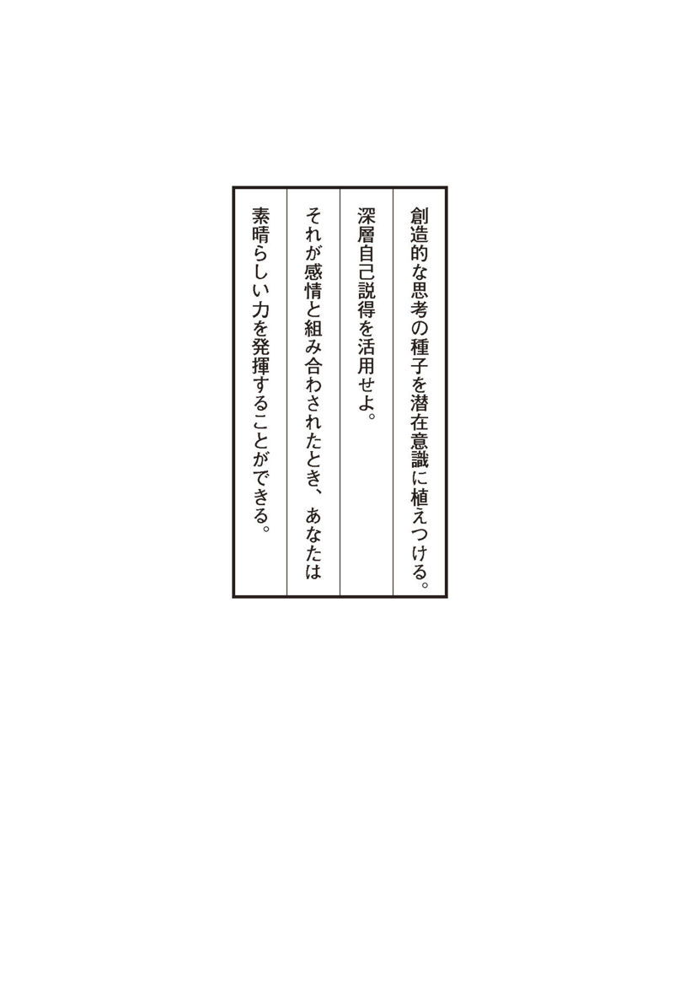
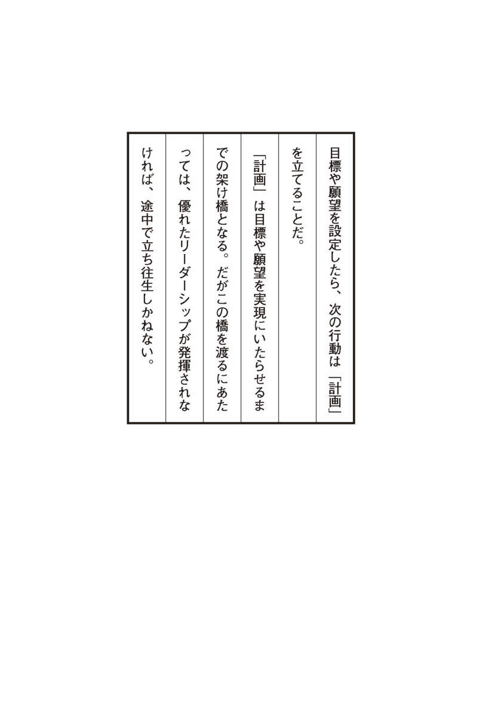
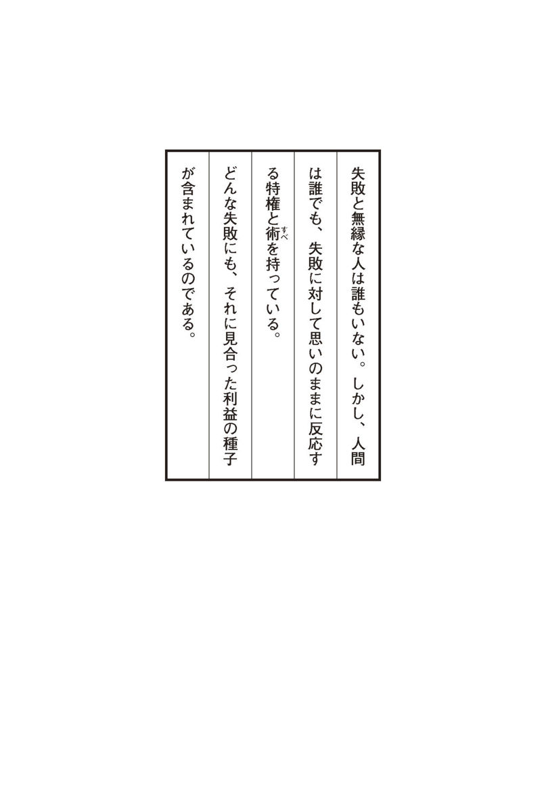

| 思考は現実化する＿アクション・マニュアルつき | |
| ナポレオン・ヒル | |
| kikoshobo (2015) | |
『思考は現実化する』の出版に寄せて
成功者と呼ばれる人々は、恐怖や悲しみ、貧困、肉体的苦痛など、どのような状況のもとでも現状を打破するために、つねに積極的な思考や心構えを維持する努力を惜しまなかった。
彼らがいかにして願望を実現するために考え、行動し、「成功」という階段を駆け上がっていったのか、その答えを解くカギが本書の随所に隠されている。
本書『思考は現実化する』は二種類あり、前者は本文のみ、後者は本文にアクション・マニュアルがついている。本書は後者のものだが、日本語版では、さらに索引をつけた。
本書を読まれることで、一人でも多くの「人生の勝利者」が誕生することを心より願ってやまない。
一九九九年三月三日
田 中 孝 顕
ナポレオン・ヒル財団よりあなたに（）
本書はナポレオン・ヒル財団が版権を所有するナポレオン・ヒル著、『アクション・マニュアル付'THINK AND GROW RICH'』の改訂新版である。
この改訂新版の『思考は現実化する』は、これまで出版された'THINK AND GROW RICH'のいくつかのバリエーション（日本語版では『成功哲学』という名で出されていた）の中で、最も新しく、かつ最も優れたものとして評価されている。とりわけ注目すべき点は、レベルをまったく落とすことなく、しかも最も理解しやすく、かつ洗練された内容となっているところであろう。また説明もこれまでのものより詳細になっている。
しかしヒル博士も言っているように、本書をただ漠然と読むなら、いくら最良の書物といえども、ただそれなりの知識がいくらか吸収できるに過ぎないだろう。「なるほど、これは素晴らしい内容の本だ！」という程度なら、あなたの心はしばしの間、くすぶるだけで決して燃えあがることはない。
燃えあがるエネルギーというものは、それが物であれ心であれ、他人がどうこうしようもないほど強烈なものである。どれほど強烈か。たとえばこんな森林火災防止用の標語がヨーロッパにはある。
樹木一本 作れるマッチは百万本
マッチ一本 燃える樹木は百万本
百万本の樹木があれば、百万×百万で一兆本のマッチができる勘定になる。結局、燃えた一本のマッチは、燃えていない一兆本のマッチの運命を左右することになる......。
燃えにくいマッチでも、何度か擦っているうちに火はつくものだ。人間の心というのも、どちらかというと、燃えにくいマッチのようなものである。だから何度か心を擦る必要があるかもしれない。つまり再読だ。そうして時折、必要に応じて本書の太字の部分だけを読むとかエッセンスだけ読むとかすれば、効率は必ずあがるものだ。
アンドリュー・カーネギーが基礎を作り、ナポレオン・ヒル博士が発展させ体系化したこの著名な成功哲学は、Ｗ・クレメント・ストーンに引き継がれ、現代社会に生きる経営者、ビジネスマンも数多くこれを活用し、大きな成果をあげている。十分に吟味され、検証された、この他に比類のないノウハウは、一つの体系的な真理であり、したがって洋の東西を問わず、また時代をも超越した人類共通の財産といえるだろう。
今、知り得ている範囲で言えば、アムウェイ・コーポレーションの創業者のリチャード（リッチ）・Ｍ・デヴォス、大リーグ、アトランタ・ブレーブスのオーナーであり、二四時間ニュース・チャンネルで世界的なメディアとなったＣＮＮのほか二局を持つＴＢＳ（ターナー・ブロードキャスティング・システム）の会長、テッド・ターナー、ビジネス誌『フォーブス』を発行するフォーブス・マガジン社会長のマルコム・フォーブス、社会教育家のノーマン・ヴィンセント・ピール博士、アール・ナイチンゲール博士、オグ・マンディーノ、クライスラー社のリー・アイアコッカ、米国の大手化粧品会社、メアリー・ケイ・コスメティック社会長のメアリー・ケイ・アッシュ、ドミノ・ピザ・チェーン店、ドミノ社の創立者のトム・モナハンなど、錚々たるメンバーがナポレオン・ヒル博士の成功ノウハウの具現者としてナポレオン・ヒル・ゴールドメダルを受賞している。
ナポレオン・ヒル財団の日本での活動は、これまで二、三冊の書籍を（間接的に）出版した程度で、財団自身の活動はまったくなかった。しかし現在は、ナポレオン・ヒル財団アジア／太平洋本部の開設により、日本の経営者、ビジネスマン、ビジネスウーマン、セールスパースン、また自由業の人々向けに、ナポレオン・ヒル博士の持つすべての成功ノウハウを体系化したコンプリート・プログラム（日本語版）をはじめとして、ヒル博士に関するすべての書籍を刊行し、またナポレオン・ヒル・セミナーや各種セミナーを実施するなど、積極的な活動を展開している。
最後に、本書を立体的に理解するために、ナポレオン・ヒル博士の著『心構えが奇跡を生む』（きこ書房刊）をぜひ併せ読んでいただきたい。同書は、本書のより深い理解に役立つとともに、本書を補完する部分を多く含んでいるからである。
これらの書籍により、一人でも多くの方が成功の果実を自分のものとされ、〝一度しかない人生を充実して生きる技術〟を体得されんことを願ってやまない。
一九九九年三月三日補訂
ナポレオン・ヒル財団アジア／太平洋本部理事長
田 中 孝 顕
思考は現実化する／目次
「ナポレオン・ヒル博士の成功哲学」の奇跡──Ｗ・クレメント・ストーン
序 章 求―――ナポレオン・ヒル博士の「成功哲学」が完成されるまでの軌跡
思考は現実化する！
「奇跡を起こす人、ナポレオン・ヒル博士」──Ｗ・クレメント・ストーン
第１章 思―――成功のための基本的な考え方
思考は現実化しようとする衝動を秘めている
●「思考」によってトーマス・エジソンとの共同事業を実現した男
第２章 望―――成功のための第一のステップ
願望の設定は、あらゆるものの達成の出発点である
第３章 信―――成功のための第二のステップ
信念は願望実現の原動力である
第４章 復―――成功のための第三のステップ
深層自己説得を活用する
第５章 専―――成功のための第四のステップ
個人的経験と観察力を高める
第６章 想―――成功のための第五のステップ
脳の中に浮かぶ森羅万象の世界を活用せよ
第７章 計―――成功のための第六のステップ
体系的な行動計画を立てる
第８章 決―――成功のための第七のステップ
速やかに決断せよ
第９章 耐―――成功のための第八のステップ
忍耐力を身につける
●「失敗」は、あきらめない人にとってのみ成功への一里塚となる！
●逆境の中には、すべてそれ相応かそれ以上の大きな利益の種子が含まれている
第10章 協―――成功のための第九のステップ
マスターマインドの力
第11章 動―――成功のための第一〇のステップ
モチベーションを生み出す魔法のアイデア
第12章 潜―――成功のための第一一のステップ
潜在意識は海面下の王国である
第13章 器―――成功のための第一二のステップ
頭脳は宇宙が宿る小さな器である
第14章 感―――成功のための第一三のステップ
第六感は英知の殿堂への扉を開く
第15章 転―――成功のための第一四のステップ
強烈な本能を創造的なものに転換せよ
第16章 敗―――成功のための第一五のステップ
失敗も生き物である
第17章 悲―――成功のための第一六のステップ
悲しみを通して魂にいたれ
第18章 恐―――成功のための第一七のステップ
不安という名の七つの亡霊
ナポレオン・ヒル財団アジア／太平洋本部からのお知らせ
きこ書房・毎朝届く無料メールマガジン『成功の黄金率』登録はこちらから
Facebook
『思考は現実化する』の学習要領──ナポレオン・ヒル財団
一、この本の特徴とその活かし方
●誰をも成功へと導く
ナポレオン・ヒル博士の『思考は現実化する』の目的の一つは、第一に読者であるあなたが、すでに大成功者となった人々の頭脳となんら変わることのない優れた頭脳を持っていることを、はっきり確認すること（なぜなら、それは事実であるから）にある。
第二に、そのあなたの頭脳の用い方が、いくつかの点において間違っているのかもしれないことを本書によって確かめ、もしそうなら、この八〇年の歳月をかけた調査、研究、分析の集大成である本書、そしてナポレオン・ヒル・プログラムを学ぶことによって、確実な成功を収めていただくことにある。
本書は「考える脳力」（当然のことだが誰でも持っている）と「富（精神的であれ物質的であれ）を得たいという願望」を持つ人なら、誰をも成功へと導く不滅の哲学を紹介するものである。その哲学は、時代と国境を超えたノウハウ、そしてアイディアをたくさん含んでおり、進んでそれを実践する時間と努力を惜しまない人にとっては、非常に価値あるものなのである。
またこの本は、「何をなすべきか」ということばかりではなく、それを「どうすればよいのか」ということもわかりやすく具体的に教えてくれる。成功への道を歩むための方向づけをしてくれるのである。
さらに、活動計画を立てたり、ものごとを予想したり、感情や思考をコントロールしたり、客観的に考えたり、自分の精神状態を分析したりするための、健全で効果的なブループリントも提供してくれるのである。
また、『思考は現実化する』は、他人の考えを双方の利益のために利用する方法や、あなたのパーソナル・サービスを売る方法も教えてくれる。
つまり、成功へのプロセスであなた独自の潜在脳力を活かすためのさまざまな方法を教えてくれる本なのである。
●金儲けだけを目的にしたものではない
『思考は現実化する』は、金儲けだけを目的にしたものではない。それどころか、経済的自立以外のどこに素晴らしい富があるのかということを示している。これは、あなたの人生、家族、仕事仲間、そして友人の間に調和をもたらそうという試みなのである。
そのうえ、あなた自身とあなたの愛する人々と世界中のすべての人々の至福のために、この広大な宇宙の中で実りある日々を送る助けとなる内面的調和──心の平安へと導いてくれる。ということは、この本は驚くほど莫大な数の目的を包含するものだということになる。だからこそ、多くの成功を望む人々に多大な影響を与えてきたのである。そして、この本に書かれていることを実践したときに、あなたの行うことのすべてにその効果が顕著に現れてくるのである。
●奇跡を起こすエネルギーはあなたの心の中にある
このことは奇跡が起こるという意味ではない。そうではなくて、どうやったら奇跡ともいえるようなことを起こせるのかを、あなたに伝えるということなのである。いうまでもなく、ここでいう奇跡とは、あらゆる超自然現象を指しているのではない。奇跡を起こすエネルギーはあなた自身の中に、つまり、あなたの頭脳と精神の中にすでに存在しているのである。その存在とは、あなたの潜在脳力である。
そのような潜在脳力は誰でもが持っているが、潜在脳力はそれを具現化しない限り、どんなに素晴らしいものであっても無意味なのである。
●あなたのこぶしを開いてみよう
このことを一例をあげて考えてみよう。この話は、古代ギリシャ時代にまでさかのぼるのだが、アリストテレスのテキストにも出てくるものである。
まず、こぶしを作ってみてほしい。それは何なのか？ ただのこぶしである。そのこぶしで何ができるだろうか？ 誰かを殴り倒したり、物を動かすことはできるが、そうたいしたことはできない。そのこぶしを作る前は、もともと何だったのだろうか？ 答えは簡単である。「開いた手」である。そこで、こぶしを開いて、それで何ができるかを考えてみてほしい。開いている手はいまや素晴らしい道具である。こぶしではできなかったことが無限といえるほど可能になるのである。
あなたの心もそれと同じである。今の時点では、あなたの心は固く閉ざされていて、ほんの初歩的なことしかできないかもしれない。
しかし、『思考は現実化する』を読み始めれば、こぶしが開いたようにあなたの心も開き始め、より柔軟性を持った、より有用な成功への道具となるであろう。本書を基礎として、さらにナポレオン・ヒル・プログラムに進めば、あなたは完璧に成功へのエネルギーを蓄え、人生をより拡大、充実させることができるだろう。
●あなたの新しい未来を開いてくれる
それがこの本の力である。新しくて広大な、そして刺激的で魅惑的な視野を与えてくれる一方で、あなたの潜在脳力を拡大し、それを活かす方法を教えてくれるのである。それは、あなたにまったく新しい未来を開いてくれるに違いない。素晴らしい未来、生産的未来、成功の未来なのである。このナポレオン・ヒル博士の著書の中に、その秘密を発見したとき、あなたは、あなたの望むものを何でも手に入れることができるのである。大自然の法則や他人の権利を侵さない限り、富でも何でも、すべてあなたのものなのである。そのために支払う代価は物ではない。「考える」ことである。「考える」ということは、じっくり学習し、熟考し、計画するということを含む広い意味合いを持っている。
ここで、図書館にぼんやりと座っていた偉大な人物の話をご紹介したい。一人の友人が彼に歩み寄って言った。「君はなぜ働かないのか？ ここに座ってるだけじゃ何にもならないじゃないか。そこらじゅうにやることは山ほどあるのに、君はいったい何をしているんだ？」。これに対してその偉大な男は、短いけれども深遠な答えを述べた。「私は世界中でいちばん難しいことをしているんだ──考えることだよ」
●「考える」習慣を身につけよう
そうなのだ。考えることは容易ではない。しかし、あなたがぜひ成功したいと願うのなら、考えることは絶対に必要なことなのである。『思考は現実化する』から最大限の恩恵を得るためには、その代価を払わなければならないのである。その代価──考えること、学ぶこと、計画を立てること、実行に移すことを準備していただきたい。その習慣を身につけてしまえば、あなたの生活に変化が現れ、それによって、あなたの生活がさらに充実したものになるであろう。それは、あなたが人生の試練や苦難に耐え、それから何かよいものを生み出す力が与えられるという意味である。
どんな逆境の中にも、それと同等かそれ以上の、より永続的な利益の種子が含まれているのである。ナポレオン・ヒル博士の『思考は現実化する』の中に、あなたは多くの疑問に対する答えを見出すだろう。そして、上手に計画し、自己分析と他人のアイディアから恩恵を受けることを学ぶはずである。言い換えれば、あなたは自分自身を、つまり、あなたの中に眠っている莫大な潜在脳力を発見することができるのである。その脳力を使って学習し、計画し、そして考えていただきたい。
二、自己啓発書を読むときのコツ（）
●自己啓発書の特徴
ここで、『思考は現実化する』だけでなく、一般的な自己啓発書を読むときのコツについて述べておきたい。
その前に、まずどのようなものが自己啓発書としてふさわしいか、という点について若干触れてみよう。最も注意すべき点は「内容が机上の空論」であるかどうかだ。読む前に、このことを判別することは、少し難しいが、方法がないわけではない。
まず第一に著者の年齢と経歴に注目すべきである。著者は物心ともに成功者というに堪えられそうな人物かどうか。顔写真が載っていたら、それも参考になるだろう。
ただ、著者が学者である場合、二つの問題が生じる。第一に、心理学や大脳生理学、あるいはその周辺分野をマスターした教授や博士なら、ほぼ内容に信頼を置いてよい。ただし、ゴーストライターが書いたものもしばしば出回っているので、なかなか判別は難しい。それ以外の分野の専門家の場合は、その内容に、当人の実体験に基づいたものが含まれているかどうか、また含まれていても、それ以外の部分に他の啓発書の借りものが含まれているかどうかに、注意すべきである。たとえば、ナポレオン・ヒル博士のノウハウを多く引用し、これに著者の解説をつける形態で本を書く者が今でもあとを絶たないが、これは正義に反する行為である。
最後に著者が実業家、宗教家として名をなしている場合は、その内容に信頼を置いてよい。単なる成功の研究家の著書というのはお勧めできない。
創造的な刺激を与えてくれる自己啓発の本には、ユニークな特徴を持ったものがたくさんあるが、読んで学習する際に、次のような特徴を理解していれば、その本からより多くのものを得ることができるだろう。実際には、成功を手にした人々が著した自己啓発書こそ読むに値するものである。その情報の主要な部分は、著者が直接体験したものであって、また聞きしたものではないので、読者であるあなたを、頭だけでなく心と感情で読み進ませてくれるのである。
数多くの参考事例や実例が示してあり、さまざまなアイデアやノウハウや概念や実在の人物が紹介されるが、その中の何人かの好ましい事例を選んで見習うことをお勧めする。彼らは、成功するための代価を払った人々であり、あなたが「もう一人の自分」を探し出す道程を共に歩いてくれる人々でもあるからである。もっとも、ただ頭の中でこねくりまわし、机上の空論を説く著者の「自己啓発書」は、何の役にも立たない。評論家が気まぐれに書いた「自己啓発書」も同様だ。
●アイディアやノウハウの活かし方
自己啓発書に内包されているアイデアやノウハウは、まるでショットガンのようにいたるところにちりばめられている。どのページのどんな場所にも、一つのアイデアやノウハウを見つけ出す可能性があるのである。それらのアイデアやノウハウは、海岸の砂のように、そこここに散在している。全体としては見事に融合する一方で、その一つひとつは、具体的な行動基盤を持っているのである。そのため、読者はそれぞれ異なったアイデアやノウハウを見出すことになろう。慎重に自己啓発書を読むことが必要になるのである。
自己啓発書のアイデアや説明は、サラサラと流れる山間の渓流のように書かれている。その流れはどこでも同じ深さのように見えるが、よく見ると深い淵や浅瀬があって一様でないことがわかる。
自己啓発書は読者の一人ひとりに固有のものを与えるのである。したがって、何度もその本を読み返してみることをお勧めしたい。
●小説とは違う自己啓発書
自己啓発書の構成は、読者であるあなたを行動に駆り立てるように意図されている。何かしら意義深いアイデアやノウハウに出合ったら、いったん読むのを止めて考えると、行動したくなるかもしれない。
その結果、自己啓発書は通常、小説のようには読まれないものである。小説では、その作者が結末をコントロールしているが、自己啓発書では、読者が結末をコントロールするからである。また小説は、人生に大きな実りをもたらしてくれる場合もあるかもしれないが、たいていは、一服のトランキライザー（精神安定剤）の役割しか持っていない。心の中で、別世界を楽しむのである。自己啓発書も読むと心躍るものである。しかし、それでお終いにしてしまったら、やはり、一服のトランキライザー以上のものではなくなってしまうだろう。しかしそれでは、得られる多くのものをページを閉じた時点で放棄するようなものだ。実行に移さなくては何の意味もない。
またあなたは、自己啓発書の評論家になっていないかどうか、自分をチェックしてみよう。評論家は批評こそすれ、そこから何かを学ぼうとする気構えはない。
三、『思考は現実化する』を読むときの具体的留意点
⑴ アイデアは思いがけないところから出てくるものである。したがって、手元にメモ帳を用意して読むことが肝心である。重要なことは何でも、すぐに書き留めておこう。
⑵ 重要な用語や言葉、文などにアンダーラインを引いたり、ページの余白に思いついたことを書き入れるのもよいだろう。
⑶ 自分の欲しいものを常に考えながら読んでほしい。読みながら自分の探しているものを知るためである。
⑷ あなたに欠けているものや問題に対する答えが、この本の中にあるという信念を持って読んでいただきたい。前向きな期待を持つことが大切である。
⑸ 自分のために書かれた本だと思って読んでほしい。それは、読者の一人ひとりに宛てた、著者からの秘密の手紙なのである。
⑹ たった一つのアイデアでも、それが行動に移されれば、あなたの人生が変わるということを覚えておいてほしい。
⑺ 「これは、私にとって何を意味するのか」という問いかけをするべきである。あなたはつねに、行動への踏み台を探しているからである。
⑻ 考える時間がとれるように、ゆっくり読み進んでいただきたい。イマジネーションの中でアイデアが浮かんだら、それは自由に浮かぶがままにさせておこう。
⑼ あなたはその本から「ハウ・トゥ（どうやるか）」について特に留意したいと思うだろう。よい自己啓発書は「何をするべきか」だけでなく、「それをどうやるのか」についても教えてくれる。その両方と、それらの関係に留意していただきたい。
⑽ あなたは、その本を読むたびに、そこから示唆された何かを実践してみたくなるだろう。それは、あなたがその本を読まなかったら、決して起こさなかったであろう行動なのである。
忘れないでいただきたい。力となるのは、単なる知識ではなく、応用された知識なのである。自己啓発書を読んで学習することの目的は、行動することにある。一つのアイデアやノウハウに根ざした行動である。本の中に理解できない概念が出てきても心配する必要はない。理解できるものを行動に移しさえすればよいのである。
四、『思考は現実化する』はあなたを変える！
『思考は現実化する』は、あなたがこれからやろうとすることのすべてについて手助けをしてくれる本である。まさに、あなたの人生を変える一冊だといえるだろう。この本が明かす秘訣を吸収し、自分のものにすれば、あなたは、間違いなく永続的な成功の秘訣を手に入れたことになるのである。
富、地位、名声（これらを求めることに臆病になることはまったくない。知識人の中にはいたずらに富、地位、名声に対して嫌悪感を示したり、否定したりする人がいる。確かにその言葉の中には若干の真理が含まれていることもあるが、多くは、そう主張することのカッコよさに酔っているのだ。彼らの主張を受け入れたところで、それは何の利益もあなたにもたらさないだろう。ただし、富のための富、地位のための地位を求めるというのは間違いである。これでは他人に何の利益ももたらさないからである。奉仕の心構えと実行は常に忘れてはならない。貴腐ワインというのがあるが、あなたは堂々と貴族たることを目指すべきだ。恥じることは何もない）、その他特別に達成したいことなど、あなたの願望や目標が何であれ、もしあなたが、
⑴ 真剣に成功したいと願っている──
⑵ 容易にノウハウを利用できるように、徹底的にこの本を学習し、努力を続け──
⑶ 自分の習慣になるまで、ノウハウを用いることを止めない──
ならば、かならず価値ある願望や目標を実現することができるのである。
いかなる成功であれ、それは、成功を望む人々が学んで用いることのできる一つの公式に集約することができる。この『思考は現実化する』のノウハウを活用することによって、あなたは、自分の願望や目標を実現することができるのである。間違いなくあなたは、それを実現させるであろう。
なお『思考は現実化する』は、ナポレオン・ヒル・プログラムの中で最も基礎的な地位を占めている。より成功を極め、レベルアップをはかりたい人のためにはＰＭＡ、ＨＳＳ、あるいは財団推薦の各種プログラムが用意されている。関心のある方は用いるとよいだろう。そこにまったく新しい世界を発見するに違いない。
「ナポレオン・ヒル博士の成功哲学」の奇跡
Ｗ・クレメント・ストーン
●願望とは、夢を現実に変えていくことである
私はナポレオン・ヒル博士のこの『思考は現実化する』、そしてこの本の内容をより深く掘り下げ、成功に関する実践的ノウハウとして燦然たる栄誉に輝くコンプリート・プログラム（ＰＭＡプログラムとＨＳＳプログラムの総称）の奇跡についてあなたにお話ししたいと思う。今日という日は、あなたの生涯の中でも最も重要な一日になるだろう。
なぜか。それは、今日はあなたがナポレオン・ヒル博士の、成功に関する哲学を知る術を知った日だからである。私の一生の中でも、本書の旧版を手にした一九三七年のある一日が最も重要な一日となった。あなたもまたこの最新版の著書を読むことによって、いろいろな奇跡と出会うことになるだろう。そしてさらに、ナポレオン・ヒル博士の実践的成功ノウハウの全容を明らかにするコンプリート・プログラムへとお進みになることをお勧めする。
では奇跡とは何だろうか。奇跡とは「不可能だと信じられているゴールを達成すること」である。到達不可能だと思われているゴールでも、本書そしてコンプリート・プログラムによって、それは実現可能となるのだ。私を含め、これらのプログラムで人生が変わるほどに影響を受けた人々が無数に存在することが、何よりの証拠だ。しかしそのゴール、またそのゴールに到達するための手段は合法的なものでなければならないことはいうまでもない。ここで足を持たずに生まれた、ある男性の経験を話してみよう。彼は、ナポレオン・ヒル博士が確立した成功ノウハウを理解し、コンプリート・プログラムを十分に活用した。そして、現在彼は、彼にとってはとうてい不可能と思われたゴールに向けてたくましく、また誇らしげに前進している。
ヘンリー・ヴィスカーディ・ジュニア博士はヒューマン・リソーセス・センターを設立し、また身障者のために多大な献金をしたという業績により、一九八四年にナポレオン・ヒル・ゴールドメダルを受賞している。彼は受賞の際に次のように語っている。
「私はナポレオン・ヒルという偉大な名前のついたこのメダルを受賞することができ、深く感謝しております。私は足を持たずにこの世に生まれました。そして私の生涯の最初の七年間は、病院の中で育てられました。二七歳になるまで、つまり今、私が身につけている義足をつけるまでは、立ち上がることすらできませんでした。その間私は、重い障害を持った子どもとして、つらい生活と闘ってきました。私の青年期は暗く悲惨なものでした。
私は子どものころ、母に、
『どうして僕はこうなの？』
と聞いたときの母の答えをよく覚えています。母は彼女なりの知恵で、このように説明してくれたのです。
『世界でまた、足のない少年が一人生まれなければならなくなったのよ。天国で神様と天使たちは、どの家族にその少年を送り込んだらいいか、話をしたの。そのとき神様は、ヴィスカーディ家が、そういう少年を送り込むのに最もいい家庭だ、と決めたのよ』
というのです。
私はアメリカに住み、そしてこの国は私の理想を育んでくれました。この国は私に障害者としてではなく、他の人とまったく平等な一人の人間として自分の運命を切り開いていく、自由な機会を与えてくれました。
つまり、愛する女性と結婚する自由、それから自分のやりたいことができる自由です。何年も前のことですが、ある一人の医師が私の人生に大きな変革をもたらしてくれました。
彼は初めて私に義足をつけてくれ、まっすぐ立つことを可能にしてくれたのです。そのとき私は、義足の代金を支払うことができませんでした。しかし医師は私にこのように言ったのです。
『私が君にしてあげたことを、君がもう一人の障害を持った人に対してしてあげられるならば、それで十分です』
そして今、私はここで皆さまに次のようなお約束をしたいと思います。
この世に保証よりもチャレンジを好み、生きることのスリルを味わいたいと思っている障害者が一人でもいたならば、私はその人のために、私のエネルギーのすべてを捧げたいと思います。
願望や目標を持つのは義務であって、決してぜいたくなことではないのです。願望とは、夢見ることではなく、夢を現実に変えていくことなのです。夢を持って、その夢の実現のために代償を支払う用意のある人は、幸せだと思うのです。
私はありふれた人間ではありたくないのです。私は安定を求めるのではなく、機会を求めたいと思います。そして願望を明確にし、人生設計をし、自分の目的のために冒険したいと思っています。
私はほどこしを受けたくはありません。私は〝自由〟を、どんなものとも引き替えにしたくありません。また他人の奴隷にもなりたくはありません。おどしにも屈しません。
私は自分で考え、行動したいと思いますし、自分がこの世に生まれてきたことの恩恵を享受したいのです。私は堂々と世間に顔を向け、自分はこれだけのことをやったんだ、と言いたいのです。
私はあなた方に対して願っていることがあります。それは障害者に対して願っていることとまったく同じです。
私はあなた方に対して、そしてまた障害のある人に対して、将来の成功と幸福を祈りたいと思います。
しかし、世間でいう成功とか幸福というのは、あまりにも安易すぎます。私が強く願うのは、あなた方の生涯の残りの年月の毎日毎日が、真に意味あるものであってほしいということです」
聴衆の多くは目に涙を浮かべ、立ち上がってこの男性に拍手喝采を送ったのであった。
●強い意欲を伴った願望は奇跡を生む
何年か前になるが、私は徹夜である人の願望に対して祈った。
そしてその翌朝、私もまた素晴らしい願望を持とうと決心したのである。そのときの私の願望は、今もまた今後も変わることはない。それはこの世界を、将来を、子孫にとっていっそう住みやすいものとする、ということであった。その願望は今や世界のあちこちで達成されつつある。
私の娘、ドンナ・ストーン・ペッシュもやはりナポレオン・ヒル博士の書籍およびコンプリート・プログラムから学んだ一人である。そしてこの本やプログラムに述べられているノウハウを学び、応用して、願望を達成しようと心に決めたのである。
かつて、世間一般では、子どもに対する暴力というものは、貧しい階層の中だけで起こる極めて珍しい出来事だと考えられていた。しかし一部の専門家と私の娘ドンナはそうは思わなかった。
ドンナはどんな子どもも暴力を受けることがあってはいけない、と考えたのである。そしてその気になれば、子どもに対する暴力を防ぐことができる、と考えたのだ。彼女は熟考した末、一つの結論を得た。それが「子どもへの暴力を予防する全国委員会〝ＮＣＰＣＡ〟」の設立だった。
ドンナは膨大な時間とお金を投資して、この組織をシカゴで発足させたのである。それはやがて全国に多くの支部を置くまでになった。さらに彼女は全国広告評議会を促し、ＮＣＰＣＡの後方運動を支援する約束をもとりつけた。
その結果、新聞、雑誌、テレビ、ラジオ、広告を通して、子どもへの暴力に対する認識を深めることができたのである。
●ナポレオン・ヒル哲学の第一原則
はっきりとした願望や目標を持つこと、そしてこの価値ある願望や目標を達成するために、燃えるような意欲を育むこと。これこそが、「ナポレオン・ヒル博士の確立した成功哲学」の第一原則である。ヒル博士は、これこそがあらゆる成功への出発点だと述べている。
コンピュータはあなたの頭脳、神経系統と同じような機能を持つように設計されている。もちろんその精密さと複雑な働きという点では月とスッポンだが、それはさておき、あなたが所有している脳という人間コンピュータでは、あなたが思考を指示し、感情をコントロールし、そして運命を定めることができる。
この優れた脳力を発揮するためには、当然のことながら犠牲を払わなければならない。その犠牲とは〝時間〟である。毎日、わずか三〇分間、創造的な思考の時間を持つようにすること。
その間は、あなたの願望や目標に意識を集中するのだ。重要なことは、あなたの願望に意識を集中するということである。そして自分が望まないことは絶対に考えないようにする。といっても、どうしても浮かんでくるときは、あえて押さえ込もうとはせず、無視して、自分の望むことにさりげない注意を払うようにすることだ。
そして、朝起きたとき、また日中、さらに就寝前に、できるだけ頻繁にあなたの願望（目標）を思い浮かべる習慣をつけるようにするとよい。あなたの大脳コンピュータは、繰り返しの行為によってプログラムされるようになっているからである。
●無数の成功者を輩出したヒル博士の成功ノウハウ
人生では、よほど慎重かつ大胆に企画し、かつ行動しない限り、希望するものを確実に手に入れることはできない。そしてまた、あなたの願望や目標に対して、どれだけの進展があったのかを毎日チェックすることも、不可欠の条件なのである。
あなたが本書を手にしたのは、手助けとなるようなアイディアを見出すためかもしれないし、ビジネス上の願望や目標を達成するためかもしれない。あるいは、個人的な問題を解決するため、富豪となるため（富豪となることをためらうことはない。富をうまく活用して、人々の役に立ち、そしてまたあなたの脳力を最大限に活かすことは素晴らしいことだ。これを「拝金主義」と混同してはならない。富は手段であって、決して目的ではないのだ）、人生の大きなゴールを設定するため、心の安らぎを得るため、自分自身に徳育、すなわち人徳を高めて人間的魅力をつくるため、あるいは自分の運命をコントロールするためかもしれない。
ところでナポレオン・ヒル博士が述べる奇跡というのは、あなたの人生の中で信じられない幸運をいかにして引き起こすか、ということだ。引き起こすのはあなた自身なのである。
そして、あなたはその秘訣を、本書をはじめとして、ナポレオン・ヒル博士の一連の書籍およびプログラムの中で確実に学ぶことができる。要約すれば、これらの書籍やプログラムによって、あなたはあなたの頭脳の無限の力をどのように活用すれば、自分の潜在脳力を最大限に発揮することができるか、ということを体得できるようになる。
ナポレオン・ヒル博士の成功ノウハウは、長い年月にわたって、その正しさが証明されている。事実何百万人という男女がそれを証明している。
実際、成功に関する体系的なノウハウが一人の人間の手によって（そしてまた第一期だけでも五〇〇人以上もの著名人の共同作業のもとに）、これほど長い歳月（第一期一九〇八～一九二八年、第二期一九二九～一九八八年）をかけて完成されたというのも、歴史上かつてないことである。
さらにいえば、成功ノウハウの完成後、七〇年経過した今日でも、内容の新鮮さをまったく失っておらず、現在でも多くの人々がヒル博士のノウハウによって大きな成功を収めているのだ。
ヒル博士の成功ノウハウは一九六〇年代にさらに磨きをかけられ、こうして誕生したのがコンプリート・プログラムなのである。本書、そしてまたヒル博士のこれら一連のプログラムを手にすることによって、あなたの人生も必ず大きな転機を迎えるだろう。
価値ある願望や目標を達成することに不可能なものはない。
本書を読み、あるいはまた、コンプリート・プログラムをマスターしたあと、いったいあなたの人生の中で、どのような奇跡が引き起こされることだろうか。ともかくこれだけは覚えておいてほしい。あなたは、世の中の規律や正義の法則、あるいは他人の権利を侵さない限り、どんなことでも達成することができるのだ。
●Ｗ・クレメント・ストーン〔W. Clement Stone〕について
Ｗ・クレメント・ストーンは、世界最大級の特殊損害保険会社、エイオン・コーポレーションの会長で、傘下に、全米最大手のコンバインド・インシュアランス・グループほか三社を保有している。同時に彼は全米でベスト二五〇人中の一人に入る大富豪でもあり、現在アメリカ各地に三〇〇〇もの図書館を寄贈するなど、社会奉仕活動も盛んに行っている。これらの活動が注目され、一九八一年にはノーベル平和賞の候補にノミネートされた。
彼もまたナポレオン・ヒル・プログラムによって、今日の富と平和を築き上げた一人である。彼は、自分がナポレオン・ヒル・プログラムを実践する過程で気づいた新しいアイディアやノウハウを、何とか人々に分かち与える方法はないものか、と考えていたが、一九五二年、折よくナポレオン・ヒル博士と同席する機会を得た。以降、彼はヒル博士と協力して、最新版のプログラムの開発を目指した。そして一九八八年に、内容に改訂が加えられた最も新しいナポレオン・ヒル・プログラムが完成したのである。
ナポレオン・ヒル博士、そしてＷ・クレメント・ストーンの共同作業（この作業に協力した人々は初期のプログラムの制作を開始して以来、総勢一二〇〇名以上にものぼっている）によって完成されたこれらのプログラムは、文字どおり、他の追随を許さないものがある。
ナポレオン・ヒル博士のメッセージ
本書では各章で、その人生で名をあげ、富豪になった多くの人々に共通してみられる成功の秘訣について述べている。
登場人物は、すべて私自身が長い間、分析・観察してきた実在の人物ばかりである。
私は一九〇八年、当時七三歳だった世界の鉄鋼王にして大富豪の、アンドリュー・カーネギー（一八三五～一九一九）から成功の秘訣を学んだ。年老いたこのスコットランド人は、彼自身の成功のノウハウを、当時まだ若かった私に、詳しく説明してくれた。話し終えると、カーネギーは椅子に腰をおろして、目をキラキラさせながら、自分が話したことを理解するだけの頭脳を私が持っているかどうか、確かめようとしていた。
私が彼の哲学を理解したことがわかると、カーネギーは私に向かって、人生の敗北者で終わってしまうかもしれない多くの人々を助けるために、時間をかけてこの偉大な考え方を研究していく決意があるかどうかと尋ねた。
私は、
「あります！」
と答えた。そしてカーネギーの協力のもとに、その約束を果たした。本書には成功の基本的ノウハウが述べられているが、このノウハウは、それぞれ異なった人生を歩んでいる数多くの人々に、長い歳月をかけてテストをした結果、効果があることが実証されているものばかりである。
●カーネギーの遺志
自分自身で成功のノウハウについて考える時間的余裕がない人々に、すでに実証済みのノウハウを教えるというのが、カーネギーの考え方であった。彼は、それがすべての人々に役立つものであることを証明したいと思ったのである。
カーネギーはそれらの成功のノウハウを、一般の学校や大学でも教えるべきであると考えていた。そして彼は、その考え方をきちんと教えることができれば、教育制度も大幅に改善され、現在、教育に費やされている時間も半分以下に縮めることができるであろう、とつねづね語っていたものである。
本書の「信念」に関する章の一四二～一五一ページ（）では、ある青年によって創設され、世界を制覇したＵＳスチール社の素晴らしい話が紹介されている。ヤル気のある人なら誰でも、この青年が信じていたカーネギーの成功のノウハウを活用することができる。この青年とはチャールズ・Ｍ・シュワッブのことだが、彼はこのノウハウを実行に移し、その結果、多くのチャンスに恵まれ、大きな成功を収めた。シュワッブは、なんと当時で二〇〇〇億円（日本円換算）を超える富を得たのである。アンドリュー・カーネギーの希望どおり、この成功のノウハウは多くの人々の役に立った。莫大な富を得た人もいるし、家庭内の調和をはかることに成功した人もいる。
またある社会教育家のように、この哲学をうまく活用して年収を七万五〇〇〇ドルも増やした人もいる。シンシナティで洋服屋をしていたアーサー・ナッシュはカーネギーのこの成功のノウハウを応用し、倒産寸前の事業を見事に立て直した。ナッシュはすでにこの世にはいないが、この会社は今も大いに栄えて存続している。このナッシュの話は当時、世間の注目を浴び、新聞や雑誌はこぞって彼のことを記事にしたものである。
また私がラサール大学（ペンシルヴェニア州フィラデルフィア）の広報部長をしていたころ、ラサール大学は名もないこぢんまりしたものにすぎなかったが、Ｊ・Ｇ・チャップリン学長はカーネギーの成功哲学を活用して、この名も知られぬ大学を世界的に有名な学校に変えてしまった。
カーネギーの成功のノウハウ（私はこれらのノウハウの裏付けとより深い分析を、彼から頼まれたわけだ）は、本書や本書のすべての内容を、その一部として含むコンプリート・プログラム（ＰＭＡプログラム、およびＨＳＳプログラムの総称）の中で、何百回も繰り返して出てくるが、そのノウハウに対しては、特に決まった名称を付けてはいない。それは、名称よりも、その本質を理解してもらいたいと願っているからである。
カーネギー自身も、私にその成功のノウハウを静かに語ってくれたが、その名称については一言も触れることはなかった。もしあなたに、このノウハウを受け入れる心の準備ができているならば、各章で必ず一度はそのノウハウが隠されていることに気づかれることだろう。しかし、私はあえてそのノウハウの発見法を述べるつもりはない。あなた自身でそれを発見することにこそ意味があるからだ。そしてそれは必ず発見できる。
もしあなたが、今までに挫折の経験があったり、病気や身体障害などのハンディキャップを背負っているとすれば、本書やコンプリート・プログラムに接することによって、あなたは砂漠の中にオアシスを発見したような気持ちになるに違いない。
ウッドロー・ウィルソン大統領も第一次世界大戦中に、この成功のノウハウを広く活用している。後にウィルソン大統領は、この困難な時期にあってカーネギーの成功のノウハウは、最も重要な財産であり、かつ力であったと述べている。このノウハウを一度マスターすれば、誰でも成功に向かって前進することができるのだ。
●成功には代償が必要だ
この世の中に代償を伴わない成果などない。したがって、私がここで話をするノウハウにも代償が伴う、と考えていただきたい。しかしあなたが支払う代償は、あなたが得る成果にくらべると、極めて小さなものである。
本当にこのノウハウを必要としている人にとっては、本書やコンプリート・プログラムに仮に一〇億円の値段がつけられても、決して高すぎることはないはずだ。が、本当に必要としていない人は、どんな代償を払ってもこのノウハウを得ることはできないだろう。
それは人に譲ることはできないし、お金で買えるものでもない。またこのノウハウのマスターと学歴の有無とはまったく関係がない。
トーマス・エジソンは、私が生まれる前からこのカーネギーの成功のノウハウを活用していた。
エジソンは、わずか三カ月間しか学校教育を受けていなかったが、彼はこのノウハウを活用することによって大成功をとげ、偉大な発明家として今でもその名を世界にとどろかせている。
エジソンの共同経営者となったエドウィン・Ｃ・バーンズもこのノウハウを活用している。
当時のバーンズの年収は、今でいえば四〇〇万円ほどだったが、このノウハウを学んだことにより大きな財産ができ、若くして実業界を退いてしまうほどの大成功を収めた。
このバーンズのことは、本書でも詳しく話すこととする。
こうしたいくつかの例により、誰でも富豪になることが可能であるということがおわかりいただけたことと思う。富でも名声でも幸福でも、その気になりさえすれば必ず手に入れることができるのである。
あなたは自分の思いどおりのものになることができる。私がどうしてこのようなことを言えるのかというと、きっとあなたが本書を何度か読み終えるころにはわかっていただけるものと思うからだ。
カーネギーの要請により、私は成功のノウハウについての研究を始めたが、その二〇年の間に、私は実際にカーネギーの成功のノウハウを用いたことにより大成功を勝ち得た人々を何百人も見てきた。
そのうちの主な人々の名前をあげてみよう。
ヘンリー・フォード 〔自動車の大量生産のパイオニア。一八六三～一九四七〕
ジョン・ワナメーカー 〔ジョン・ワナメーカー社の創立者。米国内最大の紳士物衣料小売店に発展させる。のち、現代的な百貨店経営の先駆者として大きな役割を果たした。一八三八～一九二二〕
ジョン・Ｐ・モルガン・ジュニア 〔世界最大の金融商社の一つ「モルガン・ハウス」の創立者。一八六七～一九四三〕
ジュリアス・ローゼンウォルド 〔アメリカ最大の小売企業シアーズ・ローバック社の会長、慈善事業家。一八六二～一九三二〕
ハーヴェイ・Ｓ・ファイアストーン 〔タイヤ・メーカー、ファイアストーンの創立者。一八六八～一九三八〕
ジョージ・パーカー 〔カナダの作家。一八六二～一九三二〕
ジョージ・イーストマン 〔イーストマン・コダック社の創業者。一八五四～一九三二〕
チャールズ・Ｍ・シュワッブ 〔ＵＳスチール社の社長。一八六二～一九三九〕
セオドア・ルーズベルト 〔政治家。米国第二六代大統領。一八五八～一九一九〕
ジョン・Ｗ・ディビス 〔政治家。一八七三～一九五五〕
ウィルバー・ライト 〔飛行機の発明家。弟と共に成功させた。一八六七～一九一二〕
キング・ジレット 〔安全カミソリの発明がきっかけで、巨大企業の基礎を築く。一八五五～一九三二〕
ウィリアム・リグレイ・ジュニア 〔チューインガムで世界最大のメーカー、ウィリアム・リグレイ・ジュニア社を創立する。一八六一～一九三二〕
サイラス・Ｈ・Ｋ・カーティス 〔出版業界の大立者。一八五〇～一九三三〕
エリスワース・Ｍ・スタトラー 〔米国のホテル王。一八六三～一九二九〕
ジョン・Ｄ・ロックフェラー 〔スタンダード・オイル社の創立者。慈善事業家。一八三九～一九三七〕
トーマス・エジソン 〔世界的発明家。一八四七～一九三一〕
ウッドロー・ウィルソン 〔政治家、米国第二八代大統領、教育家。一八五六～一九二四〕
アレクサンダー・グラハム・ベル 〔電話を発明する。一八四七～一九二二〕
ジョン・Ｈ・パターソン 〔実業家（販売業・製造業）。一八四四～一九二二〕
Ｗ・ジェニングス・ブリアン 〔弁護士、政界の指導者。一八六〇～一九二五〕
デヴィッド・Ｓ・ジョーダン 〔生物学者、教育家（インディアナ大学およびスタンフォード大学の学長）。一八五一～一九三一〕
アーサー・ブリスベーン 〔新聞の編集者（『ニューヨーク・サン』紙）。一八六四～一九三六〕
ルーサー・バーバンク 〔園芸家、植物栽培のパイオニア。一八四九～一九二六〕
エルバート・Ｈ・ゲリー 〔弁護士、財政専門家。一八四六～一九二七〕
エドワード・フィレーン 〔実業家（商業）。一八六〇～一九三七〕
フランク・Ｗ・ウールワース 〔Ｆ・Ｗ・ウールワース社の創立者、世界有数の小売業者で欧米諸国に合計四七一〇の店舗を持っていた。一八五二～一九一九〕
以上のような人々である。もちろんこれはほんの一部の人にすぎない〔訳注...なおここに列挙した人々は、すべて米国の代表的な人名事典であるウェブスター・ニュー・バイオグラフィカル・ディクショナリーに掲載されている〕。これらの人々は、カーネギーの成功のノウハウを活用して、さまざまな面で偉大な成功をとげ、いちやく有名になった人々の一部である。
しかし、これらの人々の名前を見るだけでも、カーネギーの成功のノウハウがわれわれの人生を価値あるものに変えてしまう力を持っていることが、十二分におわかりになると思う。私の知る限り、自分の意思で、カーネギーの成功のノウハウを活用したにもかかわらず失敗した、という人は誰一人いない。
これらの事実から、いわゆる学校教育と呼ばれているものより、この成功のノウハウのほうが、人生にとってはるかに重要であることがおわかりいただけると思う。それでは本当の教育とはいったい何なのか、ということになるが、これについては後で触れよう。
●すべてはアイデアに始まる
ところで、あなたにヤル気さえあれば、この本を読み続けるうちに、私の言う成功のノウハウが、突然あなたの目の前に鮮明な形となって現れてくることに気づくはずだ。この本の最初のほうで早くも衝撃を受けるか、あるいは最後のほうで衝撃を受けるかそれはわからないが、そのときがきたらしばらく立ち止まってみてほしい。その瞬間こそが、あなたの人生の大きな転機なのだ。
そして引き続き、ぜひコンプリート・プログラムを学んでほしい。これは私の二〇年間 （一九〇八年の秋からスタートした）の成果である初期の成功プログラム完成後さらに三二年間を費やし、合わせて五二年の歳月を費やして完成させた、人生の充実、幸福、成功のための完璧なプログラムである〔訳注...ヒル博士がカーネギーの要請でこの壮大な事業をスタートさせてから八〇年後の一九八八年に、コンプリート・プログラムの新版が完成している。この最新版のプログラムの完成には、旧版と合わせて一二〇〇名以上もの大成功者たちが協力している〕。
とはいえ、本書が不完全である、ということでは決してない。問題はあなたがどのレベルまで、あなたの自己実現あるいは成功、あるいは願望の実現を望んでいるかなのだ。中には「このくらいで十分」という人もいるだろう。それはそれでよい。しかしもっと自分を伸ばしたい、あるいはより以上の高みに挑戦したい、という人もいるはずだ。選択はまったくあなたの自由である。
ナポレオン・ヒル博士が、アンドリュー・カーネギーの要請に基づいて、成功哲学を完成させていく過程には、興味深いエピソードがたくさんある。ここでは一九五三年に行われたナポレオン・ヒル・セミナーでの冒頭演説を引用して、第１章以下をお読みになる際の参考としていただきたい。
「奇跡を起こす人、ナポレオン・ヒル博士」
Ｗ・クレメント・ストーン
今夜、私、Ｗ・クレメント・ストーンは、皆様にいくつかの奇跡をお話ししたいと思います。私がこんな話をしようとするのは、一つ、ただ一つの理由からです。本日、この講演を聞いていらっしゃる皆様の中に、必ず、人生が変わるほどに影響を受ける方が何人かいらっしゃることを、私は確信しているからです。そうでなくては、ヒル博士も、そしてこの私も、ここに来た意味がないではないですか。
そして、もちろん、皆様方も、せっかくここまでいらっしゃった意味がなくなってしまいます。成功をもたらす哲学をお聞きになれば、人は、自然に行動を始めるものです。
▼『思考は現実化する』との出会い
一九四〇年のことでした。私は、営業会議に出席するため、ユタ州のソルトレイクシティに来ていました。会議の始まる前に、私は、ぶらぶらと街に散策に出かけました。ホテルに戻りかけたとき、街かどの石炭屋のウィンドウが目に入りました。そこには、一二〇センチほどに積み上げられた石炭がひと山、そして、その山の前に一冊の本が置かれていたのです。その本のタイトルは『思考は現実化する』というものでした。
実は、私は一九三七年にこれと同じ本をある人からいただいたのですが、そのときから、この本を何千冊となく人々に贈呈していたのです。そして、今お話ししたとおりに、奇跡が実際に起きるのを見てきました。
皆様の中に、ソルトレイクシティ出身の方や、また、ソルトレイクシティに詳しい方がいらっしゃるかと思います。その店は、マーチンズ石炭店という店でした。ご存じの方もいらっしゃるでしょう。
私は、この店に入っていき、主人のマーチン氏に、どうして石炭の山の前にこの本を飾ったのか尋ねました。そして、私がいかにこの本を活用したかをお話ししました。また、この本を使って、いかに私が、他の難問を抱えている人たちを助けることができたかも、お話ししました。特に経済的な問題です。どうしても解決できない問題に直面していて、もう本当にどうすることもできなくなった人たちにとって、この本がいかに役立ったかをお話ししました。
この本をお読みになれば、抱えている問題を自分の資産に変える方法を知ることができます。よくナポレオン・ヒル博士が言っていることですが、 逆境の中には、それがひどいものであればあるほど、その中にその逆境のひどさに見合った、強力な幸せの種子が隠れているのです。不幸を幸運に変える、つまり、逆境であればあるほど、貴重な体験を重ねることができるのです。
マーチン氏は私に、次のような話を聞かせてくれました。
「数年前から、私はある人と一緒に商売をしてきました。石炭と砂利の商売です。両方とも赤字でした。どちらか一つを売れば、もう一つはなんとかやっていけるのではないかと考えましたが、現実はそんなに甘いものではありませんでした。そんなときに、たまたま、この本をある人から頂いたのです。この『思考は現実化する』がそれです」
彼は、「ここからの話は、普通、初対面の人にはお話ししないのですが」と、言いながら続けました。
「この本を読んでからというもの、この数年の間に私たちの商売は、両方とも赤字から抜け出すことができました。それまでに抱えていた負債を全部支払うことができただけでなく、今では、在庫の商品に加えて、一八万六〇〇〇ドルもの現金を蓄えることができたのです」
こう言うと、マーチン氏は、銀行の預金通帳を出してきて、私に見せてくださいました。
さて、去年の八月のことですが、私はエッジウォーター・ビーチホテルで、ノース・ショア・クヮオマスクラブの皆さんに、この『思考は現実化する』について、講演をしました。いつも機会があるごとに、この本を人々に差し上げていたのですが、そのときも、この本を読むべきだと、私が確信した人たちに何冊か差し上げました。この私の行為が、ある素晴らしいチャンスを呼び込んだのです。
そのうちの一人に、若い歯科医師のハーバート・ガスティントン先生がおりました。一カ月後、ガスティントン先生から、ナポレオン・ヒル博士に会いたくはないか、という連絡があったのです。シカゴのルメニア・クラブで、歯科医師を対象にしたヒル博士の講演があるということでした。
私は、ナポレオン・ヒル・プログラムが多くの人々に用いられて成功者を輩出し続けていることは知っていましたが、ヒル博士自身は、すでに他界していたものと思い込んでいたので、そのニュースにとても驚き、また喜びました。幸運なことに、博士は他界どころか、まだ、とてもお元気だったのです。昼食会で、私は、ヒル博士の隣に座ることができ、私たちは、そのとき、彼の成功哲学について話をしました。そして私は、ヒル博士に、シカゴに戻っていらっしゃるようお願いしてみました。
博士は当時、すでに引退していらっしゃいましたが、二～三日後、この私が博士のゼネラル・マネジャーになるという条件付きで、仕事にあと五年間だけ復帰することを決めてくださいました〔訳注...実際には一〇年間、共同作業が継続された〕。このようにして、私は、皆様にヒル博士を紹介することができるようになったのです。
▼理解しやすい「成功のノウハウ」
ナポレオン・ヒル財団の目的は、ただ一つしかありません。それは、アンドリュー・カーネギーからナポレオン・ヒル博士に伝授された「成功のノウハウ」、この奇跡を起こすことのできる「成功のノウハウ」を普及させることです。
財団が開設されてから、私たちは、この目的を達成するため、骨身を惜しまずに働いてきました。そして、その過程で、奇跡が起きるのを、実際に何度も目の当たりにしてきました。私の仕事関係でも、平凡な営業マンが、とても優秀なセールスパースンに変身しました。週に、三〇万円くらいしか稼げなかったセールスパースンが、一〇〇万円、三〇〇万円、さらには五〇〇万円も稼ぐようになったのです。つまり、言葉を換えて言うなら、奇跡が起きたのです。
今夜、この会場にいらしている方々の中にも、私たちのセミナーにすでに何回か通っていらっしゃる人たちの姿が、ちらほら見えていますが、たとえば、私たちの財団のセミナーでは、参加者の皆様に、いかにしたら自分自身で問題を解決することができるのか、その方法をお教えしています。方法さえ知っていれば、頭を使って、簡単に障壁を乗り越えることができるものなのです。
アール・ナイチンゲール博士によれば、ヒル博士の書籍やプログラムの素晴らしいところは、成功哲学をとてもシンプルで、理解しやすい公式にまとめあげている点です。この公式は、どんなに平凡な人でも、高校生でさえも、理解し、活用することができます。財団主催のセミナーの参加者たちの小さな成功談を一つ、ご紹介しましょう。
現在のところ、最も印象深いのは、グロウマイヤーという名前の若者です。皆様の中には、グロウマイヤー君をご存じの方もいらっしゃるかもしれませんね。音楽教師のグロウマイヤー君です。
彼は、セミナーの途中で一五分間も、とうとうと、音楽教師が一週間に二万円以上稼ぐことがいかに不可能であるか語りました。こんな参加者を持ったとき、私は、ただカリキュラムどおり講義を進め、結果的に誰の問題も解決できないまま終わるよりは、とにかく一人でも、現実に直面している問題を徹底的に解決することが賢明だと思いましたので、私はセミナーの参加者と一緒に、彼の問題について、約一時間考えてみました。
その後セミナーが修了してから、私はグロウマイヤー君から手紙を受け取りました。その手紙にはまずコースの終わりにセミナーを数回欠席したお詫びが記されており、さらに続けてこう書かれていました。
「まず、最初にお伝えしたいことは、あのセミナーを受けてから、私は、とてもよく眠ることができるようになったことです。以前、私は万事において、とても神経質でしたが、最近では、人間が丸くなり、鷹揚な性格に変わってきました。本当に、私は一生、ナポレオン・ヒル財団に借りができてしまいました。
ところで、成功のノウハウがまだ理解できないでいるとき、私は、音楽教師が、週に二万円以上稼ぎ出すのは無理であると申し上げましたが、覚えておいででしょうか？ さて、この話が先生に喜んでいただけるのではないかと思うのですが、コースを修了した私の、ここ一〇週間の平均収入は、一週、八万円から一〇万円ぐらいになったのです」
このように、財団のセミナー参加者が経験した成功の例は、本当にいくらでもあります。
▼五年間で五〇年分の仕事をしたい！
私とナポレオン・ヒル博士は、この五年間で五〇年分の仕事をしようと決めました。これをするためには、多くのナポレオン・ヒルを作らなくてはなりません。カセットとマニュアルなどからなるナポレオン・ヒル・プログラムもより完璧なものにしたい、という気持ちもありました。また多くのインストラクターが必要です。さらに、この成功ノウハウを学ぼうとする人たちすべてが、教えを伝授できるような組織作りをしなければなりません。
ウィークデーには、必ず誰かが、この成功哲学の教えを受けるために、ナポレオン・ヒル財団を訪れます。中には遠い地方からわざわざやってくる人もいます。外国からもやって来ます。先週も、ローマから一人やって来たばかりです。
私たちが普及しようとしているこのノウハウは、ヨーロッパのものとはまったく違うものです。私たちのノウハウは、個人が求め、そして信じれば、望むものは必ずかなえられる、というものです。
「求め、信じれば、手に入れることができる」。今夜は、ぜひ、このスローガンを覚えてお帰りください。そして、このスローガンを決して忘れないよう、心に強く焼きつけてください。このスローガンを信じてください。そうすれば、皆様方は、今夜から自分の望むものは何でも手に入れられる、素晴らしいノウハウを身につけることができるのです。
たとえば、あなたが発展途上国に行ったとします。まだこのような成功ノウハウを知らない多くの現地の人々の間で、この素晴らしい脳力、大自然が人類だけに与えたこの脳力、つまり、求めれば、何でも望むものを手に入れられる脳力を、すべての人間が持っているのだということを、あなたは数多くの人々に教えてあげることができます。
人を助けることは、自分自身を助けているのと同じことです。そのうえ、人に教えることは、とても楽しいこと、そして、スリリングなことだとお気づきになるでしょう。
さて、私がナポレオン・ヒル博士の成功ノウハウについて、お話しするにあたり、いつも用いる言葉があります。それは、「このノウハウが本当に有効なものであるかどうかを確かめるのはあなた自身だ」という言葉です。
私は、彼を「奇跡を起こす人、ナポレオン・ヒル」と呼びますが、その理由をお話ししようとすれば、幾晩あっても足りません。もし、皆様の用意が整っていらっしゃるのなら、つまり、彼の成功哲学を受け入れるだけの器量をすでにお持ちでしたら、とにかく、お聴きになってください。注意深く聴いてみてください。そして、彼が、皆様に伝えようとしているメッセージを、皆様の今後に、ぜひ、活かしてください。それではナポレオン・ヒル博士をご紹介します。
「成功哲学はこうして完成した」
ナポレオン・ヒル
どうもありがとうございます。ナポレオン・ヒルです。
皆様、こんばんは。今晩、この会場に多くの方々がいらっしゃっており、たいへん光栄です。
私が、この事業をしていて、とてもうれしいのは、この事業を通して、多くの方々同士が出会うきっかけを作ることができる、という点です。ただ、出会うだけでなく、このような会場における出会いを通して、人々が、親交を深め、互いのよりよい点を見出すきっかけを作ることができるものと信じております。
それではまず最初に、私の幼少時代のことからお話ししたいと思います。
▼希望なき日々
私は、一八八三年にヴァージニア州南西部のブルーリッジ山脈にある小さな村の粗末な丸太小屋で生まれ、そしてそこで育ちました。正確に言えば、ワイズ郡というところですが、たった一間の、しかも土間で、とても貧相な小屋でした。父は鍛冶屋をやっていました。
ナポレオンという名前は、金持ちの叔父の名を取ってつけられたものです。あのナポレオンのように将来、立派な人物になるようにとの願いもこめられていました。家にあった家具といえば、ちょうつがいで壁についており、使わないときはしまっておけるタイプの実用的なテーブルが一つ、そして、ベッドとマットレスが一つ。
このマットレスは、木屑を詰めたもので、今のスプリング内蔵のものとは全然違うものでした。それから、大きなオーブンが一台、暖炉の上にあり、これでパンを焼いていました。馬と牛が一頭ずつ、そして、篤志家の祖父母からもらったハムが一本。これが、私の両親が持っていたすべてでした。そして、この私が生まれたのです。私が、この両親から受け継ぐことのできたものはといえば、貧困、恐れ、迷信、そして文盲でした。論理的に考えて、皆様、私が、この束縛だらけのワイズ郡から逃げ出すチャンスは一つもありませんでした。
この地方には、三つの有名な特産物がありました。トウモロコシの焼酎、がらがらへび、マウンテン・フュード、つまり家同士の争いの三つです。こんな田舎の希望のない生活が変わったのは、私の母親が私が九歳のときに死んでからしばらくして、父が新しい母親を連れて来たときです。この継母は、私が生涯で出会った人の中で最も素晴らしい人でした。
継母は、私を深く愛し、私がちょうど必要としていたときに、素晴らしい助け船を出してくれました。彼女から受けた影響は、本当に価値のあるものでした。
▼継母の入れ歯
さて、継母がいかに頭の切れる人であったか、お話ししたいと思います。彼女は、そんな昔に、もう「成功のノウハウ」を身につけていたのです。もっとも、当時の私にとっては、成功ノウハウなどというものは、想像の範囲を超えていたのですが......。
皆様の中にも、歯医者さんがいらっしゃるかと思いますが、継母は、上の歯が入れ歯でした。当時、私は、入れ歯なんてものを知りませんでした。見たこともありませんでした。もっとも、その後、入れ歯については詳しく知る羽目になりましたが......。
ある朝のこと、朝ご飯の用意をしているときに彼女は、その入れ歯を落としてしまったのです。入れ歯は、壊れてしまいました。父は、その割れた入れ歯を見ていました。そして継母にこう言いました。
「マーサ。俺、こんなもの簡単に作ることができるよ」
継母は、持っていたフライパンを落とし、父に抱きついて、キスをしながらこもった声でこう答えました。
「本当、あんたって素晴らしいわ！」
私は思わず、「なんて女だ、おやじが歯を作るだって？ 馬に蹄鉄をつけているのは見たことがあるけど、歯を作るなんて、おやじにできるわけないじゃないか。第一、材料の骨は、どこで調達するんだ。それに、おやじが歯の作り方を知ってるわけがないじゃないか」と心の中でつぶやいていました。
ところが、何日かして、私が学校から帰ってくると、家の中から変な臭いがただよってきました。家に入ると、きれいな小さいやかんが暖炉にかかっていました。
「ありゃあ、いったいなんなの」と継母に尋ねると、彼女はこういいました。
▼治安判事の警告
「あれは、お父さんの治療道具よ。街に行って、やっと必要な道具をバーゲンセールでそろえたの。今朝、お父さんは、私の歯のサイズの見当をつけてね、それをもとに、今歯を作っているのよ。歯は、そのやかんの中にもうできているわ」
私が継母と話をしているうちに、父は、このやかんを火からおろし、外の小川で冷やして、帰ってきました。それから、ナイフで外側の石膏を丁寧にはがし始めました。そして、ホースレストを取り出しました。
皆様は、ホースレストなんて年代物は、もうご存じないでしょうね。それどころかホース、つまり馬さえ、もう知らないかもしれませんね。
ホースレストというのは、馬に蹄鉄をつけた後、はみ出たひづめを切り取る道具のことです。父は、このホースレストを使って、入れ歯からはみ出たゴムの部分をきれいに取り除き、柔らかい布で磨いてから、継母の口に押し込んだのです。驚いたことに、皆様、この父の作った入れ歯は、継母の上あごに、ほとんど完璧といえるほどに、ぴったりと納まったのです。
その後、父は、本格的に歯医者の技術を学び始めました。まず、村の店に行き、かんしやピンセットをオーダーしました。そして、歯に穴をあけるときに使う動力になるものを買い入れました。父は、これをエンジンと呼んでいましたが、足で動かす粗末なものでした。そして、「現金客歓迎」の札をつけ、馬に乗り、山を越えて、ヴァージニア、テネシー、ケンタッキーまで、歯の治療に出かけたのです。父は、三年間もこの仕事を続けました。
ところが三年後のある日、家に、治安判事がこう警告しにやって来ました。
「ヒル先生、あなたはヴァージニア州法五〇四条と五〇六条に違反しています。歯科医師の免許なしで、歯の治療をするのは、法律違反です。これ以上治療を続ければ、刑務所行きですよ」
父は、なんとかならないものか、と役所に行きました。私は、ちょうど役所から帰ってきた父に出くわしましたが、その表情でだめだったことがわかりました。父は、馬から降りると、継母にこう言いました。
「マーサ、これで終わりだ。もう、俺は歯医者は廃業さ。資格を取るには、試験を受けなきゃだめだってさ。でも俺には、試験になど受かる頭はないしね」
継母は、これを聞いて、力強くこう言いました。
「何を言っているのよ、ドクター・ヒル、私は、がっかりさせてもらうために、あなたを歯医者にしたんじゃないわ。試験を受けなくちゃいけないんだったら、受ければいいじゃない。他の人たちと同じようにやればいいじゃない。大学に行かなくちゃいけないんだったら行けばいいでしょう」
私は、これを聞いて、
「なんて人なんだ。おやじが大学に行くだって⁉ キャンパスの中に入るだけだってダメだと言われそうなこのおやじが？ おやじが大学に入れるはずがないじゃないか」
▼正式に歯医者になった父
ところが......皆様。継母は、父をルイブル歯科大学に送ったのです。そして、父は大学一年生のときに、すべての教科で優秀賞をとってしまったのです。四年制の大学でしたが、父は成績優秀だったので、三年で卒業することができました。そりゃそうですよね。なにしろ、父は入学時点で、すでにその大学のほとんどの卒業生よりも優秀な歯医者だったんですから。継母のすごいところは、これだけではありません。彼女は、父の学費を支払うために、前の夫の生命保険のお金を使ったのでした。
さて、特に女性の皆様。今、私は、私の個人的な話をいたしましたが、自分の夫をいかにして奮い立たせるか、おわかりになりましたでしょうか？ この、私の継母が実践した哲学とは、上手に夫を操り、刺激してヤル気を出させ、その夫を尊敬できるよう、自分でもっていくことなのです。
▼臨時雇いの新聞記者になる
さて、この素晴らしい継母は、まず父を歯医者にし、次に私を呼んでこう言ったのです。
「お前は長男でもう一五歳にもなるのだから、将来何をするのか、そろそろ決める時期がきたわよ」
こう言って、継母は私に新聞関係の仕事をするように勧めました。私は、継母が勧めるように、新聞社に記事を送る仕事を始めました。小さな地方新聞社ばかりでしたが、ある時期など一六社に記事を書いて送っていたものです。
ニュースがないときなど、私は、自分でニュースを作り上げました。とてもドラマチックなニュースを作りました。
家族間の争い、密造酒の醸造、それを摘発する秘密捜査官など、素材はいくらでもありました。
あるときなど、私は近所の農場について詳細な作り話を記事にしました。そこでは、密造酒が造られており、税務署のガサ入れがあった、という話を勝手に作ったのですが、私がこの記事を書いた後、実際に税務署員がやって来て、密造酒造りを摘発してしまったのです。
その家の人が、もしこれ以上私にこの仕事をやらせる気なら、ここに住めないようにしてやると、ものすごい剣幕で怒鳴り込んで来ました。このとき以来、私は密造酒についての記事を書くのはやめにしました。
私はこのように臨時雇いの新聞記者をしながら、高等学校にも通っていました。高校を出たあとは、家の近くにある実業学校の一年コースに入学しました。そのあと、法律学に興味を持っていましたので、弁護士になろうと思って、私と弟は、ジョージタウン法科大学に入学しました。しかし学費を払うお金がありません。
そこで私は、新聞記者の経験がありましたので、ボブ・テイラーズ・マガジンという雑誌に、成功者たちについての記事を書くことで、この学費を工面することにしました。そして、幸運なことに、私の最初の仕事が、当時ピッツバーグに住んでいたアンドリュー・カーネギーとのインタビューだったのです。一九〇八年の秋のことで、私は二五歳、カーネギーは七三歳でした。
▼アンドリュー・カーネギーとの運命的な出会い
カーネギーは、私と三時間も話をしてくださいました。三時間後、彼は、
「このインタビューは、今始まったばかりだ。どうかね、一緒に私の家に行き、食事をしようじゃないか。食事の後で、話の続きをしよう」
とおっしゃって、私を彼の豪邸に連れ帰りました。結局、このインタビューは、三日三晩続きました。私は、いったいどうして、彼が私をこんなに長く引きとめておくのか、不思議でたまりませんでした。彼は私に、新しい「哲学」についての話を、ずっと続けていたのです。
ソクラテスやプラトンの時代から、最近のウイリアム・ジェイムズやエマースンまで、数多くの哲学者たちが、数多くの哲学を生んできたが、そのほとんどがモラルに関しての哲学にすぎない。それはそれで必要でも、現代は、これらとは違った新しい哲学、巨富を築く哲学も必要なのだ、と彼は語りました。
「今、必要とされているのは、万人が巨富を築く哲学だ。私のような人間が人生を通して学び、そして編み出した成功のノウハウを誰でも活かすことができるはずだ」
とおっしゃるのです。私はこれを聞いて、素晴らしい考えを持っている方だ、と思いました。けれども、私には一つだけ理解できない言葉がありました。「哲学」という言葉です。
▼アンドリュー・カーネギーの依頼
私は、三日三晩、彼に付き合いました。そして、その最後の晩、彼は、「さて、私は君に三日間も『新しい哲学』の必要性について話をした。ここで、私から君に質問がある。もし私がこの『新しい哲学』を一つのプログラムにする仕事を君に頼んだら、君はどうするかね。もちろん、協力者や君がインタビューすべき人たちには、紹介の手紙を書いてあげよう。とりあえず五〇〇名だ。この成功プログラムの編纂には二〇年間の調査が必要だが、その間、君はこの仕事をやる気があるかね？ イエスかノーで答えたまえ」。
皆様。私は、今日までに、多くの重要な選択をしてきました。中には、とても難しい選択もありました。でも、このときほど、恥ずかしい状況で、難しい選択を迫られたことはありません。
「恥ずかしい」と申し上げたのは、カーネギーがこの話をしているちょうどそのとき、私はポケットに手を入れて、中の小銭を数えていたのです。でも、いくら数えても、ワシントンに戻るのに必要なだけしかありませんでした。それも、カーネギーが邸宅に泊めてくださったので、それだけ残っていたわけで、もし、ホテルに泊まっていたら、それさえもなかったのです。
こんな私に、しかも彼の言う「哲学」の意味さえ把握できない私に、この世界一の金持ちが自分のために二〇年も、働けとおっしゃるのです。
私は考えました。
「このカーネギー氏が、三日間も私に話をしたのは、何らかの目的があるはずだ。彼は私自身がまだ気がついていない、何かの才能を私に見出したのかもしれない」
▼私の一生を変えた決断（）
彼はまた、人の才能を活かして使うことで有名な人だったのです。私にこの仕事を任せても大丈夫だと確信したからこそ、こんな話をしたのでしょう。
彼が見出した私の才能とは、この、私の横に立っている、寡黙な透明人間のことです。この透明人間が、このとき私の肩ごしに、「ほら、何をためらうことがある。イエスと早く答えろ」と、ささやきました。
私は、「カーネギーさん、ぜひ、やらせてください。その仕事を必ずやりとげると、ここでお約束いたします」と答えました。
カーネギーは、「いい答えだ。気に入った。君なら、きっとできるだろう。ぜひ、やってくれたまえ」とおっしゃいました。
そして皆様、次にカーネギーはこう言ったのです。
「ただし僕から君への金銭的援助は一切ない。それでいいかね？」
皆様でしたらこんなとき、どんなお答えをなさるでしょう？
世界一の金持ちのために、二〇年間もただ働きをするかどうか？
当然、お断りになるでしょうね。私も、その瞬間、断ろうとしたのです。でも、私は再び考えました。
そして「イエス」と答えたのです。すると、カーネギーはポケットからストップ・ウォッチを取り出してこういいました。
「二九秒。君が答えを出すまでに二九秒かかった。私は一分を超えたら君を見込みのないただの人間としてあきらめるつもりだった。この種の決断というのは、一分以内に出せる人間でなければ、その後、何をやらせてもダメなものなんだよ」
こうして私は、この面接のようなものを何とかパスしたのでした。のちにカーネギーが語ったところによりますと、私以前に二六〇名以上の人に同じ話をもちかけたのだそうです。しかし全員失格だった、と彼は言っていました。
そのようなわけでカーネギーは、私を見て、思いつきであのような提案をしたわけではなかったのです。
本人が述べたように、実際、この仕事をするにあたり、カーネギーは、私が会うべき人たちに紹介状を書いてくれることと、最初のころの取材の実費を支払ってくれることしか、援助をしてくださいませんでした。
▼二〇年間タダ働きすることを求めたカーネギーの真意
私は当初、カーネギーがなぜ二〇年間という歳月が必要だと言ったのか、よくわかりませんでした。同時に、これはもっと不可解なことでしたが、なぜ金銭的援助をまったくしてくれないのかも、私にはよく理解できませんでした。
しかしその後、カーネギーと何度も会って話しているうちに、すべてが解き明かされたのです。
カーネギーは私に五〇〇名以上の成功者を紹介しましたが、私に彼らを紹介した時点では、彼らのすべてが大成功者であったわけではなかったのです。
カーネギーは私にこう言いました。
「すでに大成功を収めた人々の話など、図書館に行けば多くの本に載っていることだ。それはそれでよい。しかし君にはどのような人間が、どのようにして成功者と呼ばれる人間になるか、その過程を、じっくり観察してもらいたいのだ。そのために、私が紹介する人々の中には、まだ成功者とは見なされていない者もいる。しかし、彼らは将来必ず成功するだろう。それには、二〇年間、じっくりと彼らを観察し、どういうときに失敗を犯し、どういうときに成功を重ねていったか、詳細に分析する必要があるのだ」
実際、カーネギーの人を見る目は優れたものでした。どういう形にせよ、彼が私に紹介した人々は、カーネギーが私に課した二〇年という歳月の範囲内で、次々と成功者となっていったのです。
さて、次の疑問、すなわち二〇年間タダ働きの件ですが、これも後からカーネギーは私にそれとなくタネ明かしをしてくれました。
「君にはすでに、私がこれまで従ってきた成功の黄金律を述べた。それにまた、実際に人生で大成功を収めた人々にも会って、さまざまな話を聞くことになる。そうであれば、君がこれからの人生で成功しない理由はまったくない」
これもそのとおりになりました。
こうして私はその後の私の人生を、アンドリュー・カーネギーの成功ノウハウの普遍性を裏付け、また補強する一大事業に専心することになったのです。
▼ヘンリー・フォードとの出会い
さて、彼が最初に私に会うように勧めたのは、ヘンリー・フォードでした。
彼は私に、「まず、デトロイトに行き、ヘンリー・フォードに会って、彼の話をよく聞くことだ。なにしろ、フォードはいずれ自動車産業を支配するようになるのだから。そして、自動車は鉄鋼の次に大きな産業になるのだから」と言いました。
皆様、これは、一九〇八年の秋の話です。
私はデトロイトに行き、二日もかかってやっとフォードの居所をつかみました。車の実験をしている最中で、現場から出てきたフォードは、汚い仕事着を着て、くしゃくしゃの帽子を被り、手は油で汚れていました。彼と握手をしたおかげで、私のシャツの袖が汚れてしまったのを、今でも覚えています。私は、初対面では三〇分ほど彼と話をしましたが、フォード氏は自分からは、あまり話をせず、私の質問に対し、ほとんど、イエスかノーで答えるだけでした。しかも、そのほとんどが「ノー」でした。
私は、この男が、将来、どんな分野でだって、リーダーになれるはずはないと思いました。カーネギーのような偉大な人物でも、見込み違いがあるのだな、と思ったのです。
フォードと会ったときはあの世界初の大量生産車、Ｔ型フォードを売り始めたばかりのころでした。しかし、まだこの車が売れるものかどうか、さだかではありませんでした。しかしその五年後には、世界中はフォードの車で埋めつくされていたのです。そして彼と初めて会った年からちょうど二〇年後、Ｔ型フォードはその使命を終えました。そのとき、フォード氏は、自社をあの巨大な、フォード帝国とまで呼ばれる世界最大の自動車会社にまで育てあげていたのです。
▼二〇年目にカーネギーとの約束を果たす
このようにして、私は、カーネギーの紹介で、さまざまな分野で成功を収めている多くの人たちに会い、彼らの協力を得ることができました。そして、彼らの長所、短所、失敗や勘違いを知り、カーネギーと約束した、ちょうど二〇年後の一九二八年に、この人生成功の哲学を、一六セッションからなるプログラムとして、世に出すことができました。
私は、その後、『思考は現実化する』（'THE THINK AND GROW RICH'）を出版しました。
これは、すでに世に出したプログラムの紹介編といった意味を持っていましたが、この本は驚くほどヒットし、やがて世界中で広く読まれるようになりました。
また、のちに私の友人となったマハトマ・ガンジーの協力を得て、私のこの著書は、インドでも出版され、何百万という人々に読んでもらうことができました。ガンジーは、これは後でわかったことですが、ピンカートン探偵社というところに私の身元調査を依頼し、細大もらさず報告するように、と命じていました。その後、ボンベイの出版社から私の本が出版されたわけですが、その後は彼のお墨付きで、私のすべての著書がインド中で売られるようになったのです。
あるいはまた、ポルトガル語にも翻訳され、南米の各地で読まれておりますし、イギリス連邦諸国でも評判を呼びました。
私は、この世で実際に生活に活かすことのできる成功のための哲学を、一般の人たちに私の本ほどわかりやすく説いた本はないのではないかと自負しています。
皆様、私は本当に幸運でした。当時の私は、大した学歴も持たず、一文無しに近かったのです。一年前に、このＷ・クレメント・ストーン氏が現れるまでは、後押ししてくれる人さえもいませんでした。
このような私が、人生成功のプログラムや書籍を出し、しかもそれらは、世界中で少なくともこれまで二〇〇〇万人以上の人々に、大なり小なり活用されてきたのですから、驚かずにはいられません。私は、自慢をしているのではありません。これは、すべて、この私の横に立っている透明人間が私を導いてくれたからできたことなのです。
▼夢と現実との綱引き
さて、私は、カーネギーに、「イエス」と答えた後で、当時住んでいたワシントンの家に帰り、弟にこの話をしました。弟は何も言わずに、私の話を最後まで聞き、私が話し終えると静かに立ち上がり、私の肩を抱いて言ったものです。
「ナポレオン兄さん、俺は、一緒に裸足で駆け回っていた小さいころや、ワイズ郡のゲストラル川で一緒に泳ぎを覚えたころから、いつも、兄さんは少しおかしいんじゃないかと疑っていたんだ。今やっとその話を聞いて、もう、疑う必要はなくなったと確信したよ。これで、兄さんが本当に狂っているということがわかったからね」
これが、実の弟の言葉です。本当に私はそう言われたのです。しかし弟にこう言われて、私は、はたと現実に引き戻されました。そこはもう、ピッツバーグから遠く離れたところで、あのカーネギーの魔法のような強烈な印象もうすれかけていました。
弟の考え方は、とても論理的なもののように思えました。事実、その後、私に親類や友人は、ただ一人を除いて、皆、私のしたことに対して、弟と同じ評価をし、見下した目で私を見るようになりました。私のしたことを肯定し、真剣な顔で「お前だったら、必ずできるよ。がんばってやりなさい」と言ってくれたのは、たった一人、私の継母だったのです。
皆様、私が、継母が世界中で最も素晴らしい女性である、とお話しした理由がおわかりになるでしょう。私の人生にとって、この世界で最も素晴らしい影響を与えてくれたのは、この継母と、そしてもう一人、私の妻です。妻は、私のエゴの代弁者であり、最も辛辣な批評家であり、そして、最も仲の良い友人です。私の現在までの成功は、すべて、この二人の女性の援助のおかげですし、これから私が達成していくことも、すべて、この二人の女性のおかげなのです。
▼成功ノウハウをどう実生活に活用するか
さて皆様、それではこの成功ノウハウを、どのようにして実際の生活に実践すればよいのか、ということについてお話ししましょう。
皆様には、私の話をよく聞いていただいて、これから、私の述べる成功のためのノウハウを、ご自分の人生にどのように活用すべきか、考えていただきたいと思います。
まず最初の原則は、「明確な目標」を持つということです。
これは、最も重要なことです。明確な目標を持っていなければ、誰も何にも到達することができません。人生には、その場その場のさまざまな目標がありますが、私の申し上げている「明確な目標」とは、これらの小さな諸目標を包括できる大きな目標のことです。
人生を成功させたいのでしたら、何か将来達成すべき、大きくて、かつ明確な目標が必要です。「〝私が成功する〟とはこれを達成することである」と、はっきり言えるものを願望や目標に掲げなくては意味がありません。
第二の原則は、「プラスアルファの努力」ということです。
誰でも、自分に課せられた業務や仕事がありますが、業務を果たすことだけで満足するのではなく、常にそれより多くのことを、自分に期待されているよりも、もっと効果的に行わなくてはなりません。しかも今日、皆様が私の講演をお聞きにいらっしゃったように、自発的に、楽しく行わなくてはなりません。昨今では、自分の仕事以上のことをするどころか、自分の義務さえ怠っている人がほとんどなのですから、アメリカの経済が停滞するのも無理はありません。
私は、誇張して申し上げているのではありません。残念なことに、これが現状なのです。収入を得るための仕事さえ拒否してしまうのは、もう疑いもなく、現代社会の「罪」の一つと言えるでしょう。
アメリカという国は、リスクを自ら背負い、自由を求め、自発的に仕事を行ってきたパイオニアたちが造った国です。私の使命は、この成功ノウハウを使って、パイオニア精神を忘れてしまった人たち、それは、わが国だけに限りませんが、そういった人たちにこの精神を思い出させることです。私たちが住んでいる、この素晴らしい国を造り上げたパイオニアたちをもう一度、呼び戻すことです。
第三の原則は、「調和の精神」ということです。
人には、さまざまな感情があります。「調和の精神」とは、これらのさまざまな感情を「完全に調和」させ、「明確な目標」に到達するため、障害を取り除いていくことです。ここでのキーワードは、この「完全な調和」です。「明確な目標」に向かって進んでいるときにすら、迷いがあるものです。しかし、ここに「完全な調和」が存在すれば、それらの迷いも、目標の達成に向けて、大きな力になるものと思います。
第四の原則は、「信念の現実化」ということです。
これについては、皆様、よくわかっていらっしゃると思いますので、詳しく説明する必要はないでしょう。一つだけ申し上げるとすれば、この「信念」は机上の空論ではいけません。「現実的な」ものでなくてはなりません。
第五の原則は「自己規律」、そして、第六の原則は「自然の法則」です。
自然の法則は、この全宇宙を創造しました。人類も他の生物と同じように、この自然の法則によって作られたものですが、他の諸生物とは違って、人類だけに与えられた脳力があります。それは自然の環境とは違った、人間だけの環境を作り出すことのできる脳力です。他の諸生物、人類よりも知性において劣る生物は、常に自然の習慣に従って行動します。つまり、「本能」と呼ばれているものですが、それから抜け出すことはできません。
▼「思考」があなたを変える
しかし、人間は、自分自身の習慣や環境を作り出すことができるのです。人間は、自分で自分の運命を決定することができるのです。将来を自分で築き上げる脳力、目標を自分で選ぶ脳力が人間にはあるのです。
意識というものが、どれほど強いパワーを持っているか認識してください。恐れやフラストレーションから、自分を解放してください。不安や恐れを乗り越えるのは今です。今、こんなときに、私たち一人ひとりが、具体的な前向きの目標を掲げ、その達成のために心を尽くしましょう。そうすれば、今、申し上げたような、歓迎できない不必要な予感や恐れについて考える暇などなくなってしまいます。
不思議なことに、こんな素晴らしい脳力を持った私たち人類のほとんどが、悲しみや失敗ばかりの人生を送っているのです。自分の思いどおりに人生を送ることができないと、落ち込んでいる人々が本当に大勢いるのです。
この人たちは、人生をガラッと変えて、自分の思いどおりの生き方をすることがいかに簡単なことであるのか気が付いていないだけなのです。「考え方があなたを変える」ことを認識していないのです。貧困、失敗、敗退など、こんなことばかり考えて人生を送っていれば、その人生はそのとおりになってしまいます。反対に、成功、富裕、目標の達成について考えていれば、これらは必ず手に入れることができます。
▼「不可能」の文字を消す
私にとって、最も辛かった時期は、一九〇八年から一九二八年の間の二〇年間でした。この二〇年間、私の周りは、「君にできるはずがない」、「君には難しすぎる課題だ」、「君が生きている間にはまずできないよ」等々の批判ばかりでした。
私は、自ら、これらの批判をはねのけることのできる免疫の抗体〔訳注...病原菌などの抗原が体内に侵入したときに、これに対抗するために生じた物質〕を作る必要がありました。つまり、少なくとも、これらの批判を無視できるだけの強い自我を持たなければなりませんでした。
何年か前の誕生日に、私は、当時教えていたセミナーの修了者から、プレゼントを頂きました。とても素敵な分厚い辞書でした。学生たちは、私のためにそのプレゼントの贈呈式をやってくれました。ステージの上で、その辞書を受け取るとき、私は、ポケットからペンを取り出して、このようにお礼の言葉を述べました。
「皆様、こんな素晴らしいプレゼントを頂いて、本当に感謝しております。けれども、私は、このままこの辞書を頂くわけには参りません。というのは、この辞書の中には、私の大嫌いな文字が載っているからです」
そして、「不可能」という言葉を引き、この言葉をペンで塗りつぶしました。かつて、ナポレオンは、「私の辞書には不可能という文字はない」と言いましたが、私の名もナポレオンです。しかし、彼にあやかって「不可能」の文字を消したわけではありません。
「さて、これで、この辞書を頂くことができます。私は、『不可能』の言葉が載っている本は受け取ることができないのです。なぜなら、私は、今までに『不可能』と言われていたことが、実は、『不可能』ではなかった例を数多く知っているからです。私は、この世に『不可能』は存在しないと確信しています。ですから、私の辞書にも『不可能』は不要なのです」
▼アール・ナイチンゲール博士のエピソード
さて、この中で何人の方が、アール・ナイチンゲール博士のプログラムを知っていらっしゃるでしょうか？ ご存じの方は手を上げてみてください。
ほう、たくさんいらっしゃるようですね。私は、一年ほど前、アール・ナイチンゲール博士に会いました。彼は、この数年の間に、私がこのシカゴで会った人たちの中で、最も印象の深い人です。彼は、私の成功ノウハウに出会ってから、いかにドラマチックに人生が変わったかを話してくれました。昔、彼はごく普通の人間で、その仕事にも、また収入の額にも大きな不満を持っていたそうです。
そんなころに、誰かが彼に私の本をプレゼントしました。彼は、その本をベッドの中で読み始め、私の本の中の一つの文章が突然彼の頭の中で爆発したのだそうです。その文章とは「人間は自分が考えているような人間になる」です。その衝撃があまりにも強かったので、思わず、大声で奥さんを呼びました。
「おい、僕はとうとう見つけたぞ！」
奥さんが、何ごとかと驚いて、
「見つけたって、いったい何を？」
と、問い返すと、彼はこう答えたそうです。
「とうとう見つけたんだよ。僕と成功との間にあった障害がいったい何であるのかをね」
彼は、こう話を続けました。
「次の日、私はこのナポレオン・ヒル博士の成功ノウハウを実践しようと決心して、会社に行きました。つまり、この一週間のうちに、自分の給与を二倍にしてやろうと決めたのです。そして、驚いたことに、私の決心は、いとも簡単に実現しました。私のしたことといえば、ただ、給料を上げてくれるようお願いしただけなのです。私は、あまりに簡単に望みがかなったので、しばらくすると、これはただの偶然だったかもしれないと疑い始めました。そこで、それを確かめるために、もう一度、やってみることにしました。そうしたら、また、給与が上がってしまったのです」
アールはもう、給与のことなど気にはしていません。彼は、すでに十分成功しています。彼は、とうとう、自分の仕事を見つけたのです。自分のやりたいことを仕事にしたのですから〔訳注...アール・ナイチンゲール著『人間は自分が考えているような人間になる‼』（田中孝顕訳・きこ書房刊）には、ナポレオン・ヒル博士のある言葉をきっかけにして自分が変わったこと、そして同時にナイチンゲール博士自身の思索と行動の中から生まれた示唆に富むアイデアが述べられている。同書は全米でベストセラーとなっている〕。
▼脳力は使わなければ無いのと同じだ
今、私たちに必要なのは、すでに持っている知識を、より有効に活用することなのです。皆様一人ひとりが、ご自分で選択なさったそれぞれの分野において、十分に活躍できる脳力や知識をすでに身につけていらっしゃいます。問題なのは、いかにしてこれらを活用できるかなのです。
私たちはすべて、この世に生まれ出たときに、神様から二つの封筒を頂いています。封印された封筒です。その一つには、自分の脳力を意識的に、有効に活用した場合に与えられる富や報酬の長いリストが入っています。もう一つにも、同じように長いリストが入っていますが、これは、自分の脳力を活用できなかったときに与えられる罰のリストです。大自然は、特別に人間だけに、最も素晴らしい脳力をお与えになりました。考える脳力です。人間自身が、それを活用するためにお与えになったのです。
ある哲学者がこう言いました。とても的を射た表現です。この言葉は、実はこの私が最初に言いたかったことなのですが......。残念ながら、私のオリジナルではありません。その言葉とは、
「自分の脳力がどんなものであれ、それを活用できないのなら、その脳力は無いに等しい」
というものです。この脳力とは、もちろん、人間だけが持っている「考える力」です。よろしいですか？ 「使えなければ、無いのと同じ」なのです。
▼カーネギーの「成功ノウハウ」を、私はこうして活用した
ちょうど、今から四〇年前に、私は初めて、ここシカゴにやってまいりました。そしてそこから、ここに一〇年間住むことになりました。
私はここで、ラサール大学の広報部長の仕事を始めました。それまで、この大学には広報部長がおらず、私が初めてこの職に就いたのですが、この仕事を始めてからとても短期間、ほんの三カ月ほどで、このラサール大学が大きな赤字を抱えていることに気付きました。というのも、給料の小切手を換金するのに、あちこちの銀行をたらい回しにされたからです。これには困りました。そこで、私は、アンドリュー・カーネギーの言葉を思い出しました。
「大きな問題に直面したときは、その問題を一度に解決しようとはせず、問題を細分化し、その一つひとつを解決するようにしなさい」
このように、彼はよく私に語っていました。
そこで私は、この問題を分析し、この問題の原因になり得るものをリストアップしてみました。
その結果、この問題は、経理部の部長のせいだと気付きました。彼は、授業料を払わない学生に罰を与えると脅していたので、学生たちはよけいに腹を立て、結局、学費を払わないという悪循環の状態だったのです。
私は、大学当局に対して、この部長に新しい会社で新しい仕事を探すように勧めてはどうかと提案しました。新しい会社で、です。ちょっと遠回しな表現だったでしょうか？ この提案は受け入れられました。
代わりに、それまでセールスパーソンだった男が彼の役職に就きました。この新しい部長は、学費を滞納している学生たちに、罰を与える代わりに、丁寧な手紙を書きました。さらに、私たちは、二つの解決策を考えました。
まず一つは、学生たちに八パーセントの利益で大学の株を売ることにしました。これで、いくらかの利益を上げることに成功しました。二番目には、学生たちを大学のセールスパーソンにしてしまったのです。
こうして、学生たちは、自分たちが滞納していた学費を払うばかりでなく、多くの新入生を大学に連れてくるようになりました。
この後、少なくとも五年の間、ラサール大学は、他のどの学校に比べても、大きく急成長したのです。これはすべて、カーネギーの教えによるもので、もし、彼に出会っていなければ、「問題は細分化して解決すればよい」という彼の言葉を聞いていなかったら、このように、うまくこの問題を解決することは、とてもできなかったでしょう。
▼価値ある「思考」
実は、これ以前にも、私が二一歳になる前に、いかにこの成功ノウハウが実際の生活に応用できるものであるかは、実証済みでした。
私は、当時、結婚したばかりでワシントンに住んでいました。ウェストヴァージニア州のランバーポートという小さな村に、妻の家族を初めて訪ねていったときのことです。ワシントンを出るときに、私は、よそ行きの服を一揃い買い込みました。ランバーポートへ行くためには、そこから二マイルほど離れた、電気も通っていないヘイウッドという町から馬車に乗らなくてはなりません。
ところが、来るはずだった馬車は、結局来なかったのです。どしゃ降りの雨の日でした。私は、大きなスーツケースを両手に抱え、しかたなく、どしゃ降りの雨の中をランバーポートに向けて、二マイルの道のりを歩き出しました。ランバーポートに着いたときには、私の一張羅は、惨めなぼろ着に変わっていました。
でも、この経験は最終的に、私にとって、とてもラッキーなものになりました。このおかげで、六カ月もたたないうちに、私は何百万ドルもの価値あるものを手に入れたのです。このとき、初めて、私は、カーネギーの「成功ノウハウ」を実際に活用していたのです。
私は、義兄に会うと、「ここに電車を走らせるわけにはいかないのでしょうか」と尋ねました。
「そうすれば、馬車を待つ必要もなくなるし。いろいろと便利になるでしょうにね」
義兄は、「今、あの崖を越えて来るときに川を見ただろう？」と言います。
私が「はい」と答えると、
「あれがあるから、電車を走らせられないんだよ。俺たちだって、一〇年も前から、電車を走らせることはできないものかと、いろいろ考えてきたんだ」
そこで私は、
「一〇年もですって？ 私だったら六カ月で電車を走らせてみせますが...」と言ってしまいました。
彼は、こう言いました。
「ほう、すごいじゃないか。とうとう、うちの家族から英雄が生まれた。ぜひ、やってみせてくれよ」
もう、雨はやんでいました。私は義兄と一緒に、レールを敷くことができない原因になっている川を見に出かけました。
義兄は、この川に単に橋を架けるだけでも、一〇万ドルの費用がかかると話してくれました。
その金額は、電車を走らせるために電鉄会社が用意した資金よりも、ずっと大きなものでした。私はそれを聞いて、思わずそこに立ち止まり、どうしたら、あの馬鹿な発言を取り消すことができるだろうかと考え込んでしまったものです。
その川は堤防が一〇〇フィートほどの高さで、曲がりくねった田舎道がその一方の川岸を走り、小さな、今にも落ちそうな橋を通って、向こう岸の堤防に続いていました。向こう側の川岸は、約一四の線路の方向転換所になっていました。そこは、石炭運搬用の貨車が走る線路でした。私は、川岸に立って、それらを見ていましたが、そのとき、いつも私が困難な場面に出くわしたとき、私の後ろに立って、私を導いてくれる、あの透明人間が現れたのです。彼は、また私の耳にささやきました。
「向こう岸に立っているお百姓さんが見えるかい。あの人は、あの石炭運搬用の貨車が通り過ぎるのを待っているのさ。その間は、あの田舎道は通れないからね」
私は、これを聞いて、解決策を思いつきました。三つのグループがこの川を渡る橋を必要としているのです。石炭運搬の鉄道会社にしてみれば、田舎道との交差点の踏切で、もし何か事故が起こったら、その補償の費用は、新しく橋を建設する費用の何倍もの支出になってしまいます。
自治体も、同じリスクを負っています。そして、電鉄会社は、ランバーポートを訪れる人がとても多いので、橋を造りたがっているのです。
一週間後、私は、石炭運搬のピオノール鉄道会社、地方自治体、電鉄会社の三グループを協力させるよう、話をつけていました。そして、六カ月後には、ランバーポートに電車で入った最初の人間になったのです。その後、一九三四年に、私はランバーポートを電車で出る最後の人間になりました。というのはそのときをもって、電車の路線は廃止し、代わりに、ここにはバスを走らせることになっていたからです。
▼成功哲学は奇跡を起こす
カーネギーは、私に、非常のときにはこの哲学を活用して、難題を自分にプラスの資源に変えることを教えてくださいました。これこそが、この哲学の最も有効な使い方です。行き詰まったとき、それまでに蓄積してあった知性も、経験も使い果たしてしまったと感じたとき、もうどうしようもないと思ったときに、この成功ノウハウが助け船を出してくれます。本当に、これは冗談ではありません。私は、このように奇跡が起きるのを、何回となく経験しました。
先ほどお話ししたように、私は、このシカゴに来てから、ラサール大学の広報部長の仕事をしていましたが、この街に来てすぐエドウィン・Ｃ・バーンズにお会いしました。トーマス・エジソンが、ただ一人、そのパートナーとして選んだ男です。私は、ジャーマン・ホテルで、バーンズと夕食か昼食かを食べていました。彼は、私にエジソンとの交際について話をしてくれました。
電車賃さえ持っていなかったバーンズは、ニュージャージー州のウェストオレンジまで貨車で行って、五年間もエジソンの身の回りの世話をしながら、偉大なエジソンが、彼をパートナーにすると承諾してくれるのを待ったそうです。彼は自慢げに、私にこう言いました。
「苦労のかいあって、私は今、裕福になりました。今では、一万二〇〇〇ドル以上の年収があります」
私が、「一万二〇〇〇ドルですって？ もし、私がエジソンのパートナーでしたら、年収を少なくとも五万ドルにはしてみせますよ」と言うと、彼は「どうやって？」と、私に尋ねました。
皆様は、明確な答えを用意していないときに、この「どうやって？」という質問を受けることが、いかに恐ろしいことであるか、気がつかれたことがあるでしょうか？ こんなときには、冷や汗が出てしまいます。私が、エドウィン・Ｃ・バーンズに「どうやって？」と、尋ねられたときもそうでした。それから、私は真剣に考え、カーネギーの成功哲学を応用することにしました。
▼成功哲学はヒラメキを生み出す
まず、私は彼にいくつかの質問をしました。彼の仕事の内容を把握するためです。ご飯を食べ終わるころには、もうアイデアが浮かんでいました。それまで、バーンズのもとで働いていたセールスパーソンに加え、シカゴの辺りをそのセールス領域としているタイプライター会社のセールスパーソン、そして、同じくシカゴ近郊の、机などの事務機器を売っている会社のセールスパーソンを、すべてある事務所に登録しました。
こうして、たとえば、バーンズのセールスパーソンが、ある機械を売るとき、そのお客に机も勧めてみます。そのお客に見込みがありそうだったら、この事務所に連絡するのです。そして、この事務所が、机専門のセールスパーソンに連絡するという仕組みです。反対に、机のセールスパーソンが、バーンズの扱う機械に興味のあるお客を見つけたら、同じようにして、事務所に連絡します。
このようにして、バーンズは一五〇人のセールスパーソンから得られる情報を、ただで手にすることができるようになりました。
ちょうど、第一次世界大戦のとき、毛皮の値段が急騰しました。私ととても仲の良かったドイツ人の友達がミルウォーキーに住んでいたのですが、彼はとても賢い男で、この毛皮でひと儲けしようと企み、猫の飼育を始めました。しかし、彼はすぐに問題に気がつきました。毛皮の値段と同様に、餌代も目の玉が飛び出るほど高かったのです。でも彼は、カーネギーの成功哲学を学んでいましたので、こんな障害など、すぐに頭を使って乗り越えました。
彼は、猫牧場の隣に、ねずみ牧場を造ったのです。ねずみを猫の餌にし、猫の毛皮をとった後、その肉をねずみの餌にしました。これで、餌代が節約できただけでなく、皮を取ったあとの猫の処理もただでできるようになりました。まあ、これ以上、皆様があまりつっこんで想像して、ムカムカしないように、このへんにしておきますが......。
私が、バーンズに教えた方法もこれと同じ原理です。経費をまったく使わずに、効果を上げるやり方です。この結果、バーンズの年収は、最初の年は五万ドル以上、次の年は、一〇万ドル以上、そして三年目には、一五万ドルと、どんどん増えていきました。その後、どのように増え続けたか、正確な金額は知りません。彼はもう、十分に成功しているのですから、年収など、私がそう詳しく知る必要もないでしょう。
バーンズは、去年、ここに私を訪ねてくれ、私たちは、とても楽しいときを過ごしました。彼は、その後退職して、今、フロリダ州に住んでいます。そして、億万長者として定年後の生活を十分に楽しんでいます。ここで皆様、忘れてはならないことは、彼の成功がすべて、このカーネギーの成功哲学によるものだということです。
私は、世界で最も多くの成功者を作り上げた男だとの評判があるそうですが、私自身は、この評判が事実であるのかどうかは知りません。成功者の数をはかる正確な統計などあり得ないからです。しかしながら、皆様、確かに私は人生を通して、多くの人たちが、私の本を読み、あるいは私たちのプログラムを学習して、まったくのゼロから、大金持ちになったのを知っています。
また、大金持ちにはならなくとも、かなりの成功をした人たちを大勢知っています。むろん金銭には代えられないものを得た人もたくさんいます。
カーネギーに教わった成功哲学、成功ノウハウを多くの人々に広め、役立てていただく、という当初の目的は、かなり果たすことができたのではないか、と思っています。そして、この哲学は、今生きている人たちだけでなく、まだ、生まれていない、これからの世代の人々にも、十分役に立てていただけるものと信じています。
▼カーネギーの莫大な財産とは......
私が、まだこの成功哲学をまとめようと四苦八苦していたとき、カーネギーは、こう私に言いました。
「私は、死ぬ前に、今までにためた金を全部使ってしまうつもりだ。何か、私の金が役に立つものが見つかれば、すぐにでも使いたいと思っている」
そして、皆様ご存じのように、彼は、それを実行しました。教育団体、図書館、平和を維持する目的の諸団体、考えついたものすべてに、彼は多額の寄付を惜しみませんでした。その総額は、今の金額にして二〇億ドルにも達します。でも彼は、こうも言っていました。
「まだ十分じゃない。これは、私の財産のほんの一部にすぎない。私の持っている最も価値の高い財産とは、私が富を築いた方法、ノウハウだ。私は、何よりもこれを、世界中の人々に残してあげたいと思う。君がこの仕事を完成したら、そして、君なら絶対に完成させることができると思うから、君を選んだのだが、私は、やっと自分の望みをかなえることができる。君に賭けているんだよ。
君なら私が手に入れたものよりも、もっともっと多くの富を手に入れることができるはずだ。もっと多くの人たちに成功を収めさせることができるはずだ」
皆様、私は、これを聞いたとき、「荷が重すぎる」と思いました。それまで私は、カーネギーに褒められたことがありませんでしたので、このときは、自分の耳を疑いました。でも事実、私は現在までに、カーネギーよりずっと多くの人々に成功をもたらすお手伝いをすることができたのです。そして、将来においても、カーネギーの依頼によって私が完成させた成功哲学の助けによって、多くの成功者が生まれることでしょう。
私は、この成功哲学をまとめようとしていた二〇年間に、ある事実に気が付きました。それは、世界に危機があったときには、必ず、それに抵抗する力が現れるということです。アメリカが二つに分かれるかもしれないという危機のとき、エイブラハム・リンカーンが登場しました。リンカーンの前には、ジョージ・ワシントンがいました。大不況で、人々が銀行から預金を引き出せなくなるという恐れにおののいているとき、フランクリン・Ｄ・ルーズベルト大統領が現れました。
私はいまだに、ときどき運命とは不思議なものだと考えます。私のように貧乏な田舎育ちの人間が、思いもかけなかったような仕事、「思考」 という大自然から特別に与えられた脳力を認識し、活用することさえできれば、可能性は無限大だ、と人々に教える仕事をしているのです。
この私こそ、最低の環境から、運命の女神の長い腕に抱かれ、最高の成功を与えられた一人かもしれません。
▼チャンスは予期しないときにやってくる
私は、一九二二年にシカゴを去りました。シカゴでの最後の仕事は、『ゴールデン・ルール』（「黄金律」）という雑誌の編集でした。ここを去るとき、私は、何があっても、二度とここシカゴの土を踏むことはない、と決心していました。
皆様、このように、ドラマチックな思い込みを口に出すときは注意が必要です。このように決め込んでしまうと、かえって、その正反対のことが起きるようです。私は、世界中どこに住むようなことになっても、シカゴにだけは住まないと決めていたのにもかかわらず、この年になって、やっと、私が人生で最もやりたいと思っていたことをやり遂げるには、このシカゴしかない、ということに気が付いたのです。
大自然はいつも、予期しないときに恵み（チャンス）を与えてくださるそうですが、私はそれまで、そんなことなど思ってもみませんでした。もし私が、世界中の人間から、自分と一緒に仕事をするために誰でも気に入った人間を選ぶことができたとしても、Ｗ・クレメント・ストーンほど有能な人を探し出すことはできなかったでしょう。
私が、ストーンを探し出したのではありません。ストーンのほうから、私のところにやって来てくれたのです。彼が最初に述べたように、誰でもその人にそれだけの器量があれば、本当に用意ができているのなら、最良のものが向こうからやって来るのです。
もし皆様が、私とお近づきになる用意ができていれば、私の成功哲学を受け入れる用意があるのなら、今日のこの日が、皆様にとって、必ずや、人生の折り返し地点となることは疑いの余地もありません。
その後のナポレオン・ヒル
田 中 孝 顕
ここでヒル博士のスピーチは終わる。ヒル博士のその後については、本書を読むにあたり参考になると思うので、ここで簡単に補足しておこう。ただ少しばかり長いので、本文を読んだ後で目を通していただいてもさしつかえない。
アメリカが第一次世界大戦に突入したとき（一九一四年）、ウッドロー・ウィルソン大統領は、ヒル博士に、広報担当の大統領補佐官としてホワイトハウスに来るよう要請した。ウィルソン大統領は、プリンストン大学の学長だったときに、カーネギーの紹介でヒル博士と会い（一九〇九年）、その後、親しい交際が続いていた。そのようなこともあり、彼はこの要請を受け一九一七年に補佐官となった。一九一八年、ヒル博士がウィルソン大統領のもとで働いていたとき、極秘公文書が届き、ドイツ軍が休戦を要請していることが明らかになった。（休戦は同年一一月に実現したが）このときヒル博士が中心となって、大統領の名でドイツあてに返書が作成された。
次期大統領選挙（一九二一年）が行われると同時に、彼はホワイトハウスを去り、短期間だが、『黄金律』という雑誌の編集と出版に携わった。その一年後、これまでの成功ノウハウの研究成果を基に、セミナーや講演を行うようになる。しかし、この時点では、まだカーネギーが依頼した「成功哲学」の体系はできあがっていなかった。しかし、まもなくヒル博士は広く認められるようになり、著名な講演者の一人となった。
彼はいつも「成功哲学」について話し、成功と失敗を生み出す要因についての研究によって築き上げた彼の思想と哲学を広めていった。
一九二三年、ヒル博士は自分が書いた膨大な量のノートを整理し、一九二八年には、遂に'The Law of Success'という一六セッションからなる自己開発プログラムを完成した。カーネギーが「二〇年間を費やす必要がある」と言ったとおり、この自己開発プログラムは、カーネギーの依頼を受けてから、ちょうど二〇年目に完成されたのである。
このプログラムは、今日のナポレオン・ヒル・プログラム（ＰＭＡプログラム・ＨＳＳプログラム）の原型となっている。
ヒル博士は大恐慌の時代（一九二九～一九三七年）の大半を、フランクリン・Ｄ・ルーズベルト大統領の補佐官として活躍した。ヒル博士は大統領が行う演説の草稿者として、有名な「炉辺閑話」の原稿をたくさん書いた。その中でも、「われわれは恐怖それ自体以外に恐れるものは何もないのだ」という有名な言葉は今日でも語り継がれている。
ワシントンにいる間、ヒル博士はさらに六冊の本を書いた。その中の一冊、'THE THINK AND GROW RICH'は一九三七年に出版されたが、その新版が本書『思考は現実化する』である。この本はその数年前に世に出したプログラムの紹介版であるにもかかわらず、ベストセラーになり、今日でも世界各国で必読書の一つになっている。
また一九八七年に出版されたキングスレイ・ウォードの『ビジネスマンの父より息子への三〇通の手紙』の本文中にも、必ず読むべき一〇冊の本の一冊として本書が推薦されている（城山三郎氏の日本語訳では『巨富を築く十三の条件』と訳されているが、原文は'THINK AND GROW RICH'すなわち『思考は現実化する』のことである）。
また同じ年にウォードが著した『ビジネスマンの父より娘への二五通の手紙』では再びナポレオン・ヒル博士の『思考は現実化する』に言及し、次のように引用している。
「マスターマインド
ナポレオン・ヒルは、彼の著書『思考は現実化する』の中で、マスターマインドについて、『二人以上の人々の間で、明確な目標の実現のために結ばれる、調和の精神に基づく知識と努力の総和である』と定義している。問題解決のために、他の人々と『心を一つにして』取り組んでいると、解決に役立つさまざまなアイデアが数多く飛び出してくる。
事実、ナポレオン・ヒルの言うとおり、心を一つにすることは、まったく別の第三の心──即ちマスターマインドを生み出すものだ。
創造力とイマジネーションとは、表裏一体のもので、コンピュータ、ソーラーシステム、ワクチン、マイクロエレクトロニクス、宇宙旅行などの発想は、すべてここから生まれたのだ。以前にも話したように、それは心の起爆剤で、私生活においても、ビジネスにおいても、決定的に重要なものとなる。だから、心に栄養を与え、時間をかけてアイデアを育てなさい。マスターマインドを実生活に持ち込めば、いつかきっと、トーマス・エジソンやマダム・キュリーと肩を並べることだってできると思う。（後略）
愛する娘へ
夢見る父より」
（原著'Letters of Business Man to his Daughter'より）
このように今日に至るもなお、ナポレオン・ヒル博士の確立した成功哲学は、各方面に根強い影響を及ぼしているのである。
ヒル博士は一人ひとりが持っていながら、気付かずに過ごしている脳力について、少なく見積もっても二〇〇〇万人以上の人々に語ってきた。彼は、「この脳力こそ、広大かつ未開拓の人間の知性と可能性の宝庫である」と語る。彼は、持てる脳力を最大限に引き出すノウハウを体系化することに一生を捧げた。ヒル博士は言う。
「十分な確信を持ってそれを信じ、信念に基づいて行動すれば、誰でもなりたいと思うものになれるのだ」
その後の約三〇年間、ヒル博士はときどきドラマチックに、機知と情熱をみなぎらせて成功の科学に関する講義を何十万人もの人々に行った。彼はその他にも、ラジオ放送や、企業コンサルタントの仕事を通じて、数えきれないほど多くの人々に影響を及ぼしてきた。
一九四〇年の終わり近く、ヒル博士は、そろそろ引退して悠々自適の生活を送ろうと考え、これまでの活動を減らし始めた。しかし引退生活は長くは続かなかった。
▼後継者、Ｗ・クレメント・ストーン
一九五二年、ヒル博士は彼の信奉者の一人の再三の懇願にこたえて、彼の成功に関するメッセージを引き続き教えるために、再び世の中に出た。その信奉者というのは、たたき上げの保険会社のオーナーで、アメリカでも名の知れた大富豪であるＷ・クレメント・ストーンで、彼自身ヒル博士の成功哲学の正しさを証明する生き証人でもあった。
一九五三年四月、ヒル博士とストーンは、ヒル博士が完成させたプログラムをもとに、改訂版を作成した。このプログラムは、一九八八年にストーンの手で最新版が作られ、今日ではＰＭＡプログラム、およびＨＳＳプログラム等として世界各国で活用されている。
またヒル博士とストーンは今日、『サクセス』の題名で知られている雑誌『サクセス・アンリミテッド』を創刊した。一九六〇年に出版された彼らの共著になる『心構えが奇跡を生む』（原書は'SUCCESS THROUGH A POSITIVE MENTAL ATTITUDE'）は、その分野の一大傑作として高く評価されている。
一九六二年四月、ナポレオン・ヒル博士とＷ・クレメント・ストーンは「協力して成し遂げるべく設定した目標」が実現したことを発表した。
八〇歳の誕生日を迎えようとしていたヒル博士は、サウス・キャロライナ州のコロンビアにある自分の家に戻って、彼の著作とプログラムを普及・発展させるために、これまでの組織を財団にすることにし（事実上の創立は一九五二年）、Ｗ・クレメント・ストーンを理事長に迎えた。
ストーンは、世界で最も歴史と権威、それに実績のある自己開発プログラムの発展に、持てる情熱のすべてを注ぎ込み、すでに述べたように一九八八年には一連のナポレオン・ヒル・プログラムの最新版を完成させた。
これを機に、一九八八年には日本にもナポレオン・ヒル財団日本リソーセスが設立され、これでほぼ全世界をフォローするに至った。この年、ストーンは八七歳の誕生日を迎えたが、その情熱はいささかも衰えていない。ナポレオン・ヒル博士は一九七〇年一一月に八七歳でその輝かしい人生を安らかに終えた。彼は自分自身が確立した成功哲学を自らも実践し大富豪となったが、これは六二年前にカーネギーが予言したとおりだった。
▼アンドリュー・カーネギーの生い立ち（）
ここでナポレオン・ヒル博士に成功哲学の完成を託した、アンドリュー・カーネギーの人となりを簡単に述べておこう。
彼は一八三五年、スコットランドで生まれた。そして一八四八年に移民として渡米し、ペンシルヴェニア州に落ち着いた。
カーネギーは一三歳になったとき、週給一ドル二〇セントという条件で綿織り工場の職工として就職した。その後、伯父の勧めにより電報配達夫となった。しかし、背が低いというハンディがあったので、面接にパスするかどうか彼自身不安があったようだ。
幸い、背のことに面接者のブルックス電信局長は触れなかった。「君はピッツバーグの地理を知っているのかね」と面接で聞かれたカーネギーはこう答えた。
「よく知りませんけれど、一週間で全部覚えます。僕は小さい体ですが他の人より二倍は早く走れます。ぜひ雇ってください」
こうして面接に首尾よくパスして、その日からカーネギーは週給二ドル五〇セントで、本格的な人生の第一歩を踏み出したのであった。
その後、彼はトーマス・スコットというペンシルヴェニア鉄道の管理局長に気に入られるようになった。
▼成功する人間はどう決断するか
やがて彼はスコットによりペンシルヴェニア鉄道の管理局にスカウトされることになり、管理局の電報受信システムを一手に任されるようになった。
ある朝、スコット局長が不在のとき、彼は、「貨車が渋滞。客車も早朝から四時間ぐらい立ち往生。事故現場はアルツーナ付近の単線上」という電文が入電して、オフィスが混乱に陥っている場面に出くわした。東部管区で大事故があり、全線が渋滞してしまったのである。放置しておけば、いつまでたってもダイヤは回復しない。しかしスコット局長はどこを捜しても見つからなかった。そこでカーネギーは、問題点を抽出し、それに優先順位をつけて、一つひとつの問題について、解決の方法を考えてみた。以下は彼自身の自伝を引用する。
私の結論はこうだった。私の力でもなんとかこのトラブルは解決できる！ しかし事態は急を要した。放っておけば第二、第三の大事故が誘発されるだろう。私は意を決して、自分で指令を出し、事態を処理することにした。むろん私の名前で列車を動かす権限などない。そこで私はスコットさんの名前を無断で使ったのだった。「死ぬか、生きるか、運命の分かれ道だ」と私は自分に言って聞かせた。クビになり、面目を失うばかりではない。もしかしたら法により処罰されるかもしれないのだ。恩人のスコットさんには、どれだけ迷惑をかけることになるか、予想もつかなかった。
しかし、もし私の処理がうまくいけば、事故は防止され、一晩中、全線の各所でストップをかけられて、疲れ果てた列車や貨車の乗務員を連れもどすことができるのである。私は今、全組織を動かすことができるのだ。確かに私にはできる。なぜなら私はこれまで事故が起こるたびに、スコットさんから指令の電文を受け取って、それを電信で必要地に送っていたのだから。私はこのような事態のとき、どうすればよいかを具体的に知っていた。それで私は仕事にかかった。私はスコットさんの名前で指令を発信し、全線の列車や貨車を動かし始めたのである。スコットさん以外、絶対にやってはいけないことを。私は装置の前に座って、じっと動きを見つめ、駅から駅へと進行を見守り、慎重にことを運んでいった。
やがてダイヤは回復し始めた。そこにスコット局長が出社して来た。スコット局長はすでに事故のことを知っていたので、直ちに指令を発するための電文を作成しようと鉛筆を手にとった。
電文の内容は私のものと同じであった。が、私は仕方なくオペレータ室に向かい、さて、どうしたものかとしばらく思案していた。しかし思い直してスコット局長のもとに行き、こう言った。「局長、この電文は僕が、その......、打電済みです」
スコット局長の顔は一瞬引きつったようになり、そしてかすれる声で「誰の......名前でかね」と私に聞いた。私はもう腹を決めていたので、「スコット局長の名でです」とはっきり言った。
スコットさんは私の顔を一分間ほどジッと見ていたが、私は下を向いて、スコットさんの顔を見ることなどとてもできなかった。彼は私が発信した電文に目を落としているようだったが、それでも無言だった。そして自分の机のほうに戻って行き、すべてが終わった。
会社の全員は、スコットさんを除いて、その指令はスコットさんが出したものだと信じていた。ただ私のやったことでスコットさんが一言も何も言わなかったので、私はひどく気まずい思いをした。今度同じようなことがあっても、はっきりと命令を受けるまでは二度とこのようなことはやるまい......、私はそう自分に言い聞かせた。結局その日は、スコットさんとほとんど会話らしい会話もなく、ひどく憂鬱な気分で帰宅した。
翌日、私はピッツバーグ駅の貨物主任のフランシスカさんに呼ばれた。彼は、私の顔を見るなり笑いながら「きのうの朝はご苦労なことだったね。君のおかげで俺たちはずいぶん助かったぜ。感謝してるよ」と言ったのである。私は一瞬、彼が何を言おうとしているのか、わからなかった。私がとまどっていると彼は事情を説明した。きのうの夕方、スコットさんが彼の所へやってきて、こう言ったというのだ。
「君は今日、ぼくの所のあの銀髪のスコットランドの坊主が、何をやらかしたか知ってるかい？」
「いえ、何かあったんですか？」
「何かあったって。あの坊主、誰の指令も受けないで、ぼくの名を使って全線の列車を動かしたのさ」
「......」
「ぼくよりもうまくね。褒めるわけにはいかんが......」
これを聞いて私は胸をなで下ろした。これで今度、スコットさんのいないときに、次に事故が起こったときはどうしたらよいか、私にはよくわかった。この事件の後、スコットさんは列車の運転について、自分で指令を出すことは、ほとんどなくなったのである。
アンドリュー・カーネギーは適切な行為をしたのだ。クビになる可能性は一〇〇パーセントあったのだが、彼の使命感はそれをしのいで余りあったのである。したがってスコット局長も心の中では、彼の行動に感銘を受けたのであった。
一八五九年、カーネギーはスコットの後任として管理局長を任されることになる。二四歳のときだった。一方スコットは、やがて全米一の鉄道会社となるペンシルヴェニア鉄道の副社長になった。
カーネギーが三〇歳になったころ、彼の心の中には次のような願望がすでに芽ばえていた。
「これからは鉄の時代、そして鉄道の時代だ。鉄で富を得よう」
こうして以後、彼は次々とその願望を実現していくことになる。
一八六三年 キーストン・ブリッジ会社設立
一八六七年 ユニオン製鉄設立
一八七三年 ベセマー・スチール・レール会社設立
一八八一年 カーネギー・ブラザーズ社設立
これがのちにカーネギー・スチール・カンパニーとなり、この時点ですでに世界最大の製鉄会社となっていた。その後この会社は鉄鋼業界の一本化の線に沿って、ＵＳスチールへと発展を重ねていく。この鉄鋼業界の一本化（大合同）を、カーネギーが受け入れ、カーネギー・スチールを新会社のＵＳスチールに売り渡すことになったとき、彼は一つの条件を出した。
それはカーネギー・スチールの全資産の一・五倍に相当する当時の金で四億九二〇〇万六一六〇ドルに相当する社債と株をもらう、というものであった。この大合同の後、彼は一線から身を引き、これまで得た富を、さまざまな方面に寄贈することに晩年を費やした。
そしてカーネギーは一九一九年八月、肺炎で静かに息を引き取った。八三歳であった。彼はつねづね「人間が金を持ったまま死ぬことはとても不名誉なことだ」と語っていた。
この信念は文字どおり生前中に実行され、カーネギー・ホールをはじめとして、約三〇〇〇もの公共図書館を、亡くなるまでの二〇年の間に寄贈している。
そしてカーネギーはヒル博士に、このような彼の実績を背景に、次のように語ったものである。
「私はすでにほとんどの富を世の中に分配してきた。しかし、もっと大切なものを、まだ分かち与えていないのだ。このことが私にとっても、つねづね気にかかっていてね。それは、世の中の多くの人々に、誰でもその気にさえなれば豊かで幸せな人生を送ることができる、という秘訣を知らしめることなのだ」
●「思考」によってトーマス・エジソンとの共同事業を実現した男
思考というものは、一つの実体、しかもその思考内容そのものを現実化しようとする衝動を秘めている実体、といってもよい。それは強力なエネルギーを持っている。それゆえ、思考が明確な目標、忍耐力、あるいは強い願望とあいまって成功に向かって作用し始めるとき、思考は強烈な実体になる。こうして、人間は自分が考えているような人間になるのである。
エドウィン・Ｃ・バーンズは「あなたが真底そうしようと望んだことは必ず実現する」という一大事実を体験した人の一人である。彼の出発点は偉大なエジソンの共同事業者になりたい、という燃えるような願望であった。
バーンズのこの願望は極めて明確なものだった。彼はエジソンの下で働くのではなく、エジソンのパートナーとして働きたいと考えていたのである。
ここでバーンズがどのようにして、その願望を現実のものにしていったかを観察すれば、強い願望が富に結びつく原理を理解することができるだろう。この願望を抱いたとき、バーンズはそもそも何から手をつけてよいのかさっぱりわからなかった。それどころかバーンズには次のような二つの大きな問題があった。
一、彼はまだ一度もエジソンと会ったことがなかった！
二、エジソン研究所のあるニュージャージー州のイーストオレンジまでの汽車賃がなかった！
いかがだろうか。あなたにはこのような二つの大きな障害にくじけない心構えが今あるだろうか？ たいていの人はこれだけでがっくりしてしまうものだが、バーンズの願望は月並みのものではなかった。とにかくエジソン研究所に彼はたどりついた。
そして開口一番、こう言ったものである。
「エジソンさん、私はあなたと共同で事業を行いたくて、こうしてはるばるとやってきました」
これがエジソンとバーンズの初めての出会いだった。エジソンはこのときの感想を、後年、次のように語っている。
「バーンズはまるで浮浪者のような姿で私の前に現れてね。びっくりしたもんだよ。でも私は彼の表情から、この男は一度決心したことは必ずやりとげる、という気性を持っているな、と見て取ったんだ。彼と一緒に事業をしてわかったことは、バーンズは手に入れたいものがあればその願望に自分のすべてを賭け、その結果、必ず勝利を収めるという素晴らしい脳力を持っているということに尽きるね。あるとき、そんな彼を見て、私は彼が求めているチャンスを与えてやろうと思ったんだ。彼が信念を貫く決意を持っていることがよくわかったからなんだが......。もちろん、そのときの私の判断は間違ってはいなかったよ」
もちろんバーンズは最初から共同事業ができたわけではない。最初は安い賃金で雇われていた。そのため、何カ月たっても自分の目指していた明確な願望を達成できる気配はなかった。しかしエジソンと共同事業をしたいという彼の決意はますます強くなる一方であった。
心理学者は、人間は何かを本気でやればそれは必ず実現する、と言っている。
当時のバーンズは本気でエジソンの共同経営者になることを願っていた。目標を達成するまであきらめない決意だった。彼には、「いつまでもこんなことをしていても仕方がない。いっそのことセールスパーソンにでもなろうか」などといった考えは一切なかった。彼はたとえ残りの人生のすべてを賭けても、エジソンとの共同事業を必ず実現したいと固く心に決め、それが必ず実現することを信じていたのである。
不動の信念に支えられて、願望（目標）を最後まで追求する、という強い意欲（モティベーション）が、あなたの人生を大きく左右することを心にとめておくこと。そしてまた、このような脳力は誰もが持っている、ということも。
当時はバーンズも意欲（モチベーション）の力の大切さを、正しく認識していなかったかもしれない。しかし彼の心の中にある強い願望のおかげで、あらゆる反対意見にも屈することなく、とうとう最後には自分の運命を大きく変化させることに成功したのである。
チャンスは姿を隠してやってくる。バーンズが待ち望んでいた願望実現の扉は、彼が期待していたものとは違う形でノックされ、しかもまったく予想もしなかった方向から開かれたのである。
実際、願望実現というのは、このように当初の願望とは異なった結果として実現することがよくある。そしてこれこそチャンスに特有のトリックなのである。
チャンスはいつも意外なところからやってくるという皮肉な習性がある。チャンスはまた、不運とか一時的な敗北の影に隠れてやってきたりもする。したがって人々はこのチャンスを見逃してしまうことも多いのである。
エジソンはそのころ、「エジソン式蓄音機」と呼ばれた新しい機械を完成したばかりだった。
ところがエジソン研究所のセールスパーソンたちは、この新製品に対してほとんど熱意を示さなかった。というのも彼らはよほど努力しないと、この機械は売れないと決めてかかっていたからだ。そのとき、バーンズは自分にチャンスがめぐってきたと感じた。彼は、エジソンの蓄音機が売れることを確信していたのである。
そしてこの機械は実際、飛ぶように売れていった。あまりにも売れたので、エジソンは彼との間でその機械の全国独占販売契約を交わすことになった。こうしてバーンズは最初の、しかしそれにしては莫大な富を築いたのである。しかし彼はそれよりも、もっと重要なことを発見した。それは、「（信念を持って）一つの考えを強く持ち続ければ、必ず金持ちになれる」ということだ。彼は当時すでに当時の金で八億円ないし一二億円は稼いでいた。
しかしより重要なことは、彼が金銭には代えることのできない財産を得たということにある。その財産とは、成功の原則を活用することによって、目に見えず、手で触れることもできない思考が物理的な報酬に変わりうるという事実を知ったことである。
バーンズは、その考えを持ち続けることによってエジソンの共同経営者となることができた。そのうえ、なおいっそうの莫大な富も手に入れたのであった。彼が最初に持っていたものは、明確な願望とそれを達成するまでは決してあきらめないという固い決意だけだった。
●ゴールの九一センチ手前で物質化した心の壁
最もよく見られる失敗の原因は、一時的な敗北にすぎないのに、すぐに願望の維持をあきらめてしまうことである。願望の大小は別として、誰でも一度や二度はこのような経験があるに違いない。
ゴールドラッシュの時代に、Ｒ・Ｕ・ダーヴィーの伯父も一攫千金を夢みて西部へ出かけて行った。しかし伯父は、人間の思考の中にこそ、無尽蔵の金脈が隠されているということを知らなかったために、大失敗をすることになる。伯父はシャベルとピックを持って仕事にかかった。そして、一カ月以上も掘り続けたのち、ようやく鉱脈を掘り当てる、という幸運に恵まれた。
さっそく彼は金鉱石を運び出す機械を購入するために、メリーランド州ウィリアムズバーグの故郷へ帰り、親類や近所の人々から資金を借りて機械を買い込んだ。そして再びダーヴィーをつれて鉱山に戻った。ダーヴィーたちの掘り出した鉱石はコロラド州で最も良質のものであったので、彼らはあっという間に借金を返済してしまった。あとは儲けるだけである。
鉱脈を掘り進むにつれて、ダーヴィーたちの夢はますます大きくなっていったのはもちろんだ。
しかし、ある日突然、金鉱脈がなくなってしまった。同時に彼らの夢もはかなく消え去ってしまった。そこにはもはや、ひとかけらの金鉱石も残ってはいなかったのである。ダーヴィーたちは絶望の中にありながらも、祈るような気持ちでさらに鉱山を掘り続けていった。しかし結局彼らはすべてが夢と消え去った現実を認めざるをえなかった。
彼らは最後に、採掘設備の一切をたった数万円という安い値段で屑物商に売り払い、打ちひしがれて汽車で故郷へ帰って行った。その後、その屑物商は鉱山技師に頼んで、試しにこの鉱山の再調査をさせてみた。その結果、調査した技師の計算が正しければ、ダーヴィーたちがあきらめた所からわずか九一センチ下に新たな金鉱脈が眠っていることがわかったのである。そして実際、そこから金鉱脈が発見されたのである。
いうまでもなく屑物商はこの鉱脈から何十億円という金鉱石を掘り出したのだった。屑物商は願望を断念するまえに、念のため専門家の意見を聞くという知識を持っていたのである。
「人がやめろといっても私は決してやめない！」
このように言って、ダーヴィーはそのときの失敗分の何倍ものお金を取り戻した。むろんずっと後になってのことであるが。それは彼が、願望はお金に変えることができる、ということを明確に認識したからである。彼がこの発見をしたのは、生命保険のセールスパーソンになってからのことであった。ダーヴィーは九一センチ手前でやめてしまったために大損をしたことを肝に銘じ、
「私は以前、ゴールから九一センチ手前であきらめてしまったために大損をしたが、今度は、人が保険は必要ないと言っても絶対にあきらめない」
と自分に繰り返し繰り返し言い聞かせることにより、大成功できたのである。
ダーヴィーは年間四億円を超す売り上げ実績をあげ、あっという間に優秀なセールスパーソンの一人となった。彼はあきらめの早い男から、食らいついたら放さないしぶとい男に変身したのである。成功の裏には敗北がある。一時の敗北だけですべてを投げ出してしまうことは簡単だ。実際多くの人々がそのようにして願望を持つこと自体をあきらめてしまうのである。
五〇〇人以上にのぼる成功者が口をそろえて私に語ったこと、それは、大きな成功というものは人々が敗北感に屈してしばらく経ったときにやってくるものである、ということだ。敗北とは本当にいじわるなもので、皮肉なペテン師のようなものである。このことをあなたは肝に銘じておくべきだ。そしてこのペテン師は成功の一歩手前で人々を挫折させることを、何よりも喜びとしているのである。
●五〇セントの教訓
ダーヴィーが大学を卒業し、金鉱での経験を活かして新しい人生の第一歩を踏み出そうとしていたころ、幸運にも彼はあるできごとに遭遇した。そして、これをきっかけに彼は、「ノー」という言葉が、必ずしも本当の「ノー」を意味するものでないことを発見したのである。
そのころ、伯父は小作人を多くかかえて、大農場を経営していた。ある日の午後、ダーヴィーが伯父の手伝いをして、挽臼で小麦を挽いていたときのことである。粉挽き小屋の扉が静かに開き、黒人の小作人の女の子が入ってきた。
伯父はその幼い女の子に目をやり、見つめ、そして荒っぽく聞いた。
「何の用だ」
と。女の子は弱々しい声で答えた。
「ママが五〇セントもらってくるようにって言ったの」
「あー、ダメ、ダメ。さっさと家に戻るんだ」
「はい」
と彼女は返事をすることはしたが、いっこうにその場を動こうとはしなかった。伯父はそのまま仕事に気をとられていたので、彼女がそこを立ち去らずにいることに気付かなかった。それで再び顔を上げたとき、彼女がまだそこに立っているのを知り、思わずどなりつけた。
「家に帰れと言ったのがわからんのか。早く行かないとこらしめるぞ！」
その女の子はまた「はい」と答えた。それでも彼女はそこを動こうとはしなかった。伯父は小麦の袋を床に置くと、そばにあった天秤棒を手に取り、けわしい顔つきで彼女のほうへ近寄っていった。
ダーヴィーはかたずを飲んでそれを見ていた。気の短い伯父がその子に今にも襲いかかるのではないかと思ったからである。ところが伯父が彼女に近づく前に、彼女のほうが先に、一歩前に踏み出したではないか。そして伯父を見上げて、甲高い声でこう叫んだのである。
「ママはね、どうしても五〇セントがいるの！」〔'My mammy's gotta have that fifty cents!'〕
伯父は立ちすくんで、しばらく彼女の顔を見つめていたが、やがてゆっくりと天秤棒を床に置いた。そして、なんとポケットから五〇セントを取り出して彼女に渡したではないか。
女の子はお金を受け取ると、伯父の顔をじっと見たまま、ゆっくりとドアのほうへさがっていった。彼女が小屋から出て行くと、伯父はがっくりと肩を落とし箱の上に座り込んで、しばらくぼうぜんと宙を見つめていた。伯父は今体験したことを考え、恐怖にも似た気持ちを感じていたのである。ダーヴィーもまた考え込んでしまった。小さな黒人の女の子が白人の大人を、完全にノックアウトしてしまうのを見たのはこれが初めての経験だった。
彼女のとった行動を振り返ってみていただきたい。あれほど激怒していた伯父を完全におとなしくさせたものは、いったい何だったのだろうか。彼女はどのような力を使ったのか。ダーヴィーの頭の中はいろいろな疑問で混乱してしまった。しかしこれらの疑問に対する答えが出たのはその後何年もたって、私がこの事件について聞いたときのことだった。
奇妙な偶然といおうか、私がこの不思議な出来事をダーヴィーから聞いたのは、昔ダーヴィーの伯父が女の子に五〇セントを渡したまさにその古い小屋の中においてであった。
●〝ノー〟には〝イエス〟の血が流れている
ダーヴィーは話し終わると私に言った。
「伯父をあれほど完全に打ち負かしてしまうとはね。ヒル先生、あの子はいったいどんな不思議な力を使ったんでしょうね」
ダーヴィーのこの疑問に対する答えは本書の中にある。詳しく説明しておいたので、誰もがあの小さな女の子が偶然にも発揮した不思議な力を身につけ、かつ発揮することができると思う。
次の項でこの不思議な力の一端が、紹介されることになるだろう。この不思議な力の謎はこの章で明らかになるかもしれないし、あるいはほかのところで突然あなたの心にひらめき、解明されることになるかもしれない。
またそれは一つのアイデアとして姿を現すかもしれないし、願望とその達成計画という体系的な形で現れるかもしれない。いずれにしてもそのヒラメキがあれば、あなたは過去の挫折から立ち直り、過去の経験を将来に向かって活かすことができるようになるのだ。
小さな女の子が無意識に使ったこの不思議な力の謎について話し終わったとき、ダーヴィーは生命保険のセールスパーソンをしていた三〇年間を振り返り、この女の子に教わったことのおかげで自分は成功したのだ、ということを認めた。
「私は苦しい立場に追いやられると、いつもこの古い粉挽き小屋で、目を輝かせて敢然と立っていた女の子の姿を思い出すようにしたんですよ。そして何としてもこのセールスを成功させなければならないと自分自身に言い聞かせたのです。振り返ってみると、セールスが成功したのは、いつもお客が『ノー』と言ってからだったんです」
またダーヴィーは金鉱山で失敗したことについても、それが自分自身のミスであったことを率直に認め、次のように語ってくれた。
「金鉱山での失敗の経験は、実は、神の恵みのようなものだったと思います。あの失敗から私は、どんな困難に出会っても必ずやり通す、ということを学んだのですから。この教訓はどの分野であれ、成功するために最も必要なことでしょうね」
●経験の中で見出した成功の秘訣
この金鉱脈の話は生命保険のセールスパーソンの間で語り継がれることだろう。私が言えることは、この二つの経験のおかげでダーヴィーが年間数百億ドル以上、生命保険を売り上げるまでに成功したということだ。
ダーヴィーの経験はどこにでも見られる平凡なものであるかもしれないが、彼にとっては自分の人生を左右するほど大きな力を持っていたのである。彼にとっては人生最大の経験だったのだ。
彼が富を築くことができたのはこの二つの経験を分析し、その経験の中に成功の秘訣を見出し、それを身につけ応用したからにほかならない。
●成功のカギを発見する余裕のない人のために......
では、自分の失敗の原因を突き止め、成功へのカギを発見するだけの時間的余裕のない人はどうすればよいのか。どのようにすれば失敗をチャンスに変える力が身につくのだろうか。このような人々のために、本書やコンプリート・プログラムというものを私たちは開発したのである。
実際、多くの人々はこの範疇に属するだろう。この問題に対する解答は本書を含めた成功のためのプログラムの中に詳しく出ている。あなたがいろいろな疑問を持ち、その答えを見出そうとするならば、その答えは本書やコンプリート・プログラム（あるいはビデオ・プログラム）を見聞きするうちに、あなた自身で見つけることができるだろう。
成功を手に入れるために必要なものはただ一つ。健全で素直なものの考え方である。本書やオーディオ・プログラムあるいはビデオ・プログラムなどで、いろいろな話を紹介するのは、素直で健全なものの考え方を身につけるヒントをあなたに与えるためなのである。
次のような言葉がある。
「富は、ある日突然、まったく予期しない形で目の前に現れるので、一般の人々は自分が富を得ていなかったときには、それがいったいどこに隠れているのかわからないのだ」
この言葉には多くのショッキングな真実が含まれている。富は、人がある精神状態に達したときに、いとも簡単にやってくるのだ。ではどのようにして富を迎えられるような精神状態をつくり上げればいいのだろうか。
私は富豪と呼ばれる人々がいかにして成功したか、その秘訣を明らかにするためにアンドリュー・カーネギーとの約束の期間も含めて、かれこれ三〇年間も研究を続けてきた。そして明らかになったのは、彼らもまたあなたと同じように「金持ちになりたい」という願望から出発しているということである。
この成功の秘訣を理解し、活用することができれば、あなたの生活は（金銭だけではなく）あらゆる面で改善されてくる。
そのうちきっとあなたも、心の中で明確に思い浮かべることはすべて現実のものとなるという真理が、確信できるようになるだろう。これは決しておまじないでも何でもないのだ。この世に働く現実の法則なのである。
人間の最大の欠点は、「不可能」という言葉に慣れすぎていることである。多くの人々が常識を打ち破り、不可能を可能にし、運命を切り開き、限界を乗り越え、成功を収めたその秘訣を広く伝えるために、本書が作られたのである。
成功は成功を確信する人のもとに訪れる。少しでも失敗を意識すれば失敗する。
本書は、失敗の恐怖にとりつかれている人々に、成功への確信を与えることを目的に著されたものである。多くの人々は、自分勝手な考え方や固定観念でものごとを評価したり決定したりするという欠点を持っている。すでに貧乏や絶望を味わっている人々は、今さら本書に接したところで成功などできるものか、と思ってしまうかもしれない。こういう人たちのために、一人の中国人の話をご紹介しよう。
ある中国人がアメリカで教育を受けるため、シカゴの大学に留学してきた。ある日、彼はハーパー学長とキャンパスで立ち話をした。そのとき学長は、この中国人に、
「アメリカ人の最も大きな特徴は何だと思うかね？」
と尋ねてみた。すると彼はこう答えたという。
「偏見だと思います。アメリカ人の目は、まともにものを見ていないのではないでしょうか」
私たちはこの中国人の言葉に反論ができるだろうか。私たちは、ともすれば自分たちに理解できないことは信じようとしない。アメリカ人に限らず、おそらくどの国の人間もそうであろう。
●Ｖ８は不可能か？
ヘンリー・フォード（一八六三～一九四七）が、有名なＶ８エンジンを開発しようと決意したときの話がある。フォードは八個のシリンダー（気筒）を組み込んでエンジンを製作しようと思い、技師に設計を依頼した。ところが、フォードのアイデアをもとに設計図を描いた技師は、このシリンダーエンジンが理論的に不可能であるという結論を出した。
「なんとしても完成させるのだ」
と、フォードは命令した。
「しかし不可能なものは不可能です」
と技師は言う。
「とにかくやってみたまえ。たとえどれだけ時間がかかってもいいから、完成するまではこの仕事だけに打ち込むんだ！」
やむなく技師たちはその仕事にとりかかった。しかし、半年たっても「不可能なものは不可能」であった。
そしてさらに半年が過ぎても、何の成果もあがらなかった。とはいえ技師たちも、可能な限り想像力を働かせたことは事実だ。だがその年の暮れ、フォードは再び技師たちと話し合ったが、そのときも技師たちは、フォードの命令どおりに行うことは絶対無理だ、と報告するしかなかった。
「とにかく何度でも作ってみるんだ。私にはどうしてもそれが必要なんだ」
とフォードはなおも命じた。
いったい、何が生じたのか。それからまもなく、まったく突然、技師たちはＶ８エンジンを完成させてしまったのである。こうしてついにフォードの執念は勝利に結びついた。フォードは成功のノウハウを理解し、活用したおかげで、大成功を収めたのだ。これから先もこのフォードの話を忘れないでほしい。そして、この偉大な成功の秘訣を記憶しておいていただきたい。
ヘンリー・フォードを大富豪にした秘訣を、そのままあなたの心に刻みつけておくことができるならば、あなたもフォードと同様の成功を収めることが必ずできるのだ。
●あなたは自分自身の運命の支配者である
詩人ヘンリーは、「我こそが運命の支配者にして我が魂の船長なり」と言っている。つまり自分の思考をコントロールできるのは、自分だということだ。
あなたの頭の中にある考えが生まれても、ヤル気がなければ好ましい状況をつくりだすことはできない。たとえばあなたの願望が莫大な富を築くことにあるならば、金持ちになりたいという願望を強く胸に焼きつけなければならないのである。金持ちになりたいと強く願うことにより、具体的な計画が生まれてくる。詩人ヘンリーが言いたかったのは、このことだと思う。ヘンリーは詩人であって哲学者ではなかったので、この真理を詩的に表現したのであろう。
成功するための考え方を学ぶ心の準備はすっかりできたことと思う。どうか心を開いて学んでいただきたい。これまで多くの人々が（ナポレオン・ヒルの）成功のノウハウを応用してきた。それはあなたにとっても必ず役立つことだろう。このノウハウを実行に移すことは決して難しいことではない。
何年か前、私はウェストヴァージニア州にあるセーラム大学の卒業式で記念講演を行ったことがある。この講演の中で私は、成功するためのノウハウのことを真剣に話した。私の話を聞いて、一人の学生が大変感銘を受けたようであった。
この学生はのちに国会議員となり、フランクリン・Ｄ・ルーズベルト大統領のもとで要職についたが、彼から私の講演した成功ノウハウについて、後年、その感想が届けられた。ここに紹介しておこう。
ナポレオン・ヒル博士へ
私は国会議員になり、人々のいろいろな苦悩がわかるようになりました。苦悩をかかえている多くの人々にとって少しでも役に立てばと考え、このようにお手紙を差し上げる次第です。
一九二二年のセーラム大学の卒業式で私はあなたの記念講演を聴きました。そのときあなたの講演のおかげで、私は国民に対する責任感と将来への使命感を持つことができました。私がこうして成功したのもひとえに、あなたのあのときの講演のおかげです。
昨日のことのように覚えていますのは、ヘンリー・フォードが教育らしい教育を受けず、貧乏で、しかも有力なコネもないのに、ついには高い地位にまでのぼりつめたお話でした。
あのとき私は講演がまだ終わらないうちに、今後どんなに多くの困難に遭遇しようとも、必ずやそれらを克服し、自分で自分の人生を切り開いていこうと決心したのでした。
今年も、そしてこれからも毎年何万人という学生たちが卒業していきます。彼らも当時の私と同様、あなたから実践的な教えを受けることを期待しています。彼らはどの方向に人生を踏み出したらよいのか、何をどういうふうにやって人生を切り開いていったらよいのかを知りたがっています。これまでに多くの人々の悩みを無数に解決してこられたあなたの知恵を、ぜひお貸しください。
現在、わが国では、成功ノウハウを活用して成功したいと思っている人がどれほど多いかわかりません。十分な資金もないまま、出発しなければならない人々、あるいは失敗を取り戻さなければならない人々が実にたくさんいます。
このような人々を救うことができるのは、あなた以外にはいないと信じています。
ジェニングス・ランドルフ
こうして私は、あの講演から三五年たった一九五七年に、再びセーラム大学の卒業式で記念講演をすることになったが、そのとき私は名誉文学博士の称号を贈られた。
エッセンス①（）
▼一文無しだったエドウィン・Ｃ・バーンズが成功したように、燃えるような目標や願望があれば、自分の人生を切り開くことができる。
▼目標や願望に向かって正しく努力すれば、その分だけ成功は近づいてくるのに、あと一歩のところであきらめてしまう人が多い。
▼目標や願望を持つことがすべての達成の第一歩である。たとえ子どもでも、目標や願望を持っていれば大男を打ち負かすことができる。自分の目標を前向きに考える習慣を身につければ、不可能と思われたことも実現することができる。
▼ヘンリー・フォードがそうであったように、信念を持って執着すれば、不可能を可能にすることができる。
▼心で考え、できると信じたことは実現できる。
●明確な願望が成功への扉を開かせる
二〇世紀を迎えて間もないある日、エドウィン・Ｃ・バーンズはニュージャージー州のイースト・オレンジで貨物列車を降りた。浮浪者のような身なりこそしていたが、心構えは誰にも負けないという意気込みをこめて......。駅からエジソンの研究所へ行く間も、彼の脳裏は活発に働いていた。
あの偉大な天才、エジソンの前で、彼と一緒に仕事がしたいと懇願している自分の姿を想像していたのである。バーンズは五年間、エジソンのパートナーになりたい一心で、定職にもつかず、職を転々としてチャンスを待っていたのだ。このようにバーンズは、夢や希望などというロマンチックなものではなく、すべてを超越してしまうほど絶対的な願望を持っていた。この願望が、バーンズをしてエジソンの研究所の扉をたたかしめたのである。
それから数年もしないうちに、バーンズはエジソンの共同経営者になっていた。このとき、彼のあの燃えるような願望はまさに現実化したのである。
バーンズが成功したのは、自分が発揮しうる限りのすべてのエネルギー、すべての脳力、すべての努力、そしてその他あらゆるものをこの絶対の願望、明確な願望に注ぎ込んだことの当然の帰結であった。
●ただ進むのみ
エジソン研究所での最初の五年間は、たいした機会も訪れることなく過ぎていった。誰が見ても、バーンズはエジソン研究所内におけるただの歯車でしかなかった。しかし外見はともかく、彼自身は初めてエジソンと会った日からこのかた、彼の「共同経営者である」という心構えを、自分の体の一部と決めていた。
バーンズは何よりもまず、エジソンの共同経営者になりたいと思っていたのだ。だからこそ彼は自分の願望を実現することができた。
バーンズは共同経営者になるため、詳細にわたる計画を立てていた。そしてその計画では、退却するための道はことごとく断たれていた。これが自分の人生の最大かつ、最後の計画なのだと自分自身に何度も言い聞かせることにより、いっさいの迷いは消し去られていた。そしてついにその計画は実現したのである。初めてイースト・オレンジ駅に降り立ったときから、彼の心の中には「エジソンからいくばくかの仕事をもらうのだ」という消極的な気持ちはまったくなかった。バーンズにはエジソンの共同経営者となるために来たのだという確固たる気持ちがあるだけだった。
彼は「エジソン研究所で願望がかなえられなかったときのために、他の道も探しておこう」などとは少しも考えなかった。自分がやり遂げたいことは、この世でたった一つ、エジソンの共同経営者になるということだったのである。
そしてそのためには退却の道はすべて断ち、〝そのこと〟だけに自分のすべての人生を賭けるのだと決心していた。バーンズは、後もどりすることを自ら不可能にして、勝つか負けるかのどちらかしかないという状態に自分を追いやったのである。バーンズが成功したカギはここにあった。
●富への拍車
昔、ある偉大な将軍が、戦場で勝利のために重大な決断をしなければならないことがあった。数のうえで自軍に勝る強力な敵軍に、自分の兵を送り込まなければならなくなったのである。将軍は兵隊を船に分乗させ、見つからないように敵地へ忍び込んだ。
兵隊と武器弾薬のすべてを船から降ろすと、将軍は自軍の船を全部燃やすようにと命令した。
めらめらと燃える船を背にして、将軍は言った。
「皆見るがよい。わが軍の船が、今炎上している。わが軍にはもはや逃げて帰る船はない。戦いに勝たなければ生きて帰ることはできないのだ。溺死したくなければ戦え！ わが軍は勝つか、あるいは全滅するかのどちらかしかないのだ」
そして、彼らは勝利を収めた。
目標や願望のいかんにかかわらず、勝つためには後退するためのすべての道を断絶しなければならない。成功するために不可欠な燃え上がる願望を心の中に持ち続けるには、そうすることが必要なのだ。
●焼け落ちた町に一人残った男
一八七一年、シカゴに住むパトリック・オリアリーの牛小屋から生じた火はたちまちシカゴ全域をなめつくし、一〇万人もの人々が家を失ってしまった。このシカゴ火災のあった次の日の朝、商人たちは街角に三々五々集まって、昨日までは自分たちの商店があった焼跡を呆然と見ていた。
そして、この土地に店を再建するか、またはシカゴを離れてもっと将来性のあるどこかよその土地に移るかを話し合いだした。最後には、たった一人の男を除き全員がシカゴを離れる決意をした。ここに踏みとどまり、店を建て直すと決めたその男は焼跡を指し示してこう言った。
「皆さん、これから何度火災が起きても、私はここに残って必ず世界一の店を再建してみせます」
この話は一世紀以上前のことだが、そのときに建てられたビルは、今でも燃え上がる願望を表す記念碑のように、勇ましい姿でそびえ立っている。他の商人たちと同様、将来性がありそうもないこんな土地は、このたった一人の男、マーシャル・フィールドにとっても、簡単に見捨てることができたはずだ。
このマーシャル・フィールドと他の商人たちとの違いを見過ごしてはならない。というのは、人が成功するか、失敗するかの違いはここにあるからである。金銭の重みがわかってくる年齢に達すると誰でもお金が欲しくなるものだ。けれども、ただ欲しいと思っていても、お金は手に入ってくるものではない。
しかし心の底から金持ちになりたいという願望を持ち、その願望の成就のために揺るぎない計画を立て、さらに決して心を他のことで迷わせない、という固い決意を持ってその計画を行動に移せば、願望は必ず達成するのである。
●六カ条を素直に受け入れても、あなたに何の損もない
巨富を築くためには、次の六カ条に従わなければならない。この中でも重要なのは、第六の項目である。とはいえ、まだ手にしてもいないお金を、すでに手に入れたものと信じなさいと言われても、そんなことは難しいと思う人がいるはずだ。しかし、ここが肝心なところなのである。
巨富を築くことを執念ともいえるほどに強く願望すれば、あなたが実際そのようになるという確信を持つことは、決して難しいことではない。要は、本当にお金が欲しいと願い、必ず手に入れるのだという強い意欲を持ち、そして自分自身でそれを必ず手に入れると確信することである。富豪になった自分の姿を頭の中で明確に想像すること、そうすれば、その実現はもう保証されたようなものである。
まだ心の持つ大きな力を理解していない人々の中には、この六カ条の教訓は実際的ではないと思う人がいるに違いない。この六カ条がいかに洗練された実証済みのノウハウであるかを理解できない人には、この秘伝が直接、鉄鋼王アンドリュー・カーネギーから私に伝えられたものであることをお伝えしたい。
カーネギーは鉄鋼所の一労働者だったが、この六カ条を座右の銘として、世界でもまれにみる巨大な資産を築き上げたのである。また、この六カ条の教訓の素晴らしさは、ただ巨富を築くためだけに役立つだけではなく、他のあらゆる願望にもそのまま当てはまるということである。これはエジソンにより実際に試され、その実効性が証明されているのである。
この教訓が必要とするのは、難行苦行でもなければ犠牲でもない。またばかげたことをしろ、と言っているのでもないし、また高度な教育を要求しているのでもない。
これら六カ条をうまく活用するためには、お金というものが、ただ単にチャンス、幸運、ツキによって得られるものではないということも知っていなければならない。そして実際に莫大な財産を築いた人たちは、巨富を築く前には、夢を見、希望を持ち、強い願望を持って計画をつくりあげたのである。
ここであなたに知っておいていただきたいのは、自分の欲しいものを本当に手に入れることができるのだと自分自身で確信するようにならない限り、莫大な富を手に入れることは、とうていできないという事実である。
●ビジョンの力
富を手にしたいと願っている人々は、私たちの生きているこの世界が絶えず進み続けているということを念頭におく必要がある。次から次へと新しい指導者、新しい発明、新しい教育法、新しい市場が現れ、また新しい書籍や文学、また新しいテレビ番組や新しい映画といったものが生まれている。これら新しいものが次々と生まれていき、増えていくその背後にあって、それらの誕生の源となっているものが、「強力かつ明確な願望」であることを見逃してはならない。
明確な願望や目標、欲するものに関する知識、そして、それを絶対に手に入れるのだという強い願望こそ、〝新しい何か〟を生むエネルギーなのである。世界を代表する指導者として尊敬されてきた人々は、常にまだ見ることもさわることも不可能な未来を断固として信じ続ける力を持っていた。その力で高層ビルを建て、都市を築き、工場を造り、人間の生活を便利で楽しくする飛行機や自動車などのありとあらゆるものを創造してきたのである。
この変化に富んだ多様な世界で成功したいならば、あなたのことを空想家だと軽蔑する人々の言葉を気にしてはいけない。
先駆者たちの夢こそが、この貴重な現代の文明をつくったのである。文明の活力の源となっているのがその開拓精神だということを忘れてはならない。そしてこの開拓精神は、明確な願望と確固たる行動によって、相互にその力を高め合っているのだ。
私たちは、自分の才能を市場に送り出す、素晴らしい機会を持っているのである。であるならば、思いきってあなたの夢に挑戦することだ。もし失敗したらどうしようかといった考えは、無視することだ。どんな失敗にも必ず成功へのきっかけがひそんでいるものである。
エジソンは、電気を使った明かりを夢みた。一万回以上にわたる失敗にもめげず、実現するまでその夢は捨てなかった。
ウエーランは、タバコのチェーンストアを設立することを夢見て、アメリカ最大のユナイテッド・シガー・ストアーズをついに作り上げた。
ライト兄弟は、空飛ぶ機械を作りたいと夢みた。そしてその夢が単なる空想ではなかったことは、今日、空を見上げれば明らかである。
マルコーニは、目に見えない電波の力の利用に自分の夢を賭けた。そして今日のラジオやテレビが生まれたのである。しかし、電線を使うことなく空中に電波をとばし通信することをマルコーニが発表したとき、友人たちが彼を精神病院に連れていったという笑い話もある。
注意深く観察すれば、今日の私たちの周りには、発明のチャンスが昔以上に、いたる所にあることがわかるはずである。
●〝窮〟を転じる
何かになりたい、何かをしたいという燃え上がる願望がすべての出発点となる。無関心、怠惰、あるいは野望が欠如するところには決してビジョンは生まれない。
成功している人々の多くが、最初はみじめな状況から出発していることを忘れてはならない。彼らは多くの、中にはほとんど絶望的な困難をも克服して願望の実現に到達したのである。成功した人はたいてい、このような最悪の状態がそのまま人生の転機に直結しているものである。そういうときにこそ、もう一人の自分との出会いがあるのだ。
名著『天路歴程』の作者ジョン・バンヤン（一六二八～一六八八）がこの作品を完成したのは、宗教裁判に敗れて彼が投獄されたのちのことである。
Ｏ・ヘンリー（一八六二～一九一〇）が初めて自分の中に潜んでいる天才的な才能に目覚めたのは、オハイオ州の州都コロンバスの独房の中であった。彼は銀行員だったときに公金横領の嫌疑で告発され逃亡したが、妻の危篤を知って戻ったところを逮捕されたのである。ヘンリーは不運に遭遇したが、この三年間の刑務所生活の中で、もう一人の自分に出会うことができたのだ。独房では、なかば強制的に想像力を使うことを余儀なくされるものだが、この想像力を彼は積極的に用いる術を発見した。その結果、自分が偉大な作家であることに気づいたのである。
チャールズ・ディケンズ（一八一二～一八七〇）はラベル貼りの職人などさまざまな職業を転々とする生活を送っていたが、失恋の痛手が世界的な作家への道を開いたのである。
ヘレン・ケラー（一八八〇～一九六八）は二歳のときの疾病がもとで、視覚、聴覚、そして言葉を失うという三重苦に襲われたが、その痛ましい不幸にもかかわらず、歴史上にその名を残している。彼女はその生涯を通して、敗北を認めさえしなければ、誰にも敗北などありえないのだ、ということを立証したのである。
ロバート・バーンズ（一七五九～一七九六）は、スコットランドの無教育な田舎者であると同時に、アルコール依存症だった。しかし、彼はその美しい心を詩にすることによって、世に貢献した。彼の詩は人々の心からとげを抜き、きれいなバラの花を咲かせたのである（『蛍の光』の原曲となったオールド・ラング・ザイン、『故郷の空』の原曲など多数ある）。
ベートーヴェンは、耳が不自由で、ミルトン（『失楽園』を書いたイギリスの詩人）は目が見えなかった。しかしこの二人の夢は、見事な芸術として実を結び、その名は一躍有名になったことは周知のとおりである。
単なる望みを持つことと、願望を現実のものとして受け入れようと心の準備をすることは、もともとまったく違うことなのである。
必ず実現すると心から信じないかぎり、願望を受け入れようとする心の準備はできない。
それにはまず信念を持つことが必要である。
そして信念を持つには心を開くことが必要となる。つまり素直さと心のゆとりが必要なのだ。心を閉ざしていては信念や勇気は湧きようがない。
みじめで貧しい人生に満足しているよりも、お金持ちになろう、成功しようと決意するほうが簡単であることがこれでおわかりいただけると思う。
次の詩が、この普遍的な真実を教えてくれている〔訳注...アール・ナイチンゲール著『人間は自分が考えているような人間になる‼』（きこ書房刊）七四ページはヒル博士のこの部分を引用したものである〕。
自分の人生を安く人生に売った者は（）
やがて蓄えが減ったとしても
人生はまったくビタ一文も支払ってはくれない
人生は雇い主と同じだ
しかも欲しいだけの給料をくれる
だが、ひとたび給料を決めてしまったら
あとはその給料の多寡と関係なく
困難な勤めに耐えていかなければならない
しかし、どんなに惨めな仕事でも
精いっぱい努力すれば
人生は請求しただけの報酬を
喜んで支払ってくれるものだ
●願望が堅い壁を打ち破る
ここでの話のまとめとして、私が出会った優れた人物を紹介しよう。
私が初めて彼と出会ったのは、彼が生まれて数分後のことだった。この赤ん坊には耳がなかった。医者は、「一生耳と言葉は不自由のままでしょう」と言った。だが私はこの医者の診断を信じなかった。信じない権利が私にはあると思ったからだ。なぜなら私がその子の父親であったからである。
私は心の中で息子（二男である）が必ず聴覚を取り戻し、話せるようになると確信していた。必ずその方法があるはずだと思った。なぜそう私が確信したのか、合理的な説明はつかないが、私は何とかしてその方法を見つけだそうと思った。そのとき私はエマーソンの言葉を思い浮かべていた。
自然の法則は私たちになすべきことを教えてくれる。
ただ素直に従うことだ。人にはそれぞれの方法で生きる手立てがある。
耳をすませて静かに聞けば、正しい法則があなたにも聞こえてくるだろう。
そしてその「正しい法則」こそ、〝願望〟なのである。私は息子ブレイアが決して耳の聞こえない人間ではない、ということを強い願望として頭に刻み込んだ。私のこの願望は、その後一度として私の中から消えたことはなかった。私は心の中でブレイアが回復すると確信していたのである。ブレイアは絶対に耳が聞こえるようになるのだ、と毎日繰り返し自分に言い聞かせた。
少し大きくなるにつれて、ブレイアにはほんのわずかとはいえ、その表情の動きによって、聴力があることがわかった。しかし私には、とりあえずそれで十分だった。もし少しでも聞きとることが可能であるのなら、その脳力を伸ばすことができるに違いないと考えたからである。こうして予想もしなかったことから希望の光が見えてきたのであった。
●一生を変えた出来事
私が蓄音機を買って帰ってきた日のことだった。生まれて初めて音楽を聞いてブレイアはとても興奮し、蓄音機がすっかり気に入ったように見えた。
二時間以上も蓄音機の端を歯でかむような姿勢をして、彼はレコードを聞いていたのである。
ブレイアのこの姿勢は大変重要な意味を持っていたのだが、骨伝導〔訳注...骨の振動により、音が伝わること〕という現象を聞いたことがなかったので、私は何年もその意味がわからなかった。ブレイアが蓄音機に飽きたころ、私は彼の頭骨の斜め下方の少しとがった骨の部分に唇をあてて話してみた。そうするとよく聞こえているらしいことがわかった。
こうして私の声が彼に聞こえていることがわかったので、私は直ちに、彼に「聞きたい、しゃべりたい」という願望を持たせようと考えた。
それからまもなくのことだが、私はブレイアが寝る前に物語を聞くのが好きなことを発見した。
そこで私は彼に〝聞こえるようになりたい〟という強い願望を抱かせるような童話をつくって、夜ごとに聞かせることにした。話すたびに、飽きがこないよう新しい脚色を加えつつ、その物語を繰り返し聞かせたのである。
このようにして、彼が背負っているハンディキャップは負い目でも何でもなく、大きな価値を持つ一つの財産であることを、彼の心に植えつけたかったのである。どんなハンディキャップも、それに匹敵するだけの利点を持っているのだとする考え方を、これまで私は実践し広めることに努めてきたが、当時は、正直なところブレイアのハンディキャップがいったいどうやって財産に転化し得るのか、まったく見当もつかなかった。
今、当時の経験を振り返ってみると、息子の、私に対する信頼が驚くべき成果に結びついたように思う。私が教えることに対して、彼は疑うということをしなかった。教えに対してとても素直だったのである。
私は（そのハンディキャップにもかかわらず）彼が兄より有利なものを持っているのだ、と教え込んだ。そしてその利点がいずれ多くの面で現れるだろうとも語った。一例をあげれば、学校の先生は、彼に聴覚がないことを知れば、特に彼に注意を払い親切に扱うであろう、などといったことである。
また、アルバイトで新聞売りになれるような年ごろになれば（そのとき彼の兄はすでに新聞売りのアルバイトをしていた）、兄よりも有利な立場になるであろうと教えてやった。
買う人は、新聞売りの少年が耳がないにもかかわらず、一所懸命に仕事をしているのを見れば、励ましのためにより多くのチップをくれるに違いない、と考えたからである。事実そのとおりだった。
七歳ごろになると、私の教えが有効であったことがだんだん判明してきた。もっとも数カ月にわたって、ブレイアは新聞を売りたいと言い続けたが、母親はなかなかそれを許さなかった。そこでとうとう、ブレイアは自分で道を切り開く決意をした。
ある日の午後、わが家の使用人たちが気を許しているスキに、彼は台所の窓から抜け出しておもてに出るのに成功した。そして近所の靴屋から六セントを借り、それで新聞を卸してもらってすぐに売り払い、その売り上げでもっと多くの新聞を買うということを夕方まで繰り返し行ったのである。
借りた六セントを耳をそろえて返してもなお、四二セントの儲けがあった。その夜、私が帰宅すると、彼はそのお金をしっかりと握ったまま眠っていた。母親は彼の手を広げそこに握られていた硬貨を見て泣き出したが、逆に私はブレイアの最初の成功を見て、心から喜んだ。というのは、私の教えたことによって、ブレイアに自信が芽ばえたことを知ったからだ。母親は耳の不自由な少年が哀れにも命がけでお金を稼いだという見方をしていた。
しかし、ブレイアは私の目には、勇敢で自立した小さな実業家として映った。自分自身でやってのけたために余計にその価値は大きいものがある。このことで彼は彼自身の一生に役立つものを得た、という感触が私にはあった。
●願望はひとまず実現した
教師たちがよほどの至近距離で大声で話してくれたときを除いて、ブレイアは、ほとんど耳が聞こえないまま、小学校、中学校、高等学校、大学を卒業した。聾学校には通わなかった。
私は彼に手話を習わせたくはなかった。彼には健常者と付き合い、普通の人の生活をさせてやりたかったのだ。私にはそうできる、という確信があった。
そして私は、その考えを貫き通したのである。もちろん、ときには学校関係者と熱い議論を交わすことにはなったが......。高校生のころ、電気を使った補聴器を使用してみたが、役には立たなかった。
しかし、大学生活も残すところあと一週間というときに、彼の人生の最大の転機となるできごとが起こったのである。それは偶然のことであったが、ある日、新しい補聴器をためしてみる機会があった。あるメーカーが突然、見本として送ってきたのだ。
似たような装置を用いてこれまでうまくいったことがなかったので、彼はあまり積極的にためそうという気は起きないようだった。ブレイアは無造作にその補聴器を耳にセットし、スイッチを入れてみた。するとどうだろう。生まれてこのかた、ずっと念願してきた正常な聴力が、まるで魔法のように現実のものとなったのである！ 生まれて初めて、普通の人と同じように聞くことができたのだ。この補聴器によって、まったく新しい世界が開けたのである。
ブレイアは飛びあがって喜び、母親に電話をかけに行った。そして母親の声を完璧に聞き取ることができたのである。また次の日には、授業中に教授の声を、はっきりと聞き取ることができた。本当に初めて、他の人と自由に会話を交わすことができたのである。これはまさしく別世界に飛び込んだようなものであった。
こうして願望はようやく、かないつつあった。しかしまだ、私たちは完全な勝利を手にしたとは思わなかった。というのも、私は彼が背負わされた障害を何らかの方法で、障害に匹敵するだけの財産に転換する決意をしていたからである。願望はあらたなステップへと一歩踏み出した。
●障害を財産に変えるインスピレーション
ブレイアは音のある世界という、生まれて初めての経験に恍惚としていた。そして、補聴器のメーカーに手紙を書き、熱っぽく自分の体験を報告した。手紙を読んだメーカーは、彼をニューヨークに招いた。ニューヨークに着くと、彼は、工場を案内されながら、技師にまったく新しく開けた世界のことを話していた。
ちょうどそのとき、あるインスピレーションが彼の頭に浮かんだ。そのインスピレーションこそが、彼の障害を財産に変えるきっかけとなったのである。そのとき彼の心に浮かんだヒラメキによって、耳の聞こえないまま一生を過ごさなければならない何百万人もの人々に、富と幸福を与えることができたのだ。
そのインスピレーションとは次のようなものであった。彼らに自分の体験を伝えることができれば、補聴器を使用しないまま、一生を終えてしまう数多くの耳の聞こえない人を助けることができるのではないか......。
こうして一カ月間、ブレイアは研究に没頭した。彼は補聴器メーカーのマーケティングを徹底的に分析したのである。ブレイア自身の喜びを他の耳の聞こえない人々とも分かち合おう、という強い願望に促されて、彼はがんばりとおした。
彼は自分の調査結果に基づいて入念な二カ年計画をメーカーに提出すると、メーカーは、直ちにそれを実行するための役職に彼をつかせることを決めたのである。もしブレイアがハンディを背負った人々に彼が体験した喜びと希望を与えたい、という願望を持たなかったら、これらの人々が喜びと希望を見出すのは、もっとずっと後になってからのことになっていたに違いない。
何よりも、私たち夫婦がブレイアの心構えをプラスの方向に形成していなかったならば、ブレイアはただ耳の聞こえない人間として一生を送ったに違いないと、確信している。
私たちは彼の心に、聞きたい、話したい、普通の聴力を持った人として生きたい、という燃えるような願望を植えつけたのであるが、その願望は不可能を可能にする力を発揮して、彼の聴力をよみがえらせたのである。
ブレイアは正常な聴力を願望して、それを手に入れた。まさにチャンスは準備をしていた人間のもとに飛び込んできたのである。
もしハンディに打ちのめされたまま過ごしてきていたならば、彼はその障害を財産に変える術もなく、この社会を生きていかなければならなかったであろう。明確な願望と、燃えるような確信、信念が、ブレイアにも、また周囲の人々にも幸福をもたらしたのである。
●心の力は驚異に満ちている
マダム・シューマン＝ハインク〔訳注...一八四一～一九一三。ワーグナーやリヒャルト・シュトラウスのオペラの演出家として知られている。ドレスデンでデビュー（一八七九）したのち、バイロイトでワーグナーのオペラを歌い続ける。一九〇五年に米国に帰化〕についての短い記事を読むと、彼女が歌手としていかに成功を収めることができたのか、そのヒントを得ることができる。この記事は「願望の持つ偉大な力」をよく示しているので、あえて引用しよう。
まだ駆け出しのころ、マダム・シューマン＝ハインクは、ウィーン皇室オペラのディレクターに会いに行った。声のテストを受けるためである。だが、ディレクターは、彼女の声をテストしようとすらしなかった。彼はこの風采の上がらない少女を見るとこう言ったのである。
「君のような特徴のない子が、オペラでどうやって成功するつもりなのかね。まあ、そういう途方もない望みは棄てて、ほかに仕事を見つけたほうがいい。君はどんなにしても歌手にはなれないよ」
ディレクターは、オペラの知識については豊富であったかもしれないが、「燃えるような願望の力」についての知識は、まったくなかった。もしそのディレクターに、多少なりともその知識があったなら、一度のテストもせずに将来の天才を見逃す、などという間違いはしなかったであろう。
かつて、私の仕事仲間が病気で倒れたことがある。病気はどんどん悪化して、ついに入院して手術を受けるということになった。そのとき医師は「助かるチャンスはほとんどない」と私に言ったものである。
しかしそれは医師の判断であって、患者はそうは考えていなかった。担架で病院に運ばれようとしたとき、彼は私にこう言った。
「心配しないでください。数日で退院しますから」
そばにいた看護婦は、同情のまなざしで彼と私を見つめた。しかし、私との約束どおり、彼は無事に退院したのである。「もうだめだ」と考えていたのは医師のほうで、患者は「必ず治る」と確信していたのだ。
「生きたいという意思の力が彼を救いました。もし、少しでも死を受け入れるスキが彼にあったなら、手術は決して成功することはなかったでしょう」と後で医師は私に言ったが、そのとおりなのだ。生きたい、という意思の力、これは燃えたつような願望そのものである。私は願望の力を信じる。というのも、私はそれを裏づける多くの人々を見てきたからである。燃えたつような願望を持って、どん底から出発して、地位と富を手にした人たちを数多く、私は見てきた。
片足を棺桶に突っ込んだような人が、燃えたつような願望を持って、再び健康になるのを見てきた。燃えたつような願望を持って、不幸のどん底からカムバックした人も見てきた。
ブレイアは耳がないにもかかわらず、普通の、しかも幸福な人生を歩むようになった。そして彼も、燃えたつような願望を持っていたのである。
●どのように信念を育てるか
「信念」と「思考」が重ね合わさると、潜在意識が活性化され、そこからモチベーション（ヤル気）と限りない知性が生まれてくる。信念、愛情、セックスの三つは、あらゆる人間の感情の中でも、一番強いものだが、この三つが同時に作用して思考と結びつくと、潜在意識は、恐ろしいほどの力を生み出すのだ。
深層自己説得の技術は、願望の実現に大きなかかわり合いを持っている。そして信念は、この深層自己説得の技術によって潜在意識に埋めこまれた願望を〝現実化〟するための原動力となるものである。
信念というものは、願望という、形を持たない一種の思考を、物理的な実体（たとえば金）あるいは現象的事実（たとえばスポーツで優勝する）に転換するのである。すなわち信念によって、思考は紛れもなく現実化するのだ。
この後に述べる深層自己説得や、潜在意識などのセッションを読み、あるいはオーディオ・カセットで聴き、理解し実行していくと、あなたの心の中で確実に信念が固まっていくのがわかるはずだ。
本書に書かれている一七の原理をマスターすれば、信念は自分の意欲で育てることができる。
信念は自分の意欲で育つ、と述べたが、信念というものは、あなたがそう意欲する（たとえば「○○をやるぞ！」という具合に意欲を奮い立たせる）と、いわば信念の前段階のような状態（ニワトリでいえばタマゴのようなもの）が、心の中に一定の位置を占めるようになる。まったく信念のない状態から、いきなり信念が生ずるということはそうそうあるものではないが、意欲することによって信念の前駆体のようなものが心に生じると、それを成功原理などで温めていくことにより、その信念の前駆体は、徐々にそのカラを破り一人前の信念となっていくのである。そうするとますます意欲も高まり、こうして信念は自然に育まれていくことになる。
繰り返し潜在意識に命令を送り込むことが、信念を自発的に開発する方法である。このことは犯罪を繰り返す人の心理を考察すれば、より深く理解できよう。初めて犯罪を犯すとき、人はそれを恐れるものだ。しかし犯罪を繰り返していくうちに、それに慣れてしまう。これと同じように、潜在意識に対して常に、繰り返し繰り返し同じ考えを命令していけば、潜在意識は次第にその考えを受け入れ、そしてそれに基づいて行動するようになるのである。
感情を伴った思考は、強い信念と結びつくと、やがて物理的な実体へと変換していく。なぜならこのように〝完全武装〟した思考は、おのずとバイタリティを目覚めさせる。バイタリティは行動力と結びついているからである。
肯定的な信念と結びついた思考ばかりではなく、否定的な感情と結びついた思考も潜在意識に到達しやすい性質を持っている。潜在意識に到達する、というのは要するに「それがあなたの脳（心と言ってもよい）の一部になる」というのと同じ意味だ。
したがって人は容易に「不幸」という名の泥沼に足をとられやすくなっている。しかし本来、不幸とか不運などというものは実体がないものなのである。
それは人の心の中にのみ存在する。つまりそれは主観的なものなのだ。しかし当人にとってはそれはもう脳の一部、あるいは心の一部となってしまっているものだから、あたかも実体があるかのように信じ込んでしまう。
そして「信じればそのとおりになる」という法則が、ここではものの見事に悪い方向に働く。そしてますます、自分は不運で不幸な宿命を背負っているのだと確信するようになるのである。
それとは反対に、肯定的思考、あるいは積極的心構え（Positive Mental Attitude）を、深層自己説得の技術を用いて潜在意識に送り込めば、あなたは豊かさでも何でも、手に入れることができるのだ。あなたの信念はこのような場合、あなたの潜在意識を動かすための強力な補助エンジンとなる。
それはさておき、私が、私の息子の潜在意識を活用したのと同じように、あなたも深層自己説得によってあなた自身の潜在意識を活用することができ、そしてあなた自身を変えてしまうこともできるのだ、ということを、ここではっきりと認識しておいてほしい。深層自己説得の技術によって自己改革を行うときのコツは、「あなたの願望がすでに実現しているときのイメージ」 を潜在意識に流し込むことが肝要である。
願望をすでに手に入れたときの状態をありありと思い描くことによって、潜在意識は成功への信念をますます強くする。同時に願望実現までの過程を紙に書いておき、さまざまな障害やそのときどきの若干の軌道修正を書き記すことも重要である。この〝実現までのプロセス〟もやはり心の中にありありと思い描くことが必要だ。過程と結果を同時に鮮明にイメージし続けると、あなたは自然とその望ましい過程どおりの行動を起こすようになり、そしてまた望ましい結果へ向けた正しい方向へ足を運ぶようになる。こうしてあなたは、いつの間にか願望を現実に手に入れることができるようになる。
ここでひとまず、あなたはあなたの潜在意識に命令をするときには、あなたの信念をそれに結びつけることによって、より強く潜在意識に働きかけることができるのだということを、おわかりいただけたと思う。
●信念を強化する
あとは成功へのルールを実践することにより、これまで述べたことを体得することである。
書かれてあることを読むだけでは、いくら良いノウハウでも身につけることはできない。
頭の中を積極的、肯定的な感情で埋め尽くし、否定的な感情やマイナスになるような感情はすべて排除することだ。
プラスの感情で支配された心というものは、信念の良い土壌となる。同時にプラスの感情で支配された心というものは、潜在意識に働きかけやすくなるのだ。信念は、深層自己説得によってさらに強力につくり上げることができる。
有史以来、宗教家たちは人間に信念を持たせようと努力してきた。しかし、どうすれば信念を持たせることができるのか、という具体的な方法について、説明されたことは一度もなかった。信念は鮮明な願望あるいは目標設定によって、そしてより積極的な方法としては深層自己説得によってつくり出すことができるのだということは、当時は一種の秘儀になっていたのである。
ここで、信念を持つことの素晴らしさを力強く宣言してみよう。心の中で何度も繰り返していただきたい。
私は信念を、不滅の信念を持とうとしている。
信念は、私の思考に生命とエネルギーと行動力を与える永遠の妙薬。
私が何かを達成させたいとき、信念がそれを可能にしてくれる。
信念はあらゆる奇跡をもたらす科学でも解けない謎。でも私はそれを用いることができる。
信念とは失敗の解毒剤。私の心が落ち込んだとき、私を不死鳥のようによみがえらせる魔法の粉。
信念と願望、目標がうまく結びついたとき、互いに強固なものとなって私の望みは実現せざるを得なくなる。
信念は私の思考を崇高なものとする隠された力。
信念があればこそ、人は文明を築くことができたのだ。
そして今、私はその信念を持とうとしている。
●思考は似たような思考を引き寄せる
信念の力を立証することは容易だ。しかしそれには深層自己説得の原理を知ることが必要である。では深層自己説得とはいったい何なのか、そしてそれは、いったい何を達成できるのかを考えてみよう。
人は自分の心の中で繰り返してきた言葉を、最終的には信じるようになるものである。たとえ自分の心の中で繰り返し反芻する事柄が嘘であったとしても、自分の心の中で繰り返し反芻しているうちに、その嘘を受け入れるようになってしまうのだ。そしてそれはその人の確信、あるいは信念となっていく。このように、嘘も繰り返しの洗礼にあうと、自分でも本当のことのように思えてくるのである。
あなたの行動は、あなたの心の中に意識的、あるいは無意識的に植え込んで育んだ思考に、さまざまな感情が混じって決定されるのだ。ここで一つの真理をお伝えしよう。
「感情と結びついた思考は、似たような思考を引き寄せる磁石となる」
このようにして引き寄せられ、あたかも一つのようにまとまった思考は、一粒の種子にたとえることができる。その種子は、よく肥えた土壌にまかれると、どんどん芽を出し、やがて花を咲かせて実を結ぶ。こうして一粒の種子は無数の種子を生んでいく。同様に信念はさらに強固な信念を生んでいくのだ。
人間の心も常にその心と調和する他の心を引き寄せている。どんなアイデアも、計画も、また願望や目標も、それに調和する仲間を引き寄せる。そうやって自分の信念やその他の脳力を強固にしていくのである。
ここで出発点に戻ることにしよう。どうすればあなたの願望や目標をしっかりと心の中に定着させて、実現へと導くことができるのだろうか。それにはまずあなたの願望あるいは目標を紙に書き出すことから始めなければならない。反復された思考は、やがてあなたの行動を支配するようになる。こうなったら、もうあなたは自由自在の力を発揮することができるようになる。
このような状態に早くあなた自身を導くためにも、妨げとなるような要素はすべて排除するように心がけなければならない。
願望や目標を設定し、ルールに従って実現へと向かおうとするとき、あなたは〝自信の欠如〟というものが、最大の弱点であるということに気づくかもしれない。しかし、心配することはない。自信の欠如というものは、深層自己説得の助けを借りることによって、克服できるからだ。自信の欠如を、勇気に変えることができるのである。
次ページ（）の公式の背後には、今まで誰も説明することのできなかった大自然の法則が働いている。したがってこの公式を建設的な目的に用いれば、必ずあなたの輝かしい前進に役立つことを私は保証する。しかし邪悪な目的に用いた場合、大いなる悲劇を生むことになるだろう。
これまで失敗を繰り返し、混乱と絶望に打ちのめされてきた人々は、実は知らず知らずのうちに、深層自己説得のルールを間違った方向に用いてきたのである。
●否定的な思考の悲劇
潜在意識は肯定的な思考と、否定的な思考を区別することができない。潜在意識は私たちがインプット（入力）する思考を、極めて事務的に処理していく。したがって潜在意識は、恐怖に基づく思考も、勇気や信念に基づく思考も同じように現実に変えてしまうのだ。
これは原子力がプラスに使われれば産業を繁栄させるけれども、悪用すれば文明を破綻に導くことができるのと同じ理屈である。このように、潜在意識は、良いようにも悪いようにも働きかけることができるのである。言い換えれば、潜在意識はあなたの使い方一つによって、プラスにもマイナスにもなるというわけである。もしあなたが、恐怖や、疑惑や、他人へのひけめにまどわされていると、気づかないうちにマイナスの深層自己説得、つまり自己暗示が働き、あなたの一生はつまらないものになってしまうだろう。
このようにあなたのコントロール次第で、引き出された潜在意識はあなたを幸福にすることもできるし、不幸のどん底に陥れることもできる。しかし、深層自己説得によって、誰でも想像をはるかに超える力を発揮することができる。
この深層自己説得の働きをよく表現している詩があるので紹介しておこう。
負けると思ったらあなたは負ける
負けてなるものかと思えば負けない
勝ちたいと思っても、勝てないのではないかなと思ってしまったら、あなたは勝てない
負けるのじゃないかな、と思ったらあなたはもう負けている
というのも、成功は人の考えから始まるからだ
すべてはあなたの心の状態によって決まるのだ
自信がなければあなたは負ける
上に登りつめるには高揚した精神が必要だ
何かに勝つためには自信が必要だ
人生の闘いに勝つのは、必ずしも最も強くて、最もすばしっこい人ではない
最終的に勝利を収めるのは、〝私はできる〟と思っている人なのだ
この詩の中で、強調されている言葉をよく味わってみよう。そうすれば作者の意図がよくわかるだろう。
●あなたの頭脳の中で眠っている才能
あなたの心の中には、摘み出して開花さえできれば、あなたが、これまで夢ですら見たこともないような、成功を実現させる種子が潜んでいるのだ。優れた音楽家が、バイオリンの弦から素晴らしい音楽を奏でるように、あなたもあなたの頭脳の中で眠っている才能を引き出すことができれば、どのような目標や願望でも、実現することができる。
エイブラハム・リンカーンは、何をやっても失敗ばかりしていた。四〇歳をはるかに過ぎるまで、ずっとそうだった。失敗に次ぐ失敗で、誰からも見向きもされないような人間であった。
このような彼が、あるとき、素晴らしい体験をした。その体験が、彼の心と頭脳の中から素晴らしい才能を引き出し、世界に貢献するような人物を生み出したのである。その体験とは、愛と悲しみとの二つの感情から生まれた。彼が心から愛した唯一の女性、アン・ラトリッジが原因である。
愛情というのは、信念によく似た心の状態である。したがって、愛も信念と同様、思考を実体のあるものに転換するのに大いに役立つのである。私は成功した人々をたくさん調査したが、調査しているうちにわかってきたことは、大成功を収めた人々の陰には、たいていの場合、その人を愛する人の存在があるということだった。
●奇跡も信念から生まれる
あなたが信念の力の証拠というものが欲しければ、それを実際に活用した男女を調査してみるとよい。もし、奇跡というものが存在するならば、それは信念から出ていることは間違いない。
たとえば、よく知られている、インドのマハトマ・ガンジーを通して、信念の力を調べてみよう。この人は驚くほど偉大な信念を持っていた。私はかつてガンジーの友人としてインドで過ごしたことがある。それで、彼の信念がいかに驚くべきものであったかを、肌身を通じて知っている。
ガンジーは同時代に生きたどんな人よりも多くの潜在的な力を発揮した。彼はお金も家も一着の衣服すらも持っていなかったが、パワーを持っていた。ではそのパワーはどこから手に入れたのだろうか。彼のパワーは信念から生まれたのである。そして、その信念の力が二億（当時）のインド人の心をゆさぶり、二億人をあたかも一人の心のようにまとめあげたのだ。信念以外のどのようなパワーが、このような離れ業を成し遂げることができるだろうか。
ここで実業家が財産を築いていく過程を観察してみよう（）。事業にも、信念は不可欠のものだ。そして信念は「思考」がその根底にある。
事業の経営にも信念は不可欠である。成功する経営者、あるいはビジネスマン、ビジネスウーマンというものは、常に成功の黄金律を自分の血肉の一部としているものだ。成功の黄金律とは、言うまでもなく「自分がして欲しいと思うことは、何よりもまず他人にそうしてあげることだ」ということである。
鉄鋼業界の大合同によって、ＵＳスチール・コーポレーションが設立されたときのことである。「思考」がどのようにして大きな富を築いていったか、そのプロセスを学んでいただきたい。
大きな富がどのように築かれるのか不思議に思っている人は、このＵＳスチールの物語はなんらかの解答になると思う。また、考えるだけで豊かになれる、'Think & Grow Rich'ということを疑っている人は、この物語を知ることによってその疑いを打ち砕くことができるに違いない。
これから話すＵＳスチール成立のエピソードは、本書に書かれた成功原理の応用例なのである。
●一〇億ドルの華麗なスピーチ
一九〇〇年一二月一二日の夜のことであった〔訳注...この翌年、日本では八幡製鉄所が創業している〕。アメリカを代表する八〇人の資産家が、ある無名の青年実業家を招待するため、ニューヨーク五番街のユニバーシティ・クラブ〔訳注...ニューヨークでは由緒ある社交クラブとして知られている〕のホールに集まった。しかし、出席者のほとんどは、この晩餐会がアメリカの、いや世界の財界をゆるがすほどの、重要な意味を持つことになろうとは、夢にも思っていなかった。
この晩餐会はエドワード・Ｒ・シモンズと、Ｃ・スチュワート・スミスの二人がピッツバーグを訪問した際、チャールズ・Ｍ・シュワッブから受けた手厚いもてなしのお礼のために開かれる、ということになっていた。両氏ともアンドリュー・カーネギーの親友である。同時にまた、三八歳のこの鉄鋼業界の新人、シュワッブを銀行家たちに引き合わせるという目的もあった。
しかしほとんどの出席者たちは、この青年がそれほどの辣腕家であるとは考えてもいなかった。
シュワッブは貸馬車屋の子で、一八歳のころカーネギー・スチールのブラドッグ工場の近くにある雑貨店でタバコ売りをしていた。
たまたまカーネギー・スチールの近くで働いていた関係から、同社の幹部であるウィリアム・ジョーンズと親しくなり、あるときシュワッブが「工場で働きたい」と言うと、ジョーンズは快く斡旋してくれて、従業員の一員に加わることができた。ところが、入社後半年目には早くもカーネギーの目にとまって、たちまち工場長代行にまで出世した。その後、工場長のジョーンズが事故死したため、その後任としてシュワッブが抜擢されることになった。
さらに数年後、シュワッブはカーネギー・スチールの社長に任命され、さらにＵＳスチールが設立されてからは、その社長に任命されたのである。ところで、ニューヨークの人々は長い演説を好まないことで知られていた。そこで「もし、好感を与えたいのなら、一〇分からせいぜい二〇分程度でスピーチを切り上げるように」と、そっとシュワッブに警告する人もいた。
シュワッブの右側に座っていたＪ・Ｐ・モルガンさえもが、義理で出席しているような素振りに、人々の目には映った。いずれにせよ、翌日の新聞で報道されるような話題など絶対あるはずがないような、ありふれたパーティーだったのである。
出席者たちは例によってすでにフルコースの料理を食べ終えていたが、特にこれといった話題もなく、退屈しているように見えた。シュワッブがホールを見渡しても、面識のある銀行家や実業家は、ほとんど出席していなかった。
彼は当時、モノンガヘラ河沿いの一部の地域（つまりピッツバーグ周辺）でしか、有名ではなかったのだ。しかしパーティーが閉会に近づくころまでには、のちにＵＳスチール社の社長となり億万長者となるこの青年に、財界の首領であるモルガンをはじめ出席者全員が、すっかり魅せられてしまったのである。
●度肝を抜かれた参加者
このときのチャールズ・シュワッブのスピーチが記録されていないのは、歴史にとっても大きな損失であるといえるかもしれない。
シュワッブは、言葉遣いをあまり気にするほうではなかったので、ウイットに富み、ポイントもしっかり把握した話し方だったが、それほど修辞学的に優れたスピーチというわけではなかった。しかし、シュワッブが語った当時の金で総額一〇億ドル以上をも要する大計画には、さすがの出席者たちも、度肝を抜かれ、大きな衝撃を受けたのである。
九〇分という長いスピーチが終わっても、出席者たちはしばらくの間、そのスピーチに酔っていた。ウォール・ストリートの帝王と異名をとるモルガンはといえば、スピーチを終えたシュワッブを、奥まった窓の所に連れていって、それからさらに二人だけで一時間以上も話し込んだものであった。
晩餐会会場でのシュワッブの個性も強烈だったが、それ以上に人々の心に強く残ったのは、彼が発表した大規模で明確な、鉄鋼業界立て直しの計画だった。それまでにも、さまざまな人が、モルガンの気を引こうと、新しい商品企画とか、鉄鋼業界の再編成の話などを持ち込んではいた。
遣り手の投機師として知られていたジョン・Ｗ・ゲイツもしばしばモルガンに働きかけていたが、モルガンは彼のことを全面的には信用せず、結局モルガンは動かなかった。フェデラル・スチール・コーポレーションの社長で、連邦最高裁判所判事の経験もあるエルバート・Ｈ・ゲリーもモルガンのグループに入れてもらおうと働きかけていたが、仲間入りの可能性はなさそうだった。
Ｊ・Ｐ・モルガンは、それまで、自分はひとかどの大物実業家だと自負していたつもりだったが、シュワッブの大構想を聞いてすっかり肝をつぶしてしまったようだ。だがこの構想自体は、他の業界においてもう三〇年以上前から知られているものだった。数千にのぼる小会社を吸収し、ときには赤字経営の会社までも買収、合併して巨大企業を形成してきた戦略がそれである。
鉄鋼業界でも、ジョン・Ｗ・ゲイツが策をめぐらして小会社ばかりを買収し、それをチェーンにしたアメリカンスチール・アンド・ワイアー社を創立していた。しかしこれらは、アンドリュー・カーネギーの大規模な垂直統合組織と比較すれば、五三社もが出資しているトラストでさえも、子どもの遊びのようなものだった。どんなに彼らが団結をしても、カーネギーの巨大な組織には、微々たる影響さえも与えることはできなかったのだ。このことはモルガンもよく承知していた。
●カリブ海の海賊の誤り
頑固なスコットランド人、アンドリュー・カーネギーは目を細めてスキボ城〔訳注...妻のためにカーネギーが買い取ったスコットランド最北端の古城〕の展望台の上から、モルガンとの駆け引きを指示していた。モルガンも勝ち気な男だったので、カーネギーには対抗意識を持っていた。そのモルガンが、カーネギーをたたきのめす最高の手段を見つけたのだ。しかしそれはカーネギーにとっても好都合のことであった。
シュワッブのスピーチを聞いて、これまでの自分のやりかたが基本的に間違っていたことにモルガンは気づいたのである。ある作家が述べたように、「カーネギーの組織すべてを買収してしまわない限り、モルガンの組織は梅のプリンから梅を抜いたもの以上にはならない」ということに気がついたのだ。とはいえ、どうやってそうしたらよいか、という肝心なところが、どうしてもモルガンの頭の中には浮かばなかった。
ところが、一九〇〇年一二月一二日に開かれた晩餐会でのシュワッブのスピーチは、遠まわしな言い方ではあったが、カーネギー・スチールが近い将来、モルガンに吸収されるだろう、ということを出席者にそれとなく知らせたものであった。
シュワッブは世界的な視野で鉄鋼業界の将来を予測し、合理的な経営を行うために組織を根本から再構築すべきことを提案したのである。計画を無視して建てられた工場や設備を整理してまとめ、資本を一本化し、原材料の流通を改善するほか、政界とのつながりを強め、さらには国際市場へ参入することなど、シュワッブは彼の構想を詳しく説明した。
またスピーチの中でシュワッブは、その昔カリブ海に出没した海賊が、どのような過ちを犯して滅び去ったのかを話しながら、すべてを独占することで、価格をつりあげ私腹を肥やすという経営姿勢が、どれほど愚かな行為であるかを、納得のいくまで説明したのであった。
こうして、今までのやり方が「井の中の蛙」的なもので、鉄鋼市場を独占しようとすることが、いかに他の分野の産業の発展を抑圧してきたかを、彼は鋭く指摘したのである。そして、ここで発想の転換をして、鉄鋼の価格を値下げすれば、加速度的なスピードで市場は拡大されるに違いなく、鉄鋼はますます多岐にわたる分野で使用されるようになることを、熱っぽく語ったのであった。
意識していなかったかもしれないが、シュワッブは現代における量産システムの最初の伝道者となったのである。
ユニバーシティ・クラブの晩餐会が終わって帰途についてからも、可能性に満ちあふれたシュワッブの計画を考えれば考えるほど、モルガンはなかなか眠ることができなかった。一方、シュワッブはピッツバーグに戻って、再びカーネギーのやり方で鉄鋼の仕事を続けていた。ゲリーやその他の晩餐会出席者も、家に帰って株式相場をながめながら、次に何が起こるのかを見守っていた。モルガンがシュワッブの話に夢中になっていたのを彼らは目のあたりにしていたからである。
モルガンが動き出すまでに、それほど時間はかからなかった。シュワッブが出したあの晩餐会でのご馳走（つまりあの大構想）が消化されるのに要した時間は、たった一時間であった。
モルガンはこの計画で資金調達が難しくなることはない、と判断を下した。そこで早速シュワッブと手を組もうと考えたのであるが、その前に心配なことが一つあった。カーネギーが、自分の組織のメンバーであるシュワッブがウォール・ストリートの帝王と手を組んだことを知ったら、きっと不愉快に思うだろうと心配したのである。
ましてカーネギーは、ウォール・ストリートを歩くことさえも避けていたくらい毛嫌いしていた。そこで仲介役としてジョン・Ｗ・ゲイツを指名することにした。ゲイツは以下のような計画を立てた。つまりシュワッブが、たまたまフィラデルフィアのベルビューホテルにいるとき、これもたまたま偶然にモルガンがそこに現れて、ばったりと出くわす、というよくあるシナリオであった。これなら、意図的にモルガンとシュワッブが手を組んだことにならない、というわけである。しかし運悪く、モルガンはその日、病気になってしまい、ニューヨークの自宅から外に出られなかった。しかたなく、他の長老格の人間が間に入り、後日シュワッブはニューヨークで正式にモルガンと再会することになった。
ある経済史の専門家は、このドラマは初めからアンドリュー・カーネギーが計画したもので、シュワッブのために開かれたあの晩餐会や、今も語り草になっているスピーチ、そしてシュワッブとウォール・ストリートの帝王モルガンとの出会いもすべては、遣り手のスコットランド人、カーネギーがお膳立てしたのだと主張しているが、実際はそうではない。
カーネギーが〝田舎の親方〟と呼んでいたモルガンが、晩餐会でシュワッブの構想（シュワッブの説得）にあれほど真剣に聞き入るとは誰も予想していなかったのである。
シュワッブは六枚の手書き原稿を用意し、熱を込めてスピーチを行ったのである。
●カーネギーの夢と自分の夢を同時に実現させたシュワッブ
個々それぞれの力には限界があることを述べ、新しい利益を創出する戦略を発表するシュワッブの姿は、まさに新しい鉄鋼業界のスターのようであった。晩餐会では、シュワッブのスピーチについて質問する人は誰もいなかった。なぜなら彼のスピーチには、疑いようのない真実が盛られていたからである。彼は絶対の自信を持って力強く語りかけた。そしてこの計画は誰か他の人が真似できるようなものではなく、また便乗して利益のおすそ分けにあずかろうという人々をも、一切受けつけるものではない、とつけ加えたのである。
「（金額の点で）カーネギーを説得することができるかね」
ニューヨークの自宅でモルガンはシュワッブに尋ねた。
「やってみましょう」
シュワッブは答えた。
「買収がうまくいったら、あとは君にすべてを任せるよ」
とモルガンは約束した。
ここまではすべて順調に進んだが、カーネギーは本当に承諾するだろうか、もし売却するとしたらどれくらい要求してくるだろうか、とモルガンは考えていた。
シュワッブは三億二〇〇〇万ドルと見込んでいたが、どのように支払えばよいのか......、普通株にするか、優先株にするか、または債券にするか、現金にするか。もしカーネギーが現金を要求しているのなら、こんな金額は用意できないであろう。
一月の凍りつきそうなある日のこと。ニューヨーク郊外のウェストチェスターにあるセント・アンドリュース・クラブ〔訳注...ゴルフ発祥の地、スコットランドの名門ゴルフ・クラブと同名だが関係はない〕を眼下に見下ろす丘の上にカーネギーの別荘がある。シュワッブはこの別荘を訪れ、カーネギー夫人のとりなしでカーネギーとゴルフをするチャンスを持った。セーターを着込んだカーネギーとシュワッブは、寒さをものともせず、賑やかに雑談を交わしながらゴルフを楽しんだ。
しかし、暖かいレストハウスに戻るまでは、ビジネスのことはおくびにも出さなかった。そしてシュワッブは突然切り出した。ユニバーシティ・クラブで八〇人もの資産家が魅了されたあの語り口で、気まぐれな老実業家の心を引きつけるようにしながら、モルガンには、莫大な資金の用意があることを伝えたのである。カーネギーは、よし、よし、とうなずいて、何やら数字を書いたメモをシュワッブに手渡して言った。
「この値段なら売ってやってもよかろう」
そのメモには一ドル五〇セントと書いてあった。これはカーネギー・スチールの資産評価額を一とすると、その一・五倍の金額、すなわち五億ドルを意味する。
シュワッブからこの話を聞いたモルガンは、この要求を受け入れた。そして、決済は金の裏打ちのあるＵＳスチールの社債（兌換社債）で行われ、まず三億二〇〇〇万ドル相当分を引き渡し、残りは、向こう二年間に引き渡すという条件で合意した。ＵＳスチール創立後しばらくしてモルガンは、大西洋横断客船のデッキ上で、カーネギーに向かって、
「もしあなたが、さらに一億ドル要求してきたら、私は支払うつもりでした」
と語ったという。事実、カーネギーは自社を売却するに当たって、過大な要求はしなかった。
もちろんこの事件で、世界中は大騒ぎになった。イギリスの通信社は、「このとてつもない巨大な組織に、世界中が腰を抜かすだろう」 と打電した。またエール大学のハードリー学長は、「いつの日か法律で規制を受けるまでは、ＵＳスチールはどう少なく見積もっても、二五年間はワシントンの帝王の座に君臨できるだろう」と述べた。
この大合同の直後、有名な相場師キーンが走りまわって新株を買い占めたため、六億ドルにのぼる他の株もまたたく間に暴騰し、カーネギーは数百万ドル、モルガンのシンジケートは合計六二〇〇万ドル、その他ゲイツからゲリーに至るまで、関係者全員がそれぞれ何百万ドルという利益を得ることができた。そのとき、三八歳のシュワッブが手にした報酬は、この新しい組織、ＵＳスチールの社長の椅子であった。彼は一九〇四年までその地位にあった。
●富はまず思考から始まる
この巨大な事業の劇的な物語は、願望が現実化していく過程を完璧なまでに示している。
この巨大な組織は、一人の男の頭の中で考え出されたのである。経済的な安定を求めるために、その組織を鉄鋼所と結びつけるという計画も、またカーネギーの自社売却の希望を実現させる方法も、同じ男の頭の中で練り上げられたものだ。
彼、つまりシュワッブの想像力、信念、願望、忍耐が、ＵＳスチールを生んだといっても過言ではない。新しい組織によって買収された鉄鋼所、および機器類は単なる結末にすぎない。しかし、詳しく調べてみると、ＵＳスチールの資産の総額は、軽く一四億ドルを超えていた。一つの経営体系のもとに、会社を統合するという、たった一つの行為によってこれだけの儲けが生まれたのである。
言い換えれば、シュワッブのアイデア、信念が、Ｊ・Ｐ・モルガンたちの心を動かし、それが結果として一四億ドルの価格を持っていたということである。考えてみれば、小さな一人の人間の中の、小さな頭脳が生み出した、たった一つのアイデアと信念が、これほどの富を生んだのである。何と、思考というものは偉大なのであろう。ＵＳスチールはその後もますます繁栄し、アメリカ最大の企業となっていった。
富は思考から出発する。そして思考の一つの形態である「願望」が、富の姿・形を鮮明にしていくのだ。富に限界があるとすれば、それは願望実現をはかろうとする人の頭に限界があるからにほかならない。
そういうときに、信念は限界をぶち破る役目を果たす。あなたがあなたの人生で決断しなければならないとき、この物語を思い出していただきたい。もう一度言おう。あなたが求める富によってあなたの人生が決まるのである。（）
▼信念なくして成功はない。信念は深層自己説得によって強化することができる。
▼「自信を育む公式」の実践は難しいものではない。絶望的になれば絶望的な結果を招き、勝利や幸福を願えばそのとおりの結果となる。
▼リンカーンやガンジーにみられるように、揺るぎない信念は何百万人もの人々の心を引きつけ、一人の心のようにまとめあげることができる。
▼得る前に与えよ。これは、自分の利益のためだけのビジネスを、人々と利益を分かち合うビジネスに変えなければならない、ということである。
▼人は信念によって、豊かにもなるし、貧しくもなる。
▼信念は限界を打ち破る役目を果たす。
▼あなたが求める富によってあなたの人生が決まる。

●創造的な思考の種子を植える
深層自己説得とは、私たちが五感を通して自らの心の深層に与えるメッセージや説得のことであり、意識的な思考を潜在意識に教え込もうとするものである。積極的な良い考えであれ、消極的な悪い考えであれ、意識の中にある思考は深層自己説得として潜在意識に到達し、影響を与えるものだ。人間は、その五感を通して深層自己説得の力を、十分活用できる生き物である。だからといって、すべての人がその力を利用しているわけではない。それどころか、多くの人はこの力の活用方法を知らないため、惨めな一生を送っているのである。
潜在意識は肥沃な畑にたとえられる。肥えた畑でも種子をまかずに放置しておけば、雑草天国になってしまう。潜在意識についても同じことがいえる。深層自己説得によって、心の中の肥沃な部分に創造的な思考の種子を植えれば、それを育成することができる。何もしなければ雑念に占領されてしまうだろうし、逆に破滅的な種子をも受け入れてしまうことになるのだ。
●武者ぶるいするような想像力を働かせよ
さて、「願望」について記述した章では、願望実現（目標達成）のための六つのステップ（六カ条）を明示しておいた。それを思い起こしていただきたい。そのステップの最後のところで、あなたは「紙に書いた宣言を、一日に二回、起床直後と就寝前に、なるべく大きな声で読むこと。このとき、あなたはもうすでにその願望を実現したものと考え、そう自分に信じ込ませることが大切である」ということを知ったはずだ。そうすることによってあなたは、絶対的な信念を潜在意識に注入したことになる。そしてやがてそれは潜在意識の中で不動の、確固たる信念になっていくのだ。このプロセスを繰り返すことによって、あなたは積極的な思考習慣を身につけることができる。その習慣が身につけば、しめたものだ。
先へ進む前に、ここでもう一度、六つのステップを注意深く熟読していただきたい。そうすれば深層自己説得の力をいっそうよく理解することができるだろう。
この六つのステップ（願望実現のための六カ条）を、深層自己説得に関するノウハウと比べてみれば、それはすべて深層自己説得がその根底にあることがわかる。したがって、書き出した願望を読むとき、ただ字面を追うだけでは効果がない。感情を込めて読んでいただきたい。実践に移すことのできる思考とは、そのようなものである。そして、この場面においてとても重要なことは、繰り返しそうすることによって生ずる心の変化ということである。つまり、願望を感情を込めて読むのはもちろんだが、それを繰り返し、繰り返し行うことにより、願望に信念という力が加わるのである。
信念という強力なパワーは、あなたの心の深層に眠っている人間の原始的な心の力である。それは誰でもが持っている。しかし、それを呼びさまし、つまり説得して心の表層で活躍してもらうためには「繰り返し」が必要なのである。信念につつみ込まれた願望は、それまでの単なる願望とは異なる。この事実は非常に重要である。本書の各章を実践する場合、必ず思い出していただきたい。この事実を理解しない人は、たとえ深層自己説得を応用しようとしても望ましい結果は得られないだろう。
感情のこもっていない言葉では、潜在意識に影響を与えることはできないからである。潜在意識を刺激するには、確信（信念）によって感情移入されたイメージや思考や言葉が必要である。また、最初から自分の感情をコントロールできないからといって、失望しなくてもよい。何もしないで何かを得ようとするのはムシがよすぎるというものだ。
本気で成功したいと思うなら、ズルはしないことだ。潜在意識に影響を与える脳力を得たいと思うなら、ここで説明した原理を活用し、根気よく努力するしかないのだ。指示を活用する力が備わるかどうかは、あなたの燃えるような執念をあなた自身の願望に集中できるかどうかにかかっている。
●集中力を強化する
ここでは、集中力を効果的に活用する方法について、アドバイスしようと思う。第２章で示した「願望実現のための六カ条」（一一五ページ（））の一番目は、「あなたが望んでいるものを明確にすること」であった。それは金銭でもよい。この場合、実際にその金額が現実の札束として目に浮かぶまで、注意のすべてを集中していただきたい。そしてこの訓練は、少なくとも一日一回は実行することだ。そして、実際にお金を手に入れたときの自分の姿を、思い浮かべてみるとよい。
それから、これらのことを潜在意識に伝える。潜在意識が完全に指示を理解するまで、繰り返し繰り返し、指示を出してやらなければならない。繰り返さなければ、潜在意識はなかなか受け入れてくれないからである。そして、それを行うとき、ちょっとしたテクニックを用いてみるとよい。それは、あなたが思い浮かべている金額を「必ず手にする」と、あなた自身で信ずることだ。お金が自分のものになるのは運命なのだ、と信じ込むのである。あなたは、「でもどうしたら信じ込むことができるだろうか」と考えるかもしれない。しかし、これは無宗教の人に、神を信じさせようとすることに比べたら、ものの数ではないくらい簡単なことなのだ。信念を生む秘訣の一つは、「そのとおりやってみればよい」ということだ。
願望をお金に転換するには、それを心に思い描く想像力が必要である。といって、明確なプランができあがるまで待つ必要はない。あなたが思い描いているお金を得るためにどんな仕事をしなければならないかは、この段階ではまだ考える必要はない。
ただ手始めとして、自分がお金を所有している姿を思い描くことだ。そのときのあなたは、潜在意識がつくるプランに期待をかけてよい。そうすると、インスピレーションという形であなたの第六感にひらめくことがある。ヒラメキがあったら、それを大事にし、行動に移すのだ。
「願望実現のための六カ条」の四番目では、願望を現実にするためのプランを実行に移すように指示している。この指示には従っていただきたい。
願望の設定に基づいてプランを立てるとき、あなたは理性に頼ってはいけない。あなたの習性は怠惰なのかもしれない。理性に頼りすぎると、あなたは失望することになるだろう。富を蓄積する姿を思い浮かべるのは、完全に想像だけでよい。これは非常に重要なことなのだ。
●深層自己説得の力を効果的に発揮させる方法（）
第２章で記述されている「願望実現のための六カ条」と、この章の内容をまとめてみると、次のようになる。
一、誰にも邪魔されない、静かな場所を選んでいただきたい。さしずめ就寝前のべッドの中でもよい。目を閉じて、あなたが貯めたいと思っている金額と、いつまでに貯めるのかについて書いたものを読み上げる。自分で自分の声を聞くことになる。そうして、すでにお金を手にした自分の姿を心に描く。
たとえば、今から五年後の一月一日までに、セールスパーソンとして一億円を貯めたいと決意したとしよう。あなたが作る宣言文は次のようなものになるはずだ。
「□□□□年一月一日までに私は一億円を手に入れます。この金が五年の間にだんだん貯まってきます。私はこの金を貯めるために、最善を尽くす覚悟をしています。〔訳注...具体的な仕事の内容を書く〕。私はこの金を手に入れることを確信しています。私は確固とした信念を持っています。ですから、その金は手でさわることができるほど、はっきりと心に描くことができます」
二、あなたが貯めようとする金額が目に見えてくるまで、つまりこの暗示の言葉が心の中で本当に自分のものになるまで、毎朝、毎晩繰り返す。
三、その宣言文はよく見える場所に貼っておく。夜寝る前に読み、朝起きたらすぐ読む。
この三つのことを実行することが、深層自己説得の力を発揮させる最も良い方法である。また、潜在意識は感情を込めた自己説得にしか従わない性質を持っている。感情の中でも、特に信念を持つことが重要である。信念は感情の中で最も建設的なものだ。信念の力についてはすでに説明してあるので、もう一度読み返していただきたい。
このようなことを実行するのは、最初のうちはバカバカしく思う人もいるかもしれない。だが、そんなことは気にしないことだ。最初のうちは、どんなに抽象的で非現実的なものに思えても、ためらってはならない。忠実に、勇気を持って実行していただきたい。そうすれば、やがて精神的にも実際的にも、まったく新しい世界が開けてくることになる。
●精神力の秘密
人間は誰でも、新しい考え方には懐疑的になるものだ。しかし、この教えを守っていれば、あなたの疑問は徐々に解消されるだろうし、いずれは絶対的な信念に変わっていくことだろう。
多くの哲学者は、人間こそこの世での「運命の支配者である」と言っている。だが、なぜそうなのかについては誰一人として説明してはいない。人間が自分の運命の支配者であるのは、自分の潜在意識をコントロールする力を持っているからなのだ。
願望を金に転換するには、潜在意識に影響を与える深層自己説得の力を利用しなければならない。深層自己説得が富を生み出すのではない。それによって刺激を受けた潜在意識が富を生み出すのである。他の原理は、深層自己説得を活用するための手段なのである。このことは忘れないでいただきたい。潜在意識を刺激する最も効果的な手段が深層自己説得であることを考えれば、深層自己説得がいかに重要な役割を果たしているかを理解できるだろう。
ここまで読み終わったら、もう一度この章を読んでいただきたい。そして、この章の教えを守り、実行してほしい。
毎晩、この章の重要な箇所を声に出して読むことだ。そして、あなたに強く訴える部分にマーカーを引くようにすれば、いっそう効果が上がるだろう。そのマーカーを引いた部分の指示に従ってほしい。そうすればあなたは、成功哲学を完全に理解する道が開けるだろうし、把握することができるのだ。
●知識を力に変える
知識には二つの種類がある。一つは一般的知識であり、もう一つは専門的知識である。一般的知識がどんなに豊かであっても、また、どんな広い分野にいきわたっていても、富の蓄積にはあまり役に立たない。
大学では、あらゆる分野での一般的知識を教えているが、そこで教えている教授たちは、それほど富を持っているとは言えない。教授は知識を教えるプロではあっても、その知識を体系化し、活用する専門家ではないからだ。知識は、富を得るという明確な目標に向けて体系化し、活用しなければ、富の蓄積には結びつかないのだ。この事実を十分に理解しないで、知識は力だと信じている人が大勢いる。
知識が力になり得るのは、知識が、目標に向けた行動プランの中で活用されたときだけである。知識のみを与えて、その活用方法を教えないのは、教育制度の欠陥かもしれない。
ヘンリー・フォードは正規の教育をあまり受けなかったので、多くの人々は彼を「知識のない人間」と決めつけていたが、これは大きな誤りである。このような認識を持っている人は、教育という言葉の本当の意味を知らないのだ。教育（エデュケーション）という言葉は、ラテン語の「EDUCO」から転化したものである。人間の内部にもともと備わっている才能を引き出すという意味だ。教育のある人というのは、必ずしも豊かな知識を持っている人のことを言うのではない。真に教育のある人というのは、自らの心に備わっているさまざまな脳力を自由に使いこなし、周りの人たちの権利を侵害することなく、自らの目標を達成していく人のことを言うのである。
●「無知」だからこそ未来をつくる
第一次大戦中のこと、シカゴのある新聞がその論説の中で、ヘンリー・フォードを無知な平和主義者だと論評したことがある。フォードはそれに反発し、名誉棄損でその新聞社を訴えた。新聞社側の弁護士は、フォードがいかに無知な人間であるかを陪審員たちに証明するため、彼を証人台に立たせ、質問攻めにした。フォードは自動車の製造に関しては専門知識を持っていたが、その弁護士の質問にはほとんど答えることができなかった。フォードへの質問は、次のようなものであった。
「ベネディクト・アーノルドとはどんな人でしたか？」とか、「一七七六年の独立戦争当時、英国がアメリカに送り込んだ兵隊の数は何人でしたか？」といった類のものだった。後者の質問に対してフォードは、「私はイギリスが送り込んできた兵隊の数は正確には知りませんが、多分、イギリスに帰った兵隊の数よりもはるかに多かったでしょう」と答えた。法廷内に笑いの渦が起こった。
フォードはこのような質問攻めに疲れてきた。そこで、弁護士があまりにも意地悪な質問を発したとき、彼は弁護士を指さしてこう言い返した。
「そのような質問をするなら、私はあなたに言っておきたいことがあります。私のデスクの上にはたくさんのボタンがあります。その中の正しいボタンを押しさえすれば、私が必要としている知識を持った部下がすぐ来てくれます。私がどうしてあなたに答えるために、一般的知識を全部詰め込んでおく必要があるのでしょうか？」
これは非常に論理的な反論だった。この反論によって、弁護士は沈黙せざるを得なかったのである。裁判官も傍聴人も誰一人として、フォードを無知で無学な人間だとは思わなかった。それどころか、たいへん教育のある人物であることを認めたのであった。必要なときに、どうすれば正しい知識を得られるかを知り、その知識を体系化して計画を立て、それに基づいて行動できる人が無知であるはずはない。ヘンリー・フォードはマスターマインド・グループ（頭脳協力集団）をつくり、必要なときにいつでも専門知識を得られるようにしておいたのである。そのことが彼をアメリカ最大の富豪に仕立て上げたのである。
彼自身がどれだけの知識を持っていたかどうかは、この場合は重要な問題ではない。大切なことは、知識をどれだけ活かして使ったか、ということである。
●必要な知識は手に入れることができる
願望を富などに転換する前に、あなたはサービスや商品についての職業上の専門知識を必要とするようになるだろう。しかし、それらのものは全部身につける必要はない。マスターマインドの助けを借りれば、その弱点は完全にカバーすることができる。
大きな富を形成するには、力が必要である。それには、専門知識を持った人材を高度に組織化することによってその力を活用することができる。つまり、富を蓄積する人自身がすべての知識を持つ必要はないわけだ。このことは、十分な教育を受けていない人にとっても、十分な専門知識を持っていない人にとっても、大きな希望になることだろう。富を蓄積する目的に向かってマスターマインドのもつ知識をうまく活用することができれば、優れた専門知識を持った人に対してもひけをとることはない。
トーマス・エジソンは、一生のうちに三カ月しか学校に通っていなかった。だからといって、彼は決して教育のない人間ではなかったし、惨めな人生を歩んだ人間ではなかった。
ヘンリー・フォードも小学校程度の学歴しかなかった。それでも偉大な成功を収めたのである。
専門知識がないことで悩むことはいっさいない！ あなたも必要な専門知識を持った人々の協力を得ることによって大成功を収めることができるのだ。
●知識を得る方法を知ろう（）
まず最初に、自分がどんな専門知識を必要としているかを決めることが大切である。
あなたの人生の目的や願望の大きさによって、必要な専門知識が決まることだろう。それが決まれば、次にその知識をどこで、どうやって手に入れるかを考えればよい。その参考例を述べよう。
⒜ 自分の体験や自分の受けた教育
⒝ マスターマインド、つまり身近にいる協力者の体験など
⒞ 大学の公開講座
⒟ 図書館（本は文明の最大の利器として活用すべきである）
⒠ 特別講座（夜間講座とか通信講座）
知識が手に入ったら、次に現実的なプランによってその知識を体系化し、活用するための計画を立てる。知識というのは、何らかの目的に向かって応用されなければ価値を持たないものだ。成功する人々は、自分の人生の目的、仕事、職業のために常に知識を求めてやまないものである。成功しない人がよく犯す間違いは、学校を卒業すると、それで知識の吸収が終わるのだと思い込むことだ。学校教育というのは、どうすれば人生に役立つ知識を得ることができるかという、勉強の仕方を教えているにすぎないのである。
●一括前払いの効用
通信教育は高い評価を受けている。通信教育の受講料はそれほど高額でないため、たいてい一括前払いになっている。前金で払ってしまうと、最後まで受講しなければ損になるため、途中で放棄する人は少なくなるわけだ。通信教育は、特に緊張感を持たずに受けることができるし、講座の内容が優れているため、継続して勉強する習慣の形成に役立っている。
私も昔、通信教育で勉強したことがあった。広告宣伝のコースだったが、半分も進まないうちに途中で放棄してしまった。しかし、学校はその後も請求書を送りつけてきた。それはかなり強硬なものであった。それで私は、どうしても支払わなければならないものなら（法的には支払い義務がある）、最後までやり遂げてその分だけでも取り戻そうと決心した。そのとき、この支払い制度は学校側にとってまことに都合のいいものだと思ったが、後でこの制度の本当の意義を再認識したものである。このような強制的な支払い義務があるために、いやいやながら、とにかくコースを修了することができたのだ。
●専門知識への道
人間の不思議なクセの一つは、無料のものには価値がないと考えることだ。したがって、無料の学校や無料の図書館は、「無料」というだけで軽視されている。しかし、学校を卒業してからもなお勉強を続けたいと思っている人も多い。それがまた、社会人向けの授業やセミナーに参加する人が多くなっている要因でもある。余暇を返上してまで勉強しようという意欲のある人間こそ、指導者として期待できることを経営者たちは経験上知っているのだ。
ところで、人間にはいかんともしがたい弱点がある。それは、「大志の欠如」という弱点である。
寸暇を惜しんで勉強しようとするビジネスマンやビジネスウーマンが、いつまでも下積みで呻吟しているはずはない。彼らの努力は必ず報われるはずである。障害物が取り除かれ、昇進の機会が与えられるものだ。昇進を願うビジネスマンのために、また心に大志を持っている人々のために、社会に出てからの専門知識の吸収は、極めて有効なのである。
スチュアート・オースティン・ワイヤーは建築技師として働いていた。しかし、たまたま大恐慌に遭遇したため、建築技師としての仕事がなくなり、収入の見通しが立たなくなってしまった。彼は職業を変えることにした。そこで彼はもう一度学校に入りなおし、法律の専門知識を身につけることにした。企業の法律顧問を目指したわけである。彼は、学校を修了し弁護士試験にも合格し、望みどおりに法律顧問になることができた。そして高収入を得たのである。
こんな話をすると、「私は家族を養わなければならないので、今さら勉強する暇はない」とか、「年をとりすぎているので......」と言う人がいるかもしれない。そういう人たちのために、ワイヤーの話をもう少し続けよう。そのとき、ワイヤーは四〇歳を過ぎていたのだ。しかも結婚もしていた。そして彼は、彼が必要としている専門的な知識を最も集中的に教えてくれる講座を選択した。そのため、普通の学生なら四年かかるところを、彼は二年で修了したのである。
この話から、知識を身につけるためには、どのような努力をしなければならないかをわかってもらえると思う。
●失業によって得たアイデア
ここでもう一つの実例を紹介しよう。
ある食品店で働いていたセールスパーソンが突然失業してしまった。途方に暮れた彼は、しかし、気を取りなおし、かつて勉強したことのある会計学の知識を活かそうと思い、特別講習を受けた。そのコースで彼は、最新の会計学を学び、やがて独立して会計事務所を開いた。そして、かつて自分が働いていた食品店を皮切りに、一〇〇余りの小さな会社と契約を結び、低料金で記帳の仕事を始めた。
この仕事は大当たりした。まもなくバスを改造した車の中に、臨時の会計事務所を構えることにした。車の中に、最新の計算機やタイプライターを持ち込んだ。このアイデアも当たった。
今では、多くの従業員を雇う身分になっている。このように仕事を発展させることができたのも、彼には簿記に関する専門知識を効果的に活かして使う想像力があったからである。のちに彼は、以前にもらっていた給与の一〇倍もの所得税を支払うまでに成功したのである。これは、専門知識とアイデアを効果的に混ぜ合わせた良い例であろう。このように、大成功の出発点は、アイデアなのだ。その最初のアイディアが、次の大きな収入をもたらすアイデアを生み出したのである。
もう一人、今述べた男性より、もっと大きな富を得た者の実例を紹介しよう。
彼は卸売り業者向けの利益計算がたやすくできる新式帳簿を考案した。しかし、彼の悩みは、この新しいアイデアをどうやって収入に転換したらよいのかわからないことであった。いろいろと考えに考えをめぐらせたあげく、彼はある有能な女性タイピストの力を借りて、魅力的な小冊子を作ることにした。そしてその小冊子の中で、彼は自分が考案した新しいシステムをわかりやすく解説したのである。美しくタイプされ、きれいに製本されたその小冊子は、それ自身がセールスパーソンの役割を果たすことになった。この小冊子によって、彼の独創的なビジネスは世間に広まり、注文が殺到したというわけだ。
●理想的な仕事をするプラン
個人を売り込むために、人柄や実力、経歴などを上手に説明する書類を作ることのできるスペシャリストが求められている。このようなスペシャリストを求めている人たちはアメリカ全土に何千人もいるのだ。
次に述べるアイデアは、必要から生じたものである。たくましい想像力を持った婦人が考え出した新商売である。
彼女は、多くの人々が自分をいかに高く売り込むかということに悩んでいることに目を付けたのであった。それで、自分を売り込むために何らかの資料があればきっと役に立つだろうと考えたのである。それで手始めに、ある若者のための資料を作った。それが大成功を収めたことで、意を強くしたのである。
その若者とは彼女の息子であった。息子は大学を卒業したものの、まだ、就職口が見つかっていなかった。悩んでいる息子を見て、このエネルギッシュな母親は、息子の売り込み資料を作ろうと決心したのである。そうしてできあがったのが、五〇ページにおよぶ「カタログ」だった。それは、今までに見たことのないような素晴らしい出来栄えだった。
その「カタログ」の中には、息子の天性の才能、性格、学歴、特技など、彼に関するすべての情報が漏れなくまとめられていた。それに、息子がどのような職業を求めているのか、希望する地位、収入なども書かれており、その職業に就いたらどのように才能を発揮するかということが、絵を見るようなわかりやすさで述べられていた。
実は、この「カタログ」を作るのに数週間もかかったのである。彼女は息子を図書館に通わせ、「カタログ」作りに必要な情報を集めさせた。また、就職を希望する会社を訪問させた。息子が就きたいと考えているポストで、どのような仕事ができるかという情報を集めるためであった。こうしてできあがった「カタログ」は、先方の会社にとっても非常に役立つものになった。会社に必要な情報もぎっしり詰まっていたからである。
●いきなり上昇気流に乗るのも悪くはない
あなた方の中には、こんな疑問を持つ人がいるかもしれない。
「たった一つの仕事を得るために、どうしてそんな面倒なことをしなければならないのですか？」
その答えはこうだ。
「何かを成し遂げるためには、面倒なことなど何もない！ その証拠には、この母親が準備した『カタログ』のおかげで、息子はたった一回の面接で就職が決まっている。しかも望みどおりの給料で決まっているではないか」
ここで重要なことは、彼は下積みからスタートしなくてすんだということである。彼は最初から副支配人の地位を獲得し、しかも給料は支配人並みであった。
「どうしてそんな面倒なことを？」という疑問に、もう一つ答えることにしよう。もし平社員からスタートしたなら、その地位を得るまでに一〇年を要したことだろう。したがってそのカタログは、一〇年間の歳月を縮小させたことになる。
平社員からスタートし、堅実な努力によって次第に昇進していくという考え方は、それなりに健全な考え方のように思えるかもしれない。しかし、その考え方には問題がある。その一つは、平社員からスタートするほとんどの人々は、現実にチャンスをつかむどころか、チャンスをつかみ得る高さまで上がっていくことが非常に困難なことなのだ。そのため、彼らはスタートラインに立ったまま一生を過ごすことになりかねない。
また、低い地位からでは見通しが暗いものだ。そのため、ヤル気、意欲を失ってしまうこともある。そしてついに「大志」を見失ってしまうのである。私たちはそれを「型にはめられた人間」と呼んでいる。毎日の決まりきった仕事に追われ、あくせくし、それが習性になっている人間のことを指すのである。そして、毎日のマンネリ化した生活にどっぷりつかってしまい、ついにはそこから脱出しようとする意欲さえなくしてしまう人間になってしまうのである。
だから、たとえ一段でも二段でも上に上がることは重要であり、意義深いことなのである。一段でも高い地位にいれば、周囲がよりはっきり見えてくるものだ。人々が昇進するためにどのような努力をしているのかを観察することもできるし、他人よりも早く機会を見つけることもできる。また、その機会を躊躇なく活用することができるからである。
●不満を成功に結びつける
これに関連した好例が、ダン・ハルピンの場合だろう。彼は大学時代、一九三〇年に全国チャンピオンとなった、あの有名なノートルダム・フットボールチームのマネジャーをしていた。当時の監督はヌート・ロックンだった。彼が大学を卒業したときというのは、非常に時期が悪かった。大恐慌の真っ最中だったのである。彼は投資銀行や映画会社を回ったが、どこにも就職することはできなかった。やっと見つけた仕事は、補聴器のコミッションセールスだった。
このような仕事は、誰にでもできる仕事だということは、当のハルピンも十分承知していた。しかし、その仕事がハルピンに機会を与えてくれたのであった。
彼はこの仕事に不満を持っていたものの、かれこれ二年間はその仕事を続けてきた。そして、自分でこの不満を解決しようと決意したのである。もしハルピンがそういう決意をしなかったなら、彼は一生そのまま過ごしていたに違いない。彼は今の立場から脱出するために、アシスタント・セールスマネジャーになろうと決意した。まもなく、その目標を達成することができた。そのことで彼は、他のセールスパーソンに頭一つだけ、抜きん出ることができたのである。
そのわずかに高くなった地位によって、彼は今までに見ることのできなかった大きな機会を見ることができた。一段高くなることによって、機会のほうから彼に近づいてきたのだと言えよう。
ハルピンが上げていた素晴らしい販売記録が、ライバル会社であるディクトグラフ社の会長、Ａ・Ｍ・アンドリュースの目に留まったのである。アンドリュース会長は、ディクトグラフ社の競争相手のハルピンにひどく興味を持っていた。そこである日、ハルピンを招待した。その席で会長は、彼をディクトグラフ社のアクースチコン補聴器部門のセールスマネジャーとしてスカウトしたのである。
アンドリュース会長はハルピンの実力を試すために、彼をフロリダへ三カ月間送り出した。ハルピンは一人で新しい仕事に取り組まなければならなかった。失敗するのも成功するのも彼次第であった。だが、彼はへこたれはしなかった。彼はそこで成功したのである。
ヌート・ロックン監督がいつも口にしていた「世界は勝利者を望んでいる。敗者に用はない」という言葉を思い出し、懸命に仕事に打ち込んだのだ。やがてハルピンは本社に呼び戻され、副社長に抜擢されたのである。普通の人なら、この地位に到達するには、あらゆる努力を重ねても一〇年はかかりそうなほどの誇り高い地位なのだ。彼はそれを半年やそこいらで手に入れたのである。
この話で私が強調しておきたいことは、もし望むなら、高い地位に就くことも、低い地位にとどまっていることも、自分でコントロールできるということである。
●金以上の価値
この物語でもう一つ言っておきたいことは、成功と失敗はその人の習慣によって左右されるということだ。ノートルダム・フットボールチームを世界で最も有名なチームにした偉大な監督の哲学が、ハルピンに大きな影響を与えたことは疑う余地もない。監督が常に口にしていた「勝ちたい」という気持ちが、ハルピンに影響を与えたのである。成功を収めたヒーローを崇拝するのは良いことだ。仕事のうえでどういう人と付き合うかということは、自らの成功を左右するものだ。
私は、事業の成否はヤル気一つで決まるものと信じているが、私の息子のブレイアがダン・ハルピンの会社に就職したときに、そのことをはっきりと証明したのである。そのとき、ハルピンがブレイアに提示した給料は、他のライバル会社の半分でしかなかった。だが、私はブレイアに、そこに就職するように説得し、納得させた。自分の地位は自分でつかむ！ という気概に満ちた人物のそばにいることは、金額では計れない大きな資産となることを私は知っていたからである。
低い地位というものは、誰にとっても退屈で、面白くなく、収入も低いものだ。だからこそ、今まで「低い地位に甘んじてはならない」と、時間をかけて述べてきたのである。
●専門知識を使ってアイデアを活かす
息子のために「人間カタログ」を作り出した母親は、全国から数多くの注文を受けた。もっと多くの収入を得ようとする人たちからの注文が殺到しているのだ。だがそのカタログは、単に今までと同じ働きでより多くの収入を得るのが目的ではない。求職者と雇用者の両方がともに無駄を省き、利益を得られるようにするのが目的なのである。
もし、あなた自身がもっと有利に売り出したいと考えているなら、次のことを心に留めておくとよいだろう。
優れたアイデアは無限の価値を持っている、ということだ。想像力を発揮して素晴らしいアイデアを得ることは、大学で何年間も勉強して医師や弁護士になった人よりも、何倍ものあるいはそれ以上の収入を得ることができるのだ。
素晴らしいアイデア、これほど価値のあるものはない！
どんなアイデアでも、その背後に専門知識が必要である。運悪く、まだ富を築くことのできない人にとっては、想像力を発揮して絞り出したアイデアよりも、専門知識のほうがより簡単に身につけることができるだろう。だからこそ、他人の専門知識を活かして使う想像力を持っている人が、世の中から求められているのである。
何よりも重要な脳力とは想像力のことである。あらゆる専門知識を効果的に組み合わせ、富を得るための計画を作りあげていくのにそれは必要不可欠のものだからである。
もし、あなたが想像力を持っているなら（持っていない人間などいないが......）、今までの話の中から貴重なヒントをつかんだはずである。
重要なのは、あなた自身の想像力なのだ。専門知識はもちろん重要だが、必要なら、街の隅っこからでも拾い集めることだってできるものだ。
エッセンス⑤
▼知識を持っているだけでは役に立たない。明確な願望や目標を達成するために活用してこそ役に立つのだ。
▼教育は、経験と人々との交流から得られるものだ。ヘンリー・フォードは「無学」であったからこそ富を築くことができたのである。
▼知識を得るのはたやすい。この章で示した五つの知識源を参考にするとよい。
▼品物ではなく、サービスやアイデアを高く売ることもできる。六〇歳を過ぎてからでも、この方法で成功した人もいる。
▼この章で述べたことを実行すれば、他人より一〇年先んじることができる。
▼知識は豊かさへと続く道であるが、その道を進む決心がなければ豊かにはなれない。
●想像できるものは必ず実現できる
想像力とは文字どおり、人間が思いついたあらゆるものを具体化する工作室のようなものである。人間の思いつきや願望は、想像力の力を借りて初めて影や形を持ち、行動に移されていくのである。
人間が想像できるものは、必ず実現できると言われている。この五〇年間に、人間は想像力を使うことによって、それまでの人類の歴史の中で成し遂げてきた以上のものを達成してきたのだ。たとえば、人間が空を完全に支配することになったために、空を飛ぶということについて鳥の飛行速度は、もはや人間と比較にならないほど哀れなものになってしまった。
また人間は想像力の活用によって、何百億マイルも離れている太陽を分析し、その質量を計測し、構成元素を知ることができたのである。そして、人間は今では時速一〇〇〇キロ以上で移動することが当たり前になってしまった。その人間にとっての一つの限界は、その想像力をどこまで開発し利用できるか、ということだ。人間は想像力をまだ意識的には十分に使いこなしてはいないのだ。ようやく想像力を発見し、使い始めたばかりなのである。したがって、その使い方はまだ初歩的なものにすぎないのだ。
●想像力の二つの型
想像力には二つの型がある。一つは、よく知られた「改良的想像力」で、もう一つは「独創的想像力」である。
一、改良的想像力
これは、古くからある概念、アイデア、計画などを新しく再構成したものである。過去の経験や観察などによって得たものを組み合わせて、新しいものを作り出すのだ。発明家はたいていこの想像力で発明をしている。ただ、例外的に天才と呼ばれている人たちだけが、独創的な想像力を使っているだけである。ほとんどは、改良的な想像力だけで、多くの難題を解決してきている。
二、独創的想像力
これは人間の限りある心と無限の英知を直接に結びつけるものである。ヒラメキやインスピレーションを生み出すのは、この独創的想像力である。人間が新しいアイデアを得ることができるのは、この想像力によってである。
独創的想像力とは、自動的に働くものだ。独創的想像力は、人間の心が急速に回転しているとき、たとえば、強烈な願望などで心がわくわくしているときなどに、その力は発揮される。そしてこの独創的想像力は、使えば使うほど、磨きがかかってくるのである。
工場や金融などのビジネス界の偉大な指導者、芸術家、音楽家、詩人、作家など、それぞれの道で名を成した人たちは、すべてこの独創的想像力の開発に成功した人たちなのだ。
改良的想像力にしろ独創的想像力にしろ、想像力は使えば使うほど鋭敏になる。それは筋肉や肉体の諸器官と同じような性質を持っている。生まれたての願望というものは単なるヒラメキに近い。それはもやもやしたかげろうのようなものであり、具体的な形に転換しない限り、抽象的で何の価値も持っていない。そのような願望を現実的なものに変えるときに主に使うのは改良的想像力だが、どうしても独創的想像力を必要とする場合もあることを忘れないでいただきたい。
●想像力を訓練せよ
今、あなたの想像力は弱っているかもしれない。だが、訓練によって蘇らせることは可能である。想像力は使わないことによってその働きは鈍ってしまうが、決して死に絶えはしないからだ。しばらくの間、精神を集中してほしい。あなたの改良的想像力、たとえばいいアイデアが蘇るのを感じとるまで続けてほしい。なぜなら、願望を富に転換するには、その改良的想像力がどうしても必要だからである。
目に見えない願望を現実の富に転換させるには、願望実現の設定からその実現までの行動計画が必要である。それらの行動計画は想像力によって組み立てられるもので、しかも、改良的想像力が使われるのである。
とにかくこの本を最後まで読み終えていただきたい。読み終わったら、まずあなたが一番にすることは、あなたの願望を富に変えるための行動計画を立てることである。
行動計画の立て方については各章で詳細に説明してあるので、必要に応じて選ぶとよいだろう。そして、立てた計画をはっきりと紙に書く。そうすれば、今まで目に見えなかった願望は具体的な形となって現れてくる。計画を紙に書き出すことが、あなたの考えを現実化する最初の第一歩なのである。
●大自然の法則
あなた自身を含めて、地球上に存在するすべての生命は、顕微鏡的な小さな物質が規則的に組み合わせられ、進化してきたのである。さらに重要なことは、この地球を構成している数億の原子、われわれの肉体を構成している数億の細胞の一つひとつがそれぞれエネルギーを持っているという事実である。
願望とは、思考のヒラメキである。このヒラメキもエネルギーを持っているのだ。あなたが富を得るために願望という思考のヒラメキを使うとき、自然が地球や宇宙のすべてのものを作るときに使ったと同じエネルギーをあなたは使うことになる。
あなたは、大自然の法則を活用することによって、初めて富を築くことができる。しかしそのためには、この大自然の法則について十分知っておかなければならない。また、その使い方を知らなければならない。そこで私は、ある実例を通じてこの大自然の法則を解明しようと思う。
不可思議で神業としか思えない出来事を、私たちはただ〝不思議なことだ〟としか考えないが、しかしそれは理解しえないものではない。実は大自然の法則は、この秘密をあらゆるところで解明してくれているのだ。この地球や、星や惑星や植物の葉など、われわれが目にすることのできるものすべてを通じて、その働きを教えてくれている。
次に述べる話は、あなたが想像力の働きを解明するために役立つことになろう。とりあえず一回目を読み終えて、理解したまま吸収してほしい。それからもう一度読み、この成功哲学の真の意味を発見していただきたい。少なくとも三回読み終わるまではその試みを止めないでいただきたい。三回読み終われば、あなたはもう止めることをしなくなるだろう。
財産づくりの出発点は、アイデアである。アイデアは、想像力によって生み出される。ここで、想像力がもたらしたいくつかのアイデアによって巨富を築いた実例を紹介しよう。これらは、成功するためには、どのように想像力を使っていけばよいかを示す好例となるだろう。
●魔法のヤカン
一八八七年のこと、ジョージア州に住む年老いた薬剤師（医者を兼ねていた）ジョン・ペンバートンが、馬車でアトランタ（ジョージア州の州都）の町へやってきた。彼は馬車を停めると、裏口から薬屋にこっそりと入っていった。そして居合わせた店員と一時間以上、カウンターの陰で小声で話し合っていた。やっと話し終わると、薬剤師は立ち上がって馬車に戻った。そして古びたヤカンと大きな木のパドル（かきまわし棒）を取って再び店に入り、その二つの品を店員に渡した。
店員はそのヤカンを克明に調べてから、ポケットから札束を取り出して薬剤師に手渡した。札束はちょうど一七五〇ドルで、そのとき三六歳になる店員の全財産だった。
それから薬剤師は、ある秘密の公式を書いたメモを店員に渡した。そのメモに書かれた公式は、「王様の身代金」にも匹敵するほどの価値のあるものだったが、この薬剤師にとっては何の意味もなかった。その公式は、ヤカンの水を沸かすのに必要なものだったわけだが、薬剤師も店員もその沸かしたヤカンの湯から、どれほど巨大な富が生み出されるのか、そのときは見当もつかなかった。
年老いた薬剤師は、古びたヤカンと棒とメモが一七五〇ドルで売れたことに大喜びだった。店員は店員で、貯金のすべてをはたいたことで大きな賭けをしたことになる。しかし、そのときはまさかこの古びたヤカンが、伝説上のアラジンのランプも及びもつかないほどの黄金を生んでくれようとは夢にも思わなかったのである。
店員が買ったのは、一つのアイデアだったのだ！
古いヤカンと木の棒、それにメモは偶然の組み合わせにすぎないものだった。そのヤカンが不思議な力を発揮し始めたのは、店員がある秘密の要素を混ぜ合わせたことからであった。その秘密の要素は、薬剤師でさえも考えつかなかったものだ。
そのヤカンから黄金をあふれさせたもの、つまり、店員が混ぜた秘密の要素とはいったい何だったのか、あなたはおわかりになるだろうか？
そこで、このアイデアが生み出した、そこいらの小説よりもおもしろい事実を紹介することにしよう。まず、このアイデアがどれほどの富をもたらしたかについて見てみることにしよう。このヤカンの中身を売ることによって、このアイデアはそこで働く世界中の何百万人もの人々に莫大な給料を支払い続けている。
またこのヤカンの中身は、莫大な量の砂糖を消費している。そのため、サトウキビの栽培や砂糖の精製、販売に携わっている大勢の人々にも仕事を与えることになった。またこのヤカンは、年間何億本ものガラスびんを使っている。そのためガラス加工に従事している人々の雇用を確保していることになる。
それだけではない。この古いヤカンは多くの店員、タイピストを雇い、コピーライターに仕事を提供し、これを美しい絵に仕上げたアーチストに名誉と富をもたらした。この古いヤカンのおかげで、ジョージア州アトランタは南部随一のビジネス都市に発展したし、この町の人々は直接、間接に大きな恩恵を受けているのである。
このアイデアによって、世界中の文明都市に利益がもたらされ、関係する人々に絶え間なく、黄金を与え続けているのだ。さらにまた、ヤカンからあふれ出る黄金によって南部一の大学が開設され、毎年何千人もの若者がそこで成功のための訓練を受けることができるようになった。
もしこの真鍮製のヤカンが言葉を話すことができたら、世界中の言語でスリルに満ちた話をしてくれるだろう。ラブロマンスから事業成功の話、第一線で働いている人たちの話などである。
私も、少なくとも一つはその種の話を知っている。というのは、私自身も関係していたからである。私が妻と初めて出会った場所は、あの店員が古いヤカンを買った場所の近くだったし、彼女はその魔法のヤカンの話を私にしてくれた。そして私が彼女にプロポーズしたとき、私たちが飲んでいたのはそのヤカンの中身だったのだ。
あなたがどんな人であろうとも、どこに住んでいても、これから「コカ・コーラ」という文字を見る機会があったら、次のことを思い出していただきたい。
ヤカンを買った若い店員アサ・キャンドラー（一八五一～一九三九）が、あのメモに書かれていた公式どおりに混ぜ合わせたのは「想像力」だったということだ。
ここでちょっと考えてみよう。
この本に書かれている成功哲学の各ステップこそが、コカ・コーラをあらゆる町や村や世界中の街角に普及させる原動力となったのだ。だからあなたもこの成功哲学を身につければ、コカ・コーラと同じような記録の達成も可能なのである。
●一〇〇万ドルを持っていたら何をするか
次に紹介する話は、「意味あるところに道あり」という諺を立証しようというものである。この話は、教育者であり、牧師であったフランク・Ｗ・ガンソーラス氏（一八五六～一九二一）から直接聞いたものである。ガンソーラス氏はシカゴの食肉加工教区で長い間、牧師をしていた。
ガンソーラス氏が大学に通っているとき、この国の教育制度に欠陥があることに気づいていた。そして、もし自分が学長だったら、この欠陥の多くを解決できると考えていた。彼は、自分のアイデアを実現するために、古い教育制度にしばられない新しい大学を設立しようと決心していたのである。
その事業を達成するためには一〇〇万ドルの資金が必要だった。だが、どうやってその資金を調達したらいいのか？ この問題が、大志を抱く牧師の心を長い間悩ませ続けたのである。しかし、いかに悩み続けたところで、事態は一向に進展しなかった。寝ても覚めてもそのことだけが気がかりであった。そしてこの悩みは、やがて執念となった。
ガンソーラス氏は、牧師であると同時に哲学者でもあった。成功したすべての人がそうであったように、彼は明確な目的のためには、どこからスタートしなければならないかを認識していた。彼はまた、その目的を実現しようとする燃えるような願望が、達成への大きな原動力になることも認識していた。ガンソーラス氏はその真実に気づいてはいたものの、どうやって一〇〇万ドルを手に入れることができるかは、まったくわからなかった。もし彼が普通の人だったら、次のような言い訳をしてあきらめたことだろう。
「私のアイデアは非常に素晴らしい。だが、必要な一〇〇万ドルが手に入らない以上、私にはどうすることもできないのだ」
こう言ったに違いない。だが、彼はそうは言わなかった。そのことについては直接、彼の言葉で語ってもらうことにしよう。
ある土曜日の午後、私は自分の部屋で一〇〇万ドルをつくるのにどうしたらいいかを考えていました。それはもう二年近くも考え続けていたものです。私には考える以外に、できることは何もありませんでした。やがて、行動に移す時期がきました。
私は一〇〇万ドルを一週間以内につくることを決意しました。では、どうやって？ 私はそのことについて心配しないことにしました。重要なことは、一定期間内にその金をつくるのだという「決意」なのです。私がこの決意をした瞬間から、今までに経験したことのないような不思議な確信が心の中に生まれました。心の中で何者かが私にこう言っているのが聞こえてきたのです。
「どうしてお前は、長い間その決意をしなかったのか？」
それからというもの、ことは急速に進展しました。私はある新聞社に電話をかけて、明日の朝、説教をしたいと申し入れました。演題は「もし私が一〇〇万ドルを持っていたら何をするだろうか」というものでした。
そして私は、すぐ説教の準備にとりかかりました。その準備は特に難しいものではありませんでした。二年間も私はそのことを考え続けてきたのです。それですっかり準備を整え、早めにベッドに入りました。私は、すでに一〇〇万ドルを手にしている自分を思い浮かべることができました。そして、自信を持って眠りについたのです。
翌朝早く目が覚め、バスルームでその原稿を読み返しました。そして、ひざまずいて、今日の説教がお金を提供できる人々の心を動かしてくれることを神に祈りました。
祈っている間も私の心は確信に満ち満ちていました。興奮のあまり、私はせっかく書いた原稿を持たずにバスルームから飛び出し、説教場へ行きました。そして説教を始める直前まで、原稿を忘れたことに気がつきませんでした。気がついたときは、もう遅すぎました。戻ることはできません。しかし、原稿を忘れたことがいかに幸いだったことか！ 私が話さなければならないことは、すべて潜在意識が覚えていてくれていたのです。
説教の時間がきました。私は立ち上がって瞑目し、心の底から私の理想を話しました。私は、ただ目の前にいる聴衆に話しただけでなく、神に祈りました。そして、私が一〇〇万ドルを手に入れて、何をしようとしているのかということを詳しく話しました。若者たちがもっと実用的な知識を学びながら、同時に豊かな心を養うことのできる教育機関を作りたいという、私の長い間の計画について話しました。
私が、話し終わって座っていますと、後ろから三列目あたりに座っていた一人の紳士が、ゆっくりと演壇の方へ近づいてきました。私には、彼が何をしようとしているのかわかりませんでした。彼は演壇に上がると、両手を拡げて私にこう言いました。
「牧師さま。私はあなたの説教が気に入りました。もし一〇〇万ドルあったら、あなたは今話されたことを実行なさるでしょう。あなたが明日の朝、私のオフィスにお越しくださるなら、私はその一〇〇万ドルを差し上げたいと思います。申し遅れました。私はフィリップ・ダンフォース・アーマーと申します」
翌朝、ガンソーラス氏は実業家のアーマーのオフィスを訪ね、一〇〇万ドルを提供されたのである。アーマー実業大学は、その資金によって設立された大学である。現在その大学は、イリノイ工科大学として知られている。必要な一〇〇万ドルは一つのアイデアによってもたらされたものだ。そのアイデアには、ガンソーラス氏が二年近くも温めてきた願望がしっかりと裏付けられていたのである。
この実例の中の重要な点を見逃さないでいただきたい。彼は自分の願望を達成するために、明確な決意を持ち、計画を立て、実行してから三六時間以内にその目標を達成していることだ。
ただ漠然と一〇〇万ドル欲しいと思っているような夢のような願いを持つことは、世間では珍しいことでもなんでもない。彼のほかにも大勢の人が持っている望みである。あの記念すべき土曜日の決意だけが、他の人と違っていたのである。彼は金が欲しいという漠然とした考えを捨て、「一週間以内に一〇〇万ドルを手に入れるのだ」という明確な決意をしたことが成功に結びついたのである。
ガンソーラス氏に一〇〇万ドルをもたらした法則は今でも生きている。あなたも、もちろんこの法則を使うことができる。この不変の法則は、若い牧師を成功させたように、あなたをも成功に導くのである。
●アイデアをいかにして富に変えるか
アサ・キャンドラーとフランク・Ｗ・ガンソーラスの二人には、一つの共通点があることに目を向けていただきたい。二人とも、「明確な目標」と「完全な行動計画」があれば、アイデアを富に変えることができるという、驚くべき真実を知っていたのである。
もしあなたが、勤勉さと正直だけが富を築くのだと信じ込んでいるとしたら、そのような考えは早く捨てるべきである。真面目に働いていさえすれば大金持ちになれるというのは、とんだ誤解である。莫大な富というのは、努力だけでは手に入らないのである。莫大な富というのは、強烈な願望と不変の法則の働きがなければ手に入らないのだ。偶然や、まぐれとも無縁である。
一般的に言って、アイデアとは思考のヒラメキであり、それは想像力の働きを借りて人に行動を起こさせるものである。そのままでは売れない商品でも、アイデアによって売ることができることをセールスパーソンは知っている。しかし、ありきたりのセールスパーソンはその事実を知らないため、ありきたりのセールスパーソンで終わってしまうのである。
ある廉価本の出版社は、非常に興味ある事実を発見している。客のほとんどは、本の内容ではなくタイトルで買うのだそうである。全然売れていない本の題名を変えるだけで、一〇〇万部も売れたということがあった。内容は一切変えていないのだ。ただ表紙を取り替えただけなのである。そうすることによって、爆発的に売れたのだ。
なんでもないことのようだが、これも一つのアイデアなのである。想像力なのだ。
アイデアには定価がつけられない。アイデアを思いついた人が自分で値段をつけるものだ。だからその人が賢明なら、思いどおりの値段がつけられるのである。
アイデアを発案する人と、そのアイデアを売る人が手を握って事業を始めるとき、そこにさまざまな成功物語が生まれるのである。アンドリュー・カーネギーは、アイデアを発案する人とそのアイデアを売る人を自分の周りに集めた。そうすることによって、彼は専門外のアイデアも手にすることができ、また自分をも含めて数多くの人々に富をもたらしたのである。
多くの人々は、ただ幸運が回ってくるのを待つだけで人生を送っている。もちろん、偶然によってチャンスをつかむ人もいるかもしれない。だが賢明な人生設計を立てたいならば、「運」だけを頼りにしてはならない。確かに私の場合も、最大のチャンスを与えてくれたのは、ちょっとした運ではあったが、そのチャンスを資産として築くには二五年間の努力が必要であった。
その幸運というのは、アンドリュー・カーネギーとの出会いであった。そのカーネギー氏が私の頭の中に、「成功哲学」をまとめ上げるというアイデアを植えつけたのである〔訳注...このノウハウ自体は、二〇年目に一応の完成をみている〕。以後二五年間にわたる努力と研究の成果によって、何千人もの人々が利益を得ることができたし、多くの富豪も誕生させたのである。何事も初めはごくありふれたことから始まっている。偉大な成功ですら、誰でも思いつくようなアイデアから始まったものなのである。
私の幸運はカーネギーによってもたらされたものだが、その後の私の決意、目標の明確化、達成への願望、それに二五年間にも及ぶ忍耐強い努力は何だったのだろうか？
私の願望はありきたりのものではなかった。そのため気落ちや一時的な敗北、批判、時間を浪費しているのではないかという不安に打ち勝ってきたのである。それは燃えるような願望だった。執念ですらあった。
カーネギーが初めてこのアイデアを私の頭に植えつけたとき、私に何かひらめくものがあった。そして、私自身をなだめたりすかしたりして、そのヒラメキを消さないようにした。そうしているうちに、やがてアイデアが力を持つようになり、大きく成長し、私自身をも支配するようになったのだ。アイデアとは、そのようなものなのだ。最初はあなた自身が生み出し、活力と方向を与えてやらなければならない。だが、いつの間にかアイデア自身が力を持つようになり、すべての障害を乗り越えるようになるものである。
アイデアは、目に見えないエネルギーである。そのアイデアを生み出した頭脳よりも大きな力を持っている。またアイデアは、それを生み出した頭脳が土に戻った後でも、生き続けるのである。
エッセンス⑥
▼人には、改良的想像力と独創的想像力がある。訓練によってこの二つを合わせ用いることができるようになる。
▼想像力は成功の触媒であり、失敗の中には見られない。アサ・キャンドラーは、コカ・コーラの製造法を発明したのではなく、その味を富に変える方法をイメージしたのだ。
▼明確な目標金額が想像力に裏打ちされれば、お金はいくらでも集まってくるものだ。
▼巨富を手に入れるのは簡単なことである。新しいアイデアではなく、従来のアイデアの組み合わせだけで何百万ドルも手に入れることさえある。どんなに素晴らしい道具も、使い方を知らなければどうにもならないのである。

●実践的な計画作りに必要な四つの原則
人間が何かを作り出したり、成し遂げたりするのは、初めに目標や願望があったからである。願望は抽象的なものから、想像力の働きによって次第に具体的な形に発展し、その変遷のための計画が作り出され、組み合わされて達成されるのである。
本書の第２章（一一五ページ）（）で、願望を達成するための六つのステップを紹介したが、その中で、「願望実現のための詳細な計画を立てる」という項目があったことを思い出していただきたい。
そこでこの章では、実践的な計画作りに必要な四つの原則について話そうと思う。それは、次のとおりである。
一、世のためになることや何か事業を興すためにあなたの計画を実行するにあたって、必要な人材をできるだけ多く集め、グループを作ること。私はこれを「マスターマインド」と呼んでいる。このことは第10章で詳しく説明するが、マスターマインドの原理を使うことになる。これは重要な条件である。無視してはならない。
二、マスターマインドを構成する前に、あなたはその人たちにどのような支払いができるのかを決めておかなければならない。報酬の用意をしないで、他人の協力を求めてはならない。また賢明な人ならば、報酬を用意せずに人を働かせようなどとは考えないものだ。だが、この報酬は必ずしも金銭でなくてもよい。
三、これらのマスターマインドたちとは、少なくとも週に二回以上は会うように決めておくこと。回数は多ければ多いほどよい。計画が完全に達成するまでこれを続けること。
四、あなた自身とマスターマインドの一人ひとりと完全な和を保つようにする。お互いに心が通わないと、計画は途中で失敗する可能性がある。マスターマインドと呼ばれるための条件は、全員の心が完全に結ばれているところにある。
他人の協力をまったく借りないで、巨大な富を築くのに十分な経験や知識、才能を全部持っているなどという人は存在しない。だから、富を築く計画というのは自分の力と協力者たちの力がうまく組み合わされていなければならないのである。もちろん、これらの計画はあなた一人で作ってもかまわない。だがその場合は、他の協力者から承認されたものでなければならない。
●最初の計画が失敗したら、次の計画で挑戦せよ！
ところで、もし最初に立てた計画が失敗したら、どうすればよいのだろう。答えは考えるまでもない。失敗を教訓にして練り直し、再び新たな計画を立てればよい。それもまたうまくいかなかったら、またすぐ次の新しい計画に着手するのだ。うまくいくまで、それを繰り返せばよい。これは成功のための重要なポイントである。
この段階で多くの人が挫折するのは、願望実現のための燃えるような意欲が欠けているためである。そのような意欲が欠けているため、新しい計画を立てるための忍耐力にも欠けることになる。忍耐力は意欲が生み出すエネルギッシュな分泌物だ。そのため、失敗のままで終わってしまうのである。どんなに頭の良い人であっても現実的な計画なしでは、豊かさ（精神的なものであれ物質的なものであれ）につながる成功は望めないものである。他のどんな事業においても成功は望めないだろう。もしあなたの計画が失敗したとしても、一度や二度の失敗によってすべてが失敗するものではないことを、常に肝に銘じておいていただきたい。一時的な失敗は、永久的な失敗を意味するものではない。計画を練り直し、再出発すればよいのだ。
一時的な失敗というのは、ただ一つのことを意味しているにすぎない。計画のどこかが間違っていた、というだけのことだ。多くの人々が不本意な生活を送るのは、金を貯めるための完全なプランを立てなかったからである。完全なプランがない限り、成功はおぼつかない。あなたを成功させるのに、完全な計画を立てることに勝るものはないことを銘記してほしい。心の中であきらめない限り、永久に敗北はないのだ。
ジェームズ・ジェローム・ヒル（一八三八～一九一六）は、東部から西部への大陸横断鉄道建設のための資金集めで一時的な失敗を経験した。だが、「次の新しい計画」を立てることによって、成功を手にしたものである。
ヘンリー・フォードも一時的ではあるが大きな失敗を経験した人である。それは創業当時のことではなく、実業家としてかなりの名を成した後のことだった。しかしフォードは、常に新しい計画を練り直し、勝利の道を進んでいったのである。
私たちは莫大な財産を築いた人々のことを見るとき、彼らの「成功」の部分だけしか見ていない。しかしあなたは、彼らが、成功するまでに乗り越えなければならなかった数多くの一時的敗北を見落としてはならない。
この哲学を理解する人なら、一時的な敗北なしで成功する人はいないということを理解できるはずである。失敗とは、あなたの計画が完全なものでなかったということなのだ。そこで次の計画を立て、もう一度スタートすればいい。目標に到達する前にあきらめたのでは、あなたは落伍者になるしかない。
「落伍者には勝利はない。勝利者は決して途中であきらめない」
この言葉をよく見えるところに貼り出しておくとよい。毎晩寝る前に、また、朝起きたら仕事に行く前にそれを読んでいただきたい。
さて、あなたがマスターマインドの要員を集めるときは、失敗したら落ち込むような人を選ばないようにしていただきたい。
富（金銭といってもよい）だけが富をつくるのだという愚かな考えを持っている人も少なくない。しかしそれは間違った考え方だ。あなたの願望（あるいは目標）、そして本書で解説しているノウハウだけが富をつくるのである。富そのものには、自ら動いたり考えたりしゃべったりする脳力はない。しかし富は、人間の声を聞く脳力を持っている。だから富に対する願望を持っている人の声を聞きつけると、御用聞きのように飛んでくるものだ。
●自分を売り込む
富を築くためには、どんなことにおいてもよく考え抜かれた組織的な計画が必要である。そこで、自分を売り込むことによって成功したいと思っている人に、いくつかの方法を紹介することにしよう。その前に、いかに巨大な財産といえども、一人の人間のアイデアからスタートしたものだということを知っておかなければならない。この事実は私たちを勇気づけてくれるものだ。
私たちを成功させる要素は、アイデアと努力以外にはないのである。
●賢明にリーダーに仕える者こそ次のリーダーとなる
大別すると、世の中には二通りの人間がいる。一つはリーダーである。企業でいえば会長、社長、副社長、専務、常務といったところだ。もう一つは従属者である。つまり、従業員である。この従業員の中にもリーダーがいる。部長、課長、監督、係長、マネジャー、店長、主任などがそれである。本書でいうリーダーは、リーダーのランキングを問わない。どのようなレベルであっても、ともかくリーダーであれば、それは本書にいう「リーダー」そのものと考えてさしつかえない。
さて最初に、何であれ心構えというものが問われるわけだが、ここでは、あなたはリーダーになろうとしているのか、従属者のままでいいと思っているのかを決めることが大切だ。いうまでもなく、あなたが現在課長なら、あなたの直属のリーダーは次長、副部長あるいは部長（例外はあるが）であろう。そういう意味では、あなたも従属者である。ここに書かれていることは、そのような意味で解釈してほしい。
さてリーダーになるか、従属者になるかで収入には格段の差がつくのが通例である。従属者は当然のことながら、リーダーほどの収入は期待できない。
従属者であるということ自体は、決して恥ずかしいことではない。だが、いつまでも従属者でいることは（当たり前のことだが）名誉なことではない。どんな大企業のリーダーでも、最初は従属者だった。その人たちは、知的であったためにトップになることができたのである。リーダーに賢明に従うことのできない部下は、ほとんど例外なしに優秀なリーダーにはなれないといってよい。
賢明にリーダーに従うことのできる部下が、最も早くリーダーに昇進することができるのだ。賢明な部下だけが、そのリーダーから知識を得る機会があるからである。
●リーダーになるための一一の重要な条件（）
次に、リーダーになるための重要な一一の条件を列挙しておこう。
１ ゆるぎない勇気を持っていること
勇気は自分自身の知識と経験によって裏づけられるものだ。どんな部下でも、自信と勇気のないリーダーにはついていかない。賢明な部下なら、いつまでもそうしたリーダーの下にはいない。
２ セルフ・コントロールの脳力を持っていること
自分をコントロールできない人が、他人をコントロールできるはずはない。もちろんリーダーとしての地位を利用して部下にセルフ・コントロールを強いることはできるが、部下はそのようなリーダーの指示をまともには受け止めない。つまり実体は何も変わらないというわけだ。自分をコントロールできるリーダーは、いうまでもなく部下の良い手本になる。部下たちはそのようなリーダーを競って見習おうとする。
３ 強い正義感を持っていること
リーダーに公正な心と正義感が備わっていない限り、部下や周囲の人々の尊敬を集めることも、その尊敬を維持することもできない。
４ 強固な決断力を持っていること
決断を迫られたときに迷う優柔不断な人間は、自分が進むべき方向に対する信念のない証拠である。また、「責任を負いたくない」という意識的あるいは無意識的な心構えを持っている場合もある。これも一つの「信念」だ。信念の一般的意味は「個人が奉仕し堅持している考えのこと」だからである。もっとも社会心理学上は、「望ましい──望ましくない」といった個人的な信奉は「態度」と名づけられることが多い。いずれにせよ、「心構え」の問題である。そのような人間は優れたリーダーにはなれない。
５ 計画性を持っていること
成功を収めるリーダーは、仕事をきちんと計画し、その計画を実行する。現実的かつ的確な計画を持たずに、行きあたりばったりで仕事をするようなリーダーは、海図を持たない船のように座礁してしまう。目標設定がいかに大切かということは、これでも明らかであろう。
６ 報酬以上の仕事をする習慣を持っていること
リーダーとしての必要条件は、部下に要求する以上に、自分が仕事をするという意欲を持つことである。この習慣を私とＷ・クレメント・ストーンは、「プラスアルファの魔法」と呼んでいるが、これはリーダーとしての不可欠な要素であるばかりでなく、いわゆる従属者がその〝快適かもしれないが何の目新しいことも起こらない動物園のオリ〟から抜け出る唯一のアイデアである。
７ 明るい性格を持っていること
だらしなく、また根が暗い人はリーダーにはなれない。リーダーは人から尊敬されなければならない。明るい性格でなければ、部下の尊敬を集めることはできない。
８ 思いやりと理解を持っていること
リーダーは、部下を信頼し、その部下の気持ちを理解できる人でなければならない。リーダーは部下に思いやりを持ち、部下の抱えている公的あるいは私的な問題や悩みを理解しなければならない。理解したら、次にその問題を解消するためのマスターマインドを部下とともに組んで、問題解決をはかることも、ときには必要である。
９ 詳細を認知していること
優れたリーダーになるためには、リーダーとしての立場に関することを詳細にわたって知っておかなければならない。これは、当然のことである。あなたが今、リーダーという地位にいないのなら、今から、「優れたリーダーはリーダーとしての立場に関することを詳細にわたって知っておかなければならない」のだということを頭にたたき込んでおくことだ。そしてここに示した一一の条件も今から身につけておけばよい。完全に身についたら、あなたは現実の肩書はどうであれ、事実上、リーダーそのものになっているのだ。
10 責任感を持っていること
優れたリーダーというものは、部下の失敗や欠点についても責任の取れる人でなければならない。責任から逃れようとする人は、リーダーを返上すべきである。部下が過ちを犯しても、また能力あるいは脳力がないことがわかっても、それは自分のミスとして考える人間でなければならない。
11 協調性があること
リーダーは、協調という言葉の真の意味を理解し、実践しなければならない。また、部下にもそのことを徹底させなければならない。優れたリーダーであるためには力が必要だが、その力を得るには協調が必要である。
●二種類のリーダー
リーダーにも二通りのタイプがある。一つは、部下の尊敬と理解を集めるタイプだ。もう一つは、尊敬や理解なしで権力を振るおうとするタイプである。今までの歴史から見て、権力に基づいたリーダーシップが長続きした例はない。独裁者や専制君主は必ずその地位を失墜している。これは、人々は強圧的なリーダーシップの持ち主にはついていけない、ということの証拠である。
ナポレオン、ムッソリーニ、ヒトラーなどは強圧的なリーダーだった。したがって彼らは、みな惨めな末路をたどった。長くリーダーでいるためには、部下たちの支援が必要なのである。
力ずくのリーダーシップには、一時的に従う者もいるかもしれない。だが、それは喜んで従っているのではない。今、新しいタイプのリーダーの条件を一一項目にわたって紹介したが、優れたリーダーになるためには、これ以外にも重要な条件が必要だ。このような条件を備えたリーダーだけが、チャンスに恵まれて昇進していくのである。
●リーダーが失敗する一〇大原因（）
次にリーダーとして失格という烙印を押してもらいたければどうすればよいか、ということを調べた結果を記しておこう。何をしてはいけない、ということは、何をすべきかということと同じように重要なことである。
１ 精密な思考に欠けること
優れたリーダーなら、細かい点にいたるまで検討し、また熟知していなければならない。どんなにつまらないささいなことであっても、リーダーとしてやるべきことはやらなければならない。「忙しすぎて」と言い訳をするような人は、本当のリーダーにはまずなれない。リーダーであっても、忙しすぎて計画の練り直しができないとか、忙しすぎて緊急事態に対処することができないと主張することは、「自分は十分な脳力を持っていない」と認めたのと同じことである。成功するリーダーなら、その立場に関するすべてのことを把握している。言い換えれば、細かい問題はそれに対応できる部下に委任する習慣をつけておかなければならないということである。
２ つまらない仕事をしたくないという気持ちを持つこと
本当に優れたリーダーになりたければ、他の人に頼んでもいいような仕事でも、自ら進んでやるようにしなければならない。「最も優れた人は、万人の召使いにもなれる人である」という言葉は、リーダーにとって心しなければならない真理である。半面、リーダーになりたくなければこれと逆のことを常日頃、行っていればよい。
３ 行動よりも知識を大切にしすぎること
世間は、その人の「知識」に対して報酬を支払っているのではない。その人が知識に基づいて何かをやってくれたとき、あるいは知識に基づいて他人に何かをやらせたときに報酬を支払うものなのだ。単なる「知識」なら、百科事典をひもとけばすぐわかることである。さまざまなことをたくさん知っていればよいというものではない。
４ 部下の挑戦を恐れること
もしリーダーが部下に対して、自分の地位を奪われるのではないかという恐れを抱くなら、いずれは現実になることを覚悟しておかなければならない。優れたリーダーは部下を訓練し、いつでも自分の代役を務められるようにしておくものだ。そうすることによってリーダーは自らの分身をつくり、同時に多くの問題点に注意を払うことができる。また、優れたリーダーというものは、自分一人の労働によって得る収入よりも、部下に仕事をさせることによって得る収入のほうが多いことを知っている。有能なリーダーはそのことを知っているからこそ、自分の持つ職業的知識と魅力的な性格で、部下の脳力を上手に引き出し、有効に活用しようとするのである。また部下たちも、有能なリーダーの下で仕事をするほうが効率的であることをよく知っているものだ。
５ 想像力が欠如していること
想像力が欠落したリーダーは、緊急事態に対処することができない。また、部下を効率よく指導する計画を立てることもできない。
６ 利己主義者
部下の仕事にいちいち文句をつけるようなリーダーは嫌われる。優秀なリーダーは部下の名誉を傷つけたりはしない。本当に優れたリーダーなら、部下が名誉を得ることを願うものである。誰でも金のためにだけ働いているのではない。有能なリーダーなら、人間は認められ、褒められたほうがよく働くという人間の心理をよく知っているはずである。
７ 過激な性格
気性の激しすぎるリーダーを尊敬する部下はいない。それだけではなく、ムラ気な性格は、人間の忍耐力や活力を破壊してしまうのだ。
８ 不誠実
これは、この一〇大特質のトップにあげなければならない問題である。自分自身に対して、同僚に対して上司に対して不誠実な人は、長くリーダーでいることはできない。この地上では、不誠実ほどつまらないものはない。人々の軽蔑を買うのみである。誠実さの欠如は、人生での失敗の最大の原因である。
９ 特権の乱用
優れたリーダーは激励することによって部下を指導するものだ。決して権力によってではない。リーダーの権力で部下を抑圧しようとするようなリーダーは、力ずくでトップに立った人と同類である。部下に対しては思いやりを持ち、理解を示し、公正でなければならない。権力で押しつけるのではなく、仕事上の知識を示すだけでよいのだ。
10 地位の誇示
本当に優れたリーダーなら肩書がなくても部下から尊敬されるものだ。地位ばかりをひけらかす人は他に誇るべきものを持ち合わせていないのである。真のリーダーになろうとする人のためには、常にドアは開かれている。仕事の場には形式や見栄などは不要だ。
今、列挙した一〇カ条は、リーダーが失敗するときよく見られる原因である。この中のどれをとってもリーダーとして失敗するには十分な理由となるものだ。もしあなたが立派なリーダーになりたいと思うなら、この一〇大特質をもう一度注意深く読み返していただきたい。そして、どの一つをとってもあなたには当てはまらないことを祈る。
しかし当てはまるところがあったら、本書やナポレオン・ヒル・プログラムを活用して、正しい方向にあなた自身を修正すればよい。
現代では、あらゆる分野で新しいリーダーや新しいタイプのリーダーシップが必要とされているのだ。世界は急激な早さで変化しているが、人間の習慣や考え方もこの変化に対応して自己変革を遂げていかなければならない。
●あなたに合ったビジネスがあなたを成功に導く（）
リーダーシップは何も仕事の中だけの問題ではない。人生全般にかかわることだ。しかしここではビジネスという観点で思考を巡らせてみよう。まず、リーダーシップを発揮するには、その発揮する〝場〟がなければならないのはいうまでもない。その〝場〟とは、ここではあなたが選んだ仕事の場のことだ。
人間は誰しも自分に合った仕事を求める。画家の素質のある人間は絵を描く道に進もうとするし、職人になることに向いている人は手を使って物を作ることが合っている。作家の素質のある人間は書くことが好きだ。また、とりたててこれといったスキル（技能）を持っていない人にも、産業界やビジネスの分野では、いろいろな種類の仕事があなたを待っているのだ。工業、サービス業、農業等々その他にも数えきれないほどの専門的な仕事がある。
そこで問題となるのは、あなたは今ベストの自己実現を着実にはかれるような仕事に従事しているかどうか、ということである。
あなたが真の自己実現をはかりたいと思うなら（一度しかない人生において、そう思わない人間は本来いないはずだが、大多数の人々は日常の、後から考えればどうでもいいようなことにとらわれて自己を失っている）、次に述べる七項目をあなた自身に適用してみることだ。
この七項目は、これから新しい仕事に就こうと考えている人に最もフィットする内容になっているが、しかしそれだけではない。
すでにあなたが事業家である場合でも、あるいはまたビジネスマン、セールスパーソンである場合にでも適用は可能なのだ。
１ あなたが望んでいるビジネスを「はっきりと決める」こと。そのような仕事がなければ、自分で創出すればよい。
２ 就職しようと思う会社を決定する。
３ 希望する会社自体の将来性、またその会社が営んでいるビジネスの将来性について調査する。
４ あなたの才能や性格を分析して、「自分は何ができるか」ということを明確にしておく。そして、直接あなた自身の成功に結びつく積極性（ヤル気）、努力、アイデアなどをどう働かせるべきかを考え、ノートにとっておくこと。
５ ここまできたら、もう仕事のことなど忘れることだ。門は開かれた。「私に仕事をくれませんか」などという消極的なことを言うのもやめよう。ただ自分には「何ができるのか」ということに集中すればよい。
６ 自分を売り込む計画が心に浮かんだら、それを詳細にわたってわかりやすい文章にしよう。その文章は「私はこのような希望を持ち、それを達成させるための意欲と、必ず達成する自信を持っている」という内容になるだろう。
７ その文章を整理したものを先方の担当者に渡して、後はすべてを任すのがいい。どの会社でもアイデアや努力によって利益をもたらしてくれる人材を求めているのだ。どの会社でも、会社を発展させてくれるような人材のための〝席〟を用意しているものだ。したがって、あなたの自己売り込みの文章は必ず真剣に検討されるはずである。
以上の項目を実行するには、人によって五、六日かあるいは数週間はかかるかもしれない。しかし、それによって収入面や昇進面で格段の差が出てくるのだ。何年もの下積み生活をしなくてすむのだ。それにもっと重要なことは、これによってあなたの最終目標を達成するための時間を少なくとも一年から五年も短縮できるということである。
梯子の途中から登ろうとする人には、それなりの綿密で注意深い計画が必要なのである。
●奉仕こそ成功への黄金律だ
今日のビジネス界での重要なモットーは「礼儀と奉仕」である。これは事業に成功するための黄金律といってもよい。
このモットーは、経営者にとってはむろんのこと、従業員にとっても重要な意味を持っている。というのは経営者も従業員も、最終的には消費者に雇われているからである。したがって消費者への奉仕に失敗することは、両者とも奉仕する権利を失うことになるのだ。またビジネスばかりではなく、人生そのものにおいても、この礼儀と奉仕は同様の役割を果たす。
かつてアメリカでは、ガスメーターの検針員が、ガラスが割れるほどの強さでユーザーのドアを叩いていたことを思い起こす。ドアをあけると、無遠慮に家に入ってきて、しかめっ面をしてこんなふうに言ったものだ。「なんでこんなに待たせるんだ！」。幸いなことにこんな時代はもう終わった。現代の検針員は、「お客さまに奉仕することに心から満足しています」とでも言いたげな紳士ばかりである。
かつて、そのような無礼な検針員が嫌われていることをガス会社が気づく前に、石油ストーブを扱っている一人の礼儀正しいセールスパーソンが現れ、たちまちのうちにアメリカ中を独占してしまった。その当時（一九三〇年前後）は、大恐慌の真っ最中であった。私はペンシルヴェニアの炭鉱地帯で、数カ月にわたって石炭産業の不振の原因を調査していた。そこでは経営者も従業員もお互いに「安売り」をやっていたのである。
つまり経営者は効率的な採掘技術など考えもせずに自分の会社を安く扱い、また従業員もダラダラと仕事をするなどして自らを安く扱っていたのだ。その「安売り」は結局高いものについた。生産性が低かったため、すべてにコスト高となり、そのツケが石炭価格に上乗せされたのだ。このことが石油会社にこの上ないチャンスを与えたのである。
この話からもわかるように、これから事業（すべてのビジネス、すべてのセールス）をやろうとする人は、このような例を覚えておくといい。将来どうなるかは現在の行動にかかっているのだ。ビジネス、金融、運送などあらゆる分野をコントロールする法則があるとするなら、それと同じ法則が個人をもコントロールし、経済的地位をも決定するのである。
●クイック・クイック・スロー（ＱＱＳ）による評価（）
これまで、自分自身を社会の中で活かし、成功を収めるにはどうしたらよいか、ということを明らかにしてきた。経営者でもビジネスマン、ＯＬ、そしてまたセールスパーソンでも、その才能を活かし、成功する原因についての学習を怠るなら、その行く手には灰色の人生が待ち構えているだけだ。
すべての人は自分を売り込むセールスパーソンでなければならない。あなたの将来がどの程度輝かしいものかは、あなたが他人に提供するサービスの質と量とサービス精神によるのである。それが「クイック・クイック・スロー（ＱＱＳ）」の公式と呼ばれているものである。といっても初めのＱはクォリティ（質）、二つめのＱはクォンティティ（量）、そしてＳはサービス精神のことである。この三つをうまく組み合わせれば、あなた自身を効果的に売り込むことができる。このクイック・クイック・スローを日常、習慣的に活用してほしい。必ず素晴らしい成果を生むだろう。
では次に、この公式の意義を完全に理解するために、詳しく分析してみよう。
１ サービスの質 クォリティのＱ
これは誠意に満ちたサービスのことだ。一見、こまごまとしたサービスをしているようでも、形式的で配慮に欠けているようなものであったら、相手は容易にそれを見透かしてしまうだろう。
２ サービスの量 クォンティティのＱ
より多くのサービスは、「より多くのサービスをしようとする習慣」によってもたらされる。ここではプラスアルファの魔法が活かされる。「サービスの量」は経験と実績を積んでいく中で、もっと自分の仕事の量を増やそうと（自主的に）考えていくうちに、その考えが習慣となって生まれてくるものである。
３ サービス精神 スピリットのＳ
これは、仕事仲間や部下たちが、あなたの考え方に賛同し積極的に努力しようという雰囲気になったときに、素晴らしいシンフォニーのような調和が自分たちばかりでなく、相手（たとえば客）との間にも生ずるものである。
質と量が十分にあっても、サービス精神に欠けていては、完全とはいえない。あなたの収入と生き甲斐は、以上述べたＱＱＳが最大限に発揮されることによって、初めて満足すべきものとなるのだ。サービスというとサービス業だけのものと考えられがちだが、これはたまたま同じ言葉が使われているだけの話で、あらゆるビジネス、あらゆるプロフェッション（教師、医師、会計士など）に共通のものなのである。
アンドリュー・カーネギーは、成功を勝ち取るためにはＱＱＳの中でも、ことにサービス精神が最も重要であるといっている。サービス精神は人との協調によって成り立つ。カーネギーも仲間との協力が重要であることを繰り返し強調しているほどだ。いかに仕事の量が多くても、また仕事の質がいかに良くても、人々と協力できない人間（サービス精神のない人間）をカーネギーは決して雇おうとはしなかった。
カーネギーは、常に「人は好まれる性格を持たなければならない」と主張していた。事実、彼の方針に従った人々はすべて富を築くのに成功している。そのことによっても、私たちは彼の考え方、つまりサービス精神の重視ということの重要性を認めざるを得ない。
また気持ちよく社会の中で生きていくためには、人に好感を与える性格、協調性のある性格は大きな資産となる。この資産は、サービスの質や量の不十分さを補って余りあるものだ。このような性格に取って代わるものはない。ここでいうサービス精神とは、したがって素直で明るい性格そのものと考えてもさしつかえない。
●あなたの脳力の本当の価値
自分の脳力（サービス）を売っている人間は、商品を売っている人間と同じように、自分の労働力を売っているセールスパーソンである。したがって、そのような人がより豊かになりたければ、商品を売るセールスパーソンと同じ行動をとるのが道理である。これは非常に重要な意味を持っている。というのは、自分の労働力や脳力（サービス）を売っている人のほとんどは、商品を売る仕事とはそのやり方もルールもまったく違うものだと思い込んでいるからである。そして多くの場合、脳力（サービス）を売る人々は、効果的にセールスしようとする努力を怠っているのである。
モノを売る時代は終わった。これからは才能を売る時代なのだ。
つまりサービス（あなたの脳力、あるいは才能といってもよい）を売ることによって、代価を得る時代なのである。
ところであなたの脳力の現実的な価値を決めているものは、あなたの年収である。この年収とは、要はあなたの脳力を売って手に入れた金銭である。では、あなたの脳力（才能）の本当の価値はどのくらいのものなのだろうか。それを明らかにする計算式は、右下の囲みの中の数式のようになる。
つまり、あなたの年収は、あなたの本当の脳力のわずか六パーセント程度にしか相当していないのである。当然のことだが金銭はあなたの脳力より価値の低いものではあるが、場合によってはあまりにもその差が開きすぎることがあるのだ。
あなたの「脳力」は、効果的に使いさえすれば、事業においては金銭よりはるかに大きな価値を生み出せるものなのだ。なぜなら「脳力」は、不景気の影響も受けず、言い換えれば不況期を通じて恒常的に減価しえない資本の一形態であり、この資本は盗まれたり、使えばなくなってしまう心配もないからである。
そればかりでなく、金銭というものは、よく開発された脳力によって用いられれば莫大な財産にもなるが、そのような脳力によって用いられなければ不毛の砂丘と同じように、まったく価値のないものとなってしまうのである。
●失敗を招く三〇の原因（）
多くの人々は、真面目に真剣に努力しているにもかかわらず、失敗のうちに人生を終えてしまう。成功している人がほんのわずかであるのに対し、大多数の人が失敗をこの世の定めだとしてあきらめてしまっているのは、残念なことである。しかしこの世の定めといっても、この定めはあなたの意思で、どのようにも選ぶことができるのだ。なぜならこの定め、つまり運命はあなた自身に選択する権利があるからである。したがって「成功する定め」の道を選ぶこともステップを踏んで実現していくことなのだから、あなたの心の中のスイッチを成功側に倒せば、あなたはその方向に向かっていくことになる。
私はカーネギーから委託された成功哲学の確立の一環として、かつて〝人生の敗北者〟と見なされている数えきれないほど多くの人々を調査したことがある。
その分析によってわかったことは、成功するためには一七の原則があり、失敗には三〇の原因があることだった。そこでこの章では、三〇項目にわたる失敗の原因を紹介することにしよう。
あなたはこのリストを読み、一項目ずつあなた自身をチェックしていただきたい。それによって、あなたと成功の間に立ちはだかっているマイナス原因がいくつあるかを調べてほしい。一つでも該当するものがあったら、それと闘い、勝利を得ることだ。本書を何度も読むなら、それは少しも難しいことではない。
１ 遺伝的欠陥
これは非常に数は少ないが、遺伝子上の不整合により、精神的欠陥を持って生まれてきた人である。目が見えないとか耳が聞こえないとかいったことは、ここでいう欠陥には含まれない。それらは補助具によって補うことができるからだ。
したがってここでいう欠陥とはそれ以外のことを指すのだが、この欠陥を補うには、たった一つの方法しかない。それは「マスターマインド」の力を借りることだ。周りの人の温かい協力によって克服することができる。
ここで知っておいていただきたいのは、自分の力だけで改善できないのは、三〇項目の中ではこの問題だけだということである。同時に、本書を読んで理解する脳力（どのような方法にせよ）があるのなら、この項目に該当する人はいないということだ。
２ 明確な人生目標の欠如
自分の人生に明確な目標や願望を持たない人に、成功はあり得ない。私が調査した人々のうち、一〇〇人中九八人までがこの目標を持っていなかった。多分、彼らの失敗の最大の原因は、この「明確な人生目標の欠如」にある。
３ 向上心の欠如
向上しようという気持ちのない人に、成功はない。向上するための努力や犠牲を惜しむ人には明日への希望はない。
４ 教育の不足
これは比較的容易に解決できることだ。過去の歴史からみても、真に最高の教育を身につけた人というのは、そのほとんどが〝独学〟であった。大学を卒業したからといって、必ずしも教養があるわけではない。真に教養のある人というのは、他人の権利を侵害することなく着々と自らの願望を達成していく人である。人は、持っている知識によって富（物質的富であれ精神的な富であれ）を得ているのではない。身につけた知識の用い方を知っている人が富を得るのである。それを知恵と呼ぶ。
５ 自己訓練の欠如
自己訓練が欠けている人は、自分の心の中にあるマイナスの要因（たとえば消極的性格）をすべてコントロールできるようにならなければならない。周りの環境や他人をコントロールする前に、自分自身をコントロールしなければならないのだ。自分で自分をコントロールすることは、他のどんなことよりも難しい。
しかし自分をコントロールすることができなければ、あなたは自分自身に負けることになる。鏡に自分を映してみるとよい。そうすれば、最良の友と最悪の敵が同時に映し出されることになる。
６ 病気
どんなに成功しても、病気では幸福にはなれない。
病気の多くは、セルフ・コントロールの欠如が原因である。たとえば、次のようなものがある。
⑴ 暴飲暴食による不摂生
⑵ 否定的な考えにとらわれる習慣
⑶ 性生活における不摂生
⑷ 運動不足
⑸ 不適切な呼吸法による新鮮な空気の不足
７ 幼少のころの不幸な環境による影響
「枝が曲がると木も曲がる」という諺がある。犯罪を犯す習性は、幼少時代の悪い環境や悪い仲間からの影響で身につくことが多い。しかしセルフ・コントロールでそれらの悪影響を一掃できることはいうまでもない。
８ 一日延ばしの傾向
これは、失敗の原因としては最も多く見られるものだ。「今日はちょっと気が乗らないから明日にするか」というこの悪しき習慣は、誰にでも見られるものだが、そのことがいつもチャンスを失わせている。ビジネスや人生での失敗で大きな部分を占めるのは、この「時期を待ってばかりいる態度」にあるのだ。待つ必要はない。待っていてもチャンスはやってこない。今すぐ始めることだ。そして、できることから始めるのだ。やっていくうちに、より良いアイデアは次々と浮かんでくるものだ。
９ 忍耐力の欠如
私たちはたいてい、立派な〝創業者〟である。だが、哀れな〝破産者〟でもある。というのも少しでも失敗すると、すぐ投げ出してしまうからだ。何かをする（つまり業をなす）とき、人は誰でも創業者だ。そのときは勇んでいるから〝立派〟に見える。だが生み出そうとしたものを、たわいもない出来事で心をかき乱し、破り捨ててしまう破産者でもある。忍耐ほど大切なものはない。どんな失敗でも、忍耐に打ち勝つことはできない。失敗に王手をかけられるのは忍耐しかない、と心得るべきだ。
10 否定的な性格
他人にむやみに文句をつけるような性格の持ち主では、成功はおぼつかない。成功とは力の活用だ。力を活用するには、他人との協力（マスターマインドの一部に含まれる）が必要である。否定的、排他的な性格では、協力を得ることはできない。
11 過剰な性欲
性衝動は、人々を行動に駆り立てる刺激の中で最も強いものである。最も強い衝動であるだけにコントロールしなければならないのだ。それを性行動以外のものに転換しなければならない。
12 ギャンブル好き
いうまでもなく、何もしないで何かを得ようとするのがギャンブルだ。そして大勢の人がギャンブルの失敗で泣いている。その証拠の一つは一九二九年のウォール街だ。株式投資によって富を築こうとした何百万人もの人々が大暴落によって破産に追い込まれ、人生を滅ぼしたのである。
13 優柔不断
成功する人というのは、素早く決断するものだ。そしてまたよほどのことがなければ、その決断を変えないものである。逆に、失敗する人は、最初の決断が遅く、ちょっとした心の動揺でまた変更してしまう。優柔不断と遅延は磁石のＮ極とＳ極のようなものだ。どちらかを持っている人は他方をも持っている。この二つの性質があなたを駄目にしてしまう前に、どちらも葬ってしまおうではないか。
14 六つの基本的な恐怖
六つの基本的な恐怖については、後の章で詳しく分析することにしよう。その恐怖を一つ以上持っていると、それが失敗の原因になる。あなた自身を効果的に売り込みたいなら、この六つの恐怖を完全に克服しなければならない。
15 誤った配偶者の選択
人が失敗する最大の原因の一つは、配偶者選びの間違いにある。あらゆる人間関係の中でも、結婚は親密度が最も濃いものである。二人の関係がうまくいかなければ、失敗は必ずやってくる。しかも、その失敗は惨めであり、ヤル気を失わせるものだ。
16 過度の用心深さ
チャンスをうまくつかむ勇気のない人は、他人の残りものに甘んじなければならない。過度の用心深さは、不用心と同程度に悪い。このような両極端はどちらも避けなければならない。チャンスは人生の中で、次から次へと訪れてくるものだ。
17 マスターマインドの失敗
これは、事業で失敗する原因のうち、最も多く見られる誤りである。自分の脳力を最大限に発揮するには、知性とヤル気を備えた人と仲間にならなければならない。ことに、ヤル気のない仲間を選んだばかりに、破滅していく人は少なくない。多くのヤル気のある人々の中に、一人でもヤル気がなく、そのうえ、否定的な言葉を他の仲間に伝染させていくような人間を選ぶことは最悪の選択といってよい。
18 迷信と偏見
迷信とは恐怖の一種である。それはまた、無知の証明でもある。成功する人は、根拠のないものを恐れたりはしないものだ。
19 職業選択の誤り
どんな人でも、好きでもない職業に就いて成功したためしがない。したがって自分が全身全霊を打ち込めるような職業を選択しなければならない。
20 集中力の欠如
面白半分にいろいろなことに手を出すようでは、どれも成功はしない。目標を一つに絞って、すべての努力を集中することが肝要だ。
21 浪費癖
浪費者は成功しない。収入がコンスタントに入ってくるうちはよいが、そうでなくなったときに対処のしようがないからである。したがって収入の一部を確実に貯金する習慣を確立しなければならない。貯金があれば、新たに仕事を探す際にも気持ちに余裕を持つことができる。貯金がなかったら、先方の条件に無条件で従わなければならないはめになる。
22 熱意の欠如
熱意のない人は説得力にも欠けている。熱意は人から人へ伝わっていくものだ。情熱が人を動かす。動かしたい人が動いてくれなければ、失敗しか残されていない。
23 狭量
狭い心の持ち主は、どんな分野でもリーダーにはなれない。狭い心は、新しい知識の吸収をもやめてしまう。特に宗教や人種あるいは政治に関する意見の違いに対して持つ心の狭さは、最も悪い型のものだ。なぜなら、この分野では、「排他性」は最もあってはならないことだからである。もし排他的になると、狂信、差別、独裁という名の最悪の毒ガスが生じることになるからである。
24 不摂生
暴飲暴食と過度のセックスのことだ。これらの不摂生は、どれをとっても成功の妨げになる。
25 協調性の欠如
他人と協調してやっていけないため、大切なポストから降ろされたり、またとないチャンスを逃してしまう人が多い。良識あるビジネスマンやリーダーは、そのような欠点は持っていない。
26 努力なしで得た富（相続によって得た富など）
自らの努力によらないで得た富というのは、ときには破滅を招くことがある。労せずに得た富は、貧困よりも危険な要素を持っているものだ。
27 虚言症
正直であることほど大切なものはない。もちろん、状況によって一時的にその場限りの嘘をつく（嘘も方便）かもしれない。たとえば他人のためによかれと思ってつく嘘などがそれだ。これなどはあまり問題にならない。しかし、意図的な嘘は信用を失うばかりでなく、自由までも失ってしまうだろう。
28 利己主義と虚栄心
この性質を持っている人は、他人から見放される。成功にとっては致命的だ。
29 当て推量
的確な判断を下すためには、事実を収集する努力が必要だが、このような基本的なことすら怠る人が多すぎる。このような人々は憶測や早合点による考えにとらわれて行動するしかないが、当て推量が的中する確率が極めて低いことは常識である。
30 資金不足
これは初めて事業を興す場合に犯しやすい過ちである。十分な資金がないと、信用を得るまでの間、持ちこたえるのが難しくなるばかりでなく、人々に迷惑をかけることにもなる。
31 その他（この項には、あなたが今までに経験した失敗の原因を記載していただきたい）
この三〇項目＋アルファの中には、一所懸命努力はしてみたものの失敗に終わった人々の原因が発見されるはずである。もしできたら、あなたのことをよく知っている友人に頼んでこの三〇項目＋アルファのリストをチェックしながら、あなた自身を分析してもらうといい。勇気のいることではあるが、それを実行することによって、大きな人生の改善点が発見できるだろう。これはあなたにとって貴重な宝となる。またこのような分析は、あなたが一人でやるよりは効果的である。多くの人は、第三者ほどに自分自身を冷静に見つめることは、そうそうできるものではない。これは人間なら、普通誰でもそうなのだ。
●あなたは自分自身の価値を本当に知っているだろうか？
古い格言に「汝自身を知れ」〔訳注...アテナイの立法者ソロン（前七～六世紀）の言葉〕というのがある。商品の販売で成功したければ、その商品について知っておかなければならない。それと同じように、自分を売り込むには自分自身を知らなければならない。人間はすべて生まれながらにしてセールスパーソンなのだ。
特に、弱点については知っておくべきである。そうすることによって、弱点をカバーしたり補ったりすることができるからだ。また、自分の長所を知っておくことも大切である。そうすれば自分を売り込むとき、それを武器とすることができるからである。自分自身を知るには、正確に自己分析をしなければならない。
ここで、自分の無知を暴露してしまった若い男の話を紹介しよう。彼はある有名な会社に就職を希望した。そこでマネジャーに面接した。給料の話になるまでの彼は、非常に良い印象を与えていた。しかし、どのくらいの給料を希望するかという質問に、彼は具体的な額は考えていない、と答えたのである。これは「目標意識の欠如」そのものであった。そこでマネジャーはこう言った。
「それでは一週間だけ試用期間として、それであなたの実力に見合う給料を決めましょう」
「それは困ります」と、若い男はいった。「というのは、今働いている所では結構いい給料をもらっていますから」
今の会社にいて昇給の交渉をするときでも、あるいは転職する場合でも、前もって、自分は現在得ている給料以上の価値があるのだ、という確信を持っていなければならない。
お金を欲しがること──誰でもそうなのだが──と、それ以上の価値を当人が持っていることとは、まったく別の問題である。多くの人々は、この点で間違っているのだ。だから、自分が欲しいと思う給料は、もらって当然だなどという無教養まる出しの人間が出てくるのだ。自分自身の価値と、その欲望との間にはまったく何の関係もないのである。あなたの価値を決定するものは、果たしてあなたにどれだけ価値のある行動ができるのか、という事実にかかっているということを、十分理解しておかなければならない。
●自己分析が、あなたを正しい軌道に乗せる
もしあなたが、自分自身の脳力を売り込もうとするなら、ちょうど企業が毎年在庫の棚卸しをするのと同じように、自分自身の脳力の在庫調べ（在庫分析）をしなければならないのだ。とはいえ人間は進歩したり、停滞したり、後退したりするものだ。もちろん、私たちの目標は進歩することである。その意味でも、脳力在庫の棚卸しをすることによって、果たして進歩したのか、もしそうならどの程度の進歩をしたのか、ということがはっきりしてくる。逆に、後退しているとしたら、その事実もはっきりしてくる。自分を売り込むには、たとえ少しずつであっても、進歩し続けることが大切であることはいうまでもない。
毎年、年末にこの自己分析を行っていただきたい。その結果、改善すべき点がわかったら、それを新年の決意としよう。やむを得ないときは四月から翌年三月までを一年度として、その三月末に行い、新年度の決意とするのもよいだろう。
それでは、自己分析のために二三二～二三三ページ（）の質問に答えていただきたい。おざなりに答えるのではなく、真剣に行ってほしい。質問はイエスが○、ノーが×と決めておこう。
その二八の質問に関して、公正にしかも正確にチェックしていただきたい。客観的な結果を得るために、誰か身近な人に手伝ってもらうとよい。
これで、あなたの脳力を活かすための計画を立てる準備はひとまず整った。あなたの脳力を最大限に発揮するための計画の立て方、リーダーがかくあるべき一一の条件、人生で最も多く見られる失敗の三〇プラスアルファの原因などについて説明してきた。そして次は自己分析のための二八の質問である。
では、このような事項について、なぜことさら詳細に説明するのかというと、あなたの脳力を活かして富（精神的なもの、物質的なものを含めて）を蓄えたいと思うなら、これらの項目は絶対必要欠くべからざるものだからである。
事業に失敗して、再び社会にチャレンジしたい人、退職（定年）して再スタートを切らなければならない人、あるいはこれから巨富を築こうとする人、言い換えれば、人生の途中から割り込んでスタートしようとする人々にとって、その得たい富の見返りとして支払えるものは、自分自身の脳力以外には何もないからである。だからこそ、このかけがえのないあなたを売り込む際には、大切にかつ慎重に行動を起こす必要があるのだ。その意味でここに掲載したノウハウを完全に理解することは、あなたに非常に役立つものである。
またここで明らかにしたノウハウは、人を評価する脳力を高めることにもなる。したがって、このノウハウは人事部長、採用担当者、そのほか企業運営の管理者にとって、値段のつけようもないほど重要なものといってよい。
もし私の言っていることがオーバーだ、半信半疑だと思うなら、次の自己分析のための二八項目にきちんと答えてみるといい。人生を真剣に考えている人なら、必ずや私の意見を認めてくれるだろう。
●富を築く無数のチャンス
今まで、どうすればチャンスがつかめるか、について考えてきた。さて次の質問はそのチャンスをどこでどうやって見つければいいのかということである。そこで自由主義諸国では、大小を問わず富を築くためにどのようなチャンスがあるのかを調べてみよう。
まず最初に、今日の先進諸国では、世界の多くを占める発展途上国よりも思想・行動の自由が保障されている、ということを思い起こしていただきたい。だが、この自由がいかに私たちにとって有益なものであるかを深く考えていない人が多い。アメリカ、日本、そしてヨーロッパの自由主義圏では、思想の自由をはじめとして、教育の選択の自由、宗教の自由、政治の自由、職業選択の自由、私有財産の自由、住居の自由、結婚の自由、機会均等と競争の自由、国内旅行の自由、食物選択の自由（有毒なものが除かれるのは当然のことだが）、国家の指導者を目指すことも含めて目標選択の自由など、数々の自由がほぼ完全に保障されている。
私たちには、まだたくさんの自由が保障されているが、ここでは重要な点だけをあげておくことにする。自由はアメリカの特典である。国内に生まれた人にとっても、外国からやってきた人にとっても、多様な自由を平等に保障しているのだ。
そこで次に、これらの自由によって、私たちはどんなものを手に入れることができるのかを見ることにしよう。その一つの典型として、ごく平均的な家庭について自由の恩恵について調べることにする。
１ 食物
思想の自由、行動の自由に次いで、衣食住という人生にとって不可欠な三つの要素についての自由がある。この普遍的な自由によって、先進諸国の平均的な家庭は家計の範囲内で世界中の食べ物を口にすることができる。
２ 衣服
先進諸国では、経済面で平均的なレベルの女性は、誰でも人並みの着心地の良い良質な服装を身につけることができる。男性の場合は、それ以下でも間に合うかもしれない。
３ 住居
先進諸国の平均的な家庭は、住み心地の良い住居に住んでいる。冷暖房、電気、ガスの設備は完全だ。朝食用のトーストは、わずかな金額で購入したトースターで焼けるし、電気掃除機が部屋をきれいにしてくれる。いつでも台所や風呂場では冷水も温水も使える。食物は電気冷蔵庫に蓄えられている。主婦はプラグを差し込むだけで髪をカールすることができるし、洗濯をすることもアイロンをかけることもできる。夫には電気カミソリがあるし、一日二四時間、世界の娯楽をラジオやテレビで楽しむことができる。そのほかにも家庭の中には便利なものが完備しており、自由がそれを満たしてくれているのである。
ここで述べたのは、衣食住という最低生活に必要な三要素についてだけだが、平均的な先進諸国では一日最高でも八時間普通に働くだけで、多くの恩恵にあずかっているのである。
●目に見えない素晴らしい奇跡
自由について述べたついでに、ここで一つはっきりさせておきたいことがある。
それは私には〝特別な権利がある〟ということである。何の権利かというと、私には「あるもの」を分析し、それを発表するという権利である。その「あるもの」とは、人々に恩恵を与え、富を与え、他のどの国よりも多くの自由をもたらしてくれた、目に見えない力のことである。だが私たちはこれまで、その「あるもの」を極端に神秘化し、抽象化し、そして大きな誤解をしてきたのである。なぜ私にその「あるもの」を分析し、発表する権利があるかといえば、私は半世紀以上にわたって、その力を手に入れ維持してきた人々を見守ってきたからである。
その謎に包まれた人類の恩人とは、「資本」のことである。資本とは、ただ金銭だけで成り立っているわけではない。資本は公共の役に立ち、かつ自らにも利益を生み出すために金の使い方を計画する、高度に組織化された賢明な人々の特別なグループによって成り立っているのだ。それらの人々のグループとは、科学者（を多数擁している企業）、教育者、建築家、発明家、新聞記者、広告関係者、運輸業者、会計士（税理士）、医師などのほかに各産業の分野で専門的な知識を持った人々によって構成（企業化）されているものである。これらの人々は、常に新しい分野を開拓することによって偉大な業績を残している。
また、彼らは（その活動によって得た利益を納税という形で国家に納め、それが）大学や、病院や公立学校を維持し、道路を建設し、新聞を刊行し、行政機関が使う公共的資金ともなる。そればかりでなく、人類の進歩に必要なあらゆるものを供給しているのである。簡単に言えば、資本とは文明の頭脳なのである。なぜなら、彼らが教育や啓発などの文明の土壌を提供しているからである。
頭脳のない資本は危険である。金銭は正しく使えば、文明にとって最も重要なものなのだ。資本の力を借りなければ、家族にごく簡単な朝食すら与えることはできないだろう。そのことだけでも、組織立った資本の力の重要性を理解することができるだろう。
この生き物のような〝資本〟がなかったとしたらどうなるだろう。たとえばあなたが一杯の紅茶を飲みたいと思ったら、インドあたりまで行かなければならない。あなたが泳ぎの達人であったとしても、行き着く前にダウンしてしまうだろう。そればかりではない。あなたが大海を泳ぎきったとしても、金がなかったらどうやって紅茶を手に入れるのだろうか？
砂糖も同様だ。砂糖を手に入れるには西インド諸島まで泳ぐか、あるいはユタ州のサトウキビ畑まで歩かなければならない。それに、やっと現地に到着したとしても、あなたはたぶん砂糖を手に入れることはできないだろう。砂糖の生産には組織化された資本と労働力が必要だからだ。ましてそれを精製し、各家庭の朝食のテーブルに届けるなどということは問題外となってしまう。
卵なら近所の農家から手に入れることは簡単かもしれない。しかし、グレープフルーツのジュースを飲むためには、フロリダまでの長い道のりを歩いて行かなければならない。行ったら戻ってこなければならない。
なんてバカげたことを、と思うかもしれない。しかし、もし資本主義制度がなければ、ほんの少しの食べ物を手に入れるために、こんなことまでしなくてはならないのである。
●人生の礎石
家庭に簡単な朝食を届けるということは、鉄道を敷設し、船を建造し、それらを維持していかなければならないのだ。そのためには巨額な資本が必要だ。そのうえ、多くの従業員も必要である。
船や鉄道は土から生えてきて勝手に動き出すものではない。これらは文明の要求によって造られたものである。想像力を持ち、信念、情熱、判断力、忍耐力を持ち、組織化された人々の努力と工夫によって造り出されたのである。このような人々を、私たちは資本家と呼んでいるのだ。
彼らは企画し、建設し、実現し、有益なサービスを提供し、利益を生み、富を築こうという燃えるような願望によって立ち上がった人々なのだ。彼らは文明を築くと同時に、自らも巨大な富を築きあげていくのである。このような大事業を成し遂げてきた人たちというのは、乱暴な言い方をすれば、街のホラ吹きと似ているところがある。
私は、特定のグループに加担したり、特定の経済思想に与みするものではない。私が半世紀以上にわたって打ち込んできたことは、富を築きたいと思っている人々に、その願望を達成するための正確な知識と、あやふやなところやいかがわしいところのない成功ノウハウを広めることなのである。それがこの本やナポレオン・ヒル・プログラムの目的である。
そこで私は、資本主義経済の仕組みを理解するうえでの、二つの重要な側面を分析してみることにする。
一、もし富を求めるならば、その大小にかかわらず、その富への道を支配している資本主義そのものを認識し、応用していく必要がある。
二、資本主義を、あたかも有害なもののように主張する政治家や煽動家たちの偏見に惑わされてはならない。
わが国は資本主義の国である。資本力によって発展を遂げてきた国である。自由とチャンスにも恵まれている。ここで富を追求している私たちは、組織的資本のもたらす利益について十分理解していなければならない。富を築き、それを合法的に所有する方法は、たった一つしかない。それは、人々に有益なサービスを提供することなのである。大衆の力で獲得した富であっても、それが国民一人ひとりに自由と利益を確保できないものなら、それは人々を幸福にはできないのだ。
●富もチャンスも満ちあふれている
今日の先進諸国は、誠実でありさえすればどんな人にも富を築くチャンスと自由を平等に配分してくれる。人は、狩りをしたければ獲物がたっぷりいる狩場へ行くだろう。それと同じように富を求めたいのなら富がたっぷりある国へ行けばよい。
たとえばアメリカの女性は、年間に数百万ドルの金銭を口紅や化粧品のために消費している。あなたが金儲けをしたいなら、この裕福さを見逃す手はなかろう。もしあなたが金儲けをしたいなら、高額商品に喜んで金を出す人々のいるこの国から逃げ出すことはなかろう。
忘れてはならないことは、これらは金儲けのための初歩的な例にすぎないということだ。しかもこれらはそれほど重要な産業ではない。それにもかかわらず、その生産や輸送や販売のために数百万人の人が仕事を得て、毎月何百万ドルもの給料を得ているのである。このことを甘く見てはならない。
特に注目すべきことは、これらの産業の陰にも人々が富を築くチャンスが存在していることである。私たちの自由は、そのチャンスをつかむことを妨げはしない。商売を止めさせようとする者はいないのだ（新しいことをして、もし失敗したら......と気づかう身内の人々や、いつでも自分の仲間であってほしいというぬるま湯につかっている友人たちを除いては、だが）。もし優れた才能を持った人や訓練・経験を積んだ人なら、これによって富を築こうとするだろう。
希望を持たない人は金を稼ぐことはできない。普通の労働で生活費を稼ぐのが精一杯といったところだ。
さあ、それではあなたはどうするか。チャンスはあなたの目の前に広がっている。まず第一歩を踏み出して、何をしたいのかを選び、計画を立て、行動を起こし、忍耐力を持ってねばり強くやり抜くことだ。私たちのいる世界は、有益なサービスを提供する人には機会を保証し、そのサービスの価値に応じた富を得させてくれるのだ。
資本主義体制は、誰に対しても富を得る権利を侵害しない。ただし、何の努力もしない人には富を与える保証も約束もしない。
資本主義とは、経済の法則によってコントロールされているのであって、人々に何も与えない者が利益を得る、ということをいつまでも許しておくことはしないのだ。
エッセンス⑦（）
▼実践的な計画作りに必要な四つの原則に沿ってマスターマインドを形成すれば、あなたの実力の何倍もの力を発揮することができる。
▼互いに刺激し合える仲間と、同じ信念を持ち、共通の目標を持つことが大切である。
▼リーダーになるための一一の重要な条件を活用し、リーダー失格の一〇大原因を参考にして、消極的な考え方に陥らないようにする。
▼失敗を招く三〇の原因を一項目ずつチェックし、該当するものがあったらそれと闘い、勝利を得ることだ。
▼自己分析のための二八の質問に正確に答えることにより、あなたは成功への正しい軌道に乗ることができる。
▼今日の先進諸国には、誠実でありさえすればどんな人にも富を築くチャンスと自由がある。繁栄は資本力の上に築かれているが、その限りない資本力はあなた自身である。
▼成功にも失敗にも言い訳はいらない。
●大敵は「優柔不断」
二五〇〇人もの人々を調べた結果、三〇項目にわたる失敗の原因のうち、決断力の欠如が最大の原因であった。「決断力」と正反対の意味を持つ「優柔不断」は、誰もが克服しなければならない大敵である。
あなたがこの本を読み終わったとき、どのくらい「素早く」、「明確な」決断を下せるようになったかを試してみるとよい。もしそうなっていたら、いよいよあなたはこの本に書かれている成功のノウハウを実際の行動に移す準備ができたことになる。
億万長者など問題にもならないほどの巨額の富を築いたウルトラリッチの何百人かの人々を分析して明らかになったことは、彼ら全員が例外なく素早い決断力の持ち主であったということである。また半面、一度下した決定を変更しなければならないときは、慎重に時間をかけて新たな決断をしていることもわかった。それに反して、富を築くことに失敗した人々は、例外なく決断を下すのが非常に遅く、また一度下した決定を変更しなければならないときはとても素早く、しかも頻繁に行っていることであった。
ヘンリー・フォードの際立った才能の一つは、素早い明確な判断力と、また決断を変更するときには十分な時間をかける、ということである。このため彼は〝頑固者〟と呼ばれていた。その頑固さゆえに友人や顧客からモデル・チェンジを勧められていたにもかかわらず、あのＴ型フォード（世界で最も醜い車と言われていた）を生産し続けたのである。
おそらくフォードは、Ｔ型のモデル・チェンジについての決断が遅かったのかもしれない。だが別な見方をすれば、車のモデル・チェンジが〝絶対必要条件〟となる前に、フォードは信じられないほどの巨万の富を築いたのである。フォードの明確な決断力は、その頑固さから発したものだろう。それでも、〝決断することが遅く、変更は素早く、かつ、たびたび〟という性格の持ち主に比べれば、格段の相違であることは言うまでもないだろう。
●決断の秘訣
必要な金銭ですら満足に手に入れることのできない人は、気持ちに余裕がなくなって、一般的に他人の意見に影響されやすい。彼らは新聞記事や近所の噂話にすら容易に影響されてしまうのである。〝意見〟とは、この地上で最も安い商品である。人間は誰でも山ほどの意見（無責任なものが多いが）を持っている。受け入れてくれさえすれば、いくらでも放出するものだ。あなたが自分の信念をポケットに入れて、他人の意見に惑わされて結論を出すとしたら、何をやるにしても成功することはないだろう。金儲けなど及びもつかないことだ。他人の無責任な意見に振り回されるということは、あなたにまだ真剣な願望が確定していないことを意味する。
あなた自身が、この成功のノウハウを実行するのだという自分自身の意見を持っていただきたい。そして自分自身の決断に従わなければならない。あなたが選んだ「マスターマインド」以外の意見に惑わされてはならない。そのために、マスターマインドの人選にあたっては、あなたの目標や願望を完全に理解し、それに賛同してくれる人を選ばなければならないのだ。
だが、あまりにも親しすぎる友人や親戚などは、ほんの軽い気持ちで冗談半分の意見であなたの邪魔をするかもしれない。多くの人々が失敗してしまったのは、善人ではあるが無知な人たちによって自信を喪失させられたからである。
あなたは自分の頭脳を持っている。だからさまざまなところから正しい情報を集めることができるだろう。また意思も持っている。したがってそれを使って決断を下せばよいのだ。だが、その決断を下す前に、身近な人々からの情報や事実を集めたかったら、あなたの目的を明らかにせずに、必要な情報だけを集めるようにすればよい。
生半可な知識しか持たない人ほど、知ったかぶりをしたがるものだ。そのような人は他人の意見を聞こうとはせず、しゃべりすぎるのが特徴だ。敏速な決断をしたければ、まず目と耳を大きく開き、口は閉じておかなければならない。しゃべりすぎは概して無能な人に多い。
もしあなたが、聞くことよりもしゃべることのほうが多いタイプなら、あなたは有益な情報を集めるどころか、アイデアを盗まれてしまうこともある。そして、あなたを妬んでいる人は、あなたを陥れたことに快哉を叫ぶことだろう。このあなたを陥れる行為は、意識的なこともあるが、無意識に、いつまでも自分の仲間に入れておきたい、という考えが底流にあってなされる場合も多い。
また、これは覚えておいていただきたい。豊富な知識を持った人の前で口を開くということは、あなたに正確な知識が備わっているか、それとも欠落しているかを披露することなのだ。「真に賢明な人は、その慎み深さと沈黙で目立つものである」という言葉を記憶しておいて欲しい。
あなたの周りにいる人も、あなたと同様に、皆チャンスを探し求めているのだ、ということを心に留めておかなければならない。もし不用心に自分の計画を漏らしたりすれば誰かに先を越されることにもなりかねない。これを「みみっちいこと」と思う人もいるかもしれない。また他人を信用しないのか、という気持ちを持たれるかもしれない。しかし私の述べていることは理想論でも精神論でもないのだ。これが現実なのである。良い、悪いの問題と混同してはいけない。というわけで、今すぐあなたがやらなければならないことは、口を閉じることと目と耳を開けておくことである。
次の言葉を大きく書き写して、よく見える所に貼っておくとよい。あなたにとって適切なアファーメーション（自己宣言）になるだろう。
「やりたいことは、まず行動によって示せ」
これは、何かを実行するにあたって、「大切なのは言葉ではない」という意味をポジティブに表現したものである。
●自由か死かの選択が歴史を変えてきた
決断の価値というのは、それを下すためにどれだけの勇気が必要だったかによって決まるものである。現代文明の基礎は、生死をかけた偉大なる決断によって築かれたものである。
リンカーンのあの奴隷解放令は、何千人もの友人や支持者たちの猛反対を押し切って決断された。その決断によって、アメリカの黒人たちは解放されたのだ。
ソクラテス（前四七〇～三九九）はコップの毒をあおった。それは妥協を潔しとしない勇気ある決断の結果であった。彼の決断は歴史を一〇〇〇年も進歩させ、人類に思想の深みをもたらしたのである。
●五六人の縛り首候補者
アメリカの歴史の中で最大の決断は、一七七六年七月四日、フィラデルフィアで起こった。五六人の人々が、ある書類に署名をしたのだが、この行動は全アメリカ人に自由をもたらすか、さもなくば五六人が一人残らず縛り首になるかというとてもきわどい、文字どおり生命を賭けた決断であった。
私たちは、その決断がなされた日のことはよく覚えている。だが、それにはどれだけの勇気が必要だったのかを知る人は少ない。私たちは教えられたとおりの歴史は覚えている。その記念すべき日や、そのために戦った人々のことだ。だが知っているのは人名や日付や地名だけである。その背後に隠されている真の力については、ほとんど無知なのだ。
地球上の全人類に新しい概念である〝独立〟という考え方を生ませ、自由をもたらした不思議な力について、歴史家が何も研究してこなかったことは悲しむべきことである。なぜなら、この力こそあらゆる困難を克服し、価値ある人生を築こうとする人にとって同じように必要な力だからである。それではここで、その力を生み出すことになった事件について振り返ってみよう。
この物語は一七七〇年三月五日、ボストンで起こった事件に端を発している。アメリカがイギリスの植民地だったころ、イギリスの軍隊が町中を徘徊し、住民を恐怖に陥れていた。植民地の住民は、そうした兵隊の姿を憎らしげに眺めていた。だが、やがて市民たちはその敵意をあからさまにし始めた。行進する兵隊に投石したり、ののしったりしたのだ。そのため、指揮官はついに「銃に弾を込めよ！」と命令したのである。
こうして戦争が始まった。そして多数の死傷者が出た。
この事件はイギリス政府がアメリカに移住した住民を刺激しすぎたことが原因で、元はといえば憎しみから起こったことである。そのため英領アメリカ諸州議会（アメリカ各地に散った植民地開拓者の代表者によって構成）は、このイギリスの行為に対して断固とした行動を起こすための緊急会議を招集した。この会議には、ジョン・ハンコック（米国独立宣言書に最初に署名した人物。一七三七～一七九三）やサミュエル・アダムズ（独立宣言書の署名者の一人。一七二二～一八〇三）の二人も議員として出席した。彼らは勇気を持って話し合い、そしてボストンからイギリス軍を追い払うことを誓ったのである。
このことは覚えておいていただきたい。この二人が決断したことは、現在のアメリカで満喫している自由のスタートだったということである。この決断には非常な危険が伴っていた。そのために、確固たる信念と勇気が必要だったのである。
会議が終わって、サミュエル・アダムズが代表してイギリス軍のトーマス・ハッチンソン総督（一七一一～一七八〇）にイギリス政府軍の撤兵を申し入れた。この要求は受け入れられた。そしてイギリス兵はボストンから撤退した。だが、これで一件落着とはいかなかった。それから間もなく、文明の流れを根底から変えてしまうほどの事件が起こったのである。
●マスターマインドの組織
リチャード・ヘンリー・リー（独立宣言書の署名者の一人。一七三二～一七九四）がこの物語の中で重要な役割を担うことになったのは、彼がサミュエル・アダムズと文書を交わしていたことによってである。彼らはともに恐怖と希望を抱きながら、それぞれの地方の住民のために活躍していた。その経験からアダムズは、一三州の植民地の間で相互に連絡を取り合うことを思いついた。そうすればお互いに協力して、それぞれがかかえている問題の解決に役立つと考えたからである。
ボストンでイギリス兵と衝突した事件から二年後の一七七二年三月、アダムズはその計画を議会に提案した。そして各州の賛同によって、植民地通信委員会が設立された。その目的は、
「イギリス領植民地改善のために協力しよう」
というものだった。この委員会が、現在のアメリカに自由をもたらしてくれた強力な組織の基礎となったのである。協力者、つまりマスターマインドが組織されたのだ。アダムズ、リー、ハンコックらが主要なメンバーであった。
植民地通信委員会はこうして組織されたのである。一方、住民たちは、ボストン茶会事件（一七七三年一二月、アダムズをリーダーとする住民の一群が、インディアンに扮して英国の船に積まれていた茶箱を海に投げ捨てた事件）のようなやり方でイギリス軍に反抗を続けていた。
だが、そのようなやり方では得るものは何もない。各州で起こった小競り合いにしても、マスターマインドのメンバー一人の力ではどうにもならなかった。だが、メンバーたちは誰一人として知恵と勇気と情熱を持ってみんなで力を合わせてイギリスと戦おうとする者はいなかった。そこでアダムズ、リー、ハンコックが手を握り合って立ち上がったのである。
しかしイギリス側も、手をこまねいていたわけではなかった。彼らも住民を抑え込む対策を立てたり、豊富な資金と軍事力を背景に、彼らなりのマスターマインドを組織していたのである。
●歴史を変えた決断
英国国王は、ハッチンソンを更迭して新しいマサチューセッツ総督としてトーマス・ゲイジ（一七二一～一七八七）を任命した。新総督の最初の仕事は、サミュエル・アダムズに使いを送り、反政府運動をやめるように脅迫することであった。使者となったフェントン大佐とアダムズがどのような会話を交わしたかを再現すれば、その間の事情がよりはっきりすると思う。
フェントン大佐「ミスター・アダムズ。私はゲイジ総督の命によって貴下に保証しよう。貴下が反政府活動を鎮めてくれたら、総督は貴下に満足していただけるだけの謝礼を提供すると約束しておられる。これは総督からの忠告だが、これ以上、国王陛下のご不快を招くような行動は慎んでもらいたい。
今まで貴下がとってきた行動は、ヘンリー八世の法律によれば、十分罰せられて然るべきものである。その法律によれば、貴下は反逆罪のかどで本国送りになるか、総督の判断一つで処断されるだろう。しかし、貴下が考えを変えるなら、大金を手にするだけでなく、国王のご愛顧を受けることになるのだ」
ここでサミュエル・アダムズは二つに一つの決断を迫られることになったわけだ。反政府活動をやめてワイロを受け取るか、あるいは縛り首になる危険を犯してまで活動を続けるかのどちらかであった。アダムズは自分の生命を賭けざるを得ない恐るべき決断を迫られたことになる。
アダムズは、これから言うことを正確に総督に伝えてもらいたい、と強く念を押してから、フェントン大佐に次のように答えた。
アダムズ「それでは、ゲイジ総督に伝えていただこう。私は今の今まで、王の中の王（すなわち神）に対して反抗したことは一度もないことを誓っておく。どのような人間の申し入れも、私の国の正義を侵害することはできない。そこで、私サミュエル・アダムズから総督に忠告をしておきたい。苛立っている住民たちをこれ以上、侮辱することはやめていただきたい」
アダムズの痛烈な返事を受け取った総督は、激怒して次のような布告を出した。
「私は国王陛下の名において、反政府運動に加担した全市民を許し、平和な生活に戻ることを約束する。ただし、サミュエル・アダムズとハンコックについてはこの限りではない。極刑が相当と見なす」
現代の俗語で言うなら、アダムズとハンコックは見つけ次第「消して」しまうということだ。しかしこの布告は、かえって二人に決死の決断をさせることになった。二人は絶対に信頼できる仲間と緊急の秘密会議を開いた。全員が集まったところで、アダムズはドアに鍵をかけ、その鍵をポケットにしまい込んでこう言った。
「どうしても全植民地を組織化しなければならない。その結論が出るまでは、誰もこの部屋を出ないでいただきたい」
激しい議論が続いた。ある人は急進的な意見、つまりすぐに行動を起こすべきだと主張し、またある人はイギリス国王との和解を模索した。アダムズとハンコックはすでに何の恐怖も感じなくなっていたし、失敗の可能性すら見えなくなっていた。この二人の情熱が他のメンバーにも燃え移って、他のメンバーたちは二人の意見に同調するようになった。そして一七七四年九月五日、フィラデルフィアにおいて第一回大陸会議を開催することを決定したのである。
この日付のことを忘れないでいただきたい。この日は一七七六年七月四日の独立宣言の日よりも重要な意味を持つのだ。なぜなら、この日の決断がなければ、独立宣言もあり得なかったからである。
この第一回大陸会議が開催されるに先立って、ある州の代表の手によって『イギリス領アメリカにおける権利の概要』と題する冊子が発行された。その代表は、ヴァージニア州代表のトーマス・ジェファーソン（のちの第三代米国大統領。一七四三～一八二六）であった。そのことでジェファースンは、ヴァージニア州のイギリス政府代表である第四世アール・オブ・ダンモア卿（＝ジョン・マレイ。一七三二～一八〇九）との間が険悪になった。それはちょうど、ハンコックやアダムズがゲイジ総督との間で険悪になったのと同じであった。
この『──権利の概要』が発行されると間もなく、ジェファーソンもイギリス政府から反逆罪で起訴されてしまった。そのことで逆に勇気づけられたのは、パトリック・ヘンリーであった。そして彼は大胆な発言をした。それは非常に古典的な表現ではあったが、次のように締めくくられた。
「もしこれを反逆と言うなら、これからはあらゆる反逆を犯そうではないか」
植民地の運命を左右すべき立場にいたこれらの人々には、力も権力も軍事力も資金もなかった。だが彼らは、第一回大陸会議の開催と同時に行動を開始したのである。その激しい活動は二年間にわたって続けられた。そして一七七六年六月七日、会議の席上でリチャード・ヘンリー・リーが立ち上がって次のような演説をした。それは議場を驚かせるに十分な内容だった。
「諸君、私はこの植民地連合は自由と独立の国家であり、またそうあるべきものだと思います。したがって私たちは、イギリス国王への忠誠を放棄し、大英帝国とはあらゆる政治的関係を断絶すべきものと思います」
●決断の締めくくり
リーの爆弾宣言で議場は騒然となった。それから何日もの間、リーの発言をめぐって白熱の論議が交わされた。そのため、リーはすっかり消耗しきってしまった。五日後ようやく論議が終わったとき、彼は再び立ち上がった。そして、しっかりとした声でこう言った。
「議長、私たちはこの問題についてもう何日も議論してまいりました。次にやるべきことはたった一つです。なぜこれ以上引き延ばしをする必要があるでしょうか？ なぜこれ以上考える必要があるでしょうか？ 今日のこの日をアメリカ共和国の誕生の日にしようではありませんか。荒れ果てた植民地ではなく、平和と法秩序のある国として再建しようではありませんか」
だが、この動議が評決される前に、リーは家族の危篤を知らされ、ヴァージニアへ戻らざるを得なくなってしまった。しかし出発にあたって、彼は友人に自分の信念を伝えた。その友人とは、トーマス・ジェファーソンである。リーとジェファーソンとは、最後までともに戦うことを誓い合った仲だった。
それから間もなくのこと、大陸会議の議長であるハンコックは、ジェファーソンを独立宣言文起草委員長に指名したのである。委員会は独立宣言の作成に必死にとりかかった。この宣言文に署名をする人にとっては、もしイギリス国王との戦いに敗れた場合には、直ちに死を意味するものであった。六月二八日に原案が完成し、大陸会議で発表された。そして数日間かかって慎重に内容が検討された。そしてついに一七七六年七月四日、トーマス・ジェファーソンは、宣言文を発表した。そこには何の恐れもなかった。
「われわれは生まれながらにして神の前に平等であり、神聖にして奪いがたい天賦の権利を付与され、その中には、生命・自由そして幸福の追求をする権利が含まれている......」
ジェファーソンの宣言文朗読が終わるや、直ちに投票が行われ、全員一致で承認された。そして死を覚悟した五六名の人々によって署名されたのである。この決断によって、永遠に人類の権利を保障する国家が誕生したのである。
この独立宣言が行われるまでの経過を分析すれば、世界で個人の自由と権利を保障している国は、この五六人の協力者（マスターマインド）によって勝ち取ったものを引き継いでいるといっても過言ではない。ワシントン率いる独立軍が成功を収めることができたのも、このマスターマインドの決断があったからである。なぜなら、この決断がワシントンとともに戦った一人ひとりの兵士たちの心の中に燃えるような闘志をかきたて、決して負けないという固い決意を持たせたからである。
そして忘れてはならないことは、国家に自由をもたらしたこの決断力は自分の人生を自分で決める私たちにとっても同じ意味を持つ力であるということである。注意してみると、この独立宣言文が発表されるまでには、次の六段階の過程を一つずつ経ていることがわかる。すなわち......、
願望、決断、信念、忍耐、マスターマインド、計画の組織化、である。
●欲しいものを知れば、それは得られる
この哲学を通じてわかることは、強い願望によって裏づけられた思考は、それ自体が具体的な価値を生むものだということである。このアメリカ独立の経緯を読んでも、ＵＳスチール社発展の物語を読んでも、思考が不思議な転換をしていく姿を見ることができるだろう。まさに思考は物質化するのだ。
この思考の不思議な転換について研究を進めていくと、そこに見出されるのは奇跡でもなんでもないことがわかる。自然の法則が働いただけなのだ。その自然の法則は、信念と勇気のある人なら誰でも手に入れることのできるものなのだ。この法則はまた、国に自由をもたらすものであり、人間に富を与えてくれるものでもある。
素早く明確な決断を下せる人は、自分が何を望んでいるかを知っている人であり、それを達成することのできる人である。言い換えれば、明確で具体的な目標を持っている人は、断固として決断を下せる人なのだ。どんな分野の指導者でも、その人は素早く確固とした決断を下せる人である。だからこそ、彼らはリーダーになり得たのである。自分の進むべき道をよく知り、それを目標にして行動する人だけに、世の中はチャンスを提供しているのだということを決して忘れてはいけない。
優柔不断は、幼年時代から習慣づけられたものである。そのような子どもたちは、中学校から高校、果ては大学まで何の目標も持たないままに進学してしまうのだ。断固とした決断を下すには勇気が必要である。ときには思い切った勇気が必要である。独立宣言に署名した五六人は、自分たちの命をその決断に賭けたのである。希望する仕事を得、希望する人生を得るために決断を下す人々は、生命を、その仕事や人生に賭けるのではなく、〝経済的自由〟のために命を賭けているのだ。経済的独立、富、やりたい仕事、地位などは、期待し、計画し、熱望しない限り到達しないものだ。サミュエル・アダムズが植民地の自由を熱望したのと同じ心で熱望するなら、誰でも必ず成功する、と私は断言できる。
◇決断を妨げる要因
１ 感情の喪失
アルベール・カミュの『異邦人』に出てくる主人公が典型的な例。主人公は自らに対して異邦人であり、自分の人生の傍観者である。これほどまでに至らなくとも、知らず知らずのうちに「薄められた感情」を持ったまま生きている人間は多い。
２ 無関心
何かに積極的にかかわったり、新しい状況（世界）を自分の力でもたらすときに生じる不安を回避するために、「無関心」という安全地帯でうたた寝をきめこむ。
３ 問題解決のために優先順位をつける、ということに関してその価値を知らないこと
自分自身で今、何が重要なことか、ということが理解できなければ、決断は下せない。これらの人々には、「目標」を作ること自体、無縁である。
４ 低い自尊心
卑屈な心や自信のなさは、優柔不断を招く。「あなたにすべてお任せします」ということで相手に「判断のボール」を投げ返し続けていれば、自尊心はますます低下する。
５ 絶望と抑鬱
自分自身をコントロールできない状態では、決断すること自体が論外である。
６ 現実を極端に離れて肥大化させた「理想的自己像」
これらの人々は「自分を知らない」。あまりにも高く優れた人格をセルフ・イメージの対象として持つと、逆に現実の自分に直面したとき、自分自身が貧弱に見えてくる。自分を大きく見せながら、同時に自分を低く評価するという、この一見矛盾したセルフ・イメージを持つと、判断力を狂わせ、自分では正しい決断をしたと思っていても、結果的には誤断を犯していることになる。
７ 自己否定、不適切な「他人への依存」、人に好かれたいと思う強迫観念
「穴があったら入りたい」と言って、実際に（自分の心の穴に）入ってしまう人がいる。この自己否定には、心のバランスを求めるために、自分を消し去ろうとする心理が働いている。このような人が決断をする場合、世間に受け入れられたい、という動機が決断するときに強く作用するため、決断の結果はゆがめられたものになりがちである。他人への依存心から出る決断の放棄や、人に好かれたいと思う心で決断を放棄することも自己否定そのものであり、したがってその結果も、同じものとなる。
８ 尊敬されたいと思い、見栄を張ること
尊敬されたいと思うことは健全なことであるが、そう思いすぎることは危険である。このような場合、失敗したり傷つくことを恐れるようになるため、決断はそのことによってゆがめられたものとなる。
９ 完全主義、理想主義
10 さらにより良いものが現れるという確信
オーディオ製品は日進月歩で、次々と新しい高性能なものが市場に出てくる。より良い製品にあまりにも執着すると、彼らは結局何も買えないことになってしまうだろう。同様に、「さらにより良いものがあるはずだ」という観念にとらわれると、結局、ずるずると決断を引き延ばし、最悪の場合、決断すること自体を忘れてしまう。
11 自分の想像の中で育てられたものに、とらわれること
過去の「素晴らしかったあの人」の面影を心に抱いて、新しく目の前に現れる異性を、その面影と対比すると、どうなるだろう。「過去の素晴らしいこと」は、えてして理想化され、心の中でさまざまに飾られていくものである。つまり、それはもはや現実の世界では求め得ないものとなっていく。こうして、現実の世界における決断は、不可能なものとなる。
12 「もし失敗したら」と考え、惨めになることを恐れること
自信のない人で、自責の念の強い人は、万が一うまくいかなかったことによって生じる激しい自己嫌悪を回避しようと、決断を躊躇する傾向にある。
13 自分に対して過剰な要求をすること
過剰な要求（期待）は、かなえられるはずもないがゆえに、常に自分に対する非難を自ら招く。「ああすればよかった」「こうすればよかった」というこの自己非難を持ち続けると、正しい判断はできなくなる。
14 何を選択したらよいかわからないこと
強いストレスの下にあるときに、しばしば選ぶべきものが見えなくなるときがある。この場合にはストレスが減少するまで決断を延ばすことだ。ただし、これを引き延ばしの口実として用いてはならない。人は、何の目標も持たないときも、このような状況に陥ることがある。「目標を持たない」ということは、それ自体、ストレスであり得るのだ。
15 時間がない、という幻想にとらわれること
よく考えてみれば時間はたっぷりあるにもかかわらず「時間がない！」という観念にとらわれると、人はパニック状態になる。他人から故意に、判断に要する時間を制限されるときも同様である。
16 判断力が低下していること
心の動揺、絶望的気分のときばかりでなく、とても機嫌の良いときも判断力は狂うものである。このようなときに正しい決断はできない。現実と自分自身の二つの要素を客観的に見ることができない状態にあるからだ。
17 精神統一ができないこと
注意力、集中力が散漫になっているときは、正しい判断は当然できない。まず心を落ち着かせるセルフ・コントロールが必要である。
エッセンス⑧
▼決断力の欠如が失敗の最大の原因である。他人の意見も大切だが、それに惑わされてはならない。あなたの人生はあなたの意思で決まるのである。
▼決断力は強大な力を発揮する。成功者は例外なく素早い決断力の持ち主である。
▼アメリカの独立の経緯など、偉大な決断にまつわる物語を調べ、あなたの人生の指針としていただきたい。
▼自由を求める強い願望が自由をもたらすのと同様に、巨富を求める願望は巨富をもたらす。
▼力強い人とは、自分の力を信じている人である。
●願望実現のための不可欠な要素
願望から金銭的な価値を生み出すためには、忍耐力は不可欠な要素である。その忍耐力の基礎となるのが「意思の力」だ。この意思の力と願望が結びついたとき、恐るべき力を持った何かが生まれる。莫大な財産を築いてきた人たちは、ときには冷血漢と非難され、ときには、残酷な人だと批判されることもある。だが、多くの場合それは誤解なのだ。彼らは強固な意思と決してあきらめない強い願望を持っている人々なのである。
多くの人々は、最初にちょっとした反対や不運、あるいはちょっとした失敗に出合うと、すぐその目標や願望を放棄してしまうものである。目的を達成するまでは、あらゆる障害を乗り越えていくという人はわずかしかいないのだ。
忍耐力という言葉には、いささかも英雄的な響きはない。しかしこの地味な言葉には、私たちにとって炭素が鉄鋼の価値を決定するのと同じ価値が含まれているのだ。
富を築くためには成功ノウハウの各段階を活用していかなければならない。そのためにはまずこの成功哲学を理解し、忍耐力を持ってそれを行動に転化していく必要がある。
●あなたの忍耐力はこうして判定できる
もしあなたが、この本に書かれていることを本当に実行するつもりで本書を読んでいるのなら、あなたの忍耐力は、第２章に記述されている「願望実現のための六カ条」を実行できるかどうかで判定できる。もちろんあなたが、すでに明確で具体的な目標や願望を持ち、完全な達成プランを立てているならば（そういう人は本書を読んでいる人の中でも二パーセントにすぎない！）、話は別である。
だが、あなたがいまだに明確な目標も持たず、計画も立てていないのなら、もう一度、六カ条から始めなければならない。それを日常の習慣として取り入れるように努力しなければならない。当然のことだが、ただ読み過ごすだけなら、まったく何の価値も生まれてはこないのだ。
忍耐力の欠如は、失敗の最大原因といってよい。また、この忍耐力の欠如が大多数の人間に共通している弱点であることは、調査の結果、すでに明らかである。しかし、この弱点は努力によって克服することができる。その最も簡単な克服法とは、自分の目標や願望に心を集中し、その鮮明なイメージを心に浮かべることだ。
目標達成の出発点は望みを持つことである。このことは心に刻みつけておいていただきたい。
しかし小さい目標では、小さな結果しかもたらされない。小さな火では少しの熱しか出ないのと同じである。もしあなたが忍耐力に欠けていると思うなら、その原因はあなたの望みにある。もっとあなたの望みの炎を燃え上がらせて、大きなものにすることにより、忍耐力もそれに比例して強くなるものだ。
この本を最後まで読み終わったら、もう一度第２章へ戻っていただきたい。そして、もう一度第２章を読みなおし、六つのステップ（願望実現のための六カ条）をくれぐれも怠ることなく、必ず実行していただきたい。その熱意が大きければ大きいほど、大きな富を引き寄せることができるし、熱意が小さければ小さな富しか得られない。
もし、今すぐ実行する気持ちになれないとしたら、あなたの富に対する願望はまだ十分熟していないと思っていただいて間違いはない。大海に水が流れ込んでいくのと同じように、富を得ようと決心を固めた人にだけ、富は自然に流れ込んでいくのである。もしあなたに、忍耐力の欠如が感じられるようなら、第10章「マスターマインドの力」（三二三ページ（））を参照してマスターマインドをつくり、その人たちの協力を求めるようにすればよい。また、「深層自己説得」や「潜在意識」の章にも参考となるノウハウがあるので、参照するといい。そして、あなたが潜在意識の中で真に望んでいるものを、明確かつ具体的なイメージとして描き出せるように努力していただきたい。そうすれば、あなたはもはや忍耐力の不足に悩まされることはなくなる。
あなたの潜在意識は、あなたが眠っていようと起きていようと、常に働き続けているのだ。
●あなたの意識は本当に〝富〟を求めているか？
この成功哲学はときどき実行してみるといったようなことでは、何の効果も発揮しない。良い結果を得るためには、この成功哲学が完全にあなた自身の習慣となるまで実行しなければならない。それ以外にあなたの「富を求める意識」を開発する方法はないと思っていただきたい。
貧乏な人というのは、実際は貧乏が好きなのだ。これは豊かであることが好きな人に富が集まってくるのと同じ法則によるものである。「富を求める意識」のない人の心には、いつの間にか「貧乏を求める意識」に占領されてしまっているのだ。「貧乏を求める意識」というのは、意識してそうなろうと思わなくても、心の中に自然に発生するものである。「富を求める意識」というのは、生まれつき持っている人は例外として、努力しなければ発生しない。もっとも「富を夢見る意識」は万人に共通のものである。この「富を夢見る意識」と「貧乏を求める意識」は同じものを縦から見るか横から見るかの違いにすぎない。
この重要な事実を完全に理解できれば、富を築くためには、忍耐力がいかに大切なものであるかを理解することができるだろう。もし忍耐力がなければ、あなたは何もしないうちに失敗してしまうかもしれない。だが、忍耐力があれば、あなたは必ず勝利を得ることができるのだ。
もしあなたが金縛りにあった経験があるなら、忍耐力の価値がわかると思う。あなたは今、ベッドの中だ。そして、うつらうつらしている。だがとても息苦しい。といって寝返りを打つことはもちろん、身動き一つすることすらできないのだ。
そこであなたは、とにかく体を動かさなければ、と思い始める。それで忍耐強く意思の力を働かせていると、やっと片方の手の指だけ動かせるようになる。その指を動かし続けているうちに、どうにか腕も動くようになってくる。そして腕を上げることもできるようになる。さらに意思の力を働かせていると、もう一方の腕も動かせるようになり、そしてついに、体全体が自由に動くようになって、やっと金縛りから脱出することができるのだ。
これと同じように、あなたが世の中の〝金縛り〟から脱出したければ、一歩一歩、忍耐力（第三者があなたを見て、そういう力を発揮していると感じるだけのことが多い。あなた自身はとても楽しい行動としか感じないだろう）と努力（イマジネーションと言ってもよい）で前進していくことだ。そうすればついに成功はあなたのものとなるのである。
●無気力からの脱出
もしあなたが無気力に陥ってしまって、何とかその無気力から脱出しなければいけないという状態にいるときも、これと同じような経過をたどることになるだろう。金縛りから脱出に成功したのと同様に、最初はゆっくりと忍耐強く無気力からの脱出を図るのだ。
無気力というのは努力をする気力もない、という状態なのであるから、そこから脱出しようとするのは、ガソリンの入っていない自動車で危険地帯から脱出しようとするのと同じようなものである。しかし私たち人間は自動車と違って、「集中力」や「想像力」というものを持っている。また「意思力」という素晴らしい力も持っている。どんなに無気力な人間もそれらの力は等しく持っているのだ。したがって、〝脱出しようとする意思〟と〝脱出したときのイメージ〟を駆使すれば、やがては無気力から脱出することができる。そして次第にスピードを上げていくうちに、やがては自分の意思どおりにあなた自身をコントロールできるようになるのである。これを忍耐強くやれば必ず成功する。
もしあなたが注意深くマスターマインドを選んでいるならば、少なくともその中の一人くらいは、あなたの忍耐力を強化する手助けをしてくれる人がいるはずである。かつて莫大な富を築いた人々の中にも、その必要に迫られてマスターマインドの力を借りた人たちがいた。彼らが忍耐力を高めようとしたのは、常に厳しい環境が襲ってくるため、どうしても忍耐力というものが必要だったからである。そうして彼らは実際、忍耐強い人物になったのだ。
忍耐力を習慣として身につけた人は、たとえ失敗しても、あたかも失敗そのものを保険にかけているように涼しい顔をしているものだ。そのような人こそ、どんなに失敗を重ねても、最後には梯子の最上段に登りつめることができる人なのである。ときには何者かが陰に隠れていて、あらゆる種類の失敗を経験させることによって、忍耐力のテストをしているように思えるときすらある。だが、その失敗にもめげず、挑戦を続けている人たちだけが目標に到達するのだ。このとき、世界はこう叫ぶだろう。
「おめでとう！ あなたならきっとやり遂げると思っていた！」
裏に隠れているこの何者かは、忍耐力のテストをパスしていない人に祝福したりはしない。テストにパスできない人々には勝利も称賛も与えられないのだ。
テストにパスした人々には、その忍耐力に対してたっぷりと報酬が与えられる。いかなる目標であろうと、彼らには成功という名の勝利が与えられるのである。それだけではない！ もっと重要なもの、すなわち、「どのような逆境や失敗も必ずそれ以上の価値を生み出す利益の種子を持っている」という極意を体得できるのである。このことは別項で詳しく触れることにしたい。
●「失敗」は、あきらめない人にとってのみ成功への一里塚となる！
わずかな人だけが、失敗の経験から忍耐力の重要性を学びとる。彼らは失敗したとしても、それは成功を生むために不可欠な陣痛にすぎない、としか受け止めないのだ。このように受け止め、そして再び、すぐに立ち上がっていく人々なのである。
忍耐強い人たちだけが、最後に失敗を勝利に転換できるのだ。人々の生き方を見ていると、圧倒的多数の人は失敗したまま二度と立ち上がれないでいる。ほんの少数の人だけが、先ほど述べたように、失敗を「努力の糧」として受け止めるのだ。これは一つの習慣といってもよい。習慣によってそのような心構えが形成されるのだ。またそのような心構えによって、その思考習慣は強められるのである。
いずれにせよ、そのような人々だけが、幸運にも人生の後戻りを経験しなくてすむのだ。そのような人々は、絶望的な場面に遭遇したときでも、それに対抗する不思議な力が自然と湧き上がってくるものである。心の中にそのように考える思考回路ができあがってしまっているからだ。しかし、その力を見た人はいないし、その存在に気づいた人も少ない。
その力は、やはり忍耐力と呼ぶしかない。そしてその力こそもっと開発し、伸ばしていかなければならないのだ。もし、この忍耐力がなければ、どのような分野においても決して大きな成功を成し遂げることはできないだろう。少なくとも、そのことだけは断言できる。
今この箇所を書いていて、ふと顔をあげると、目の前に、偉大でまた神秘的なブロードウェイ〔訳注...ニューヨーク市マンハッタンの南端からニューヨーク州の州都、アルバニィに至る大通り。ここではタイムズスクウェア付近の劇場中心地を指している〕の一角が見える。ここは「絶望者の墓場」でもあり、「チャンスの入り口」でもある。ブロードウェイには世界中の人々が名声と富と力と愛と、そしてその他、成功と呼ばれるありとあらゆるものを求めて、集まってきている。そして、誰かがこれらのチャンスを求める群衆の長い長い行列から抜け出して成功すると、その人はブロードウェイの征服者として人々から称賛されるのである。
だが、ブロードウェイはそう簡単に征服される所ではない。ブロードウェイは才能や天分を認めはするが、報酬を与えるのはその人が匙を投げ出すのを断固として拒否するのを見とどけてからなのである。
私はこのブロードウェイ征服の秘密を発見した人を何人か知っている。そしてその成功の秘密は、「忍耐」という言葉と決して切り離すことはできないのである。
ファニー・ハースト（一八八九～一九六八）もブロードウェイの征服に成功した一人である。彼女がブロードウェイを征服するためにどのような困難と闘ってきたか、その苦闘の中に秘密が隠されている。彼女は、一九一五年にニューヨークにやってきた。作家として身を立てるためであった。長い苦労のあとに、彼女はその望みを達成し、成功を手にした。彼女は四年間、ニューヨークの歩道を、しかもいつも同じ道を通い続けた。それは、出版社に通じている道であった。
編集者と会った後の帰りの足取りは重かった。彼女は昼は働き、夜は希望に燃えて著作に専念していたのだ。この苦悩に満ちた日々の中で、希望の火が消えかかったときでも彼女は「いいわ、ブロードウェイ。あなたの勝ちよ！」とは決して言わなかった。彼女はこう言ったのである。
「いいわね、ブロードウェイ。あなたは大勢の人を追い出してきたけれど、私は追い出されはしないわよ。あきらめるのは、あなたのほうね」
ある出版社（サタデー・イブニング・ポスト）では彼女に断りの手紙を三六回も書き送っている。それでも彼女はあきらめなかった。普通の作家なら、最初の断り状であきらめたであろうが、彼女はそうではなかった。こうして彼女は四年もの間、出版社への道を通い続けたのである。晴れの日も雨の日も、そして雪の日も......。しかし彼女の心には常に勝利の信念が燃えさかっていたのだ。
そしてついにその日がきた。ブロードウェイが持っている拒絶という名の呪縛が解けたのである。目に見えない何者かが、彼女をテストしていたのだ。彼女はそれをパスしたのである。そのとき以来、今度は出版社のほうがその（彼女があくことなく通い続けた）道を通うはめになった。
『スターダスト（星くず）』『ラマクス（のろま）』『アパシオナータ（熱情）』『ア・プレジデント・ボーン』『５と10』『ファミリー！』等々の作品が彼女の頭の中から生み出された。そして金が激流のように、彼女のもとに流れ込んできた。あまりにも巨額の金が次々と流れ込んできたため、彼女は数える暇さえなかったほどだった。やがて彼女の作品が映画化されることになり、再び金が洪水のように押し寄せてきた。こうして彼女は不動の地位と名誉と巨富を得たのである。
短い話ではあるが、成功にとって忍耐がいかに重要であるかがわかってもらえたと思う。ファニー・ハーストは特別な人間ではない。またアメリカだけに通用する話でもない。富を築いた人々の九八パーセントは、どこの国の人でも初めにこの忍耐力を要求された人々なのである。ブロードウェイなら、乞食にだって一杯のコーヒーとサンドイッチぐらいは恵んでくれるだろう。しかし、大きなステーキを要求する人には、必ず見返りとして、それなりの忍耐力を要求してくるのだ。
もしケイト・スミス〔訳注...本名キャサリン・エリザベス・スミス。約七〇〇曲ものポピュラーソングを歌った。そのうちの一九曲はミリオン・セラーとなっている。そのうちの一つ'When the Moon Comes Over the Mountain'は日本でも有名。一九〇九～一九八六〕がこの物語を読んだら、きっと「まったくそのとおりよ」と言うだろう。彼女は長い間、たとえ金をもらえなくてもマイクさえあれば忍耐強く歌い続けてきた女性だ。
ブロードウェイはこう言った。
「もしできるなら、やれるだけやってみたら？」
ケイトは耐え抜いた。するとブロードウェイは疲れきってこう言ったのである。
「わかった、わかった。もういい。負けたよ。さあ、君の歌の値段を決めよう。どんどん歌ってくれ！」
彼女は自分で値段をつけた。それは高額なものだった。
●忍耐力を鍛えるために（）
忍耐力とは、心の力の一つである。したがって、むろんその力を開発しようと思えば必ずできる。ほかのすべての心の力と同じように、忍耐力は確固たる信念を基礎にしている。忍耐力を培い、育て、強めるためには八つの重要な秘訣がある。
１ 目標・願望の明確化
あなたが何を望んでいるかをはっきり知ることだ。これが忍耐力を養う最も重要なステップである。強力な動機づけこそ、困難を克服する力の源泉となる。
２ 強いエンスージアズム（熱意）を伴った目標実現意欲
あなたの熱意を、周囲が燃え出すほどに高めれば、忍耐力を発揮することは、少しも難しいことではなくなるものだ。エンスージアズムに関しては、本章後半で説く。
３ 自信
あなたの脳力を信じること。そしてあなた自身の価値を信じることだ。自信が勇気と忍耐力をもたらす。自信を強めるための秘訣は深層自己説得の章（第４章）で説明したので、再度読み返していただきたい。
４ 計画の明確化
計画をきちんと立てること。そうすればやがて忍耐力が養われてくる。
５ 正確な知識
あなたの経験、観察をもとにして計画を立てること。この正しい知識を使わず、単なる憶測や推察だけの知識で判断することは、忍耐力をたちまち破壊してしまうことになる。
６ マスターマインド
人々に対する思いやりと理解と調和のとれた協力心（このことを「マスターマインドの心」と呼ぶ）、これはあなたの忍耐力を強化させる。
７ 意思の力
明確な目標に対して常に心を集中する努力は、優れた忍耐力を開発する。
８ 習慣
忍耐力は習慣の結果である。だから忍耐力を習慣として身につけるようにしなければならない。そうすれば、恐怖という最大の敵でも、あなたが勇気ある行動を繰り返すことによって打ち負かすことができるのだ。
●このウィーク・ポイントを乗り越えよう
この忍耐力の章を読み終える前に、あなた自身に、もしこの忍耐力が欠けているとすれば、特にどの部分が問題なのかを調べておくべきだ。勇気を持って前記の八つのポイントを分析してほしい。そしてあなたに欠けているものが、いくつあるのかを調べていただきたい。この分析をすることによって、新しいあなたを創造するヒントが得られるかもしれないのである。
そして、あなたと成功との間に立ちふさがっている本当の敵を発見する必要がある。それによって、忍耐力についての弱点がわかるばかりでなく、その弱点に潜んでいる本当の原因もわかるようになるのである。また次のリストを十分に研究して、自分自身を見つめていただきたい。そうすることによって、自分は何者なのか、何をすることができるのかをはっきりと知ることができよう。そのためには、正直に自分自身を見つめることが大切である。
次にあげたのは、富を築くためにどうしても克服しなければならない一六のウィーク・ポイントである。
１ 自分が何を望んでいるのかわからず、説明もできないこと。
２ 理由があろうとなかろうと仕事を翌日に延ばすこと（もっともらしい言い訳をつけて）。
３ 知識欲、勉強意欲が欠けていること。
４ 優柔不断。いつも正面から対決することを避け、すべてにわたって責任転嫁をすること（これにももっともらしい言い訳がある）。
５ 明確な計画を立てることをせず、口実をつくっては言い逃れをすること。
６ 自己満足。この病気は治しようがない。この病気にかかっている人には、明日への希望はない。
７ 無関心。問題が生じたときに、直面して闘おうとはせず、すぐ安易に妥協しようとする、その態度の根本にあるのはこの無関心である。
８ 他人の失敗は厳しく責め立てるが、自分の失敗はなかなか認めようとしない。
９ 動機づけをしなかったことからくる熱意の弱さ。またその弱さを原因とする怠け癖。
10 最初の失敗で簡単に挫けてしまうこと。
11 ずさんな計画。目標や願望を紙に書こうとしないため、分析も反省もできない。
12 目の前にアイデアがひらめいても、チャンスが現れても、手を伸ばしてつかまえようとしない怠惰な性格。
13 夢想するだけで何もしないこと。
14 豊かになるために苦労するくらいなら貧乏のままでもいいという態度。このような人は「こうなりたい」「こうしたい」「これが欲しい」という強い意欲が欠けているのだ。
15 自ら汗を流そうとはせず、ギャンブルや投機などで近道を探して儲けようとすること。
16 批判を気にする。他人の考えや行動、発言が気になり、批判されることばかりを恐れる結果、行動を起こさない。これは、このリストの中でも最大の敵である。なぜなら、これは目には見えないが、誰もが潜在意識の中に持っているものだからだ。
●批判を恐れることは成功を恐れることだ
ここで、批判を恐れる気持ちについて明らかにしてみよう。多くの人々が親戚や友人たちや世間の批判を恐れて、結局、自分の人生を送れなくしている。また、多くの人が結婚生活に失敗してしまっているのを承知しながら、世間から批判されるのではないかと恐れて離婚もできず、自分の一生を惨めなものにしてしまっている。この種の恐怖にとらわれている人たちは、自分の希望が打ち砕かれ、取り返しがつかない損害をこうむっていることをよく知っているのだ。
数え切れないほど多くの人々が、年齢を問わず、他人への憚りということで自分の一生を台無しにしてしまっている。これも批判を恐れてのことである。どんなに相手が立派で、高潔な人物であれ、あなたの正当な希望をあきらめさせたり、あなたが自由に生きる権利を侵害することはできない。自然の法則に照らし合わせても、そのようなことができる何の根拠もないのだ。
また、失敗したら批判されるのではないかと恐れて、せっかくのチャンスをわざと見逃してしまう人も少なくない。この失敗に対する批判を恐れる気持ちは、成功したいという願望よりしばしば強いものである。
高い目標を持つことは止めておこうと考えている人も大勢いる。というのは、親戚や友人から「あまり高望みはしないほうがいいよ。世間の人たちは君を愚か者だと言うかもしれないからね」と言われるのを恐れてのことだ。そして実際、親戚や友人の言うとおり、世間の人たちは「あいつは愚か者だ」と言うのが常である。そうなると、「なるほど、親戚や友人の言うとおりだ」ということになり、ますます何もしないほうが正しい、という確信を持つことになる。
私がアンドリュー・カーネギーから二〇年間にわたって成功哲学を体系化しないかと提案されたとき、私の頭をとっさにかすめたのは、まさにその、世間の人が何と言うだろうかという恐れであった。なぜなら、その提案は、私がそれまでに想像もしなかったほど高遠なものだったからである。その恐れの気持ちと同時に、私はひそかに口実や言い訳を探していたのだ。他人の批判を恐れてのことだった。
私の心の中から、こんな声が聞こえてきた。
「お前にはできそうにないよ。あまりにも大きな仕事だし、第一、時間がかかりすぎる。二〇年だって？ 親戚の人たちは何て言うだろう......。それに、どうやって食べていくのだ？ 成功哲学なんて、今まで誰もまとめたことがないじゃないか。いったい何の権利があって、お前はそんなことをやろうとしているんだ？ そんな高望みをするお前はいったい何者なのだ⁉ お前の惨めな生い立ちを思い出してみろよ。成功哲学って何のことか知っているのか？ 世間はお前が気が狂った（事実、人々はそう思った）とでも思うことだろう。今までどうしてほかの誰かがそうしなかったのか、その理由を知っているのか？」
ほかにもいろいろなことが私の心の中を駆け巡り、反省を促したものだ。それはまるで、世界中の人が寄ってたかって私の願いをつぶしにかかっているようにも思えた。「カーネギーの提案を断れ！」と頭ごなしに命令されているような気分に、私は何度陥ったことか。事実、こんなこともあった。私はカーネギーに、「イエス」と答えた後で、弟にこの話をした。弟は何も言わずに、私の話を最後まで聞き、私が話し終えると静かに立ち上がり、私の肩を抱いて真顔でこう言ったものである。
「ナポレオン兄さん、俺は小さいころから、いつも、兄さんは少しおかしいんじゃないかと思っていたんだ。今その話を聞いて疑う必要はなくなったと確信したよ。これで、兄さんが本当に狂っているということがわかったからね」
弟の考えは、とても論理的なもののように思えた。事実その後、私の親類や友人は、ただ一人〔訳注...ヒル博士の継母のみが彼を励ました〕を除いて、皆、私のしたことに対して、弟と同じ評価をし、見下した目で私を見るようになったのである。
私の希望を捨てさせるような機会はそのほかにもいろいろあった。のちに私が何千人もの人々の考え方を分析していくうちに、私はあることを発見した。それは、アイデアというものは生まれたときにほとんど死にかかっているか、あるいは生きていたとしてもすぐに手当てをしなければならない状態なのだということである。
その手当てとは、明確な目標と迅速な行動のことだ。生まれたばかりのアイデアには、手厚い看護が必要なのだ。アイデアは一分間でも生命を持ちこたえれば、それだけ生き残るチャンスは大きくなる。批判への恐れは、あらゆるアイデアを殺してしまう原因となる。その恐れがある限り、アイデアは実践計画に発展することもないし、行動に移されることもないのである。
●忍耐が幸運をもたらす
多くの人々は、成功は運が良かった結果だと信じている。確かに、そのように信じさせるような要素はある。だが、いつも「運」だけを当てにしていたのでは、常に失望していなければならないハメになるだろう。なぜならそのような人は、目の前にあるもう一つの重要な成功の要素を見逃してしまっているからである。その要素とは、幸運を自らの手でつくり出すための「知識」のことである。
あの大恐慌のとき、コメディアンのＷ・Ｃ・フィールズ〔訳注...本名ウィリアム・クロード・デュカンフィールド。五五歳で映画『デヴィッド・カッパーフィールド』に初出演（一九三五）。一八八〇～一九四六〕は収入も仕事もなく、すっかり落ちぶれ果てていた。稼ぎ場としていた劇場も閉鎖されたままだった。それに、彼はもう盛りを過ぎていた。つまり、誰もが彼を老いた人と認めざるを得ない年頃であった。しかし、彼のカムバックへの執念はすさまじかった。彼はノー・ギャラでもいいから仕事をさせてくれと頼み込み、新しい分野（映画界）へ飛び込んだのであった。
だが、面倒なことはほかにもあった。彼は首筋を傷めていたのだ。普通の人なら、ここですべてを断念したかもしれない。しかし、フィールズは忍耐力を持っていた。耐え抜けば、幸運は遅かれ早かれ必ずやってくるものだ、ということを彼は知っていたのである。果たせるかな、その幸運が巡ってきた。だが、それは決して偶然ではなかった。
マリー・ドレスラー〔訳注...アメリカの女優。一八六九～一九三四〕の話をしよう。彼女が金も仕事も失ったのは、やはり六〇歳のころであった。彼女もまた忍耐強く幸運を求め、それをつかんだのである〔訳注...六二歳（一九三一）のとき、映画'Min and Bill'でアカデミー賞を受賞した〕。普通の人ならとっくに夢を捨ててしまう年齢になっても、彼女の忍耐力は勝利のファンファーレを高らかに響かせたのであった。
エディ・キャンター〔訳注...アメリカのコメディアン。一八九二～一九六四〕は、一九二九年の大恐慌で全財産を失ってしまった。だが、忍耐力と勇気だけは失わなかった。彼は残されたこの二つの力と鋭い洞察力のおかげで、週一万ドルを稼ぐまでに立ち直ることができたのだ！
誰もが当てにできる幸運があるとしたら、それは自分がつくり出す幸運だけである。それも、忍耐力があって初めて手にすることができるものだ。その第一歩が、目標を明確にすることなのである。
●明確な目標が忍耐力を生む
エドワード・アルバート・クリスチャン・ジョージ・アンドリュー・パトリック・デビッドという、この長い名前を持った男性は、のちにウィンザー公（一八九四～一九七二）と呼ばれるようになった。彼はプリンス・オブ・ウェールズと称した皇太子時代、四〇歳間近になっても、本当に愛することのできる女性がいなかった。そのため各地の王家を歴訪した。ヨーロッパ中の王女たちが、彼の前にひざまずいたが、しかし誰一人として彼の気に入った女性はいなかった。
彼はエドワード八世として即位（一九三六年）したのだが、一切の個人の自由も許されず、毎日をただ空虚感だけにとりつかれて過ごしていた。しかし、その寂しさは側近たちにはまったく理解の及ぶところではなかった。その空虚感を癒してくれたのがアメリカ生まれの二つ年下の女性、ミセス・ウォリス・シンプソン（一八九六～一九八六）との恋であった。ウォリス・シンプソンのほうは、というと、彼女はその生涯に二度も離婚していたが、それでも積極的に真実の愛を探し続けていたのである。
彼女の人生における試練は、愛そのものであったのだ。真実の愛は、人が作った規則や、批判や、中傷や、政略結婚などでは、決して引き離したりすることのできないものなのである。ウォリス・シンプソンのことを思うとき、イギリス国王の座を投げ捨ててまでも、愛する女性を求めた一人の男性を忘れないでいただきたいのだ。
この世は男だけの社会だ、とグチをこぼすような女性は、男性と平等なチャンスが女性にもあることを知らないのである。彼女は世間が〝中年女性〟と呼ぶ年齢になって、初めて世界一の未婚の王を射とめたのである。この常識を打ち破った女性の生き方に、私たちはもっと多くを学ばなければならない。
しかし、真に常識を打ち破った、この項の主人公、エドワード八世のほうはどうだっただろう？ 彼はたった一人の女性に対する愛のために、高すぎる支払いをしたことになるのだろうか？ 私たちには詳しい事情はわからないが、しかし、その結果を見ることはできる。エドワード八世は、一九三六年一二月に王位を捨て、弟のジョージ六世がその跡を継いだ。エドワード八世はその直後フランスへ渡ってウィンザー公と称し、一九三七年に同地でシンプソンと堂々と結婚したのである。シンプソン四〇歳、ウィンザー公が四二歳のときである。
ウィンザー公の忍耐力と高い代償で勝ち取ったこの恋の物語も、今では、すでに昔話のように思われがちである。しかし、私たちが覚えておかなければならないことは、この二人がどのようにして世界一素晴らしい宝物を探し出し、手に入れたか、ということである。
今からあなたが出会う一〇〇人の人々に、「この世で最も欲しいものは何ですか？」と尋ねてみるといい。おそらく彼らのうち九八人までは、即座に答えることができないに違いない。もしあえて答えを求めようとすれば、ある人は〝老後の保障〟だと言うかもしれないし、ほとんどの人々が〝お金〟だと言うだろう。あるいは〝幸福〟とか〝名声と権力〟と言う人々がいるかもしれない。また、〝世間に認められたい〟とか〝生活の安定〟だとか〝歌手として、ダンサーとして、あるいは作家としての才能〟と答える人もいるだろう。
しかし誰一人として、明確にその目標達成期日を答えることもできなければ、その達成計画を明確に説明することもできないに違いない。望みだけで富を手にすることはできないのだ。そこに必要なものは、明確な願望と不断の忍耐力に裏づけられた明確な計画なのである。そしてまたそれを支える燃えるような熱意が、あなたの〝夢〟をかなえてくれるのだ。
●忍耐力を身につける四つのステップ
忍耐力を開発し、習慣づけるには、次のように四つのステップがある。それを実行するには特別な知性や教養が必要なわけではない。ほんの少しの時間と努力があればよいのだ。
この四つのステップは、あらゆる成功のための必要な要素であり、「一億ドルの成功計画」として、あなたの部屋の壁に貼りつけておくだけの、十分な価値があるものだ。またこの四つのステップだけでも、一億ドルにも等しい成功ノウハウそのものといえるだろう。
本書で述べている成功のための一七のステップも、結局はこの四つのステップを習慣づけることを目的としている。この四つのステップは基本的なものであり、ほかにいくつかのステップ〔イメージ化（ビジュアリゼーション）とかアファーメーション（自己宣言）など〕を各人の性格や環境に応じてつけ加えていけばよい。そのつけ加えるべき内容は、本書の随所で強調されているものばかりである。しかし、あくまでも基本はこの四つのステップにあることを忘れてはならない。
▼この四つのステップによって、あなたの運命は切り開かれる。
▼この四つのステップによって、あなたは今まで背負ってきた、成功者としてふさわしくない固定観念を打ち破ることができる。
▼この四つのステップによって、あなたは金持ちになれる。
▼この四つのステップによって、あなたは力と名誉を得、世界的に認められる人間になる。
▼この四つのステップによって、あなたは幸運と結婚でき、そして次々と新たな幸運を生み出すことができる。
▼この四つのステップによって、あなたは夢を現実にすることができる。
▼この四つのステップによって、あなたは恐れや失望や無関心を克服することができる。
▼この四つのステップを学び実行するあなたには、必ず素晴らしい報酬が与えられる。その報酬とは、自分の価値や行き先を自分で決める特権であり、自分の人生を思うとおりにつくり上げていくことのできる特権である。
●困難を克服する（）
忍耐力のある人々はあらゆる困難を克服してきたが、その不思議な力の正体は何だろうか？ 忍耐力のある人々が発揮してきた超自然的とも思えるあの偉大な力を発揮させたものは何であったのか？ たとえ敗北に打ちのめされても、なお全世界を相手に回して戦おうと立ち上がる人間にだけ、無限の知性が救いの手をさしのべようとするのはなぜだろうか？ このような疑問は、私が、たとえばヘンリー・フォードのような人物を観察していると、次々に心の中に湧いてくる。
フォードは、ゼロから出発して、巨大な自動車王国を築いた人物である。また、トーマス・エジソンは実質的には三カ月足らずしか正規の学校教育を受けていなかったが、世界的な発明王になった。彼は自分の忍耐力を、録音機、映写機、白熱電灯、その他五〇以上もの有益な発明に転換したのである。
私はエジソン、フォードの二人について、長年にわたって研究する機会に恵まれた。とりわけフォードは、世間が成功者と認める以前から、アンドリュー・カーネギーのシャープ・アイズ（炯眼＝人物を見抜く鋭い眼力）によって私が研究対象にするように命じられた人物である。だからこそ断言できるわけだが、二人にあの恐るべき偉業を成し遂げさせた最も大きな要素は、忍耐力以外の何ものでもなかったのである。
過去の哲人、大実業家、大芸術家、大宗教家、大政治家、大発見家などといわれている人たちを総合的に分析してみれば、忍耐力と集中力、そして目標の明確化と計画化が、彼らに成功をもたらした根本の原因であったことがよくわかる。
ここで一つの例として、ムハンマド〔訳注...イスラム教の創始者。モハメッドとも呼ばれるが、これは訛である。五七〇頃～六三二〕の不思議な、そして魅惑的な話をすることにしよう。彼の生涯を分析した結果と、現在、財界、政界その他あらゆる分野の世界で成功している人々とを比較してみると非常に興味深いことがわかる。そして、彼らのすべてに共通している人並みはずれた忍耐力（それはあなたも持つことができる）がどのようなものかを観察してみよう。
もしあなたが、忍耐力を高める不思議な力について深く研究したいと思うなら、数あるムハンマドの伝記のうち、イサッド・ベイの書いたものを読むといいと思うが、今日では、なかなか入手が難しいと思う。そこでここではトーマス・サグリューによるその要約を載せておこう。
『最後の預言者』
トーマス・サグリュー
ムハンマドは預言者であった〔訳注...預言者は、神の言葉を預かり、それを人々に知らしめる人を指す。この点で予言者（将来の出来事を予め述べる人）とは異なる〕。だが、奇跡は行わなかった。彼は神秘主義者ではなかったわけだ。また彼には正式な学歴はない。彼が布教を始めたのは、四〇歳を過ぎてからのことであった。彼は自らを神の使徒と名乗り、この世に真の宗教を広めるために遣わされたのだと説いた。だが彼は世間からあざけられ、精神病患者と決めつけられてしまった。
子どもたちには石を投げられ、女たちからは汚物を投げつけられたものだ。彼は生まれ故郷のメッカ〔訳注...アラビア半島の都市〕から追い出され、彼の従者たちも身ぐるみ剥がされて主人ともども砂漠に追いやられてしまった。
一〇年間にわたる彼の布教の報酬は、追放と貧困と嘲笑だけだった。だが、それから一〇年後には、彼は全アラブの指導者となり、メッカを支配し、ドナウ河からピレネー山脈に及ぶ広大な地域に強い影響力を持つ世界的宗教のリーダーになっていた。この宗教（イスラム教）の教えは基本的に三つの要素から成り立っていた。その要素とは「言葉の力」「祈りの力」「神と人間との触れ合い」であった。
彼の経歴は今や問題ではなかった。ムハンマドが誕生したのは、メッカの群雄がその勢力を失い始めたころであった。当時のメッカは世界の中心地であった。また、カーバと呼ばれる奇跡の石のある所でもあり、そして交易の中心地でもあった。
しかし、不健康な土地でもあった。子どもたちは、ベドウィン族（遊牧民）に預けられて砂漠で育てられていた。ムハンマドもそうして大きくなった。彼はベドウィン族の子として継母に育てられ、そこで健康な若者に成長していった。彼は羊をとても可愛がり、またアーミン（正直者）とあだ名されていた。やがて叔父の紹介でハディージャという名の豪商の未亡人に雇われ、キャラバンの若き隊長となった。そうして彼は東洋一円を旅しながら、異なった宗教の人々とも接したりした。また彼は、キリスト教の衰退とその闘争の経過を観察することもできた。
彼が二五歳になったとき、四〇歳になる雇い主のハディージャ夫人に望まれて彼女と結婚した。彼女の父親はその結婚に強く反対したが、彼女は父親に酒を飲ませ、酔っているすきに結婚式をあげてしまった。それから一二年間、ムハンマドは裕福な商人として人々の尊敬を集めて暮らした。
そんなあるとき、彼は一人で砂漠の中へふらりと出ていった〔訳注...商業都市メッカのかかえるさまざまな矛盾などに、心満たされない何かを感じていたためと考えられている。彼はたびたびメッカ郊外のヒラー山の洞窟にこもり、祈りや瞑想にふけるようになる〕。そして戻ってきたときには、コーランの最初の詩文を口ずさんでいた。
六一〇年のある夜、彼が洞窟で瞑想していると、ガブリエル大天使が目前に現れ、「ムハンマドよ。汝は神の使いである」と告げたというのである〔訳注...コーランの九六章の冒頭の言葉によると、そのときのいきさつは、ガブリエルが現れて、巻物で彼ののど首を押さえるようにして「これを誦め」と言ったという。これがアッラーからの最初の啓示と言われている〕。ムハンマドはそのいきさつのすべてを妻のハディージャに告白した。
コーランは神の啓示の言葉であり、これは、ムハンマドの生涯における最大の奇跡であった。彼は詩人ではなかったし、また語学の才能もまったくなかったが、ガブリエルから授かったコーランの内容を、啓示を受けたとおりに忠実に暗記したのである。コーランの文章は、アラビア中の詩人が作ったどんな文章よりも優れていた。これは、アラブ民族にとっても奇跡以外の何物でもなかった。彼らにとって言葉は最も素晴らしい最大の贈り物であった。そのため、アラブでは詩人は強い影響力を持っていたほどだ。
しかし、コーランは、そのうえに、神の前にすべての人は平等である、と説き、民主国家（イスラム）を建設すべきだ、と説いているのである。
六三〇年一月にカーバの神殿にある三六〇個の偶像を彼がすべて破壊したのは、当時の政治的な動乱の結果ではあったが、それはまた彼の主張でもあった〔訳注...ムハンマドによるメッカの無血征服の際の出来事〕。
イスラムの建設はこうして始まった。消すことのできない炎は、砂漠の外にまで燃え広がっていった。決死の覚悟を持ったムハンマドの軍勢は、たじろぐことなく、一丸となって団結し、死を覚悟して戦った。ムハンマドは、ユダヤ教徒やキリスト教徒たちにも門を閉ざしはしなかった。なぜなら、彼は新しい宗教を興そうとしていたのではなかったからである。彼は確固たる信念で、唯一の神を信ずる人なら、誰でも迎え入れたのである。
もしユダヤ教徒やキリスト教徒がこのムハンマドの招待を受け入れていたら、イスラムは周辺の世界を征服していたであろう。しかし彼らはその招待に応じなかった。そればかりでなく、彼らはムハンマドの説く「人は皆平等」という信念すら受け入れようとはしなかったのである。それゆえ、ムハンマドの軍隊がエルサレムに到着したときも、その彼の信念のために殺された人間は一人だけではなかった。
その後何世紀も過ぎてから、十字軍がエルサレムを侵略し、男女を問わずイスラム教徒を子どもまで殺戮してしまった。しかし、キリスト教徒は一つのイスラムの教えを受け継がなければならなかった。それは学問の場、すなわち「大学」を作る必要性についてである（）。
●失敗の取り扱い方
私は本書で、「失敗は、あきらめない人にとってのみ成功への一里塚となる」と述べた。むろん世の中は単純ではない。「失敗」とひと言で表現できても、「失敗」の内容はさまざまである。取り返しのつかない失敗というものもある。しかし読者が混同してはならないのは、「努力の末の失敗」ということと、それ以外の、いわば次元の低い失敗との違いである。後者は、当人を成功と結びつける接点をほとんど（すべてではないが）持たない。
不運な目に遭ったときは、それを過去のものとしてしまっておくことだ。そしてあなたの心は、いつも未来へと向けておかなければならない。そうすれば過去の失敗は、人生の授業料として未来には幸運となって作用することになる。精神的な豊かさと物質的な豊かさとは、互いに密接な関係にある。どんなに低いレベルの仕事であっても、成功は自分の心の中に待機しているものだ。あなたには、自分の仕事に価値を付加し、心に描いたことを現実のものにしてしまう力がある。その力を今すぐ動かすことだ。
米国ヴァージニア州のワイズ郡で貧しい少年だったころ、私は二五セントを投じて福引券を買ったことがある。一等賞は馬だった。そして私は、何とそれを当てたのだ！ その当時、農家にとって馬は大した価値のあるものだった。そのうえ、私が当てた馬はなかなか立派な馬だったのである。周りの人たちも口をそろえて褒めていた。私は誇らしさで胸をふくらませながら、その馬を引いて家に帰った。なんて運がいいんだろう！
だが、本当にそうだったのだろうか？ 私は、丁寧に馬を小屋に入れると、からす麦やトウモロコシ、ワラなど馬が食べそうなものをすべて与えた。ところが馬はその夜、小屋を蹴破って逃げてしまったのである。たっぷり食べたため喉が渇いてしまい、水を求めて川辺まで行き、そこで思う存分水を飲んだらしい。
馬のことを知っている人なら予想がつくだろうが、馬は水を飲みすぎると死ぬことがある。その馬も例外ではなかった。馬の死体を川辺から運んで埋葬してもらうのに、当時の金で五ドルもかかった。幸運が聞いてあきれるというものだ。だが、失敗にも思いがけない利用法がある。この出来事を何年も経ってから振り返ってみると、やはり私はツイていたのだ、ということがわかるようになった。つまりその後、私はいかなる賭事にも金を使う気が起こらなくなったというわけだ。
どのような最低の失敗であっても、そこから何の利益も得られない、ということはないのである。その失敗を別の面での成功に結びつけるのは当人の心構え次第なのだ。たとえそれを成功と結びつける接点がほとんどなくても、まったくないなどということはない。
さて今度は、もっと重大な事件のことを話すことにしよう。一人の生命が失われ、私の手からまたとない絶好のチャンスが逃げて行ってしまったばかりでなく、私自身も命の危険にさらされた事件についてである。そのときはもうこれ以上最悪な災難はないと思ったものだが、実は私にとっても他人にとっても、非常に良い結果に終わったのである。
当時私は、『ザ・サイエンス・オブ・パースナル・アチーブメント・プログラム』（現在のナポレオン・ヒル・プログラムの前身）という名のプログラムの最初の原稿を完成させたばかりで、それを印刷し、また広めてくれる出版社を探していた。やがてオハイオ州カントン市の新聞『カントン・デイリー・ニューズ』社のドン・Ｒ・メレット社長がこの事業を引き受けてくれることになった。メレット社長はそのために職を辞し、私のプログラムの販売、その他すべての経営管理にあたる準備を開始した。そして私のパートナー兼ビジネス・マネジャーになることになっていた。
また、第一版を発行するのに必要な資金は、ＵＳスチール会長、エルバート・Ｈ・ゲリー（一八四六～一九二七）が提供してくれることになった。ＵＳスチールは、当時世界最大の企業であった。そのゲリー会長が、私のプログラムの内容を知るや、「大変素晴らしい！」と言って、会社の幹部社員すべてに、このプログラムを一人一セットずつ供与することを約束してくれたのである。当時の金額で約一五万ドルにのぼる売上利益が私たちのもとに入ってくることになっていた。これを知った私は、当然のことながら有頂天になった。
そのころデイリー・ニューズ社のメレット社長は（）、自分の新聞で酒の密売人と警察との癒着を暴くためのキャンペーンを行っていた。ところがそれが原因で、その三日後にメレット社長の紹介でゲリー会長に引き合わせてもらうことになっていたある日、警官の一人とギャングの一人がメレット社長を襲って、射殺してしまったのである。
私がメレット社長と親しくしていたものだから、ギャングたちは私もこの正義のキャンペーンに関係しているものと思っていたらしい。もし私もその場にいたら、私にも弾を打ち込んでいたかもしれない。が、幸いなことにわずか数時間の差で私は彼らの凶弾を受けずにすんだのである。
もっともそのため、私は身を隠さなければならなかった。やっと一年後に犯人たちは捕まって裁判にかけられ、終身刑を言い渡されたので私も身を隠す必要がなくなったが、ＵＳスチールのゲリー会長はその間に病死してしまっていたのである。
こうして当初の計画はすべてフイになった。身を隠している間、貴重な時間を浪費した上、出版を引き受けてくれる人もいなくなった。出発点に逆戻りどころか、むしろそれより後退してしまったわけである。これは失敗の中でも最悪の部類に入るに違いないが、本来、失敗とはこのようなものである。
私はプログラムの内容に大きな価値を見出してくれたゲリー会長のことを思い出しながら、プログラムの将来の発展性をイメージしつつ、無気力から徐々に脱出していった。ともかくまた一からスタートすることにした。そして私は、自分をしっかり見つめて、恐怖の束縛を断ち切ろうと決意した。新しい出版社を探さなければならなかったが、ＵＳスチールのゲリー会長（この人は判事もしていた）が亡くなっていたので、まったく未開拓の分野で、しかも無名の私にとっては容易な仕事ではなかった。
私がなんとか立ち直り、成功意識が再びはっきりと頭をもたげるにつれて、私の内部のヒラメキの声が私に話しかけてきた。フィラデルフィアで出版社を見つけよ、というのだ。私はフィラデルフィアの出版社はまったく知らなかったが、私の心のヒラメキの声は高まっていった。
私は五〇ドルを持って車に乗り、フィラデルフィアへ向かった。フィラデルフィアは、クエーカー教徒の町だ。心の半分では私のヒラメキは正しいと思っていたが、後の半分は、無謀だと思っていた。フィラデルフィアに着いて私は職業別電話帳を調べた。一日一ドルか二ドルで泊まれる安宿を探したのだ。
そのとき、私にとって興味深いことが起こった。いや読者にとってもこれは興味深いことかもしれない。そのとき起こったのは、驚くべきことであった。人生を変えることのできる「大いなる秘密」の啓示がここにある。
電話帳を繰っていると、私のヒラメキの声がまたささやいた。今度はかなり大きい声だ。
「安宿を探すのはやめろ。この町一番のホテルへ行け。そしてそのホテルの最高のスイート・ルームに泊まるのだ！」
私は電話帳を閉じて、瞬きをした。ポケットにはもう三五ドルしかない！ しかし、内なる命令はすでに私をとりこにしていた。私は荷物を持つと、胸を張って町一番のホテルへ行った。そして、スイート・ルームをとった。当時の値段で一泊二五ドルもする、それは立派な部屋であった。宿泊カードにサインしたとき、私は自分の選択が正しかったという確信を持った。当時、ルームボーイには二五セントもチップをやれば十分だったが、私は一ドル渡した。豪華な椅子にドサッと腰をおろすと、また私の内なるヒラメキの声が聞こえてきた。声はさらに大きくなっていた。
「安いところに泊まれば、お前は萎縮する。そういう環境では、出版社と交渉するには非常に不利だからだ。お前に必要なのは自尊心なのだ。今、お前はこの立派なスイート・ルームから、それを得ている。さあ、お前の心はただ積極的な面についてのみ考えることだ。それが成功をもたらしてくれるのだ。用意はいいか？ お前の研究成果を出版できるほどの財力のある人を、知っているだけ意識の中に呼び寄せるのだ。さあ、その人たちの名前を思い出せ。正しい名前が出てきたら、もうお前にもわかるだろう。その人と連絡をとって、お前の希望を伝えるのだ」
私は少しの疑いもなく、私の本を出版してくれそうな人の名前をたどってみた。三時間それをやっていたら、頭の中が空白になってしまった。と、突然、ある人の名前が浮かんだ。それが私の探していた人だということはすぐわかった。それは、コネチカット州にあるメリデン社のアンドリュー・ペルトンだった。
私はペルトン個人についてはほとんど何も知らなかった。知っていることといえば、彼が『意思の力』という名の本を出版していることと、何年か前にその本の広告を私の雑誌『黄金律』（'Golden Rule'）に出してくれたということぐらいだった。私はすぐ、ペルトンに速達を出した。手紙には 「私の『人生の成功法則』についての研究結果を出版する、という名誉をあなたに与えようと思っている」旨を書いた。
二日後、ペルトンが私に会うためフィラデルフィアに向かった、という電報を受け取った。ホテルのロビーで挨拶を交わして私のスイート・ルームに案内したとき、彼の顔に浮かんだ表情を私は今でも忘れない。そして、そのとき発した彼の言葉も......
「なんと、こんなすごいスイート・ルームをとっている作家なら、まさに本物だ！」
原稿は一八〇〇ページ、重さは三キログラムもあった。私はそれをペルトンに渡した。彼は座ってページを繰り始めた。およそ二〇分くらい経ったろうか、彼はページを閉じると、原稿をテーブルの上に置いた。
「私はこのプログラムを世に出し、あなたに規定どおりの印税を払いましょう」
彼はボーイにタイプライターを持ってこさせると、契約書のタイプを打ち始めた。その途中、彼は「印税の前払いを希望しますか。それなら今すぐ小切手を書きますけれど」と言った。
私は何気ない素振りで「どちらでも、あなたのご都合のよろしいように」と言ったが、内心ではいうまでもなく前払いを希望していた。
「五〇〇ドルでいいですか？」とペルトンは私に聞いた。
私は即座に答えた。
「結構です」
数カ月後、そのプログラム、『ザ・サイエンス・オブ・パースナル・アチーブメント・プログラム』は日の目を見た。このプログラムは好評のうちに版を重ねていった。私はそのおかげでほかのことに気をわずらわせることなく、のちの'The Law of Success'という名の全八巻のプログラムを新たに完成させることができた〔訳注...現在、このマニュアルは時代にマッチするように大幅に改訂され、一九八八年の最新版以降は日本語版も出されるようになった〕。
あの契約の日から印刷されて世に出るまでは、満たされた数カ月だった。私は積極性をこうして取り戻した。私の〝成功〟はいわば回り道での結果だが、本書の読者はそのような回り道をしなくても積極的心構えを獲得できるよう、ナポレオン・ヒル財団では書籍やさまざまなプログラムを世に送り出している。
もしあの事件が起こらなくて、ゲリー会長の提案どおり、『ザ・サイエンス・オブ・パースナル・アチーブメント・プログラム』がＵＳスチール社内で販売されていたとしたらどうだったろうかということも、再出発のとき考えてみた。
大企業が人間のためにより良い社会を築くという本来の使命を忘れたとき、私はその企業の批判をすることにしているが、もし私が大企業の走狗になっていたとしたら、その批判も控えなければならないだろう。そうであったら、私の作ったプログラムの内容にも反することになる。私はそのことに気づいただけでも、失敗から多くの利益を得た、と今でも思っている。
●逆境の中には、すべてそれ相応かそれ以上の大きな利益の種子が含まれている
この見出しの文言は、ナポレオン・ヒル・プログラムの中心テーマの一つである。プログラムをお持ちでない方は、カードに書き、それをいつもポケットに入れておいて、毎日読んでほしい。この一連の行為をアファーメーションと呼んでいる。「自己宣言」という意味で、自分自身に対して常に言い聞かせる言葉そのものを指す場合もある。さて、この文言には、多くの人間の心の平安を解くカギが入っている。この言葉をあなたの潜在意識の中にしっかり埋め込んでほしい。
「失敗や逆境の中には、すべてそれ相応かそれ以上の大きな利益の種子が含まれている」
後悔や苦い思い出、悔しさがあるなら、その中から自分や人々のためになる利益を引き出すことを考えるのだ。それは必ずある！
●「時」は失敗や逆境をダイヤモンドに変えてしまうこともある
いやな経験、失望、挫折への扉を閉じてしまうのだ！ そうすれば、素晴らしい魔術師である「時」が、過去の苦しみや失敗を瞬時に消し去ってしまい、代わりに成功や幸福を得るチャンスを与えてくれるのだ。
クヌート・ハムスン（一八五九～一九五二）はノルウェーからの移民であったが、アメリカでは何をやっても失敗の連続であった。こうして何年かの「時」が経っていった。絶望した彼は、この苦しみを小説にまとめた。題は『空腹』である。そして、彼はのちにノーベル文学賞を受賞〔訳注...一九二〇年〕するほどになったのである。ハムスンのつらい経験は、「時」とともに、逆に富と名誉をもたらすことになった。
ハリー・Ｓ・トルーマン（一八八四～一九七二）は、メンズ・ウェア・ショップの経営には失敗したが、そのとき自分で自分に失敗者だという烙印を押していたら、のちに第三三代大統領になることはできなかったであろう。
やはり店を経営していた別の男の実例もある。
その店はつぶれてしまった。それで男は測量技師になったが、それにも失敗した。彼は自分の測量器具を処分して借金を整理しなければならなかった。次に彼が選んだ職業は兵隊だった。インディアンと戦う軍隊に入隊したのである。そこでは隊長の地位をもらった。ところが、軍人としての成績があまりにもひどかったので、たちまち兵卒に降格させられ、除隊させられてしまった。
また、ある遺伝疾患にもかかっていて、異様な顔立ちになってしまっていた。
その後、彼は熱烈な恋をし、婚約した。だが相手の女性はそれから間もなく死んでしまった。またもや彼は、精神的打撃の中でのたうちまわらなければならなかった。次に彼は弁護士になった。だが、弁護士としての活躍ぶりも大したものではなかった。そこで彼は、政治のほうへ進むことにした。が、立候補しては落選した......。しかし何度目かの挑戦で、やっと当選した。
そして最後に、この男は大統領になった。これは思いがけないことだったのだろうか。ある意味ではそうだし、あるいはそうでないともいえる。もし彼が、鎖を引きずっている囚人のように失敗や失望を自分の心に引きずっていたら、大統領にまでなれなかったかもしれない。過去の失敗を引きずって生きている人は多い。そういう人々は過去という亡霊にとらわれている囚人であって、失敗者というイメージを壊すことができないのだ。
その男は、失敗をきっちりと捨て、忘れていったのである。だからその男の成功は、奇跡でもまぐれでもなかったのだ。これはどんな人間にも許される特権なのである。大統領になった男は、その特権を活用しただけのことだ。もしその特権を活用しなかったなら、歴史に残るあの偉業は成し遂げることができなかったであろう。もうおわかりだろう。第３章でも紹介したが、彼の名はエイブラハム・リンカーンである。
人間は、人生の中に大いなる「プラン」をすべて見通すことはできない。しかし悲しみや失敗や挫折が起こるたびに、それはやがてきたるべき、さらには豊かで素晴らしい経験へと鍛え直され、強化されるのだと考えればよい。なぜなら実際にそうなるからだ！ それは充実させ、報われるものに焼き直すことができるのだ。もしあなたが今現在、失意の状態にいるなら、次の言葉をあなた自身のアファーメーションにするために私からあなたにプレゼントしよう。
「人生には、さまざまな境遇の巡り合わせが絶え間なく起こっているものだ」
あなたは失恋したことがあるだろうか。そのときあなたの心は、文字どおり壊れてしまったような気がしたことはないだろうか。世の中からすべての意味が失われた感じを受けなかったか。多量の睡眠薬を飲んで、すべてを終わりにしてみたいと考えなかったろうか。この世の中には、失った人に代わる女性（あるいは男性）がいないのだろうか。理屈では、そんなことはあり得ないとあなたも思ったことだろう。しかし恋愛の世界では理屈はまったく通用しない。たとえそれが失恋に移行したとしてもだ。もっとも恋愛がめでたく成就した途端、二人は何から何まで理屈の世界に送り込まれることになるのだが。それはさておき、失恋の世界では失った人に代わるほどの素晴らしい人は「存在しない」ことになっているのだ。
これは私も経験したことがある。今思い出しても胸が痛むほどである。私は彼女とたびたび言い争った。愛するがゆえに、とでも言えるかもしれない。だがある日、彼女は私と激しく言い争ったあと、私を捨てて去ってしまった。そして別の男性と結婚してしまったのである。
五年後、彼女の夫は自殺をしてしまった。夫婦仲は良くなかったらしい。夫は妻との絶え間のない精神的摩擦に耐え切れずに死を選んだのであった。
私はあのつらい失恋の痛手の後で、（失恋の世界では存在しないことになっている）理想の妻と出会うことができた。もし私があの女性とそのまま一緒にいたら、今の私は存在していただろうか。やはり私も苦しめられ、死を選んでいただろうか。そうでなくとも、あまり良い人生を送れなかったかもしれない。
何度も言うが、逆境の中にはすべてそれ相応か、それ以上の大きな利益の種子が宿っているものである。世間が「ハンディ」だと見なしている条件であっても、それを逆に「恩恵」に転化することもでき、実際にそれを恩恵という形で実現することができる──これもぜひ覚えておいてほしい。
トーマス・エジソンは、正規の学校教育はほとんど受けていなかった。保険会社を作って成功したＷ・クレメント・ストーンは、高校中退である。正規の学校教育を受けなくとも成功している人は非常に多い。ということからみれば、学校教育を受けていないことはハンディとはならないだろう。つまるところ、人間次第ということになる。
エジソンの聴覚障害はどうだろう？ かろうじて聞こえる程度の聴力しかなかったのは、確かにハンディと言えるかもしれない。しかしこれもまた、その人間次第なのだ。ベートーヴェンもひどい難聴だった。エジソンは少年のころ、列車の中で売り子をしていたことがある。あるとき、ある男が彼の売っていたキャンディーなどの商品もろとも、彼の耳を思いきり強く引っ張った。そのことが原因で、聴力をほとんど失ってしまったのである。
彼はこの過酷な経験を引きずったまま一生を過ごしていたかもしれない。他の多くの人々のように、自分のエネルギーのほとんどを自分の運命を嘆くことに注ぎ込むこともできたはずだ。しかし彼は、そんなことはしなかった。私が彼を訪ねて行ったとき、彼は補聴器に頼っていた。今からみれば、ずいぶんと旧式な補聴器だった。お互いに気心が知れたと思えるようになったとき、私は彼に、「聴力障害は大きなハンディにはなりませんか？」と聞いてみた。彼の答えはこうであった。
「いやいや、それどころか、耳の聞こえないことで私は大助かりしていますよ。くだらないおしゃべりを聞かなくてもすみますからね。それで〝内なる声を聞く〟ことができるようになりました」
彼は身体の不自由さを長所に変えることによって、人間の心の中に潜む神秘的な力に波長を合わせて、それを聞き取る方法を体得したのである。彼はまた、自分の心の中から「無限の英知」の声が聞こえるように感じたのである。彼はその無限の英知から実際に多くのものを受け取ることができた。
逆境の中にはすべて、同等かそれ以上の大きな利益の種子がある。
●スイッチを「成功」の側に押し倒せ！
私はあるとき、約三万人の男女を調査して、失敗や敗北に直面したときの耐久力を確かめたことがある。大多数の人はたった一回の挫折で、敗北が身に染みついてしまうことがこの調査でわかった。
次に大きな割合を占めたのは、結果がわからないうちから投げ出してしまうという人々だった。高い目標を目指しているにもかかわらず、すぐあきらめて投げ出してしまう人々だ。
敗北は、環境や境遇から生じるのではなく、人々が過去から引きずっている敗北感から生じるものだということがこの調査でわかった。過去への扉を閉じる代わりに、人々は機会があるたびにその扉に向かって逆戻りしてしまう。その種の人々の中には、当然ながらフォードやエジソンのような人は含まれていない。
アーサー・デシオという名の男を私は思い出すことがある。彼は、財産をすっかり使い果たしたデシオ家の失敗を踏まえて、新たに身代を築いた男である。
実家は、トレーラーハウスの販売店だった。父が死に、その仕事を引き受けたときのデシオはまだ二〇代だった。父がやっていてもうまくいかなかった商売を、二〇代の若者が引き継いだところでうまくいくはずはない。たいていの人間なら、すぐに負債を整理し、商売をたたんでケリをつけたことだろう。
インディアナ州エルクハート市の鉄道沿線にあるガレージで事業を始めたデシオは、小型で運搬の簡単なトレーラーハウスを次々に設計した。もちろん、市場調査をして需要を見込んでのことである。それが成功のもととなった。当時としてはまだ世の中に知られていなかったジェネラル・モーターズ方式だ。つまり需要に合わせてのモデルチェンジを頻繁に行ったのである。
販売代理店のネットワーク作りも行った。代理店に四種のトレーラーハウスを仕入れさせ、おたがいに競争させた。こうして四年のうちに彼の会社の売り上げは五〇〇パーセントも伸びた。その四年間の儲けは五〇〇万ドルを上回ったという。そのころの人口構成では、新婚家庭と定年退職した夫婦が大きな割合を占めていた。その二つの層がトレーラーハウスの主要購買層であった。もちろん、デシオはそのことを知っていた。トレーラーハウスの製造をそれに合わせたのである。
また何年か前の私の調査で明らかになったのは、人生と失敗とのかかわり合いについてであった。それらの人々は失敗しただけではなく、失敗とともに生き続けてきたわけである。彼らは、常に失敗について話していた。たとえ話題が変わっても、話の本質は失敗についてであった。彼らの生き方は過去形であり、昔話をすることで傷の痛みを和らげようとしていたのである。
成功した人々は、未来形で話をする。彼らの目は過去にではなく、常に未来に注がれているのだ。そしてそれは大きな願望や目標に対してである。このことは、私がかつてカーネギーの指示を受けて、成功法則の体系化ということに共同作業の労をとってもらった五〇〇人以上もの成功者についても当てはまることであった。彼ら成功者は、常に「上向き」の話をしていた。失敗を後ろに置いてくれば、失敗はついてこないことを知っていたからだ。失敗という言葉は彼らの会話の端にはのぼらなかった。
また成功した人々と話をして気がつくことは、その人たちは後ろから続いてくる人々のことを好意的に見ているということだ。彼らの態度には妬みがなく、常に他人から学びとろうとする心構えしか存在しなかった。一方、失敗者は、成功した人のどこかに欠点はないものかと探しまわるのである。その人の仕事のやり方に何もケチのつけようがなければ、仕事以外のところでそれを探そうとする。敵意丸出しである。こうなると悲しいことに、彼自身の心の平安すら得られなくなってしまうのだ。
●一九二九年の大恐慌に、人は自分の心構えどおりの対処をした
ここで次の問題に少しばかり触れておく必要があると思う。それは物質的豊かさと心の平安とは関係があるのか、ということである。その答えはこうだ。
関係はあるが、絶対的なものではない。貧しくても心の平安を保っている人は確かにいる。そのような人は、一般に信じられているよりもまれである。ごく少ないということだ。何が何でも億万長者になる必要はないかもしれないが、はっきり言えることは、今日のような社会では、十分な資力がなくては魂を支えることができない、ということである。
次の食事はどうなるのか、靴をどこで直してもらったらいいだろうか。エアコンなしであと何年、熱帯夜に耐えられるか──などを心配していては、心の平安など保てるはずがない。ストレスで心身ともにむしばまれてしまうのがいきつくところである。
資力がないために環境の劣悪な地域に住んで、そのために常に子どもに対する悪影響などを心配するようでは、心の平安どころではない。ときには美しいものを買って、それを愛でることも、あなたの心にとっては必要なことなのだ。本当に楽しめる休暇をとることも必要だ。一見の価値のある映画やショーを観賞することも心の糧となる。
富は、人生に多くの良いことをもたらしてくれる。とりわけ、あなたの頭の中で出番を待っているさまざまな感覚にとっては、富こそそれらに日の目を見せてくれる栄養源なのである。しかも唯一の栄養源だといってよい。その感覚とは、素晴らしいもの、美しいものを見たときの気高い感動である。あるいは、富がなければ体験できないような至高感覚のことである。もちろん、そこそこの生活をしていてもそれなりの感覚は持てるが、それ以上の感覚は持てないものだ。現代文明の影響を受けていない、大自然の中に生きる住民を見れば、私たちが富なしでは持つことのできない多くの価値ある感覚を持っていることがわかる。かといって──、「だから何も金持ちにならなくても、得ることのできるものは得られるのだ」という自己弁解をしながら、凡々たる日々を過ごしていてよいものだろうか。
考えてもみよう。大自然の中にいる人々と私たちとは、社会の仕組みが完全に違っているのだ。たとえばあなたと彼らの居場所を、そのまま交換してみたらどうなるだろうか。あたかも将棋の駒のように、である。初めのうちは、双方とももの珍しさで新しい感覚が増幅され、素晴らしい日々を送ることができるかもしれない。
しかし、やがては「もうこんな所はいやだ」となるだろう。そして九五パーセント以上の人は元の居場所のほうがいいと言って、そそくさとＵターンしてしまう。というのが掛け値なしの現実である。とはいっても、初めのうちは素晴らしい感覚を味わうことができるのは事実なのである。そういう体験はしてみるといい。そのことによって、心が豊かになるだろう。ではどうやってその南国の楽園にたどり着くことができるのか。そしてどうやって帰国するのか──となると、やはり先立つものがなければ何事もできないのである。
心の平安を保っている金持ちが大勢いるといっても驚くに足らない。しかし、心安らかでない金持ちも多い。いつ自分の財産を取られるかもしれないとピリピリしているような気持ちならば、もっと重要な財産、つまり心の平安のほうが真っ先に取られてしまうだろう。
話は変わるが、私の知識を明るく照らし、私の魂を強くしてくれた失敗の一つは、私がかなり富を得たころにやってきた。私は自分自身が最終的に完成させた成功のノウハウを自ら活用して、大きな富を得た。そのノウハウの効果は確実である。私は広い場所、大きい家に住むことができた。そして大きな車を持ち、その他、富の象徴ともいえるものに囲まれることになった。
だがおそらく私は、同時代の金持ちといわれる人々の真似ごとをしていただけなのだ。そのころは、金のある人間はそれを誇示すべきである、ということが要求されていた時代であった。現代の億万長者たちは、なるべく目立たないようにしているほうがよい、とされている。その時代時代で流儀も変わるものだ。
私はセールスパーソンのトレーナーとして名を成した。その他の事業も大きな利益を生み続けたので、私はいわゆる大富豪の一人として数えられるようになった。そのようなわけで、まだ若かった私は、ロールス・ロイスに乗るのが義務であるかのような気がした。やがて私はロールス・ロイスを二台持つようになった。その車は、ニューヨーク市の北、キャッスル・マウンテンズの中の豪壮な屋敷の車庫に納められた。この屋敷は私の成功の記念碑ともいうべきものであった。
屋敷には使用人が必要だ。維持管理のためのスタッフと、そのスタッフをマネジメントする人間も必要である。贅沢な夕食も作らなければならない。その豪華さは、かのジョン・Ｄ・ロックフェラーでさえもハダシで逃げるというほどのものだった。
あるとき私はバーベキューの夕食会に大勢の人を招待した。多分一〇〇人くらいの人が来るだろうと思っていたのだが、集まったのは何と三〇〇〇人だった！ ハイウェイは、どの方向にも三、四キロの渋滞を起こし、おかげで交通パトロールの警官は以後いつまでもそのことを根に持つようになった。
屋敷内にあったクラブハウスは四〇人は楽に泊まれるほどの広さであったが、いつも満員だった。一度などは、はみ出された人間が私の寝室にまで侵入してきた。私が帰宅してみると、私のベッドに見知らぬ人間が寝ているではないか。おまけにその男は、私の一着しかないパジャマを着込んでいた。丘の上の〝素敵な〟屋敷の話はこれで終わりにしよう。この屋敷は、一九二九年の大恐慌のあと、二束三文で処分した。これは私の最初の経済的ショックであった。
最初のショックから立ち直ったとき、私はどんなにホッとしたことだろう！ 心配ごとが重くのしかかっていた心に平安がやってきたのだ。そして心に新しい力が満ちてきた。
あの大恐慌によって、私の三人の友人も大きな打撃を受けた。だが、その負債額を全部合わせても、私が屋敷を処分したわずかな金額にも及ばなかった。つまり、大した負債ではなかったわけなのだが、彼らは「逆境の中にはすべてそれに見合うだけの利益の種子がある」という法則を信じていなかった。
一人はウォール街の高層ビルから飛び降り、一人は銃弾を自分の脳天に撃ち込んだ。そして三人目はハドソン川に身投げをし、遺体が引き上げられたのは六週間も後のことであった。
私は再び財産を作った。当然のことである。ナポレオン・ヒル・プログラム（ＰＭＡプログラム）のノウハウが、ちゃんと面倒を見てくれたからだ。屋敷は失っても、知恵まで失いはしなかった。その知恵とは、カーネギーから引き継いだ成功のノウハウを持ってさえいれば、人間が設定したどんな願望や目標も必ず達成できるというものである。それ以来、私は心地よく暮らしている。もう自分の富を見せびらかしたりはしない。人目を引くためだけの使い道なら、富の役目も大したことはない。これこそ拝金主義というものだ。
●他人を傷つけてまで成功するほど、愚かなことはない
キャッスル・マウンテンズでの経験は、私に深い反省の機会を与えてくれた。この経験は私にいくつかの〝積極的な人生の果実〟とでもいえるようなものをもたらしてくれた。その一つは、次のようなものである。
私は、もっと本を書く時間ができた。これらの本は私を潤してくれ、また他の大勢の人々をも潤した。だからこの本は、富以上の恩恵を私にもたらしてくれたことになる。アンドリュー・カーネギーが、彼の莫大な財産を使って図書館を寄贈しようと決めたとき、彼の心の平安はますます強くなったという。
富が増えると、心の平安も増えることを実証する大事な法則がもう一つある。
「他人を傷つけてまで成功するほど、愚かなことはない」
私はこのことを人生の早い時期に習得したことを感謝している。人は、自分自身が持つ無限の可能性を発見して、それによって多くの富を得る方法を見出すと、ときには、秤を自分のほうに有利にさせようとする方法もわかってくるものである。ずるい肉屋の手が、秤の上の挽き肉をちょっとつまみ取ろうとするのと同じだ。私は、正直ではない方法で富を増やす機会にしばしば出会ってきたが、もしそれをやっていれば、心の平安を失っていたことだろう。
アンドリュー・カーネギーの委託を受けて私が長期にわたって観察した人々の中には、実業界の海賊とでも呼べるような人間（当時は知らなかったが）も実は少なからずいた。後になってそのような人々から私が得た教訓は、彼らが他人から奪い取ったり、他人を犠牲にするといった行為が、結局は自分自身をも傷つけることになるという事実である。したがって、この大成功を収めた海賊たちからも、私は数々の有益なことを得たわけだ。
たとえば彼らは、そのようにして得た以上のものを手放す羽目になった。刑に服した者もいるし、実刑を逃れるために莫大な弁護料を払った者もいる。正直な人々がまともに相手にしてくれなくなれば、心の平安などは消し飛んでしまう。多くの物やサービスは金で買える。しかし、心はとり残されて、乞食よりももっとひどい不幸のドン底にまで落ちてしまうのだ。いかに巨大な「富」でも、その巨大さを「心」とくらべれば、一パーセントにも満たないだろう。つまりすべては金で買える、といったところで、その「すべて」というのは心から見れば一パーセント程度のもので、残りの九九パーセントは金では買えない「心」が占めているのだ。ただ心は目に見えないので、人々は一パーセントしかない物やサービスをすべて、つまり一〇〇パーセントの存在と誤解してしまっているのである。
私が実施したセミナーの参加者の中には、何度か正直とはいえないことや、ビジネスのモラルに欠けるようなことをしてきたという人もいた。私は彼らと話し合った。彼らは新しくやり直したがっていた。彼らが言うには、自分たちが本当の富、まっとうな形で得た富だけを手にすれば、もう後ろめたい思いにとらわれたり、惨めな気持ちにならないのではないか、というのである。だが、それが実際にできるかどうかで悩んでいたのだ。
私は、それは過去に対して扉を閉じさえすれば可能だと答えた。不正直だったことは過ちであると考えればいいのだ。いっそ、災難だったと考えてもいい。それも過去の災難だったと──。
これは重要なポイントであり、いろいろなことに応用できる。不正直なことに限らず、過去に起こった他の好ましからざる事態はどんなものであっても、過去に置いてくることができる。ちょうど人がある場所を、何事もなく立ち去って行ってしまうのと同じことである。
私はこれらの人々に新しい「自己」を見つけることを教えた。過去は問題にはなり得ないのだ。
世の中には自分の苦い経験から、「不正直は引き合わない」ということを学んだ人は多い。その人たちにはこのことは絶対に忘れ得ぬ教訓となっているはずである。
ほとんどの人には、もう一度やり直して、輝かしい未来を築くだけの十分な時間と十分な世界があることを知ってもらいたい。
一つの例外として、私はアルフォンソ・カポネ〔訳注...通称アル・カポネ。一八九九～一九四七〕をあげようと思う。大恐慌の間、この悪名高いギャングは、無料のスープ配給所を造り、そこで多数の失業者の空腹を満たしてやった。彼はその配給所をいくつも造った。それを自分の悪の免罪符、善行の証拠として誇示したのである。のちに私は刑務所でカポネに面接をしたことがある。カウンセラーとしてである。しかしカポネが「不正直は引き合わない」ということを悟ったかどうか、それはわからない。ただ一つはっきりしていることは、客観的にはまったく彼の不正直さは引き合っていない、という事実である。
私が言うのは、もちろん、こうした見せかけのものではない。むしろ、罪を犯して刑に服したＯ・ヘンリー〔訳注...アメリカの短編作家。銀行員時代に公金横領罪で告発されたが逃亡。妻の危篤を知って戻ったところを逮捕され、三年間服役。出所後六〇〇編余りの作品を執筆。一八六二～一九一〇〕のような人間について考えてみたい。彼はこの経験によって、自分を発見したに違いない。なぜなら、彼が人間の本質に深い理解を持った素晴らしい作品によって世に知られるようになったのは、その後のことだからである。
●一センチ余分に進む
怒りの気持ちを過去に置いてくるのに何かいい方法はないか、と私はよく尋ねられる。それも特に、仕事やキャリアがからんでくる場合にはどうしたらいいのかと聞かれる。多分いちばんいい方法は、こうだろう。
一センチ余分に進むこと。私とＷ・クレメント・ストーンはこれをプラスアルファの魔法と呼んでいる。一センチというのはもちろん比喩である。つまり、今与えられている給料や報酬以上のサービスをすることだ。自分が必ずやらなければならないことにプラスアルファをつけるようにする。ビジネスマンなら、会社があなたに要求している以上の仕事をこなすような働きをすることだ。
大きな印刷会社で見積もりを担当する若い社員がいた。彼は、客が書体のことではあまり注文をつけなかったので、そのことには注意を払わずにいた。だから彼の仕事は楽だった。しかしそれでは、本当に仕事を知っている人間としての彼を特徴づけるものが何もない。私はそのことを彼に指摘した。
そこで彼は編集の勉強を始めた。それによって得た知識はやがて印刷物の出来具合に影響を与えるようになった。顧客から仕上がりの美しさを注目されるようになったのである。客先から「とてもきれいな印刷物を作ってくれたね」との褒め言葉をもらったのだ。そこで彼の上司は、この若い社員が会社の評判のために何をしてくれたかに気がついたのだ。
この青年は、それまでは会社でほとんど注目されない人間であったが、今ではこの会社の重役である。この青年は、プラスアルファの魔法を用いることによって、ちっぽけな給料とちっぽけな人間になることから自分自身を救ったのである。
衣類売り場に勤めていたある女性は、自分の給料とわずかな歩合では棚にあるものをいつもどおりに売っていればそれで十分だと思っていた。どうしてタダで余計に働いて経営者の得になるようなことをしなければいけないのか、というのが彼女の「それが常識でしょ」であった。
ある日、一人の女性客が、ある品物の在庫がないかどうかを調べてほしいと頼んだ。その頼み方が感じが良く、あまりにも熱心だったので彼女は探しに行った。いつもならそんなことはしない彼女である。それでようやくその品物を見つけ出したとき、彼女は満足感で「胸の中がふくらんだ」ような気がしたという。それ以後、彼女は自分にとって大して利益にならなくても、客のために進んで仕事をするようになった。客に売り場で陳列されていない商品を教えたり、特別に取り寄せたりするように心がけるようになった。
まもなく彼女には固定客がつくようになった。客たちは、彼女に対応してもらうために、喜んで待つようになった。そのうえ、仕入れ係は彼女の商品知識に頼って彼女の判断を求めてきた。彼女は当然のように仕入れ担当に昇進し、輝かしいキャリアが目の前に広がる新しい世界を手に入れることができたのである。
「成功するためには二つの要素が必要です。それは、仕事と自分自身です。自分自身であることというのは、いつでもいちばん大切なことです」と、彼女は言う。
もう少し余分に進むということは、それ自身が強壮剤の役目を果たすわけだが、自分のなすべきこと以上のことを進んでやろうとする積極性は、富を得る人間、優れたリーダー、幸せで心豊かな人間につけられる人格証明のようなものであり、そういう人々は、一日一日、人生に価値あるものを築き上げているのだ。
●エンスージアズム（熱意）はあなたの生命そのものだ
成功しようとする人にはエンスージアズム（熱意）がなければならない。ただ忍耐力のみあってそこにエンスージアズムがなければ、電源の入っていないオーブンの中の棚に、ごちそうを詰めた七面鳥を載せて、おいしく焼き上がるのを待っているようなものだ。
ごく単純な肉体労働を何十年間も、うまずたゆまず行っている人たちがいる。私たちはその人たちのおかげで、（そういう人たちがいない場合よりも）快適な日々を過ごしている。これは否定しようもない現実である。その人のおかげで、その人の息子や娘が立派に成人した、という話もよく聞く。私はそのような人たちをここで軽蔑しようとか、あげつらおうとする気持ちはまったくないことを、まず断言しておきたい。読者にも、このことはわかってもらえると思う。
ただ、その人たちは本当に報われているのかどうかを私たちは考えなければならない。たとえば息子や娘の成長を生き甲斐に、単純労働に精を出す、つまり忍耐に忍耐を重ねる、というのも人間の一つの生き様かもしれない。なぜならその人たちにとっては、それが「楽しみ」なのだからである。しかし、多くの場合、「何と空しいことか」と、後になって嘆く人たちも多いはずだ。息子や娘たちは、中にはたいそう感謝してその後も大切にしてくれる者もいるが、多くは「何でもっと頭を使わなかったの」という、親にしてみれば天地がひっくり返るような言葉をこともなげに言う人間が、この世には実に多いのだ。そんなときになって腐っても、オーブンの中の七面鳥と同様、後の祭りでしかない。もうとっくにクリスマスは過ぎてしまっている、というものだ。
忍耐力は成功にとってかけがえのないものだが、ある種の忍耐力というものは、このように悲しい面を持っていることを心に銘記すべきである。「悲しい」というのは「その人たちが悲しい」かどうかということではない。「それで満足」という人もいるのだから。問題は「忍耐力にとって悲しい」ということだ。本来、忍耐力というものはあなた自身の成長に用いられてこそ、素晴らしい果実を生むものだからである。あなた自身がこうして成長し、初めて多くの人々に奉仕できる基盤ができあがるのだ。
この章で述べた「忍耐力」に関するノウハウは、その意味で、今述べたような忍耐力とはまったく異なっているのだが、深く考えずに誤解してしまう人もいるので、再度注意を喚起した次第である。くどいようだが、プラグがコンセントからはずれているオーブンの中の七面鳥は、オーブンの中でいくら忍耐を重ねたところで腐っていくしかない！ このごちそうの原料に必要なものはエンスージアズム、つまり熱意なのだ。熱（意）がなければオーブンもただの箱でしかない。
さて、それでは、どのようにしてオーブンに電気を通すか、つまりあなたの心に熱意を湧きたたせるかということについて、実際的なアドバイスを与える人は少ない。しかし、本書は例外だ。私は、あなたになぜ、エンスージアズムが必要なのか、どうやってそれを培ったらよいか、を説きたいと思う。そもそも、エンスージアズムとはどういうものなのか？ どのようにして手に入れたらよいのか？ この言葉'Enthusiasm'の語源は、古代ギリシャ語の「神にとりつかれた（状態）」という意味からきている。
詩人エマースンはエンスージアズムについて、「世界史上で、偉大で、堂々とした行動は、みんなエンスージアズムの功績である。エンスージアズムなしには偉大なものは何ひとつとして達成されなかった」と述べている。
●エンスージアズムを持った人間
どのような事業であれ行動であれ、忍耐力は不可欠だが、それにはどのような感情を持って対処したらよいのか？ しかも、それをどうやって持ち続けたらよいのか？ あなた自身はたいしてエンスージアズムもないのに、他人にエンスージアズムを伝えるにはどうしたらよいのか？
それは、あなた自身が「明確かつ特定の目標」を持つことから始まる。あなたの願望や目標がしっかりと定まっていて、それがあなた自身の魂の一部になっていることが、エンスージアズムにとって、いちばん住みやすい環境なのだ。
あなたはそのような確固たる信念がなければ、あなたのアイデアや製品、あるいはサービスを他人にエンスージアズムを持って売り込むことはできない。よく言われる「あなたの内なる神」とは、自分自身と自分の行動についての信念のことなのである。先に述べた「一億ドルの成功計画」の中で、エンスージアズムに真正面から触れなかったのは、その中の「明確な目標」の中に、エンスージアズムというものは本来不可避的に合一されているものだからである。
エンスージアズムで成し遂げられることには限度というものがない。Ｗ・クレメント・ストーンは、好んでレオ・フォックスの話を引用する。その無限のエンスージアズムは、あたかも磁石が鉄粉を引き寄せるように、人を引きつけるのである。
ストーンは言う。
「私が初めてレオに会ったのは、あの世界大恐慌（一九二九年から始まった）のころだった。私が出した新聞広告に彼が応募してきた。非常に熱心だったので、その場で保険のセールスパーソンとして採用した。そのときは知らなかったことだが、彼はそのとき一文なしだったそうだ。彼の妻は、彼が出かけている間、ずっと部屋に閉じこもっていた。部屋代が何カ月分も溜まっていたために、外出したスキに管理人に締め出しをくらう不安があったからだ。レオはセールス初日の手数料収入で、溜まった部屋代を全部支払った。そして家族の食事を買うのに十分な売り上げを上げるために、翌朝は早くから起きて仕事にとりかかった。
レオが私の所で働くようになってから数週間ばかり過ぎたとき、彼が以前に働いていた会社のセールスパーソンが私に会いにやってきた。街でレオを見かけたらレオがとても熱意を持っていて幸福そうで、景気も良さそうに見えたからだ、という。それで、私のところで働かせてくれ、と言ってきたのだ。私は『いいとも』と答えた。続く二、三カ月の間に、私はレオの以前の会社のセールスパーソンを五人も雇っていた。彼らも街でレオに出会い、彼のエンスージアズムに影響されて、新しい会社に応募してきたのだ。
私は、レオ・フォックスを高く評価している。もちろん彼個人も人並みに問題を抱えていた。それは多くの人を長年にわたって破滅させた問題だ。アルコール依存症だった。彼の父は、ウィスコンシン州フォン・デュ・ラクに本社のあるファースト・ナショナル損害保険会社のオーナー兼社長のジョン・フォックスであった。レオ・フォックスは、酒びたりの生活で父から勘当されたとのことだった。私のところで働いて一年ばかりしてから、彼はその問題について私に話してくれた。そして彼はこう言った。『イリノイ州ドワイトにあるアルコール依存症矯正センターであるキーリー研修所に行こうと思います。そして私自身との闘いに勝つつもりです』。彼はこう言ってドワイトへ行った。そして勝利を収めて帰ってきた。
社交的な集まりか、何かの大会で、確かに『一緒に一杯いかがですか？』と誘われたら、レオは心から『喜んで』と応ずるだろう。だが、いざ注文の場合には堂々と『私には熱いコーヒーを一杯』と言うだろう。言い訳はしない。彼はキーリー研修所に入った日から、アルコール飲料は一滴も飲んではいないのだ。
彼は私の会社のセールスマネジャーとなって、ペンシルヴェニアに赴任することになった。出発の前にレオは家族とフォン・デュ・ラクにいる両親に会いに行った。父親は、彼が立派に立ち直ったのを見て、こう言ったそうだ。『ペンシルヴェニアでストーン氏の会社のセールスマネジャーになるくらい立派に立ち直ったのなら、ファースト・ナショナルの社長も務まるはずだ』と。
こうしてレオは、父親の会社で働くことを承知して、実際に社長になった。のちに私がファースト・ナショナル損害保険会社を買収する機会が持てたのも、レオを仲介にしたものだった。今では、彼は富める成功者だ。私は彼のことを折に触れてよく話してきたが、数えきれない人々が感銘を受けている」
●エンスージアズムは行動から生まれる
ストーンはまた、「エンスージアズム」についてノーマン・ヴィンセント・ピール博士と行った座談会の模様を次のように回想している。
「ピール博士が私に、『クレム、あなたは私の知っている誰よりも純粋なエンスージアズムを持っている人だ。そのエンスージアズムは、決して挫けない種類のものに違いない。ビジネスや個人的な問題に注がれるそのエンスージアズムの秘密が何だか教えてくれないか』と聞いた。その大変な褒め言葉に恐縮して私は答えた。『ご存じのように、感情は理性にすぐさま従うというものではありません。しかし、精神的にせよ、肉体的にせよ、感情は行動には即座に従ってきます。それに、同じ思考あるいは同じ肉体的行動の繰り返しは習慣となります。頻繁に繰り返せば、自動的な反射作用になります」
●エンスージアズムはこうして持つことができる
エンスージアズムを持つには、「熱心な行動をせよ」とストーンは言っているのだ。熱心に行動すれば、気持ちのほうが後からついてくる。やがては、心にエンスージアズムが充満していることが感じられるというのだ。ストーンはその長い経験と自らの研究に基づいて、次のように具体的なアドヴァイスをしている。
１ 大きな声で話をすること。気が動転したときや、聴衆を前にしてナーヴァスになった（アガった）ときに役に立つ。
２ 早口で話すこと。あなたの頭はそれ以上に機敏に働くようになる。
３ 強調すること。聞き手にとっての重要な言葉、たとえば「あなた」とか「皆さん」というような言葉に力を込めること。
４ 間をとること。早口で話すにしても、文章で書いた場合、句読点の入る場所に間を入れる。これがコツだ。沈黙という劇的効果を利用すれば、聞いている人たちの心は、あなたが言わんとする考えを汲み取ってくれる。あなたが強調したい言葉のすぐ後にくる間が、その強調点を際立たせてくれるのである。
５ あなたの声に微笑みを込めること。そうすれば、口早に話すときのキメの粗さを消すことができる。顔に微笑みを浮かべ、目元に微笑みを込めれば、声に微笑みを添えることができるのだ。
６ 話し方に変化をつけること。長時間話をするときに、これが重要となる。声の高低と声量の両方に変化をつける。大きな声や早口で話していても、気持ちの込め方によって、会話風に調子を落とすこともできる。
具体的かつ鮮明な目標を持つことによっても、またＰＭＡ（積極的心構え）や信念を持つことによってもエンスージアズムは生じてくるが、願望とか目標とかは関係のない分野でもこうしてエンスージアズムを生じさせることができる。そして無論、これは願望や目標を達成させる際にも応用できるのだ。
もしあなたの人生や授業や仕事にエンスージアズムを加えれば、それらが困難だと思うことはなくなる。単調に思うこともなくなるだろう。エンスージアズムがあなたの体に活力を与えるのだ。睡眠はいつもの半分で十分となる。
疲労を感じることなしに通常の倍の仕事をこなすようになるだろう。またエンスージアズムはあなたの体に満ちて、魅力的でダイナミックな個性をつくり上げるのに役立つ。エンスージアズムのある人間を好きにならないようにすることはまず不可能だ、ということを知ってほしい。
●エンスージアズムは一人の主婦を大会社の社長にした
ある人たちは生まれつきエンスージアズムに恵まれているように見える。しかしそれは誰でも潜在的に持っているものなのだ。メアリー・ケイ・コスメティック社の創始者兼社長であるメアリー・ケイ・アッシュはその一人である。彼女は若い主婦兼母親だったとき、エンスージアズムを込めたセールスが自分にもできるということに初めて気がついた。
彼女は覚えている。ある日のこと、アイダ・ブレイクと名乗る婦人が、彼女の家をセールスのために訪問した。商品は子どものための『児童心理文庫』シリーズだった。メアリーは、次のように話している。
「もし私たちに、子どもに関する問題が発生したら、その本の索引でその問題を探すだけで十分。その問題の解決に結びついた話が載っていました。どの話にも大変ためになる教訓が入っていて、どんな問題にも役に立つものでした。子どもたちに良いことと悪いことの区別を教えようとしている若い母親には、今まで見た中では最高の本だと思いました。
全部でいくらするのかを聞いて、私は思わず声をあげそうになりました。私にはまったく買えそうもない金額だったからです。私の気持ちを読みとって、ブレイクは一週間だけそれらの本をすべて貸してくれました。そこで私は全部の本を読みました。彼女が再度やってきたとき、私は大変悲しい気持ちでした。それらの本は私が今までに読んだ本の中で最良の本でしたから。私は『お金を貯めていつかきっと買いたい』と彼女に言ったのです。
私が感動している様子を見て彼女はこう言いました。『メアリーさん聞いてください。もしあなたが私のためにこのシリーズ一〇セットを売ってくれたら、一セットをあなたに差し上げましょう』。これは私にとって、とても素晴らしい話でした。私はさっそく友人たちや教会の日曜学校の友人たちや初年度クラスの両親たちに電話をしました。その人たちに見せる見本はありませんでしたが、私にはエンスージアズムがあったのです」
それから一日半のうちにメアリーは一〇セットを売ることができた。この実績が認められて、彼女はブレイクとの間にセールスパーソンの契約を結ぶことになった。やがてメアリーは化粧品のセールスをするようになり、遂に全米有数のメアリー・ケイ化粧品会社を創設し、社長となったのである。メアリー・ケイ・コスメティックの社歌には、「私にはメアリー・ケイのエンスージアズムがある」とある。この歌はよく知られた賛美歌のメロディーに合わせて歌われている。
「私たちの会社の大切なエッセンスですから、どこの支社でも歌われています」と、メアリーは言っている。
●あなたのエンスージアズムは、誰も邪魔することはできない
たとえあなたがエンスージアズムを持って生まれてこなくても、それを開発することは容易なことだ。セールスに関していえば、手始めにあなたが本当に好きな製品あるいはサービスを売ることがエンスージアズムを目覚めさせる良いきっかけとなる。
金銭的な理由やその他の事情で、気乗りしない仕事をやらなければならないこともあるかもしれないが、あなたがどうしてもこうしたいという目標を果たすために何をするかは、あなた自身が決めることである。誰もそれを邪魔することはできない。願望や目標を実現させるための計画を開発するのはあなた自身なのである。誰もそれを止めることはできない。もう一度言おう。あなたが自分で立てた計画にエンスージアズムを持つことを誰も止めることはできないのだ。
あなたの設定した目標を達成させるための計画に熱意を持つ六つの秘訣をここで紹介しよう。
１ 熱心で楽観的な人々と付き合うこと。
２ まず財政的な成功を築き上げるために働くこと。金銭は好むと好まざるとにかかわらず、最高のエンスージアズムを発揮させる源であることを素直に認めよう。
３ 成功のノウハウをマスターして、日常の生活に適用すること。本書、そしてナポレオン・ヒル・プログラムはあなたの最高のアシスタントになるだろう。
４ 健康に注意すること。健康維持のための目標設定をし、計画を立てること。体の調子が悪くては、物事に集中することは困難になる。
５ ＰＭＡ（積極的心構え）を維持すること。自分のすることについて積極的な気持ちを持っていれば、周りの人たちはあなたのエンスージアズムを感じ取る。
６ 他人の手助けをすること。あなたが売る製品やサービスを通して人のためになり、あなた自身の素直な心から出た親切心と慈善心で人を助けること。いずれにしても人に力を貸すことが、自分のエンスージアズムを持ち続けていく助けになる。
服装に気を配ることも、エンスージアズムを保持するのに効果がある。『成功のための服装』という本も多く書かれており、そのための専門職も多いので、ここでは簡単に触れるだけにしておこう。
自分がその場にふさわしい服装をしていると意識しているとき、人は気分が良くなり、物事に熱心になれるということを指摘しておきたい。これはちょっと試してみれば誰でもすぐに気がつくだろう。その逆に、自分が張りのある人間と見られていないと思うと、エンスージアズムを表すのが難しくなるものだ。
自分の心の中にエンスージアズムをつくり上げようとするとき、何を話すかということよりも、どのように話すかということが大切である。あなたの口調と話し方の、人々に与える印象は長く残るものだ。もちろん、あなたの話すことはあなた自身が信じているものでなければならない。そうでないと、人々はあなたの足元を見抜いてしまうだろう。嘘は簡単に底が割れてしまうものだ。もし永続的な好印象をつくりたかったら、あなたは自分の目的に真面目に取り組み、真剣でなくてはならない。
あなたは、信じてもいないことを言葉や行動で表現している余裕はないはずだ。そんなことをしていたら、あなたはほどなくほかの人たちへの影響力を失ってしまうだろう。
●エンスージアズムは売れる！
グラント・Ｇ・ガードはセールスのベテランだった。そしてセールスの指導者、講演者として四〇年以上も活躍してきた人物である。彼は、エンスージアズムがすべてのセールスの成功のもとになっていると確信している。彼は次のように述べている。
「あなたは自分のエンスージアズムを目覚めさせ、その状態を保っていくことができる。しかし、多くのセールスパーソンは、自分の心にエンスージアズムを生じさせるのに、周りの人に頼りすぎている。妻や、セールスマネジャー、他のセールスパーソンなどに頼っているのだ。自分自身のエンスージアズムを目覚めさせるには、第一に、製品（商品、サービス）に関して知っておかなければならないことをすべて知ること。第二に、扱う製品が買い手のためになることを確信することが必要である。
あなたが扱っている優秀な商品と、それが提供する多くの利点が、あなたにエンスージアズムを燃え上がらせるのだ。エンスージアズムは売れる！ エンスージアズムがあなたを売り込み、その結果、あなたの商品は売れるのだ。もしあなたが、扱っている商品と提供する利点について確信を持っていなければ、セールスはやめたほうがいいだろう。セールスパーソンとして成功を収めることはできないからだ。エンスージアズムのないセールスパーソンは、ただの注文取りにすぎない」
熱意のあるセールスとは「声を張り上げて叫んだり、どなったり、狂ったように腕を振って跳びはねたりすること」をいうのではないと、ガードは述べている。
「私が言っているのは、あなたが扱っている商品について、純粋で、真面目で、熱意ある信念と、その気持ちを相手に伝えて、その人たちがその利点を十分享受したいと思うまでになる、あなたの燃えるような意欲について話しているのだ。そのような意欲あるセールスパーソンは売れる。エンスージアズムは、あなたをより偉大な成果へ推し進めてくれる最大の力なのだ。それが与えられるようになるには、まずそれを手に入れなければならない。あなたがそれを持っていれば、あなたの周りの人も皆持てるようになる」
●人間は皆、生まれながらのセールスパーソンだ
セールスとは、物を売ることだけではない。人間は一人残らず、生まれつきのセールスパーソンなのだ。なぜなら、生まれたそのときから自分自身を売り込まなければならないようにできているからである。まず自分の母親に、泣き叫ぶことによって自分の欲求不満を売り込む。その代価はミルクだ。あるいは真新しいオムツかもしれない。こうして一生、あなたはセールスパーソンそのものなのである。
クレアレンス・ダロー（一八五七～一九三八）は疑いもなくアメリカの生んだ最も偉大な弁護士の一人だが、彼はエンスージアズムを持って信じるところを語り、裁判官や陪審員をも含めて、聞く人にエンスージアズムを目覚めさせた。彼の成功は、そのエンスージアズムによってである。法律上の知識が他の弁護士より優れていたというのが成功の原因ではない。
かつてある人が「神が信仰とエンスージアズムを無制限に使用する脳力を持った一人の人間を地上に放つとき、天国では歓喜し、地獄では歯ぎしりをする」と言ったことがある。人に信念を貫く勇気と、積極的な考え方、ＰＭＡの習慣があれば、エンスージアズムもそれについてくるものだ。
あなたは自分の考え方、言葉、行動においてエンスージアズムがあるように振る舞うことで、エンスージアズムを持つこともできる。
世界で最優秀の生命保険のセールスパーソンの一人は、朝の食卓に届くように自分あての電報を打った！ その日にどれだけの保険を売るつもりかを自分自身に知らせる電報だった。彼はそのとおりに実行した。ときには、自分で設定した目標をはるかに突破することもあった。しかも、その電報の発信人は「ドクター・エンスージアズム」となっていた。
こんなアイデアは、少々ばかげていると思うかもしれないが、そのばかげたやり方が、彼をアメリカ最大の保険会社でのトップ・セールスパーソンに仕立て上げたのである。彼にはこの方法がうまくいったわけだ。
私たちはそれぞれ独自に、自分の中にエンスージアズムを吹き込む方法を、これまで述べたノウハウをもとにして開発しなければならない。それにはまず、あなた自身を、あなたの会社を、そしてあなたの製品を信じることを出発点にするのがいちばん良い方法である。そのようにして熱心に振る舞い、積極的な考え方、ＰＭＡに専念すれば、本物の、真面目な、人に伝わるエンスージアズムが自然に生まれてくるものだ。成功がそれについてくるだろう。
ＩＢＭの会長、トーマス・Ｊ・ワトソン二世はかつてこんなふうに言っていた。「人間が成長した最も偉大な業績は、アイデアとエンスージアズムの（人間同士の間の）伝達の結果として生まれたのだ」と。
エッセンス⑨
▼炭素がもろい鉄を強い鋼鉄に変えるように、忍耐力は人の性格を変える。富を意識すれば潜在意識が作用して、富をもたらし続けるようになる。
▼忍耐力の基礎は意思の力である。忍耐力を鍛えるためには八つの重要な秘訣がある。
▼ファニー・ハースト、ケイト・スミス、Ｗ・Ｃ・フィールズたちが忍耐力の価値を示してくれた。また、ムハンマドの物語は、忍耐力が歴史まで変えてしまうことを示した。
▼忍耐力を日常の習慣として身につけるには四つのステップがある。この四つは、あらゆる成功のための必要な要素である。
▼忍耐力を身につける四つのステップにより、今まであなたに悪い影響を与えてきた消極的で絶望的な意識を除去することができる。
▼失敗を恐れることはない。逆境の中には、すべてそれ相応かそれ以上の大きな利益の種子が含まれている。
▼忍耐力は、ただ耐えるということではない。成功しようとする人にはエンスージアズム（熱意）がなければならない。
●成功するために必要なエネルギーの入手法
富を築き、成功を収めるには必ずそのためのエネルギーが必要である。計画を行動に移すには十分なエネルギーがなければ、どんなに優れた計画でも何の役にも立たないのだ。この章では、そのようなエネルギーをどうしたら得ることができるのか、そしてまた、それをどのように使えばよいのか、ということについて解説する。
このエネルギーは、「組織的かつ正しく方向づけられた知恵」と定義づけることができる。この知恵は、組織化されているがゆえに容易にエネルギーとなりうるのだ。しかもこの知恵は、実践を伴っているがゆえに、人々の願望を富やその他の価値に転換させるための組織立った努力そのもの、といってもさしつかえない。また、この組織だった努力は、二人ないしはそれ以上の人たちが、同じ願望や目標のために調和を保ちながら協力していくことから生み出されるものである。
財産を築くにはエネルギーが必要である。そして財産を築いたらそれを維持していくためにも、やはりこのエネルギーが必要となる。
では、このエネルギーはどうやったら手に入れることができるのかを調べてみよう。もしこのエネルギーが「組織的に構成された知恵」だとしたら、その知恵はどこで手に入れることができるのか、その源泉を調べてみることにしよう。
１ 無限の知性
私たちはヒラメキによって知恵なり知識を得ることができる。この知恵の源泉については、本書の第６章、「独創的想像力」として詳細にわたって解説したので、もう一度読み返しておいていただきたい。
２ 蓄積された経験
人類の莫大な経験の蓄積は、体系的に記録され整理されて、図書館に保存されている。その中でも重要なものは、さらに分類され、系統的に学問の場で教えられている。
３ 調査と研究
科学の分野や、種々の実業の分野では、人々は毎日新しい事実を収集、分類して体系化することを繰り返している。蓄積された過去の経験だけでは不十分な場合、この調査と研究が知恵の源泉として役立つ。この場合でも、独創的想像力が頻繁に使われている。
知恵は、これらのどの源泉からでも入手することができる。こうして得られた知識は、具体的かつ明確な計画の中に組み込まれ、そして行動に移されることによってエネルギーに転換されるのである。
この三大源泉について考えてみると、これらの知識を集めることや、またそれによって行動を起こしていこうとするには、とても一人だけの努力では困難だということがわかる。しかし、もしその計画が具体的かつ明確であって、そのうえ、ある程度以上の規模を持つものなら、必ず人々が集まってきて協力してくれるものである。ここでマスターマインドという概念が必要となってくる。
●マスターマインドとは何か？
私は、「マスターマインド」のことを、「思考の振動（バイブレーション）」と定義づけている。形のない、尽きることのない、満々と蓄えられた水源のようなものを想像してほしい。これは、いつでも、誰にでも、そのすべてが手に入るわけではない。しかし、あなたは別の人（複数でも）との間に調和を感じるときがある。そのときというのは、心と心の波長がぴったり合ったときだ。そして、そこに計り知れない貴重な価値が生まれるのだ。
マスターマインドというのは、このような二人以上の、何らかの願望や目標を持った人間の集まりのことであり、また、それらの人々の間で行き交う、波長の合った思考のバイブレーションのことである。人がマスターマインドを形成すると、数学上の法則が当てはまらないような、興味深いことが必ず起きるものである。つまり一＋一は二だが、マスターマインドを形成した人々の間では一＋一は五にも六にもなるのだ。ここに述べた数字は、たとえばアイデアとかヒントを数字に置き換えたものである。
周りにアシスタントやブレーンの一団を持っていて、その人たちと和やかな関係を保っている人間の頭の中に収まる知恵というのは、アシスタントたちがはっきりした形で与えてくれる知識より、はるかに自由自在で生き生きとしたものである。アシスタントたちの心は、心の〝放送電波〟を通じてボスの心に届き、ボスからもその〝電波〟を受け取っている。
これと同じことは、友人や同僚との間で、マスターマインドをつくり、そこでさまざまなテーマや問題を話すときなどにも当てはまる。複数の心が一つのテーマに集中し、もっぱらそのテーマで心がいっぱいになると、さらに大きなパワーが生ずるのだ。
〝電波〟（むろん、たとえであるが、現実には電波そのものであるかのような効果を示す）に乗って心を交わすことは、その場でも効果が現れるが、後になってそのとき参加した人同士が遠く離れていても、やはり効果が出るものだ。これは、話し言葉や書き言葉のようにはっきりした形にはなっていないが、そのエネルギーは科学では説明しきれないものがある。
二〇世紀の初めごろには、物質として数えることのできたのは、せいぜい八〇あまりにすぎなかった。今では、その数ははるかに多いのだが、物質、より具体的にいうと、原子を細分化した素粒子は、信じがたいほどの小さな存在から成り立っていて、それらは周囲の環境次第で、物質的存在からエネルギー的存在、あるいはその逆に変質することができる。これはアルバート・アインシュタインの発見した基本的な定理であって、今日ではこれを否定する学者はいない。
私自身も、私が使っている机も、タイプライターもみな、そのような存在から成り立っている。話が前後するが、それらより、より巨大な物質として原子がある。その原子の周囲には激しく振動している電子がある。そして電子を形作っているものとして素粒子、さらにはクオークという存在も知られるようになった。
一九二〇年代にも、最小の粒子でさえも「物」ではなくて「振動する何か」であるという証拠が出始めていた。そうなると空に輝く巨大な星も、浜辺の何千億という砂の中の小さい砂の粒も、それを形作っているものは、ある種のエネルギーの振動だということになる。
また私たちには、エネルギーのさまざまな形は、振動の周期（つまり周波数）が変わることによってその特徴ある形を宇宙と空間に発しているのだということもわかっている。一秒間に二〇回の振動（二〇ヘルツ）から二万ヘルツぐらいまでの振動は、人間の耳に音として感じとることができる。それ以上あるいはそれ以下になると、私たちの耳にはまったく聞こえない。しかし、一秒間に一五〇万ヘルツあたりのものになると、今度は熱と呼ばれるエネルギーとして、私たちは別の感覚でそれを感じることができる。
振動の目盛りのごく高いところは、たいてい熱と一緒に光を伴っていて、私たちの目はそれを感じ取ることができる。そして、より高い振動は光という名で呼ばれるものとなる。その中でも最も低い光の振動は、濃い赤に始まり、最も高いものは紫になる。その間にさまざまな色がある。
紫の振動のさらに上には紫外線などがあり、もっと振動数が増えるとＸ線などになる。このように、音も色も熱も光もＸ線も、すべて兄弟なのである。違いは振動の数、つまり周波数だけにすぎない。目盛りのさらに上──どの程度上なのかわからないが──には、「思考」の振動があり、これは目に見えず、耳に聞こえず、ただ、心から心へさっと移るだけだ。
アレクサンダー・グラハム・ベル博士。私たちはすぐあの電話のベル博士を連想するが、博士は振動についての権威であった。博士は、熱と光の間のどんな振動の効果も知覚できるような感覚を人間は持っていない、と前置きしてから、こんなことを言っている。
「人間の普通の感覚では、その動きを見たり聞いたり触れたりすることはできない。これらの振動の効果についてはまだわからないことが非常に多いが、いずれわかるようになるだろう。無線通信は、ある範囲の振動によって生ずるものだ。しかし振動数をもっと増やしていくとどうなるのだろうか。私には、脳が何かを考えているときに出されるものも、高い振動の一つの表れではないかと思う。
それが正しければ、紫外線を作っている波長よりもずっと高い波長のものになるだろう〔訳注...脳波のことではない。脳波はおおむね三ヘルツから四〇ヘルツくらいの振動である。ここでは「意識」そのものが数百ヘルツの振動そのものではないか、と推測しているのである〕。
これは私の仮説だが──思考という重要なパワーが、なぜ電気と同じ性質のものとして見なされるのか、その理由はいくつもあげることができる。脳細胞は電池のような役目を果たしていて、その電池が電流を神経の中に流すものだと仮定してもよい。だが、それはそこで終わりになるのだろうか。それは身体の外へ電波のようなものとなって出ていって、私たちの五感に感じ取られないまま地球の周りを漂っているのではないか？ それはちょうど、ヘルツ〔訳注...ハインリッヒ・Ｒ・ヘルツ。ドイツの物理学者。一八五七～一八九四〕やその他の人々がその存在を発見するまで、電波が（人間には）感知されないまま流れていたのと同じことなのだ」
●場の理論と思考の移転
アインシュタインは、広範なエネルギーの場〔訳注...上流から下流全体を含む川の流れる面のすべての空間において、川の流れる各点ごとにそこを通過する水流の速度を考えるとき、その総体を「流れの場」という。同様に空間のある領域にわたって分布している物理量を、ひとくくりにして表現したものを「場」という〕が宇宙にみなぎっていることを数学的に示した。
エネルギーの場は電流を通すと、どんな電線からも出ていく。でなければ、モーターもビデオもテレビも存在しないはずだ。その他多数の電化製品もできなかっただろう。
身体を司っている神経細胞に沿って、絶えず行ったり来たりしている電気からは、なぜエネルギーの場が生じないのだろうか。なぜそれは、地球の周りを回ったり、宇宙空間へと永遠の旅をしないのだろうか。
今、世界は、もう半世紀以上も前に提唱されたあの偉大な概念E＝mc2 すなわち、＝×（）2〕の具体的実現によって恐怖を感じたり〔訳注...たとえば原子爆弾〕、心を高められたり〔訳注...たとえば核融合〕している。この公式は、物質がエネルギーにそっくりそのまま変わることを証明している。
エネルギーは振動なのだから、何もかもが振動であることは疑いの余地はない。あなたも私も、皆、自分たちが振動そのものであることは、少しの疑いもない。あなたのラジオを、ダイヤルに示されているとおりの周波数に合わせると、あなたは特定の振動にラジオの感度を合わせたことになる。するとラジオは、それを耳に聞こえる振動に変えるのである。
同様に、あなたの心に共感を示した他人の心は、あなたの思考の振動を取り入れる。つまり周波数が合うのである。そういうことから、〝心の放送〟の原理はそのうち発見されるだろうし、私たちが漠然と使っている自然の産物を、誰もが自由に使いこなせるようになっていくだろう。
●マスターマインドから得られるエネルギー
マスターマインドに対してより理解を深めてもらうために、ここで先に述べたマスターマインドの定義をもう少しわかりやすく表現し直してみよう。簡単にいえば協力者集団のことだが、それでは表面をなでたにすぎないことになってしまう。
マスターマインドの定義
「明確な目標を達成するための二人ないしはそれ以上の人たち による、調和された、知恵（そして知識）と努力の協力関係（も しくはそういう関係にある人を指す）」
マスターマインドの協力なしで、偉大な力を発揮した人はいない。私たちはこれまでに、願望をお金やその他、価値あるものに転換するための計画の立て方について研究してきた。それらのことを忍耐強く知性的に実行し、さらにマスターマインド・グループを正しく選別することができれば、あなたの願望や目標は自分でも気がつかないうちに、ほぼ半分ほど達成したも同様なのだ。そこで、適正に選び出されたマスターマインドが、あなたに与えてくれる目に見えない力について、もっと知っておくほうがよいと思う。
私たちは、マスターマインドが持っている二つの力について明らかにすることができる。一つは経済的な性質であり、もう一つは心理的な性質である。経済的な面は簡単だ。人々の助言を求めたり、相談したり、援助を惜しまない友人を持つことができる人に、利益を与えてくれることだ。こうした協力の型が、莫大な富の基礎固めとなる。この真理を理解することによって、あなたは経済的な成功を収めることができる。
もう一つの心理的な面は、かなり難しい。だが、あなたは次の言葉の中から重要な真理を汲み取ることができるかもしれない。
「二つの心が一つにまとまるとき、見ることも触ることもできないもう一つの心が生まれる。それが第三の心だ」
人間の心というのは、エネルギーである。精神的な力だ。二人の人間の心が調和して一つに結ばれると、一種の超越的とでもいってよいエネルギーをつくり出すのである。それがマスターマインドの原理である。
私がこのマスターマインドの原理、特に経済的な面について知るようになったのは、もうはるか昔のことである。それはアンドリュー・カーネギーによってであった。この原理の発見によって、私のライフワークが決まったのである。カーネギーのマスターマインドは、ほぼ五〇人のスタッフで構成されていた。彼らの協力によって、カーネギーは鉄鋼の生産・販売という明確な目標を達成できたのだ。彼はそのマスターマインドによって莫大な財産を築いたのである。
過去において莫大な富、あるいはかなりの富を築いた人の記録を分析すると、意識する、しないにかかわらず、このマスターマインドを活用してきたことがわかる。
これほどの富を、マスターマインドの原理を活用すること以外に築くことができるだろうか？
●ブレーンの力の活用
人間の頭脳を、仮に電池にたとえてみよう。電池を多くつなげれば一個の電池よりも大きなエネルギーが得られることは当然である。これと同じように、人間の頭脳が持っている電池を多くつなぎ合わせることによって、そのエネルギーも大きくなる。つまり電池をいくつ組み合わせるかによって、アウトプット（放出）されるエネルギーが決まってくるのだ。そこで次のような重要な公式が成り立つことになる。すなわち、
「二つ以上の頭脳が調和のとれた協力をするとき、一つの頭脳よりもはるかに大きなエネルギーを生み出すことができる」
ということだ。これは電池が一個よりも多数を組み合わせたほうが、より大きなエネルギーを生み出すことができるのと同じことである。このメカニズムが理解できれば、常に他人の頭脳を上手に引き出すことのできる人々が、それらのマスターマインドからどんなに強力なエネルギーを引き出しているか、その素晴らしさの一端がわかってもらえるだろう。言い換えれば、マスターマインドとは、他人の頭脳を上手に引き出すことのできる秘密の力だということだ。
そこで次に、別の面からマスターマインドの特徴を探ってみることにしよう。一つひとつの頭脳が集まって協力し、調和のとれた結合をしてその機能を発揮するとき、それによって得られるエネルギーは、そのグループの一人ひとりの中で大きくふくらんでいくのである。
ヘンリー・フォードが、資本もなく、無学で、無知というハンディキャップを背負いながら事業を始めたことは、よく知られた事実である。それがわずか一〇年という信じられないほどの短期間で、彼はこれら三つのハンディキャップを克服し、二五年間で米国最大の富豪になったこともよく知られていることだ。だが、これらの事実に加えて、もう一つ知っておいていただきたいことがある。それは、彼の発展が目覚ましくなったのは、彼がトーマス・エジソンと知り合ったころからだということだ。彼は一時、エジソンの研究所の一員として働いていた。エジソンとはそのとき以来の仲間である。
この一事をもってしても、人と人との心の交わりが、その成功にいかに大きな影響を与えたか、ということがよくわかる。さらに付け加えるなら、フォードが成功を収め始めたのは、ハーヴェイ・ファイアストーンやジョン・バローズ、ルーサー・バーバンク（それぞれが素晴らしい頭脳の持ち主である）といった人々と知り合ったころでもあるのだ。素晴らしい友人との心の交流がどれほど大きなエネルギーとなるかが、これによっても理解することができるであろう。
思いやりと調和のとれた心の交流によって、私たちは他人の素質や習慣や思考の力などをお互いに吸収し合っていくのである。フォードは、エジソンら四人との交わりを通して、自分の頭脳の中に知性、経験、知恵、知識、精神力などを吸収していったのだ。さらに彼は、本書で紹介したノウハウを用いて、マスターマインドを結成し、その大きなエネルギーをフルに活用したのである。この原理は、あなたも活用できるものなのだ！
マハトマ・ガンジーについてはよく知られていると思う。そのガンジーがどうしてあのような信じられないほどのエネルギーを持つことができたのだろうか。その答えは、わずか数語で説明がつく。彼は調和の精神と明確な目標を持って、二億人もの人々の頭脳を結合させたのだ。もっと簡単に言えば、彼は奇跡を成し遂げたのだ。二億人もの人々を強制することなしに、調和の精神だけで協力し合うように指導することは、奇跡でなくて何であろう。そのことに疑問を持つ人がいたら、誰でもよい、二人の人間を〝ほんの数時間だけ〟でも、調和の精神で協力させてみるとよいだろう。
事業を経営者している人なら、従業員を一緒に働かせることの難しさを知っているはずだ。他人同士の調和ほど難しいものはない。このエネルギーを手に入れることのできる源泉の中で、最も重要なのは第一番にあげられていた「無限の知性」である。二人以上の人間が調和の精神で共通の目標に向かって協力するとき、エネルギーは無限の知性の無尽蔵の倉庫から、直接引き出すことができるのだ。無限の知性は、エネルギーのあらゆる源泉の中でも最も偉大なものなのだ。そして天才といわれる人たちや偉大な指導者が常に活用してきたのもこの無限の知性だった。もっとも彼らがそれを意識して用いていたかどうかはわからないが。
後の二つの大きな源泉から得られる知恵や知識は、私たちが五感を通して得られる知識に比べると、いくらか見劣りするようである。もっとも、五感を通して得た知識、つまり体験が常に正しいとはいえないが......。無限の知性を活用することはいかなる宗教的側面も持たない。これは決して宗教ではない。本書に書かれている基本的なノウハウは、直接的にも間接的にもどんな宗教とも無関係である。この本は、どうすればあなたの願望や目標を富やその他の具体的価値に変えることができるかを明らかにし、またＰＭＡプログラムをはじめとするナポレオン・ヒル・プログラムの概念を理解してもらうことが目的である。むろん本書のみでもあなたは自分自身を大きく変えることができる。
本書を熟読し、よく熟考し、そして瞑想していただきたい。そうすればやがて本書の神髄が姿を現し、はっきり目で見ることもできるようになる。今あなたが見ているのは、そのほんの一部にすぎないのだ。
●積極的心構えの力
富というものは、とても恥ずかしがり屋で、そのうえ、なかなかつかまえにくいものである。したがって富は、好きな女性を必死になって追い求める男性（逆も同じことだが）と同じように、情熱を持ってまっしぐらに求め、勝ち取らなければならないのだ。
偶然のように見えるが、富を求めるためのエネルギーと、異性を求めるエネルギーとはほとんど同じなのだ。そのエネルギーが富であれ何であれ、あなたの願望や目標を得るために効果的に発揮されるとき、そこに必然的に信念が芽ばえてくる。エンスージアズムも忍耐力も生じてくる。そればかりではなく、計画やそれを実現させるための実行力さえも生まれてくるのである。
大金が実際に手に入ってくるときは、それはまるで洪水が押し寄せてくるかのようである。それは、目に見えない巨大なエネルギーの流れである。まるで大河の流れのようだ。だがこの流れは、普通の川と違って一つの川の中に二つの流れを持っている。一方の流れに乗った人はどんどん金持ちになる。しかし、反対側の流れに乗った人は、どんどん惨めに、貧乏になっていくのである。莫大な富を築きあげてきた人々は、皆、この人生の流れを目のあたりにしてきたことであろう。この貧富の分かれ目は、その人たちの〝考え方の違い〟によるものである。
この点については私とＷ・クレメント・ストーンの共著である『心構えが奇跡を生む』（原書は'SUCCESS THROUGH A POSITIVE MENTAL ATTITUDE'）を読まれるとよいだろう。積極的な心構え〝ＰＭＡ〟を持つ人が、幸運をもたらす流れに乗る。反対に、消極的な心構え〝ＮＭＡ〟を持つ人は貧困の流れに乗って、それに巻き込まれてしまうのだ。
富を築くために本書を読まれる人にとって、この考え方の相違は非常に重要な問題である。もしあなたが貧乏への流れの中にいるのであれば、この本やナポレオン・ヒル・プログラムは富への流れに乗り換えるためのカジの役目を果たすことになる。このカジを上手に使っていけば、あなたは必ず救われるはずだ。そのためにも、本書やナポレオン・ヒル・プログラムを熟読したり熱意を持って聴いていただきたい。しかし、単に読み流し、聴き流すだけでは、流れを乗り換えることはできない。
貧困と富は、しばしばその位置が入れ換わることがある。富が貧困を追い出してしまうときというのは、深い思索と具体的かつ明確な計画があるときである。貧乏になるには計画はいらない。誰の助けも不要である。なぜなら、貧乏は大胆かつ冷酷で、誰に対しても（あなたも例外ではない）容赦はしないからだ。逆に富は小心で臆病だ。だから、十分な保護が必要なのである。
●あなた自身のマスターマインドのつくり方
二つ以上の心が完全な調和の精神で混ざり合い、確固とした目的を求めるときは、いつでもエネルギーの協調となって現れる。それは、個人それぞれをすべて合わせたよりも大きくなる。このことはもう理解していただけたと思う。これがマスターマインドの原理である。それは、あなたが〝自分自身であること〟に干渉するものではない。事実、いかなるときでも自分自身でいられる人は、他の人の心からくる考えを、抵抗なく上手に受け入れることができる。それは、そのようにしても他人の思考に圧倒されてしまう危険がないからである。
カセットやビデオテープ、その他さまざまなツールによって構成された人生成功のプログラム、『ＰＭＡプログラム』や『ＨＳＳプログラム』なども、マスターマインドの協調から生まれたものである。私が味方につけたのは、多年にわたって私に惜しみのない協力をしてくれ、研究の対象になることを快く引き受けてくれた五〇七人に及ぶ成功者たちであった。
心の平安を持つ人は、常に他人から受け取ることも与えることもできる。
●マスターマインドはこうして維持せよ
さてここでは、マスターマインドの限りない恩恵を利用するためのステップについて説明しよう。ここでは、人生の成功を目指す人々のグループをつくることを念頭において、まとめておこう。もちろんこのステップは、他のすべての目的にも共通するものだ。
１ 気心の知れた人と協調グループをつくる
まず二、三人の気心の知れた人に声をかける。そしてこの計画に参加してもらう。協調グループをつくるのだ。そして全員が互いに心の調和がとれているかを確認しておく。協調グループの主たる目的は、知的にも精神的にも、互いに成長することであり、もちろんそれに伴って、物質的利益も（各自の意欲次第で）同時に得られることを説明する。
２ 討論クラブになってはいけない
最初に明確にしておきたいことは、政治、宗教など、論議を呼びそうな微妙な話題を、このグループのミーティングには含めないことだ。このグループの目的は、各メンバーが人生から得た経験に基づいた知識で、助け合うことだからである。
３ 話の内容は部外秘にすること
討論や協力の内容は、グループの中にとどめておく。それを承知していれば、メンバーは自由に話ができる。
４ グループは成長する
グループは新しいメンバーが増えて大きくなる。だが、手におえなくなるほどの大きさにしてはならない。新メンバーの受け入れは全員一致の原則で決める。
５ 仮入会の期間を設ける
マスターマインドの最初のメンバーは別として、新入りメンバーは一カ月ないし適当な期間は、仮の入会とする。新入りメンバーが、他のメンバーと調和がとれるかどうかを見守る必要がある。それについては遠慮する必要はない。メンバーとして受け入れられないことが決まっても、それはその人の人間的価値のせいではないのだから。
６ 人生の成功の原則への賛同
円卓のメンバー一人ひとりが、自分の知識と経験のすべてを快く出すようにしなければ、グループに不調和が生じ、宙に浮くことになる。全員に本書の中に書かれたことに賛同してもらっておこう。また、全員で本書の各章末ごとの「エッセンス」をゆっくり見ていくのもよいだろう。
７ 議長を参加メンバーの回り持ちにする
各メンバーは、交互に議長を務めること。議長は、メンバー全員が話し合いに参加しているか、質問が自由に出ているか、個人の経験は自由に述べられているか、などに気を配る。議長は、メンバーが発言するときは指名して立たせ、その人のペースで話しているときに気が散らないように手助けをする。
また、あらかじめ決めてある制限時間内に納まるように計らう。自分の持ち時間を超えて、くどくどと話をする人がいないように気をつける。議長を回り持ちでやると、発言者の話を聞くメンバーの顔ぶれも自動的に変わる。こうして、自分の役に立つさまざまなノウハウを勝ち取ることができる。
８ 主たる目的を選ぶ
メンバー個人がそれぞれ述べる目的や問題のほかに、メンバーが一緒にやっていけるもの、グループ以外の人々のためになるものとして、グループ全体の目的なり、プロジェクトなりを決める必要がある。一つの例として、そうしたプロジェクトの一つに「悩み相談クリニック」を週一回開くというのもいいだろう。ここには、外部の人が個人の問題をグループの人全体に考えてもらいたいと持ち込んでくる。そのプロジェクトが終われば次のものが選ばれるようにする。
●マスターマインドに関するその他の注意
本書の目的の一つは、読者の試行錯誤の手間を省くことにあるのだから、そうした試行錯誤から、私や他の人々が学んだ教訓を書いておこう。
外部の人には、マスターマインドのプライベートな目的は明かさないようにするのがよいと思う。失敗と相性よく結びついている人、力を成功に向けようとはしないで、他人の足を引っ張ることだけに関心を持っている人がいることも、頭にとどめておかなければならない。
そういう人々は、マスターマインドなど、鼻先でせせら笑うかもしれない。彼らの笑いをあなたは気にする必要はないのだが、ひょっとすると、気になってしまうかもしれない。いずれにせよグループ形成に関する限り、人の意見を聞く必要はなく、自分の意見さえあればいいのだ。
マスターマインド・グループとして集まるときは、否定的な考え方はすべて忘れてしまわなければならない。このミーティングは、あなたが積極的な考えを見つけ、それを維持していくためのいちばん大きなきっかけとなるべきものである。
さらに、自分のエンスージアズム（熱意）を示して、この貴重な感情を分け合うようにすることが、マスターマインド・グループのリーダーとしてのあなたの義務でもある。もっとも、エンスージアズムを分け合うための方法については心配する必要はない。このエンスージアズムは伝染性のある感情だからだ。グループのメンバー全員は、毎回何か得るものがあるように気を配らなければならない。各人が手に入れて持ち帰るものの大きさに比例して、エンスージアズムや協力も増大する。
マスターマインド・グループは、競争をする場ではない。グループのメンバーは誰一人として他のメンバーに敵対意識を持つ理由はないし、他人に対して秘密をつくる動機もない。
覚えておいてほしいのは、「信頼が調和ある人間関係の基礎となる」ということである。あなたが信頼している人を選んでグループをつくるとよい。相手があなたに信頼を置いてくれていることも、確かめておくことだ（）。
●「悩み相談クリニック」は多くの人々が必要としている
特に繰り返して言うが、どのマスターマインド・グループも、グループ以外の人々に役立つような目的を持つべきである。この原則は非常に大切なので、「悩み相談クリニック」のアイデアをもう少し突っ込んで考えてみよう。これは、グループが提供する外部向けのサービスとしては、最も優れたものの一つである。それにはどのような応用タイプがあるか見ていくことにしよう。
もし、私が生命保険の代理店をやっているとしたら、このようなクリニックができたら週二回開きたいと思う。現在の生命保険のセールスパーソンは、顧客の家庭に関するいくつかの分野（家計など）の相談相手と見なされている。時間を割いて、あなた自身の経験やその他の人々の経験を話しているうちに、あなたはその人たちに忘れられない印象を残すだろう。その場合、その人たちが生命保険を必要としていたらどうだろうか。
もし私が牧師なら、私の教会に集まる人々だけではなく、それを超えたはるかに多くの人々のために「悩み相談クリニック」を開きたいと思う。教会に来る人の中の、多種多様な職業を代表する有能な人に、私と一緒に相談委員になってもらう。直接の報酬は必要としないが、こうした奉仕によって日曜ごとに私の教会に来る人数が増え、座席が満員になればいいと思う。
もし私が学校の教師なら、私は良い親子関係への認識を深めるだろう。また、調和を保ちながら問題を解決するのが良い親であり、子どもの助けとなりやすいことを認識させる。それは親子両世代にとっても有益であり、生徒たちも私が教えたことを心にとどめて、良い大人に成長していくことになるだろう。そのような希望を抱いて、私はクリニックを開くことにする。
もし私が成長期の子どものいる家庭の主人なら、家族全員のための「悩み相談クリニック」を開くだろう。隣近所の人々にも参加してもらいたいと思う。
「悩み相談クリニック」を開くと自然に生じる利益を、いくつかあげてみた。利益そのものは見えないかもしれないが、安心してほしい。あなたがどんな利益を世の中に送り出そうとも、それは何らかの形であなたのところに戻ってくるのだし、それが一〇〇〇倍になって戻ってくることもあるのだ。
私の友人でもあったマハトマ・ガンジーは、経済的報酬を考えることなく、国民に限りなく尽くした。ただそれだけのことによって、インドにとって史上最大の恩人となった。彼の心の中は、どんな男よりも男らしかった。彼はインド国民自らの意思で、自分について来させるようにしたし、その報酬であった「インド独立」は、私たちの目標などとは桁はずれに大きいものであった。
有効なマスターマインド・グループは、小さなグループがよい。だが、あなたがそれを「悩み相談クリニック」を通じて伸ばしていったら、あなたの目的と調和を保つ多くの人々の心の効果を感じ取ることができるだろう。それが無限の富なのだ。
●政治の場でのマスターマインド
政治の職に就いている人たちと話をすると、いわゆる彼らの「石頭」に、悲しくなることがある。いったん当選してしまえば、彼らは権力を棍棒のように振り回し、人々のことは気にかけなくなる。そして自分たちが決めた原則を押しつけ、自由気ままに影響力を行使する。本当に偉い人は、そんなことはしない。だが不幸なことに政治の職に就いている人には、狭量な心の持ち主があまりにも多いのだ。
私が市長だったら、市役所に「悩み相談クリニック」を開設するだろう。そして市民の中から信頼のおける人を選りすぐって、クリニックの相談員になってもらう。弁護士、医師、教師、銀行家、経営者など、さまざまな方面の才能の代表者として、どんな人でも安心して話ができる人に依頼する。
私は少なくとも週一回、クリニックの会を開きたいと思う。クリニックの人気が出るにしたがって、いくつかの小グループに分けたほうがよいかもしれない。定期的な会の合間には、緊急事態に備えて個人相談を受けるようにする。もし必要ならば、特定の事例について、フォローアップやアフターケアもする。
こうしたことを行う市長は、いくらでも望むだけ現職にとどまることができるだろう。だが、それは二次的な報いでしかない。本当の報いとは、私が一人ひとりのために、また全体のためにも行政を高い水準に引き上げた、というところにある。
●平和と調和によって心が強化される
人生には平和と調和だけがあってほしいとあなたは思うだろうか。もし人生に衝突のときがなく、解決すべき問題がないとしたら、なんと退屈な世の中になってしまうことだろう。私たちは困難を乗り越えて成長していくのである。もし、問題を解くことが社会勉強の過程であまり意義がないとするならば、事実上、人生のレッスンは受けられないことになる。
しかし平和と調和が、理性と感情の礎として残っていれば、問題は「測り知ることのできない」ほどの力で解決できる〔訳注...おそらく、この文章は「人知ではとうてい測り知ることのできない神の平安」（新約聖書、フィリピ書四章七節）からきているのであろう〕。
一時的な平和であっても、励ましは力にはなる。医者は、ある特定の患者には気候の異なる土地への転地療養を勧める。気候そのものは、病気の治癒に関係があるかもしれないし、ないかもしれない。だがもっと重要なのは、「視界」の変化なのだ。新しい顔ぶれや新しい景色などが、心を解き放ってくれる。今までの環境は、馴れ親しんではいるが、オリに閉じ込められたような悩みがあったのではないだろうか。患者が森や丘を平安な気持ちで散歩しているときに、奇跡の治癒力が起こるものだ。
自分の心がわかってくるにつれ、身の回りで何が起こっていようとも、心の中で調和を保つことができるようになる。同時に一日のうちに何回となく、心を平安にし、もがこうとせず、休ませるように心がけてみるといいだろう。
そのうちに、座っていても歩いていても、静かに横になっていても、外部の源から心の中に調和が流れ込んでくる気がしてくるかもしれない。それが本当なのであって、あなたの心に受け入れの準備ができているなら、それと調和をすることができるのだ。
●家庭での調和の大切さ
「家庭での調和」というのは、ただ単なる居心地の良い状態のことを言っているのではない。家庭での調和とは、心の回路に絶えず出入りし、心を平和と持続的な調和に保つように調整することのできる力である。
私たちは、調和と愛情が優位に立っている家庭で生活をしている。私たちが家庭で行っていることは、仕事を含めて愛情の産物としての喜びをもたらしている。ときどき妻と私は、ドライブしたり、田舎道を散歩する。私たちは新しい人に会い、新しい景色を眺める。また新しい経験をするときもあって、心がすっかり洗われた思いで家に帰って来る。そして'Very Good'と思う。
●心配事を追い払う自分なりの簡単な方法を見つけよ
旧約聖書の「烈王紀下」第五章（一節～二七節）にアラムの王の親衛隊長ナアマンの話がある。裕福で力もあるナアマンであったが、ハンセン病を患っていた。彼はイスラエル人の女捕虜から預言者エリシャのことを知り、その治癒能力のことを耳にした。彼はエリシャが何か神がかりの呪術を使って治してくれるものと期待していたのだ。だが、エリシャはこう言っただけであった。
「ヨルダンへ行って、七たび身を洗いなさい。そうすれば、あなたの身体はもとどおり清くなるでしょう」
多分この話は、私たちの心配事を解決するのに、もっと簡単な方法があるということを示すための寓話なのだろう。私は、深刻な問題の存在を否定するものではないが、心配事の大半は、もともと小さい悩み事から発していることに気づいた。心に小さな心配事を食べさせてやると、それが増大してもっと大きな悩み事を食べさせろと言い出すのだ。
心配事をさらに増長させたいなら、じっと座ってひたすらその心配事のことを考えてやることだ。思考は力（エネルギー）であることを忘れてはならない。つまりこれは、心配事に力を貸すことになる。そうすると心配事は心中深く根を張り、心の栄養を吸い取ってしまうのだ。心配事をつぶし、根こそぎ抜き取ってしまうには、心配事に対する反応を何らかの建設的活動に転換してしまうことだ。活動することによって、心はその活動に集中する。たとえ少しの筋力でも使うことは、心を休ませることになる。
私の友人に、斬新な方法で心配事に対処している人がいる。彼は庭へ出て猛烈な勢いで土を耕し、汗がどっと流れ落ちるまで続けている。それほど激しい労働をしなくても、ちょっとした日曜大工の真似事でもやれば、心配事を消すことができるだろう。そうすると自分の心を、誰か別の人の問題を解決するのに向けることができる。これは、寝たきりになった人でもできる方法である。何も難しいことではない。本書にはいろいろなことが書いてあるが、この部分は何度か読み返してもらいたい。心の平安というものは、本来はシンプルな状態なのだということを再認識してもらいたいのだ。
成功者や高い地位にある人と知り合ってみると、「案外、気取らない人だ」という感想をよく聞く。確かにそうだ。知的レベルがいかに高くてもそうである。有能な心というのは、基本的な単純さをまず手に入れ、その上に他のものを築き上げる。
私は、マスターマインドに参加して大変役立ったという人のことを思い出すことがある。その人によると、いちばん役立ったのは、他人の目を通して自分の問題を見られるようになったことだそうである。
また、自分がなんて単純だったのだろうかということを認識させられたのだという。彼は今まで、自分の心配事を互いにかけ合わせて、その膨大さに目を見張っていたのだが、一つずつ見ていけば、大したことはなかったのだそうだ。すぐ解決できるものばかりだし、そうすることによって彼の心は今までになく感度が高まったというのである。
エッセンス⑩
▼アンドリュー・カーネギーの成功の秘密。マスターマインドは、あなたも今すぐ活用できるものである。組織化され方向づけられた知識は、あなたの生涯の力となる優れたノウハウである。
▼二つ以上の頭脳が調和のとれた協力をすれば、超越的ともいえるエネルギーをつくり出すことができる。
▼豊かになるには、計画を立てて協力者をつくらなければならない。貧乏のままでいたいのなら計画を立てなければよいのだ。
▼財産を築くのに不可欠なエネルギーをもたらしてくれる知識の源泉は三つある。マスターマインドにより、あなたはそれを使いこなすことができる。
▼幸福は行動することによってもたらされる。行動しなければ何も生まれてこないのである。
●人は好きなことに対しては努力を苦としない
私は、本書の第９章「忍耐力を身につける」に、「一センチ余分に進む」の一項を設けた。これは、怒りの気持ちを過去に置いてくる最良の解決策として述べたものだが、実はこの「一センチ余分に進む」（正式には「プラスアルファの魔法」と呼んでいる）というノウハウは、重要な成功ノウハウの一つなのである。本章では、このノウハウを真正面から取り上げている。あなたの心に確実に刻み込んでいただきたいと思う。
この章を「愛」の話から始めると、本題から外れていると思われるかもしれない。だが、その批判は少し待っていただきたい。最後まで読んでいただければ、「愛」の話がこの章の価値をさらに高めていることに同意していただけると思う。また、ここでは「愛」という言葉を総括的な意味で使っていることを了承していただきたい。
私たちに「愛する」（あるいは「好む」）という気持ちを引き出す対象には、物、動機、人などさまざまある。たとえば、仕事を例にとってみよう。仕事の中には、嫌いな仕事、好き嫌いのはっきりしない仕事、特別に好きな仕事などがある。芸術家は自分の仕事を愛している。自分の芸術活動を愛していない芸術家などいない。むろん、創作の過程で苦難に直面することもあるだろうが、これは恋愛でも同じことだ。
一方、フリー・アルバイターは仕事をあまり好まないだけでなく、嫌っているようにも見える。むろんすべてのアルバイターがそうであるというわけではない。しかし彼らは多くの場合、食べるためだけの目的で仕事をする。中には、海外旅行の資金を貯めるためにフリー・アルバイターになる人もいるだろう。が、いずれにせよ仕事の目的が「報酬」のためのみという意識のもとでは、それがどんな仕事であっても、あまり好まれてはいない、といっていい。むしろ、嫌っているというのが多くの場合実感であろう。
好きな仕事に携わっているときは、どんなに長時間にわたって仕事をしても疲れないものである。好きでないものや嫌いな仕事は、時間に関係なくすぐ疲れてしまう。このことは多くの人が実体験として感じていることだ。そこでは、肉体的な条件などはあまり関係がない。したがって、人間の忍耐力とは、その人がやっている仕事を好きか嫌いか、あるいは愛するかどうかということによって決まってくる。
ここまで読んでくださった方は、私が何を言いたいのかうすうす感じ取られていることと思う。そう、お察しのとおり私はこれから、重要な成功法則の一つを発表したいと思っているのだ。その法則とは、次のとおりである。
「人間は、自分の愛する仕事に携わっているとき、または愛する人のために仕事をしているときに、最も仕事の効果を上げるものである」
仕事の中に「愛」や「好み」の要素が入ってくると、仕事の進行は早くなり、質も向上する。しかも、その仕事から生じる疲労の度合いは、客観的にはともかく、主観的には当人にとって低く感じられるものである。「快い疲労」という言葉がこの場合の適切な表現であろう。
●煉瓦運びが好きな人（）
話は少し古くなるが、あるグループがルイジアナ州にコロニーを造ったときのことである。彼らはお互いに「同志」と呼び合っていた。彼らはそこに数百エーカーの土地を買い、集団農場にした。彼らの目的は、同志たちの幸福を願い、理想郷を建設することだった。個人個人に最も好む仕事を割り当てることによって、その理想を達成しようとした。
一人ひとりが自分のいちばん好きな仕事をし、生産したものは全部全員で共有することにした。したがって、個人個人への賃金は支払わないという仕組みである。コロニーには乳牛が飼われており、搾乳所もあった。他の家畜や鶏も飼われた。煉瓦作りの工場も建てられ、同志たちの家の資材として供給された。学校も建てられ、新聞を発行する印刷所もあった。こうして、理想郷の建設は一歩ずつ着実に進んでいった。
そこへミネソタ州出身のスウェーデン系の男がやってきて、コロニーに参加した。彼は自分で希望して印刷所の仕事に就いた。間もなく彼は、印刷の仕事が嫌だと言い出し、農場でトラクターを運転する仕事に回してもらった。だが、その仕事もわずか二日しかもたなかった。そこで再び転業を申し出て、乳搾りの仕事に就いた。彼は牛をあまり好きになれなかった。牛もまた彼を嫌っているようでもあった。彼はまた仕事を変わった。新しい仕事は洗濯の仕事だったが、そこではたった一日しかもたなかった。
彼は短い間に、コロニーの中の全部の仕事をしたことになる。しかし、どれ一つとして気に入ったものはなかった。彼は、もともと共同生活に向いていないのではないかと思い始め、コロニーから抜ける決心をしようとした。しかし、一つだけ彼がまだ試みていない仕事があることに気づいた。それは煉瓦工場の仕事であった。煉瓦工場での彼の仕事は、焼き上がった煉瓦を窯から取り出し、それを手押し車に載せて運び、ストックヤード（倉庫）に積みあげる仕事だった。それは彼一人だけの仕事であった。
一日目はどうやら仕事をこなすことができた。二日目、三日目も無事に終わった。そして、一週間持ちこたえることができた。彼にとっては画期的なことだ。そしてその間、彼の口からは一言も苦情が聞かれなかった。
ある「同志」が彼に、その仕事が好きか、と聞いた。「コレ、本当ニ ワタシ 好キナ仕事 デス」と、彼はスウェーデン訛のたどたどしい言葉で答えた。
煉瓦運びが好きだという人間がいたのは驚きである。しかし、その仕事はこのスウェーデン人の気質に合っていたのだ。彼は、何も考える必要もなく、責任もない仕事を一人でやることが、気性に合っていたのだ。その仕事に、彼は「好き」を感じ始めていたのである。
彼は焼き上げる煉瓦がすべてなくなるまで、その仕事に就いていた。そして、運ぶ煉瓦がなくなったとき、彼はコロニーを去る決心を固めた。
「ノンビリ、静カナ仕事 終ワリマシタ。ダカラ ミネソタ ニ 帰ロウト思イマス」
と、言い残して出て行った。
私たちは、大好きな仕事をしているとき、報酬以上の仕事をすることに少しの苦痛も感じない。この不思議な心理作用のために、私たちは自分が最も好む仕事を見つけようとしているのである。私の「成功哲学」は、この真理を言いたかったのである。
●大好きな仕事
私としては、あなたにアドバイスをする正当な権利があると思っている。なぜなら、私自身がこの哲学を学び、実践してきたことに対する誇りを持っているからである。ここで、その「成功哲学」と私自身に関する体験談を話すことを許していただきたい。というのは、今まで愛（好きといってもいい）を持ってした仕事は決して無駄にはならず、これからも無駄にはならないだろうということを、あなた方に証明したいからである。
この章の目的は、「報酬以上のサービスをすることは、必ず報われる」ということを証明することである。そのことを私自身が経験していなかったら、何を言ったところで、何を書いたところで、なんの意味があろうか。
私はカーネギーとの約束の二〇年間、そして引き続きその後四〇年以上にわたって、大好きな仕事に就いていたことになる。そこから生まれたのがナポレオン・ヒル・プログラム、そしてこのプログラムを多くの人々に知ってもらうために書いたのが本書である。私はほかに何も得なかったとしても、大好きな仕事ができたという喜びは、私にとって大変な報酬であった。私はその仕事を始めたとき、二者択一の重大な選択に迫られていた。一つは、何かほかの仕事をすることによって収入を得る、というものであり、もう一つは、直ちに金儲けにはつながらないが、何年か先には十分な収入となり、そのうえ、世の中を楽しむための知識の蓄えを得る、というものであった。私は後者を選択した。
大好きな仕事をしようと決意する人は、仕事の選択にあたって、必ずしも親戚や友人の賛成を得られるとは限らない。なぜなら、それは目先の収入にはつながらないからである。私自身の場合もそうであった。カーネギーに依頼された成功のプログラムを開発するにあたって資料を集め、組織をつくり、研究を重ねているときでさえも、こうした身内の反対論と闘うために、大変なエネルギーを費やしたものである（本章序章参照）。
おそらく、あなた方もそうであったと思う。好きな仕事に就こうとしたとき、何の障害にも遭わなかったということはまずあり得ないことであろう。多くの場合、いちばん好む仕事をするときの最大の問題点は、その仕事からの直接の報酬が低い（そうではない場合もあるが）ということであろう。好きな仕事にはそれだけ不利な点があるということは、まぎれもない事実だ。しかし、好きな仕事に就こうとする人には、それらの不利を補う利点が二つあることに注目していただきたい。
第一に、（）その仕事をすることによって幸福を得るということである。これは最高の報酬である。金では買えないものだ。
第二に、目先の収入はともかく、生涯収入では決して引けをとらないということである。おそらく、他の好きでもない仕事よりはかなり上回ることだろう。なぜなら、愛情を持ってする仕事は、他の仕事より質・量ともに優れているからである。
私が仕事の選択をしたとき、反対されて最も当惑したのは、妻の反対であった。むろん、今となっては非難するつもりはないが、反対を受けた当時は大変苦しんだものである。妻というものは、夫が選んだ大好きな仕事に協力（精神的な支えでもいいのだ）するかしないかによって夫を成功させもするし、希望を挫くことにもなるものだ。このことは、あえて世の奥方たちに言っておきたいところである。
社会で活躍している女性ならよく承知していることだが、家庭の中でのみ活躍している女性は安定ということをあまりにも死守したがって、ギュッと抱きしめ続けるあまり、かえって抱きつぶしてしまう過ちを犯しがちである。安定というものは、冒険（あるいは何か新しい決断）という名のニワトリが産んだタマゴであることを知るべきである。そのタマゴが再び冒険あるいは新しい決断というニワトリとなり、このニワトリがまた安定というタマゴを産む、という形で人生は豊かに成長していくものなのだ。
当時の私は、特に努力しなくても、フリーのライターとして六〇〇〇から一万ドルの年収を得ていた。妻はその安定した収入に満足していた。だから、収入の不安定な職に替わるのに反対だったわけである。私には彼女の言い分はわかっていた。私たちの家庭には幼い子どもたちがいたし、洋服代や教育費もかさむ一方だった。そのため、妻は不安定な「高収入」よりも定期的に安定した収入のほうを望んでいたのであった。
しかし、私は彼女の希望を無視した。すると、彼女を援護するために、彼女の肉親たちが乗り出してきた。私の肉親も継母を除いて、すべて彼女に味方し、一緒になって私を攻撃してきた。みんな口々に、「冒険などするな」と言い出したのである。
こんなふうに「何の役にも立たないこと」をする暇のある人に限って、他人の夢の火消し役に夢中になるものである。まるでそれがその人の神聖な仕事ででもあるかのようにだ。しかし少なくともまだ四〇代や五〇代にしかなっていない人々が、タマゴをギュッと握りしめる、というのは早計である。いわんや、それを他人にまで強要するというのはもってのほか、というしかない。
私は決心を変えなかった。私は自分の選択に従う決心をさらに強めた。反対論はその後もしばらくの間続いた。しかし、ときが過ぎるにしたがって、いくらかずつ弱まっていった。そのころになると、私にも反省する余裕ができた。一時的にせよ、家族に心配をかけたのは事実だし、親戚や友人の協力を得るために、私なりの努力も重ねてきたのである。
幸いなことに、私の友人全部が私の選択に反対ということではなかった。私の決心に賛成してくれた友人もいた。事実を深く知ろうともせず、軽率な判断を下す人ほど危険な存在はない。それは、本人にとっても他人にとっても不幸なことである。
私のやろうとしていることが、いずれは実を結ぶことを信じてくれた友人がいたことは、私にとって幸いなことであった。しかも、私が周囲の反対に押し切られないように勇気づけてくれていたのである。
エドウィン・Ｃ・バーンズ（本書第１章参照）も、私を勇気づけてくれた数少ない友人の一人だった。バーンズは、発明王トーマス・エジソンの下で働き、その後パートナーにまでなった人物である。
バーンズは、もう六〇年近くも前から私の選んだ仕事に興味を持っていてくれた人である。そしてバーンズは、彼なりのはっきりした「成功哲学」を身につけていた人でもあった。彼の支援がなかったら、私は友人たちの反対に負けて安易な道を選んでいたかもしれない。その点については、今でも私は彼に感謝している。
もしあのとき、私が親戚や友人たちの説得に負けて、楽な道を選んでいたとしたら、今ごろ私は人生の希望に破れ、「幸福」というものを永遠につかみそこねていたかもしれない。そのように思われるほど、私が選んだ仕事は本当に楽しかったのである。しかし、最初のころはとても苦しかった。仕事そのものは楽しかったが、その報酬はといえば、返済の見込みのない借金の山だけが積み重なっていった。カーネギーは、当初私に宣言したように、文字どおり何の援助も私に行わなかった。だが、もとよりそれは私も納得のうえでのことであり、借金の山に泣きながらもカーネギーには感謝していたのである。この大好きな仕事を彼は私に与えてくれたのだから。
●そのとき私は四五歳になっていた
私が「これから成功する」とカーネギーが確信を持って指名した人々と「すでに成功している人々」の調査を始めたとき、私は並の知力と、真に成功を望む気持ちのある人なら、ある一定の手順を踏めば必ず成功するはずだ、と信じていた。当時、この秘訣はまだ誰によっても解明されていなかった。
カーネギーはすでに自らの成功の秘訣を何人かの人々に伝授し、それらの人々は皆、著名な成功者となったが、それでも彼は自分の秘訣が断片的なものであることを知っていた。それだからこそ、私に研究を委ねたのである。そこで私は、「その成功に至る一定の手順」とは何であるか、どうやってそれを適用したらよいのか、その方法を知ることに最大の努力を重ねたのである。
バーンズの信念も、同じものであった。彼は、エジソンがこの哲学の原理を応用して数々の業績を残したのを身近に知る立場にいた。バーンズの考えは、財産の蓄積も、心の平和も、幸福の発見も、すべて成功に至るルールの適用によって得られる、というものであった。
そのルールとは、特別なものではない。誰でも習得することができ、応用できるはずのものなのである。しかし彼も私も、当時はそれらのルールを明瞭に頭の中にイメージできるまでには至っていなかった。日々の行動の中のどこかにそのルールが隠れているはずだ。カーネギーはその一部を明らかにした。しかしすべてを明らかにすることは絶対に可能である。
これは私の信念でもあった。この信念は、証明可能という段階を経て、すでに証明済みの現実のものとなっている。あなたも本書やナポレオン・ヒル・プログラムを修了されるころには、その信念についての完璧な理解を得ていることだろう。
私自身も、カーネギーから教えられた成功のルールに従って調査の仕事を続けてきたし、直接の報酬などを期待できない仕事も進んでやってきた。それだけに、先に述べたような経済的な問題と闘い、周囲の反対と闘う生活を強いられてきたことも事実である。
長い間の努力が実って、成功のためのプログラムは完成した。原稿が完成したときの私の喜びは、文字どおり筆舌に尽くしがたいものであった。そして、原稿は印刷所へ送られたのである。
私の最初のプログラム、『ザ・サイエンス・オヴ・パースナル・アチーヴメント・プログラム』ができあがるまでのしばらくの間、何事も起こらなかった。私は、そのプログラムが大勢の人々の手に渡っている情景をイマジネーションしていた。そして、みんなが喜んでそのプログラムを学んでいる姿を思い浮かべ、しばしの休息を楽しんでいた。それは、全力を出しきったボートレースの後で、オールを持つ手を休めている選手の姿でもあった。
私が、そのプログラムが歓迎されるだろうと思ったのには理由があったし、自信もあった。そのため、何の不安もなかった。「奇跡が起こる前には、必ず不吉なことが起こる」という古い諺がある。私はプログラムが完成したことを素直に喜んでいたし、しかもまだ四五歳の若さだった。それだけに良きにつけ、悪しきにつけ経験は浅かった。だから、このような諺があることは知っていたが、そのときは思い出そうともしなかった。
そのころ、私はオハイオ州のカントン市で講演を依頼されていた。私が行くということはカントン市では十分宣伝されていたし、私は歓迎されるものと思っていた。
ところが、実際に演壇に立ってみて驚いた。聴衆はわずか一三人しかいなかったのである。後でわかったことだが、その日、同市では二つのビジネスマンの団体が会合を開いており、多くの聴衆の足はそのほうに向いてしまったのであった。
私の「成功哲学」では、報酬の多少にかかわらず、ベストを尽くすのが信念である。私はその信念を鮮明に思い浮かべつつ演壇へと向かった。私は演壇に立ち、あたかもホールが超満員であるかのように話し始めた。「運命の歯車」の悪戯に対して、私のファイトは燃え上がった。今にして思えば、そのときの講演は、私が行った数多くの講演の中で最も説得力のあるものとなった。
ファイトには燃えていたものの、心の中で失望していたことも事実である。しかし、そのことが私の成功哲学に最初のはずみをつけてくれるきっかけとなることを悟ったのは、翌朝のベッドの中でのことだった。講演が終わってから、私は会場の裏口から抜け出してホテルに戻った。私の話を聞かなければならなかった哀れな一三人の「犠牲者」の誰とも顔を合わせたくなかったからである。
一三人の中には、今は亡きドン・Ｒ・メレットがいた。彼は『カントン・デイリー・ニューズ』紙の発行者兼社長であった。彼のことについては、第９章にも述べた。
翌日、私はメレット社長のオフィスを訪れた。彼に強く要請されたからである。私が椅子に座ると彼は、「あなたの少年時代のころから現在までの全人生のお話をしていただけませんか」と言った。この突然の申し出に、私は驚いた。
「そんなに長い話を聞くという忍耐力がおありなら、お話ししましょう」
「もちろんですとも」と彼は言い、「ただし、あなたにとって不都合な話を省略することがあれば我慢はできませんが」とつけ加えた。さらに追い討ちをかけるように「私があなたにしていただきたいことは、あなたの血と肉とともに、あなたの魂のすべてをあらゆる方向から見せていただきたいということです。一面的にではなく」と言うのである。
話は、それから三時間続いた。私は夢中で話し続けたし、メレット社長は熱心にメモをとり続けていた。彼の要求したとおり、私は何も省くことはしなかった。私が経験した苦しみや過ちをそのまま話した。運命の荒波が私を押し倒そうとしたときには、不正直になろうという衝動に駆られたことも告白した。私が長い間の闘いの末、今の決断をしたこと、その決断を今でも正しいものだと思っていることも正直に話した。成功哲学の体系づくりのための資料を集める方法や、その資料の取捨選択の方法についても詳しく述べた。私の長い話が終わると、メレット社長は言った。
「一つだけ私の質問に答えてください。今までのように率直に話していただきたいのです。そこで私の質問ですが、あなたがそのような努力を重ねてこられた間に、財産を蓄えることができましたか？ もしそうでなかったら、なぜだかわかりますか？」
「その答えなら、ノーです」と私は答えた。
「私が蓄えることができたのは、経験と知識と二、三の借金だけです。その理由は簡単です。私はここ何年もの間、自分の無知な部分をなくし、プログラムに用いるための資料を集めたり、体系づけることに夢中でした。お金を儲ける機会も意欲も持ち合わせてはいなかったからです」
私は驚いた。ドン・メレット社長のそれまでの厳しい表情がゆるみ、笑顔さえ浮かべているのだ。彼は立ち上がって私の肩に手を置いて、こう言った。
「おっしゃる前からあなたの答えはわかっていましたよ。ですが、あなた自身がそれに気づいておられるのかどうかはわかりませんでした。あなたは多分ご存じでしょうが、知識を集めるために直接の報酬を犠牲にしたのは、あなたが初めてではありません。本当のことを言えば、あなたの経験したことはソクラテス以来、すべての哲学者が経験していることです」
●失敗と挫折の告白
あなたが新年の抱負を持つとき、何か切り捨てようと決心をするなら、それは真っ先に「不可能」という言葉にするとよい。この言葉は、挫折を重ねていたときの私にとっては、天上の音楽のように聞こえていたものである。私はメレット社長に、私の人生の中で最も恥ずかしい告白をしたのであった。私は自分の魂を告白のもとにさらけ出したのである。それほど、私の人生には多くの失敗があった。挫折感を幾度も味わった。私が恥ずかしいと思ったのは、私が成功のルールの提唱者でありながら、一時的にせよ挫折感を味わい、自らを失敗者だと認めて落ち込んだことであった。
メレット社長の前で、私はこの上もなく苦痛と屈辱感を味わった。ずば抜けて人を見る目が鋭く、率直な質問をする人の前では、私は何も隠しておくことができなかった。
私は自分の愚かしさが私の脳裏を横切るのを感じた。成功哲学という華々しい論理が、落伍者とも失敗者ともいえるこの私の手によって発表されることのばからしさを、冷笑したくなったのである。私はすっかり落ち込んでいたのだ。この考えがあまりにも強烈だったため、私は思わず口にしてしまった。メレット社長はそれを聞き逃さなかった。「何だって？」。彼は驚いたように叫んだ。「失敗だって？ なぜだ」。だが、氏はすぐ冷静さを取り戻した。
「君だって失敗と一時的な挫折との違いは十分理解していることだろう。何か一つの考えを生み出す人間が失敗者であるはずがない。ましてや一つのまとまった思想体系としてのプログラムを創出し、それが、これからの世代の人々の生き方に役立つものであれば、なおさらのことではないですか！」
そのとおりだ。私は彼と同じ考えを持っていた。しかし人は落ち込むと、しばしば過去のすべてが無駄だったように感じるものなのだ。そのときの私がまさにそうだった。私は成功哲学を完成するまでの間に大きな成功も何度か味わったし、また失敗も味わった。しかしここでいう成功とは、「結果としての成功」である。総じていえば私は人生の「過程」としてこれまでどうだったか、といわれれば「大成功！」ということになるだろう。確かに私の心は充実感に満たされていた。
●仕事以上の報酬
私は、この会見の目的は何であったのかと思った。私が最初に考えたことは、メレット社長は彼の新聞で私の成功のプログラムに関する攻撃材料が欲しいのだ、ということであった。その目的を隠して私を招待し、私に不都合なことを話させたのだとさえ思ったのである。そうした考えを抱いたのは、過去に私が雑誌記者だったことと無縁ではなかった。
雑誌記者をしていたころ、何人かの同僚の記者は私に敵意を抱いていた。私に正直なことを言わせ、それを材料に彼らは攻撃してきた。そうした経験をいやというほど積んではきたが、私はいつの場合でも真実とありのままを話す決心をしていた。
話がそれてしまったが、私がメレット社長に抱いた考えは、まったくに杞憂であった。私が彼のオフィスを出るときには、私はメレット社長のビジネスパートナーになっていたのである。
メレット社長は『カントン・デイリー・ニューズ』の発行者の職を辞し、準備が整いしだい、私のプログラム普及事業のマネジメントを引き受けるという話に発展していたのである。
その準備が整う間、私は『カントン・デイリー・ニューズ』の日曜版の特集ページに、成功のルールについての解説記事を連載することになった。
そのときの連載記事の一つ（本書に書いた「失敗」は、その記事を骨子にして、内容を充実させたものである）が、当時ＵＳスチールの会長で判事も兼ねていたエルバート・Ｈ・ゲリーの目に留まったのである。そのことが機縁となって、メレット社長とゲリー会長との間で交際が始まった。ＵＳスチールの幹部社員教育用に私のプログラムを大量購入することも決まった。
こうして幸運の波は、私たちの足元にまでやってきたのである。長年の労苦に満ちた期間に、私が報酬以上の働きをするということによって蒔いてきた種子が、ようやく芽を出し始めたのであった。こうして、私たちの事業が軌道に乗りかかったとき、突然の不幸が私たちに襲いかかってきた。本書の第９章にも述べたように、私の事業の協力者となったメレット社長が暴漢に襲われて死亡してしまったのだ。それは、私がプログラムの一部を書き換える直前のことであった。書き換えはゲリー会長の要請だった。だがこの事件で、私もギャングに追われるはめになり（第９章、二九〇ページ参照（））、身を隠している間にゲリー会長も亡くなってしまったのである。
こうした不幸な出来事が起こったにもかかわらず、私のヤル気の種子の芽は次第に大きくなっていった。あのわずか一三人の聴衆しかいなかった運命的な日の講演も、骨折り損にはならなかったのだ。Ｗ・クレメント・ストーンがいつも言うように、どんな逆境にも、それと同等か、それ以上の利益の種子が含まれているのである。
自分が好きでやった仕事は決して無駄にはならないことを私は強調しておきたい。質や量の点において報酬以上の仕事をした人には、遅かれ早かれ、仕事をした以上の報酬があるということも、である。私の仕事の価値は、何千何万という個人ユーザーだけでなく、多くの大企業にも認められてきた。その代表的な企業としては、ボルチモア・オハイオ鉄道、スタンダード・オイル、ニューヨーク生命保険などがあり、その他何百という会社が新入社員教育や幹部社員教育のために、今でいうナポレオン・ヒル・プログラムを大量に購入してくれたのである。そして一時導入計画が中断したＵＳスチールも、のちに先の計画以上にプログラムを購入し、全社的に活用するようになった。
アンドリュー・カーネギーが築き上げ、私が体系化したこの成功のプログラムによって、個人サイドではその人の人生が良い方向に向かい、企業サイドでは業績が向上したという報告を多数受け取った。このことが、私に金銭上の報酬をもたらしたことは事実である。プログラムの版を重ねるたびに、私は多額の収入を得ることになった。
そのころ、アメリカではある青年の組織が誕生していた。ＹＭＣＡに似た全国組織である。そこでの教育プログラムの基礎として、私のプログラムが採用されることになった。そのときの契約によれば、二年間にわたって一万セット以上を購入するというものであった。
コネチカット州のメリダンにあるラルストン大学出版会からも特別な申し込みを受けた。それによると、大学出版会が私の本『思考は現実化する』を出版し、主に外国で個人を対象として販売したいというものであった。見積もりでは何部販売されるかわからなかったが、出版会では八〇万人のメーリングリストを準備してあるとのことであった。ラルストン大学出版会は、優良書の出版で定評を得ている出版機構である。読者は、そこから出る出版物を信用していた。そうしたことから考え合わせると、販売部数は決して少ないものではないことは容易に想像することができた。
●普遍の法則とは
私のプログラムが世の中に認められた最大の理由は、その中に書かれている法則が、実際の生活に役立つことが読者に認められたからだと私は信じている。あなたは、すでにこの成功の科学の基礎となっている法則を、自分の生活の中に取り入れる準備をされていることと思う。
他の大勢の人たちが報酬以上に働こうとしないのに、あなただけがなぜ報酬以上の仕事をしなければならないか、ということについて疑問を持っておられるかもしれない。しかし、私がそのことを積極的にあなたに勧めることについては、正当な理由が二〇以上もあるということをお話ししておきたい。その中でも、最も重要な理由は、次の二つである。
▼第一の理由
あなたが、常に報酬以上の仕事をする人だという評価を得ることができれば、あなたの立場は非常に有利なものとなろう。周囲の人との違いがはっきりする。そうなると、あなたの今の立場に関係なく、あなたを自分のところへ引き抜く競争が非常に激しくなることだろう。
あなたが一所懸命にやった仕事がうまくいかなかったり、上司から不当な扱いを受けたときなど、この真理を思い出すようにすればよい。歴史上の偉大な人物は皆、勇気が生んだ人物である。勇気とは、逆境というゆりかごの中で育つものなのだ。このことはあえて説明するまでもあるまい。
あなたの今の仕事が、会計士であれ、事業家であれ、学校の教師であれ、医師であれ、溝を掘る人であれ、報酬以上の仕事をする人だという評価を得た瞬間に、あなたの収入（その表現は何であれ）はアップするのだ。収入はとりあえずはあなたに対する高い評価という形をとるかもしれない。しかし、やがて高い評価が高い収入を生むことになる。
▼第二の理由
あなたが、右手を強くしたいと思ったとしよう。休ませれば強くなると考え、ロープで体に固定したとする。しかし使わないことによって、強くなるだろうか。事実は逆である。そのうち右手全体が萎縮して、最終的には腕を切断しなければならなくなる。
もし強い右手を望むのであれば、それは鍛錬することによってのみ実現するのだ。鍛冶屋（今はあまりいないが）の腕を想像してみよう。毎日何百回、何千回となく重いハンマーを握った結果ではないか。抵抗することから、強さが生まれるという真実がそこに息づいている。
森でいちばん強いカシの木は、嵐から守られたり、日照から保護されている樹木ではない。開けた場所に立ちはだかり、風や雨をまともに受け、冬は雪の重みに耐え、夏の照りつける太陽にもめげず大きくなった木なのである。
●報酬以上の仕事をせよ
闘争と抵抗が強さをつくるということは自然の摂理である。普遍の法則だと言ってもよい。この章の目的は、その普遍の目的を利用して、成功への戦いに勝利を収めるノウハウ（原則といってもよい）をあなたに示すことにある。その前に、私は「仕事」とか「収入」という経済的側面からこのノウハウの応用の仕方を述べているが、これは人々にとって最も理解しやすいたとえだからである。したがって、たとえば「仕事」を「人生」に、「収入」は「人生の実」というように置き換えていただいて、なんらさしつかえはない。
このノウハウをあなたが実践すれば、報酬以上に良い仕事をすることによって、奉仕する精神を養うことができる。それがまた優れた技術と脳力を発達させるばかりでなく、仕事そのものに熟達し、高い評価を得ることになるのだ。それはまた、究極的には高い収入となって現れてくるのである。あなたはそれによって、現状から抜け出すこともできるし、そのことについて誰もあなたを止めることはできない。また、止めようともしないだろう。
あなたが雇われている身であったとしても、あなたが報酬以上の仕事をしていれば、職場では非常に重宝されることになるだろう。出世のチャンスも当然でてくる。もし経営者があなたの力をそれでも認めなかったら、自分で自分の賃金を決めることにすればよい。つまり、あなたの態度は別の雇い主にとっては望むところであって、あなたが自分のところへ転職するのを大いに期待するはずだからである。そのときはそうすればよい。
世の中には、できるだけ少なく仕事をしてより多くの報酬を望んでいる人が少なからずいる。そうした事実は報酬以上の仕事をする意欲を持った人には大変有利なことである。比較されることで得をするからである。確かに、仕事の中には怠けようと思えば怠けられるものもある。
だが、怠けている人には、それ以上のものは決して得られないのだ。世の中の景気見通しが暗くなり、人員削減が始まれば、怠け者は真っ先に肩をたたかれることになる。
世の中には立派に成功している人がいる一方、同等の脳力を持ちながら成功しない人が多くいる。私はその理由について、半世紀以上にもわたって研究を重ねてきた。そしてわかったことは、報酬以上の仕事をしてきた人は報酬以下の仕事しかしていない人よりも高い地位につき、高い報酬を得ているという事実であった。きわめて単純な結論だったのである。
私の場合も振り返ってみた。私が昇格したときの理由は、報酬以上の仕事をしたことであった。それ以外の理由は見当たらなかった。もし雇われの身であれば、昇格・昇進するには、その原則を習慣づける以外にはないと断定しても間違いではない。もし、おべんちゃらやゴマすりによって昇進することがあったとしても、もっとすごいゴマすり人間が現れて蹴落とされることになりかねない。
しかもこの原則は、雇われている人だけに通用するものではない。スペシャリストや独立している人にも立派に通用している原則なのである。この原則を守る人は二重の報酬を得ることができる。
まず第一に、原則に従わない人よりは多くの物質的報酬が得られること。第二に、幸福と満足感が得られるということである。給料袋の中身だけが報酬のすべてだと思っている人は不幸である。給料袋の中身以外の報酬が人に幸福感と満足感を与えてくれるのだ。
●タダでは何も得られない
ではこれから、本章の基盤となっている「報酬以上の仕事をすること」の原則について詳しく述べてみたいと思う。まずこの原則、あるいはノウハウが生み出すものは、プラスアルファの魔法である。初めに、土地と農夫との関係から話を進めることにしよう。農夫は細心の注意を払って土地の下拵えをする。そして小麦の種子を蒔く。丹精を込めて育成すれば、やがて蒔いた種子の何千倍の収穫をもたらす。この仕組みが「収穫増加の法則」だ。これは、自然の原理（摂理）の一部なのである。
もし自然界にこの収穫増加の法則が存在しなかったら、人間はとうに死に絶えていただろう。自然の大地から、人間が生存するのに必要な食物を産出することができないからである。小麦を畑いっぱいに蒔いたとしても、蒔いた以上の収穫がないとすれば、耕作をする意味がなくなってしまう。この畑から収穫できるのは、小麦だけではない。〝自然が教える重要な教訓〟という宝物も収穫できる。このプラスアルファの魔法を自分のものとして仕事に応用すれば、労力以上の報酬を得ることができるのだ。
この法則の第一の特徴は、何のごまかしも詭弁（道理に合わない、こじつけの議論）も含まれていないことである。現実には多くの人が、タダで何かを得ようとしたり、実際の価値よりも安く手に入れようとしているが、それよりも自然の偉大な法則について理解を深めるほうが先だ。
私がこの法則の利用を進めているのは、タダで何かを得ようとしたり、安く何かを手に入れようとさせるためではない。
このプラスアルファの魔法のもう一つの素晴らしい特徴は、労働を提供する側だけではなく、労働を買う側の人にも適用されるということである。かつてヘンリー・フォードが創設した最低賃金制度の成功がそれを証明している。それは、フォードが工場で働くすべての労働者に対して、一日最低五ドルの賃金を保証したことを指すものである。その金額は当時の平均賃金を上回っていた。
フォードがその制度を作ったのは、決して温情主義とか博愛主義者気取りからではない。むしろ、それとは反対の考えでやったことなのだ。最低賃金を決めることによって労働者の収入を保証してやれば、そのことが労働意欲への良い刺激となるだろうと考えたものである。つまり、合理的なビジネスの原則を適用したまでのことであった。
雇用者が労働者に平均以上の賃金を支払うことによって、平均以上の質と量の労働を手に入れることができるということを、フォードは実証したことになる。最低賃金制をとったということで、たちまちにしてフォード工場には史上最高の良質の労働者が集まってきた。フォード工場で働くことは、労働者の誇りとなった。
ある推定によれば、フォードが支払った五ドルに対して、少なくとも七ドル五〇セント分、余分の労働力をフォード社は受け取った、といわれている。フォードの利益はそればかりではなかった。工場では監督の費用を削減できた。労働者の質が向上し、彼ら自身が監督の存在を不必要なものにしたのである。他社の工場では、雇用主が支払った対価に相当する労働を受け取るためには、さらに多額の費用を出して監督者を雇わなければならなかった。これらの事実から、この報酬以上の仕事をすることの価値は、雇用主にもあてはまることが実証されたわけである。
●「お客様は常に正しい」
マーシャル・フィールド（第２章参照）は洋服商である。おそらく彼の時代では、第一級の商人であった。今、シカゴにある「マーシャル・フィールド」は、その伝統を受け継いでいる。その店はまた、プラスアルファの魔法の記念碑となっている。その経緯をお話ししよう。
ある女性客がフィールドの店で、レースつきの高価なブラウスを買った。だが、その女性客はそのブラウスを着なかった。二年後、彼女はそのブラウスを結婚祝いとして姪にプレゼントした。姪は贈り主には内緒で、そのブラウスをフィールドの店に返品して他の商品と交換してもらった。
事実はたったこれだけのことだが、こうしたことが他の店では考えられるだろうか。そのブラウスは、購入してから二年も過ぎているのだ。当然、流行遅れになっていただろう。それにもかかわらず、フィールドの店は、そのブラウスを引き取ったのである。もっと重要なことは、「何も言わず」に引き取ったことだ。二年も過ぎていれば、返品に応ずる義務は法律の面でもモラルの面でもとうになくなっている。
そのブラウスの元の売値は五〇ドルだった。フィールドの店としては、引き取ったブラウスを元の売場に戻すことはできない。せいぜいバーゲンセールのワゴンに投げ込まれるのがオチであろう。といって、再び売れる保証はない。しかし、賢明なる読者はすでにおわかりだろうが、フィールドの店はこのブラウスで失うものは何もなかったのである。むしろ、数えきれないほどの利益があったのである。
ブラウスを返品にきた女性は、もともと払い戻しの資格も権利もないことをあらかじめ知っていた。しかしフィールドの店が彼女の要求を受け入れたまさにそのときから、彼女は永遠のお得意様になったわけである。それだけではない。「フィールドの店の親切さ」を彼女は折りに触れて友人知人にふれまわった。今の言葉で言えば、口コミである。彼女の知り合いや友人たちの間で、この話はそれから何日も続いた。フィールドの店は、五〇ドルの投資でそれの数十倍の宣伝効果を得たことになる。
フィールドの店の成功は、創立者マーシャル・フィールドがプラスアルファの魔法を経営哲学にしていたことによるものであった。彼は営業政策の一つに、あるスローガンを掲げていた。それは、あの有名な「お客様は常に正しい」である。もしこの経営哲学がなかったなら、フィールドの店のエピソードも生まれなかっただろう。〝哲学〟を持つことの重要性を示す事例でもある。
支払われた分の仕事しかしないでいれば、収入は支払われた分だけである。しかし、報酬以上のことを喜んでやるようにすれば、周囲の人たちから好意をもって迎えられる。そして高い評価を得ることができ、各方面から求められる。最終的には、収入となって現れてくる。こうしてプラスアルファの魔法は、自分のために働くようになるのである。
●ダウンズが用いた「プラスアルファの魔法」
キャロル・ダウンズは自動車製造業者のウィリアム・クラポ・デュラント（一八六一～一九四七）の下で働いていた。デュラントは、もともとはデュラント・ドートキャリッジ・コーポレーション（設立一八八六年）という名の馬車製造会社の設立者であった。のちに、ビュイック社、ＧＭ、キャデラック・オートモービル社、シボレー社等を買収し、一九一六年から一九二〇年まではＧＭの社長をしていた人物である。
ダウンズは、最初は当然のことだが比較的重要でない地位にいた。だがやがて、デュラントの右腕になるまでにその腕を買われ、系列の自動車販売会社の社長になった。ところでこの地位は、報酬以上の働きをすることによって得たものである。プラスアルファの魔法は彼を支援し、高収入をもたらした。かつて、私はダウンズを訪問する機会を持つことができた。そのとき私は、どうしてそんなに早く昇進できたのかを尋ねた。彼はその理由を短い言葉で説明してくれた。
最初、デュラント氏の下で働いていたとき、私はあることに気がつきました。それは、社員全員が退社した後でも、氏だけが遅くまで残って仕事をしていたことでした。それで私も残って仕事をするようにしたのです。誰に頼まれたわけでもありませんが、誰かがそこにいて、デュラント氏が必要とする手伝いをしなければならないと考えたからです。というのは、デュラント氏がよく、「誰か手紙のファイルを持ってきてくれないか」とか、「ちょっと誰か手伝ってくれ」と言って、周りを見回している姿を見かけていたからです。いつの間にか私は、その「誰か」の役目を果たしていたわけです。それでデュラント氏は私を呼ぶ習慣がついてしまったのです。理由はそれだけです。
「私を呼ぶ習慣がついてしまった！」──この言葉を噛みしめていただきたい。この言葉には、深い大きな意味があるからである。デュラントには、なぜ「ダウンズ」の名を呼ぶ習慣がついてしまったのだろうか。それは、デュラントが「誰か」を呼ぼうとしたとき、いつもそこにダウンズがいたからである。しかも、ただいたわけではない。役に立とうという心構えでそこにいたからである。
ダウンズは誰かに命令されて、そこに残っていたわけではない。また、彼はそうすることによって給料を得ていたわけでもない。しかし、報酬はあった。それは、彼を昇格させる権利を持つ男の「注意を引く機会」を得たことであった。チャンスが報酬となったのである。
あなたにもそうした機会があるはずである。時間がない、そんな体制の会社ではない、などといって余分な仕事を回避しているようでは、他の多くの人と同じように、昇進のチャンスは逃げていってしまうだろう。できない理由はいくらでも考えつくものだ。こうして多くの人がチャンスを逃しているのである。それは、自らプラスアルファの魔法の適用を避けていることになるのだ。あなたにも、この法則が適用されるのだ、ということを私はここで強調しておきたい。
「............」
ここであなたが何か言いかけようとしていることが、私にははっきりわかる。それは昔から言い古された言葉である。
「しかし、私の上司は違うんだ！」あるいは「しかし、私の場合は違うんだ！」。
違っていて当然である。人間は誰でも、すべての点で違っているものだ。しかし、似ているところもある。あなたにキャロル・ダウンズそっくりなことをやれとは勧めないが、その方法論には学ぶべきものがあろう。
あなたの経営者あるいは上司が、あなたなしではやっていけないと思うほど、役に立とうと思う心があなたにはあるだろうか。
私の場合について話そう。かつて私にとっていちばん有利な条件のもとに行われた昇給は、ほんのささいなことがきっかけとして起こった。それは、ずいぶん昔の、ある土曜日のことであった。私たちのオフィスに、顔見知りの弁護士が入ってきた。その弁護士のオフィスは、私たちと同じ階にあった。そして、こう言った。
「今日のうちに片づけなければならない仕事があるんですが、誰か早くタイプを打てる人はいないでしょうか」
私は、当社のタイピストは全員、野球をするため出かけてしまった旨を告げた。そして、私もあと五分したら帰るところだと答えた。しかし、弁護士があまりにも急いでいた様子なので、「私でよかったら、手伝ってもいいですよ」と言った。
私が彼の仕事を終わったとき、彼は「いくら支払ったらよいでしょうか」と尋ねた。
「そうですね。ほかならぬ弁護士のあなただから、一〇〇〇ドルくらいにしておきましょうか。ほかの人だったらタダにしますけどね......」と、私は笑って答えた。
彼はにっこりして、私に感謝の言葉を述べた。「どうもありがとうございました。じゃあ考えておきましょう」。
もちろん、私の最後の言葉は冗談のつもりだったのである。弁護士もそのように受け止めたものと思っていた。だから、まさか弁護士が一〇〇〇ドル〔訳注...現在の価値で約四〇万円〕を支払うなどとは夢にも想像していなかった。だから、いつとはなしに、私はそのことを忘れてしまっていた。六カ月後、弁護士が私を訪れてきた。そして、私の今の月収はいくらなのかと聞いた。
私が正直に答えると、彼は、いつかの仕事に対して一〇〇〇ドル支払う用意があると言った。私が驚いていると、彼は「私のところへ来てもらえませんか」と切り出した。それは冗談話ではなかった。しかも給料は、今までよりも一〇〇〇ドルもアップした額を提示したのである。私はこの申し出を受け入れた。瓢箪から駒が出た、という俗諺が現実のものとなったのだ。
あの土曜日の午後、私は予定していた野球をあきらめて、弁護士の仕事を手伝っただけのことである。それは、損得勘定から出た行為ではなかった。役に立ってあげたいという軽い気持ちからであった。それが、無意識のうちにプラスアルファの魔法を自分のために働かせることになったのである。もちろん私には、土曜日の午後を他人に奉仕する義務はなかった。奉仕することは、義務ではなくむしろ私の特権だったのだ。それは、利益を生む特権に変わっていた。一〇〇〇ドルの昇給と、より責任のある地位に就くことができたのである。
ここでもう一度キャロル・ダウンズの話を思い出していただきたい。ダウンズが職場に残っていたのは、義務としてではなく、特権としてであった。ダウンズがその特権を正しく使ったため、彼は大きな責任と巨額の年収を得ることができたのである。
一日一時間、給与の対象となっていない仕事に従事することだ。そうすれば、単に義務を遂行しているだけから得る収入よりも、もっと大きな収入が得られるのだということを常に心がけておくべきであろう。自ら進んで労働強化の火の中に飛び込む者などどこにいるものか（ただでさえ労働強化なのに）と、もしあなたが考えるなら、将来の明るい夢など期待しないことだ。これは労働強化の考え方とはまったく違う発想から出た原則であり、したがってその結果もまったく異なることに注目しよう。
これが長い期間にわたって調査と研究を続けてきた私の結論である。そして、すでに述べたように「仕事」の話は一つのたとえであり、人生のさまざまな分野で、このプラスアルファの魔法は適用できるのである。「真の知恵ある人」というのは、必要とするものをすべて、他の人の権利を侵害することなく手に入れることを習得した人のことである。学歴のある人と「真の知恵ある人」とは必ずしも同一ではない。真の知恵は内から生まれる。教えられて習得するものではない。もがき、苦しみ、努力して、考え抜いたうえで得られるものである。
私は、長期間にわたって、この成功を得るために欠かすことのできない力について注意深く観察してきた。同時にその法則や原則を利用してきた。あなたもこの法則や原則、つまりプラスアルファの魔法の重要性を理解すれば、いつでも容易に利用できるのである。
●「あの山を動かせ」
次に、実験によってあるプロセスの追試をしてみたいと思う。それによって、あなたは簡単に目を開くことができるだろう。また、今まで気づかなかった自分のパワーを発見することにもなろう。しかし、これだけは注意しておこう。この実験を聖書の中の「芥子の粒ほどの信仰があるなら、向こうにある山に動けと命じなさい。そうすれば、山は動くであろう」という一節を実験した女性のような気持ちで行ってはならないということだ。この女性は高い山のそばに住んでいて、正面のドアから山を望むことができた。そこで、彼女は、夜寝るときに山にどこかへ移れと命令したのである。
翌朝、彼女はベッドから飛び起きてドアのところへ駆け寄って外を見た。するとどうだろう！ 山は依然としてそこにあった。彼女は叫んだ。「まったく思ったとおりだわ、山はちゃんとそこにあるじゃない！」という話である。
私はあなたに、この実験を、人生の最も重要な転機をつくるという真剣な気持ちでやっていただきたいと思っている。成功の輝かしい殿堂を建てるべきところに、山がそびえている。山が邪魔をしているのだ。その山を動かすという実験をやっていただきたいのである。私が「山」と言っているものの実体は何か？ そのことにあなたはまだ気づいていないかもしれない。その「山」は、あなたがすでに発見して取り除いてしまっていないかぎり、あなたの前に立ちはだかっているのだ。
「それで、その山とはいったい何のことですか？」と、あなたは尋ねるかもしれない。「山」の実体は何か？ それは、「やったことすべてに直接的な報酬が得られないと、だまされたような気持ちになること」。これがその実体である。この気持ちが無意識のうちに表面に出て成功の殿堂を築くのを邪魔するのである。
次元の低い人間は、この気持ちを次のような言葉で表現するだろう。
「私はこの仕事の分の給料はもらっていない。ばかばかしい！ こんなこと、やれるもんか」
こうしたことを口にするタイプの人間で、成功した人は一人も見たことはないし、成功することは、これからも皆無だろう。これとまったく逆のタイプの典型的な人間のエピソードについては本書の序章の八三ページ（）以降をお読みいただきたい。十分に納得されることと思う。成功の法則は普遍の真理である。その普遍さは、重力の法則にも匹敵する。その法則を理解し、利用することによって成功を引きつけなければならないのだ。
では、実験を始めよう。
実 験
今後六カ月の間、一日最低一人の役に立つことをすること。そして、その奉仕に対して何の報酬も期待せず、受け取らないこと。
この実験は、成功を引きつける最も強力な法則が何であるかを教えてくれるものである。そして、自分は失敗しないのだという信念のもとに行っていただきたい。
この「奉仕」の仕方には、数十通りのやり方がある。特定の人たちに、個人的に奉仕するものでもいいし、今の職場で残業という形で「奉仕」をしてもよい。もっとも残業が、残業代支給時間以前に終わってしまったからといって、支給時間帯になるまで何をするということもなく過ごすというのは、ここでいう「奉仕」に、いかなる意味でも含まれないことはいうまでもない。第一、このようなことは、少しでも成功を目指そうという人間のやることではないことは、いうまでもなかろう。
また、行きずりの人のために何かをしてやることでもよい。要するに、自らが進んで他人のためになることを行うのであれば、相手は誰でも、またどんなことでもかまわないのだ。
この実験を適切な心構えで行うなら、かつて成功を実現した人たちが発見した法則をあなたも発見することであろう。その法則とは......、
奉仕をしてその報酬を得ないということはない。それは、仕事をしなければ報酬を得られないのと同じくらい確かなことである。
「奉仕」をするというのは、自分のためなのか、それとも他人（社会と置き換えてもよい）のためなのか、という議論は不毛である。「奉仕」は、まず「奉仕」それ自体に意味があるのだ。「すべての行為は、それ自体に報いる」とエマーソンも言っている。それは、自分とか他人とかという問題を超えたものである。同時に、「奉仕」は自分と他人との同一視を促す。それは大自然との融合にもつながるものである。
自分と他人が同一であるならば、他人への「奉仕」は、他人への報酬であると同時に、自分への報酬でもあるのだ。したがって、「奉仕」をしてその報酬を得ないということはないのである。このことをアンドリュー・カーネギーにあてはめて考えてみると、彼は、その活動期における仕事のやり甲斐という利益、そして精神的、物質的な利益も手にしているが、それらの利益のうち、形あるものと、成功ノウハウの二つは、ほとんどすべて社会に放出し尽くしているのである。
しかし、何はともあれ、この実験をあなたが、即実行してみれば、その答えは必ず出てくるのだから、直ちにとりかかるべきである。
「原因と結果、手段と目標、種子と果実は分断することはできない」と、エマーソンは言っている。「なぜなら、結果はすでに原因の中で花開き、目標は手段の中に、果実は種子の中にすでに存在しているからである」
これを追認するかのような語録が数多くある。その二、三を紹介しよう。
◎もし、あなたに恩を感じない主人に仕えたならば、よりいっそう、彼に対して奉仕をすることだ。天に貸しをつくり、神をあなたの債務者にしてしまうことだ。仕事をすればどんなことでも必ず代償を支払ってくれる。支払いが遅れれば遅れるだけ、あなたは得をすることになる。なぜなら、貸した債権は複利で計算されるのが天界における慣例だからだ。
◎自然の法則とは、「行え、そうすれば必ず脳力は自分のものとなる。だが何もしない者には脳力も身につかない」というものだ。
◎「人間はだまされるものだ」という愚かな迷信を信じて一生苦しみ続けている人がいる。人間は自分以外の誰かにだまされるなどということはあり得ない。私たちの取引には、物言わぬ第三者がつねに立ち会っているのだ。物事の本性と魂が、正直になされた奉仕を無駄にしないように、すべての契約の履行を補償するのである。
実験を始める前に、エマーソンの「補償」に関するエッセイの一部を紹介しよう。このエッセイは、あなたがなぜこの実験をしなければならないかを理解するのに役立つものである。
「二元性が人間の本性と状態の基礎となっている。あらゆる飽和が欠乏を引き起こし、あらゆる欠乏が飽和を引き起こす。ありとあらゆる甘みには、それに対応した酸味が伴い、すべての悪には、その各々に善が伴う。また、快楽を感じ取るあらゆる脳力は、やり過ぎると、それ相応の罰が科されることになっている。適度に用いれば命を得て、補償は完了する。少しばかりの知恵にも、各々、少しばかりの愚かさが対応しているのだ。失ったものがあれば、必ずその補償として何か別のものを得、得たものがあれば、必ずその補償として、何かしらのものを失うものである。
富が増えたといえば、その富を使う者たちも増やされる。集めるものが過度に集めすぎたら、自然はその分、彼の金庫から奪い去っていくのだ。財産は増やせるが、その財産の持ち主はこの世から去らしめてしまう。自然は独占や例外をひどく嫌うものなのだ。（以下略）」
●補償の鉄則
何年も前のこと、私はある東部の大学の卒業式で講演をした。この講演で私は、報酬以上のより良い仕事をすることの重要性を強調しておいた。たった一つの美しい考えを、もう一人の心に種蒔く人は、アラ探しをする人が全員集合したときよりも、世の中に大きな貢献をするものである。
大学での講演のあと、学長と秘書が私を昼食に招待してくれた。食事中、秘書は学長に言った。
「この方が何をしているのか、今やっとわかりました。他の人たちが先に進むのを手伝うことによって、この方自身もこの世の先端を行っているわけですね」
この短い言葉の中に、彼は私の成功哲学の最も重要な部分を要約したのである。他の人が成功するのを助けることで、本人も最高の成功をいちばん早く得られるのだという指摘は、文字どおり真実である。
一時期、私は宣伝業界の仕事をしていたが、本章の基盤となっている成功の原理を応用することによって、多くの顧客の心をつかむことができた。私は、ある通信販売業者のメーリング・リストに名前を登録して、各種カタログを送ってもらうことにした。大量の手紙やパンフレットが送られてきたが、その中で改善の余地があると思われるものについて、アイデアとコメントを添えて業者に送り返した。それに、「これは私にできる仕事の見本の一部です。このほかにもいろいろなアイデアがあります。月極め契約でお役に立てれば幸いです」という手紙も添えた。
手紙を送った業者からは例外なく注文を受けることになった。一度だけ、ある会社が私のアイデアを無断盗用したことがあった。しかし、このことは後で私にとって大変有益なことになった。
その経緯は、次のようなものであった。会社の不正を知った社員の一人が、別に事業を起こしたのである。彼は私のアイデアを認めて、私に仕事を依頼してきた。その報酬額は、当の会社から得たかもしれない金額の二倍以上であった。こうして、私が不正直な会社に奉仕をしたために失ったものに、複利以上の利息がついて戻ってきたことになる。これが「補償の鉄則」なのだ。
もし今日、利益の多い職を探さなければならないとしたら、私はもう一度この仕事をするかもしれない。その場合、私のアイデアを無断で盗用する人が出てくるかもしれない。しかし、その絶対数は少ないはずである。なぜなら、公正な取引によって私に仕事をさせたほうが、彼らにとってむしろ利益が大きいからである。
●無料の講演
以前、私はアイオワ州ディブンポートにあるパーマースクールから講演を依頼されたことがある。私のマネジャーは、この依頼を足代込みで一〇〇ドルで引き受けた。それが当時の私の条件だったからである。
ディブンポートに着くと、レセプション委員会が駅に私を出迎えていた。その晩、私は最高のもてなしを受けた。私は楽しい人々に出会い、その人たちから貴重な話を聞いた。それは私にとって有益であった。講演が終わって学校側が私に支払いをしようとしたとき、私はもう十分報酬はいただいたからと、礼金を辞退した。シカゴの事務所に帰ってからも、私の心は晴々としていた。その翌日、学長のパーマー博士は二〇〇〇人の生徒を前に、私の話をされたそうである。私の有益な話を聞いたこと、それの報酬として受けるべき礼金を私が辞退したこと、などである。
そして学長はこうつけ加えたという。
「私は、この一〇年間この学校を運営し、何人かの人にも講演してもらった。しかし、お金以外の面で見返りがあったということで、礼金を辞退された方は、初めてである。この方は、全国誌〔訳注...『ゴールデン・ルール・マガジン』。この雑誌は一九五〇年代に『サクセス・アンリミテッド』誌としてよみがえった〕の編集者であるが、諸君にこの雑誌を購読することを勧めたい。なぜなら、このような人は、諸君が仕事をするようになったときに必要とするものをすべて備えているに違いないからである」
その週の半ばに、私が編集していた雑誌は、購読申込料として六〇〇〇ドル余りを受け取った。その後の二年間、この二〇〇〇人の生徒とその友人たちは、定期購読のために五万ドル以上も送ってきたのである。
一〇〇ドルの礼金を受け取らなかったというプラスの行為が、プラスアルファの魔法に作用したのだ。一〇〇ドルの元金でこれほどの利益を生む投資先がほかにあるだろうか。
●週給一五ドルから年収一〇万ドルへ
私たちは生涯を通して二つの重要な期間を通過する。一つは知識を集め、分類し、体系づける期間である。もう一つは、社会に認められたいと焦る期間である。私たちは最初に、人一倍の努力をして、あることを学ばなければならない。そうして、他の人に役立つと思われることを学んでしまうと、今度は自分が役に立つ人材であると納得させる問題に直面するのである。
なぜ私たちが、他人に奉仕をする準備と意欲を持ち続けなければならないのだろうか。それは、奉仕をするたびに、私たちは自分の脳力を証明する機会に恵まれるからである。世間に向かって「あなたの金の色（報酬）を見せてくれ。そうすれば、私に何ができるかを見せてやろう」と言うのではなく、「私の仕事の色をお見せしよう。もしそれが気に入ったら、あなたの金の色を見せてください」と言うべきである。
一九一七年のことである。五五歳になろうとしている女性がいた。当時彼女は、週給一五ドルで速記の仕事をしていた。給料の額から判断すると、彼女の速記の腕はあまり優秀とはいえないものであったらしい。ところが、昨年の彼女の収入はついに一〇万ドルを突破したというのである。ほとんどは、講演用の演壇の前で稼ぎ出したものである。この激しい変化に注目してほしい。
その、大きな収入の変化をもたらしたものはいったい何だったのだろうか。彼女は、プラスアルファの魔法を応用したにすぎなかったのである。どうやって？
最初に、彼女はある町へ行き、無料で一五回にわたる講演を行った。この一五回の講演で彼女は自分自身を聴衆に売り込んだのである。講演会が終わりに近づいたころ、彼女は特別のクラスをつくることを聴衆に告げた。会費は、一人当たり二五ドルと決めた。彼女が計画したのは、これだけのことである。だが、そのアイデアが当たった。こうして彼女は、向こう一年分の仕事を得たのである。
彼女よりも博識で、年功もあり、講演の技術にも優れている人の中には、必要経費さえまかなえない人も多くいる。その人たちが成功しない理由は、彼女が成功した理由の裏返しなのだ。プラスアルファの魔法を理解していなかったからである。
私はここであなたに質問してみたいと思う。
「五五歳の平凡な女性がいて、プラスアルファの魔法をつかみ、週給一五ドルの速記者から年収一〇万ドルの講演者になった。あなたがこの魔法を活用したなら、どのような利益があるだろうか？」
正確に答えていただきたい。おそらくあなたも、世の中に自分の席をつくろうとして真剣に考え、できるだけの努力をしていることだろう。それはそれでいいのだが、それにはプラスアルファの魔法が味方をするようなものでなければならない。しかもその魔法の活用の仕方は、あなた自身で発見しなければならないものだ。
先ほどの質問に戻ろう。あなたは、この問題を軽く考え過ぎているのではないだろうかという心配が私の心をよぎる。そこで一つだけアドバイスをしておこう。それは、誰でも有名になったり財産を築き上げるときには、他の人と一緒に協力し合っている、という事実だ。たった一人で何もかも成し遂げることはできない、ということである。
これとプラスアルファの魔法とどういう関係があるのか、と疑問に思う人もいるかもしれない。が、本を単なるその場かぎりのなぐさみものとしたくなかったら、考えながら読むことだ。そうすれば、たとえばこの場合なら、「他の人と一緒に」というのがプラスアルファの魔法の一つの応用例だということが即座にわかるはずだ。そして同時にこの応用例は本書の第10章、「マスターマインドの力」として、一つの体系的なノウハウを形成していることに気づくであろう。
あなたは今、あなたの将来にかかわる重要な局面に立っているかもしれない。もしそうならそれを避けてはならない。避けることは、過ちの一歩を踏み出すことになる。本章から学んだものを、脇に押しやってしまうのはあなたの自由である。しかし、そのようにした場合、あなたは鏡を見るたびに、こんな気持ちに襲われることだろう。
「何で自分はこうも実行力がないのだろう！」
こんなふうに真実を述べることは、この本を買ってくださった読者に対して失礼にあたるかもしれない。しかし、あなたがこの本を買ったときの動機は、真実を望んでいたのではなかったか？ 私は社交辞令抜きでその真実を述べているのである。
ところで、この章を読み終わった後で、もう一度、本書の第７章の「体系的な行動計画を立てる」、そして第９章の「忍耐力を身につける」の各項を読み返してもらえば、より理解が深まることだろう。そして復習してもらえれば、行動計画を立て、積極的に行動し、報酬以上の働きをすることが、成功のためにいかに大切なことであるかを認識していただけると思う。これらのノウハウを心に焼きつければ、そのときからあなたはこれまでとは違う人間に変身しているはずである。そのことは、今の職業や地位にはまったく関係のないことである。しかし何よりも実行である。今すぐ実行することなくしては、永遠にチャンスは失われてしまうだろう。ノンビリしていられるほど人生は長くはないのだ。
こうした私の言い方にあなたが気分を悪くしたなら、むしろ私には嬉しいことだ。なぜなら、あなたは物事に感動する心がある、という事実が明らかになるからだ。もしあなたが、今までに数多くの過ちを犯し、なおかつ今からでも私の勧告を受け入れる余地があるなら、その怒りを自分自身に向けることだ。そうして、自分にできる奉仕を実行に移すことだ。そうすることができれば、その報酬としてあなたはアーサー王の身代金ほどの富を得ることができるだろう。
●許可はいらない
ここで、プラスアルファの魔法を用いることを習慣化することについて、もう一つの重要な側面に目を向けてみよう。それは、この習慣を身につけるのに、誰の許可もいらないという点である。このようなサービスは自らがセルフ・スターターのキーを握っているもので、誰の許可も合意も必要としない。サービスを受ける側に相談する必要もない。あなただけが自由に行使できる特権なのだ。
あなたに利益をもたらす行為は数多くある。しかし、そのほとんどは他人の協力や同意を必要とするものだ。報酬以下のサービスですますつもりなら、そのサービスに金を払ってくれる人の許可を受けなければならない。許可なしにやれば、あなたは市場を失うばかりでなく、高い塀の中に入らなければならなくなる。
あなたは、この特権の持つ意味を深く理解する必要がある。特権があるがゆえに責任も重いのである。もしあなたが成功しなかった場合、あなたがそのようなサービスをしていないときは、言い訳にもならないのである。
誰かが見ていなければ怠けてしまう、というのが一般社会での通例である。自分の仕事の監督者は自分自身なのだ、という当たり前のことを忘れているのだ。多くの人は、自分の失敗を隠したり、欠点をカバーするために、アリバイを工作したり言い訳を考えたりする。真実をありのままに見ようとしないのだ。そればかりではない。自分の都合のよい目で見ようとする。真実を述べる言葉より、やたらに形容詞の多い言葉を好む。そればかりではない。真実を述べようとする人に凶器（多くは言葉による）をもって立ち向かおうとさえする。
私が社会に出て間もないころのことだが、非常にショックを受けたことがある。それは、人が真実を語ったために迫害を受けた事件に遭遇したのである。今の時代にそんなことがあってよいのだろうか、というショックだった。それも一つや二つではなかった。
一つだけ紹介しよう。ある人が、自分のビジネス・スクールを紹介するための本を書いた。彼はその本の宣伝を私に依頼してきた。書評の依頼であった。「率直な批評を」ということだったので、その本の内容を詳細にわたって調べ、先方の望みどおりその本の弱点について指摘した。
私はそこで、大きな教訓を学ぶことになった。それほど、彼の怒りは激しかったのである。彼は、私が「率直に批評」したことについて怒ったのである。彼が「率直な批評」を依頼した真意は、「褒められる点」を指摘してくれという意味だったのである。人々は真実よりもお世辞を求めている。私もそのことは理解できないわけではない。しかし、自分自身にはあくまで厳しくしなければならない。
あなたは、お世辞より真実を求めなければならない。「いや、求めている」と言われるかもしれない。しかし、このことは厳しくして厳し過ぎるということはない。しかし、むろん十分確認する程度以上に真実を求めよと言っているのではない。第一、ウソが実に真実っぽく、真実が実にウソっぽいということは日常茶飯事である。世界の歴史とて、どの事件が真実なのか、となると、さしもの大歴史学者といえども考え込んでしまうほどである。
しかし私がここでいう真実は、十分の注意を持って得られる範囲のことである。と同時に、お世辞を求める（無意識のうちにも）ことは論外である。真実を利用しなかったために、本来達成すべき目標に到達できなかった人々の数は、それこそ星の数より多いのだ。
●欠点をプラスのエネルギーに変える
自分の過ちや欠点をプラスのエネルギーにするには、セルフ・コントロールが必要である。脳力と勇気があるなら、虚栄心やお世辞などをかなぐり捨て、自分の弱点を明らかにしてもらうのに一〇〇万円払ったとしても惜しいとは思わないだろう。私たちは生涯の間に、つまずき、転び、そして起き上がり、苦闘し、また転び、馬鹿をみたり、落ち込んだり、ついには負けてしまうこともある。その大きな理由は、私たちが自分自身についての真実を学ぶことを拒否したからではなかったか？
私は、他人が自分の弱点を発見するのを手伝っている間に、私自身の弱点を発見することもあった。その時点までは私自身が気づかなかった弱点である。そのことが他の人にどのような印象を与えていたのかと思うと、恥ずかしさでいたたまれなくなるほどだった。私たちは見栄という大きな影を引きずっている。そして、その影を本当の自分だと思っている。その一方で、何でも知っている人たちがあなたを見つめていて、哀れんだり、さげすんだりしているのだ。
あなたは、過去の失敗の理由を、自分自身にすら隠しているのではないだろうか。誰かのせいにしたがっているのではないだろうか。何かが思いどおりにいかなくなったとき、その原因の全責任を負う代わりに、Ａさんはこう言った。
「チクショウ！ あいつらは私の使い方を知らないんだ。辞めてやる！」
さて、ここであなたに、ちょっとした秘密をお話ししよう。この秘密は、私が悲嘆に明け暮れ、厳しい罰を受けていたときにＡさんは、乗り越えられない障害や困難に正面から取り組まなければならなかった。仕事を辞めるべきではなかったのだ。人生というのは、言い換えれば障害と困難の克服なのだということを理解すべきだったのだ。人間の大きさは、その人がどの程度環境に適応するか、どの程度責任をとるかによって正確に測定できるものである。
もし私が厳し過ぎるような批判をしたと感じるなら、私を哀れんでいただきたい。私がここに至るまでの間、いかに自分に厳しくしてきたかを察していただきたいのである。
私には敵が数人いた。今ではそれをむしろ、感謝したいくらいに思っている。なぜなら、彼らが野卑な言葉で私の欠点を罵倒したため、私はその欠点を取り除かなければならなかったからである。その欠点というのは、私自身でも気づいていなかったものが多い。私は一セントも払わずに、敵の批判を私の利益に変えてしまったのだ。しかし、私が自分の最も目立った欠点を認めるようになったのは、本書を書くほんの数年前のことであった。私がエマーソンのエッセイについて研究していたときのことだった。特に次の部分では感銘を受けた。
「私たちの強さは、私たちの弱さから生まれる」
「私たちは突かれ、刺され、打たれて痛んだとき、初めて心の奥底に潜ませてあった力で武装された怒りに目覚めるのだ。偉大な人は自ら進んで小さい者になろうとする。優位な立場という安楽椅子に座っていれば眠くなる。押されたり、苦しめられたり、負けたりするときにこそ、何かを学ぶチャンスがようやく訪れるのだ。自分の知恵を使わなければならないし、自分の持つ本来の力を発揮しなければならない。こうして真実を知り、自分の無知を知るのだ。自惚れという狂気も治り、控えめになり、真の心の技術を身につけるようになる。賢人は常に自分を攻撃する者たちの側に身を投じる。自分の弱点を知るということは、敵よりも自分にとって利益のあることである。傷は癒えて、かさぶたのように自分の身からはがれていく。そして攻撃する相手が勝ち誇ろうとするときは、すでに自分は見事な変身を遂げ不死身となって彼らを追い抜いているのだ。
非難は賛辞より安全である。私は新聞で支持されるのを嫌う。私に関して言われていることがすべて私を非難するものであれば、私はこれで成功は間違いなしという確信を得る。しかし、蜜のような賞賛の言葉が私のために語られると、とたんに私は、敵の前で無防備で横たわっているように感じる」
このエマーソンの哲学を勉強するといい。これは、鉄鋼を鍛える炭素のように、あなたの人格という名の金属を鍛え、人生における闘いのたのもしい防衛力として働くからである。
もしあなたが年若いのであれば、なおさらこの哲学を勉強する必要があると思う。そして、この哲学を真に吸収し、効果的に応用するには、長い時間をかけた厳しい現実の体験にあなた自身の身をさらさなければならない。
とはいえ、この事実を、厳しい現実で体験するよりも、歯に衣着せない私の言葉を信じて理解するほうがよいと思う。経験は、依怙ひいきをしない厳しい教師である。私はできることならあなたにそのような経験をさせたくない。冷厳な経験から学んだほうがあなたにとって利益はあるが、それではあまりにも酷のような気がする。アンドリュー・カーネギーに始まり、多くの人々の実体験を体系化した本書やナポレオン・ヒル・プログラムを深く、何度も読み、聴き、視ることは、強烈なストレスを伴う実体験から得た知恵と、そのエネルギーにおいては等しいことを、これまで数え切れないほどの人々が証言しているところである。
私の少年時代、父はしばしば私に「父親の義務」を実行した。当時の私は、いい少年ではなかったからだ。そのとき父は、涙を浮かべながら言った。「息子よ、お前よりも私のほうが痛いのだ」。
私は、このときの体験を忘れることはできない。
●ベン・ハーに学ぶ
この章の本質についてはまだ十分に記述しきってはいない。それほど、本章には奥深い可能性が秘められているのだ。私たちはまだ、表面をなぞっているにすぎない。本章を理解してもらうために、もっといろいろな手段を講じなければならないと思う。私は今、大昔の空想小説のことを思い浮かべている。物語の舞台は、古代ローマのアンテオケだ。二〇〇〇年前の話である。このとき、エルサレムとユダヤ全土は、ローマ帝国の支配下にあった。ヒーローは、若きユダヤ人、ベン・ハーである。
彼は無実の罪に問われ、重労働の宣告を受けた。ガレー船の漕ぎ手にされたのである。ガレー船のベンチに鎖で繋がれ、重いオールを漕がされたベン・ハーは、そうやって体を鍛えた。彼を苦しめたローマ人は、まさか彼が罰によって力をつけようとは夢にも思わなかったことである。またそれによって自由を勝ち取ろうなどとは予想さえしなかった。ベン・ハー自身も最初のうちはそうした希望を持ってはいなかったのかもしれない。やがて、二輪馬車の競争の日がやってきた。その日こそ、鎖が切られて自由になる運命の日であった。
御者のいない馬車があった。持ち主は、もちろんローマの貴族である。馬車を競技に出場させるつもりだった貴族は困って、屈強な腕を持つ若い奴隷の助けを求めた。ベン・ハーが手綱を取ると、大観衆の間からどよめきが起こった。
「見ろ、あの腕を！ いったいどこでその腕を手に入れたのだ！」と彼らは吠えた。観衆に向かってベン・ハーはこう叫んだ。
「ガレー船のオールだ！」
どよめきは、ひときわ高くなった。レースが始まった。ベン・ハーはその強い腕で馬を操り、優勝した。この勝利が彼を自由にしたのである。
人生そのものも、二輪馬車のレースと同じではなかろうか。そしてその勝利は、強い信念と、勝利への「決意と意欲」を持った人だけのものとなるのだ。
私たちは最終的に勝利と自由を得ることを目標にしているかぎり、逆境にあっても強さを育てることができる。ベン・ハーの教訓はそこにある。強さは抵抗することによって育つ、というのは普遍の真理である。一日中、一〇キログラムの金槌を振り下ろしている鍛冶屋を哀れむ代わりに、そうして鍛えた立派な腕をたたえるべきなのだ。
●最高の製品を最低の価格で
ヘンリー・フォードは、彼の富をせがむ人々からの手紙を、週に一万五〇〇〇通も受け取っていた。フォードの真の富は、銀行預金の残高や所有している工場の数によって測られるものではなかった。それは適正な価格で有益なサービスを提供することで得られた評価で測られるものであった。そのことを、哀れなタカリ屋たちは知らなかったのである。
フォードは、どうやって社会的に高い評価を受けるようになったのか？ 客にはできるかぎりサービスをケチり、反対に客からできるかぎり多くのものを収奪することよって得た評価ではない。それでは、ここでフォードの経営哲学を垣間見ることにしよう。彼は言う。
「私の哲学は、人々に最高の製品を最低の価格で提供するということだ」
他の自動車製造業者が製品の値上げを決定したとき、フォードは逆に値下げした。他の工場が賃金の引き下げを決めたとき、フォードは引き上げた。この経営政策のため、フォードには「プラスアルファの魔法」が効果的に作用したのである。そしてフォード自身は世界有数の大富豪になった。
内心では富を追い求めながら、毎日何も持たずに帰宅する愚かで近視眼の人たちよ、なぜフォードのような人から学ぼうとしないのか。なぜ自分の哲学を逆にして、「得る」ために「与え」ようとしないのか。私はクリスマス・イブの日に、この章を書き上げようとしている。私の書斎の隣の部屋では、子どもたちがクリスマスツリーの飾りつけをしている。彼らの弾んだ声は、私には音楽のようである。彼らは幸せだ。プレゼントをもらうのはうれしいことだが、プレゼントをあげるという喜びのほうがもっとうれしいのではないかと思う。私の部屋の窓からは、近所の子どもたちもうれしそうにしてクリスマスの支度をしているのが見える。
クリスマスが近づいた日々の子どもたちの幸福そうな顔を見たり、買物に急ぐ人たちを見ていると、みんな与えるという喜びにきらめいている。毎日がクリスマス・イブだったらよいのにとさえ思ってしまう。もしそうなら、存在のための闘争はなくなり、憎しみや争いは地上から追放されるからである。
●前回よりも優れたものを
怠惰な人間はいない。怠惰に見える人間は、自分に合った仕事を見つけられないでいる不運な人たちなのだ。人生は短い。ローソクのように灯され、一瞬輝き、消えてしまう。私たちがここにいるのは、死の影の向こうにある「来世」に役立たせるための宝を積むためのものであるなら、できるかぎりの人にできるかぎりの奉仕をすることによって宝を積み上げようではないか。
本章で許されたページ数がそろそろ終わりに近づいた。この辺りで本章を終えたいと思うが、あなたは私がこれまで述べてきたことをしっかりと心に刻み、あなたなりに役立つように発展させなければならない。
この章での課題は、決して終わることはない。この課題の本質をたどっていくと、人間の行動の本質にまで到達してしまうからである。この章は、あなたに教えることを目的として書いたものではない。あなたが自らの人生の真実を学ぶきっかけにしてもらうために書いたものだ。つまり、自己開発の行動を現実にすぐとりかかってもらうために意図したものである。ここでいう自己開発とは、あなたの脳力を引き出し、伸ばし、発展させていくという本来の意味での教育をいうのだ。
できるかぎり最高のサービスで奉仕すること、常に前回よりも優れたものを提供すること。これを実践することによって、あなたは最高の教育を受けることになる。あなたが報酬以上の質と量のサービスをするとき、どこの誰よりもその努力から利益を得ているのである。そのようなサービスをすることによって、あなたは自分が選んだ分野に精通することができる。その意味から、前回よりも優れたサービスを心がけるよう勧めているのである。それを習慣づけることによって、あなた自身がその仕事に習熟していくのだ。そうしたサービスを続けていくうち、世間はあなたに仕事以上の報酬を出そうとする。その報酬は複利で計算される。利が利を生んで、あなたへの報酬となって必ず戻ってくる。そうしていくうち、やがてはあなた自身が報酬を決めることになる。
さて、あなたはこの章で学んだことをどう活用するつもりなのか？ ここであなたがどんなに多くのことを学んだとしても、それを実践するまでは何の価値も生じないのである。知識は、体系立てて利用することによってパワーとなる。
また、あなたが報酬以上の仕事をしないのでは、リーダーになれる道はない。自分が選んだ職業分野でリーダーシップをとれないようでは、成功はおぼつかない。約束の期日に商品を配達してくれるものと信じられている人は、いつでも歓迎されるのだ。
エッセンス⑪（）
▼自分が好きでやった仕事は決して無駄にはならない。報酬以上の仕事をした人には、遅かれ早かれ、仕事をした以上の報いがある。
▼怠けようと思えば怠けられる仕事もある。だが、怠けている人には、それ以上のものは決して得られない。
▼奉仕をしてその報酬を得ないということはない。それは、仕事をしなければ報酬を得られないのと同じくらい確かなことである。
▼自分の仕事の監督者は自分自身である。「プラスアルファの魔法」というノウハウの活用の仕方は、自分自身で発見しなければならない。
▼自分が選んだ職業分野でリーダーシップをとれないようでは、成功はおぼつかない。
●潜在意識とドッキングせよ
潜在意識とは、意識の一分野である。人間の五感を通じて意識に到達した情報は、分類されて潜在意識に記録される。そしてそれらの情報は、ファイリングキャビネットから手紙を取り出すのと同じように、潜在意識から呼び出したり、引き出したりすることができる。
潜在意識は、すべての印象や考えを無差別に受け入れ、ファイルしてしまう。あなたも、実現したいと思っている計画、考え、目的などを潜在意識に植えつけることは可能である。ということは、金を得たいという願望でも潜在意識に組み込むことができるということだ。しかし潜在意識は、信念のような強い感情と結びついた目標や願望については、とりわけ鋭敏にこれに反応するという特徴を持っている。したがって、強い感情と結びつかないものは、潜在意識は受け入れようとしないのだ。
このことは第２章にある「願望実現のための六カ条」に関連して考えていただきたい。その章では、計画の立て方や実行の仕方を紹介しているが、目標や願望を潜在意識に伝えるときに、「信念」というものがいかに重要な役割を果たしているかを理解していただけると思う。潜在意識は夜も昼も働いている。潜在意識はまた、人間が知ることのできない方法によって、「無限の知性」ともつながりをつけることができるのだ。
あなたは潜在意識を完全にコントロールすることはできない。ただ、実現させたいと思う計画、願望、目的などを潜在意識に委ねることはできる。これについては、本書の第４章「深層自己説得」で潜在意識の使い方を解説してあるので読み返していただきたい。
潜在意識が、人間の有限の心と無限の知性とを結びつける絆であることはすでに証明されている。人間は、無限の知性と好きなようにつながりを持つことができるのだ。思いついたことを現実のものに変えることができるのは、潜在意識だけである。また、切なる願望を聞きとどけることができるのも、潜在意識だけなのだ。
●潜在意識の活性化
潜在意識と結びついた創造力の可能性は、計り知れないほど偉大なものである。その偉大さには、畏怖の念すら感じる。潜在意識について話をしようとするとき、私たちはどうしても無力感と劣等感を持たざるを得ない。なぜなら、私たちの潜在意識に関する知識は、あまりにも浅薄だからである。
しかしあなたが潜在意識の存在を認め、潜在意識に願望を実現させる脳力のあることを理解したなら、あなたは本書の第２章に書かれてあることの意味を理解できることだろう。また、くどいほどに「目標を明確に」「目標を紙に書け」と書かれていることの意味も理解できるだろう。そして、これらのノウハウを実行していくには、確固とした力がいかに必要であるかということも理解できるはずである。
この成功哲学の諸原則は、潜在意識に到達し感応させていく脳力を得させるための刺激剤なのだ。たかだか一回の挑戦で潜在意識に到達できなかったからといって、くじけてはならない。なぜなら、潜在意識は、それが習慣となって初めて、思うように動かしていくことができるものだからだ。あなたは、信念を持つことのために、これまで十分な時間をかけていなかったかもしれない。もっと我慢強く、忍耐力を持たなければならない。
繰り返して言うが、「信念」（第３章「信」）と「深層自己説得」（第４章「復」）の章をぜひもう一度、読み返していただきたい。そして覚えておいていただきたいのは、潜在意識というのは、あなたの努力に関係なく、思いのままに働くということである。
ということは、次のことを暗示している。つまり、あなたが恐怖や貧困や否定的な考えを排除して、もっと積極的な願望を与えてやらなければ、潜在意識は否定的なものをどんどん栄養にしてしまうということである。
潜在意識は一秒たりとも怠けたりはしない。あなた自身が潜在意識に肯定的な願望を入れることを怠けていたとすると、その罰として潜在意識は否定的なものをどんどん受け入れてしまうのだ。本書第14章「第六感は英知の殿堂への扉を開く」の中で明らかにしているように、潜在意識は四つの源泉から、消極的なものや積極的なものを無差別に継続的に取り入れてしまうのだ。
それはともかくとして、とにかくあなたは毎日、洪水のような情報の渦の中で生活しているのだということを忘れなければ結構だ。それらの情報が潜在意識に飛び込んでくるわけだが、その中には消極的なものもあり、積極的なものもある。あなたは、消極的なものを締め出し、積極的なものを受け入れる努力をしなければならない。
これができるようになったとき、あなたは潜在意識のドアを開く鍵を手にしたことになる。しかもそのドアを自由に開け閉めできるので、好ましくない情報が入ってくるのを防ぐことができるわけである。想像はすべて「思考のヒラメキ」から始まる。人間というのは、心にひらめいたものでなければ、決して創造することはできないものだ。心にひらめいた情報は、想像力の助けを借りて、計画の中に組み込まれていく。想像力は潜在意識と協力し合いながら、あらゆる分野の成功を導くための計画や目標をつくり出し、そしてそれを推進させていくのである。
富に転換する目的で潜在意識に植えつけられたすべての「思考のヒラメキ」（その結果としての目標や計画）は、想像力の働きによって信念と結びつけられなければならない。また、信念に計画や目標を結びつけて潜在意識に植えつけるときにも想像力が必要なのである。
以上のような事実からしても、潜在意識を自由自在に機能させるためには、すべての成功原則を総合し、適用しなければならないのだ。そして十分にそれらの原則を消化したあと、各人に〝そのとき〟必要なノウハウをそれぞれ組み合わせて活用するのだ。むろん時にはすべての成功原則を総動員しなければならない場合も、当然あるだろう。
●建設的な感情を育てよ
潜在意識というのは、理路整然たる理性よりも、感性や感情により大きな影響を受けるものである。事実、感情的なアクションのほうが潜在意識に受け入れられやすい、ということを証拠づけるものは数多くある。感情や感性が大衆を動かしているのもまた事実である。そういうことから、私たちは感情というものについてもっと深く認識しておく必要がある。
感情には、七つの積極的（建設的）な感情と、同じく七つの消極的（破壊的）な感情がある。消極的な感情は放っておいても自由に潜在意識の中に入ってくる。一方の積極的な感情は、深層自己説得の力を借りないと潜在意識の中に入ってこないのだ（本書第４章を参照されたい）。
これらの感情や感性は、パンを焼くときのイースト菌のようなものだ。それはひとたび潜在意識の中に入り込むと、あらゆるものと反応してどんどんふくらんでいくからである。同時にまた思考を受動的なものから能動的なものに変える重要な要素でもある。こうして、感情と結びついた思考は、理性よりも容易に潜在意識に反応を起こさせることができるのである。
さてこれで、あなたの潜在意識の中の「受信機」に、願望を受け入れさせる準備は整った。そこで次に、その「受信機」と接触する方法について理解しておくことが重要となる。
なぜなら潜在意識と交信するには特別な言語が必要だからである。その言語を使わなければ聞いてくれないのだ。潜在意識に理解可能なその特別な言語とは、「感情」のことである。というわけで、次に、その「感情」という名の特殊言語を紹介することにしよう。積極的な感情と消極的な感情がそれぞれ七つずつある。もうおわかりのように、潜在意識にインプット（入力）するときは、このうちの積極的なものを使うようにし、消極的なものは断じて使ってはならない。
■七つの積極的な感情
願望
信念
愛情
セックス
情熱
ロマンス
希望
このほかにもあるにはあるが、この七つのものは特に強い感情である。人間が何かを創造しようとするとき、最も多く用いられるものだ。まずこれらの感情をマスターできれば（これらの感情は使うことによってのみマスターできる）、ほかの積極的感情も必要に応じて活用できるようになってくる。ここで改めて確認しておいていただきたいことは、あなたがこの本を学ぶのは、積極的な感情であなたの心を充満させることによって、富（物質的なものであれ精神的なものであれ）への願望をさらに開発し、実現させることが目的であるということである。このことは忘れないでいただきたい。
■七つの消極的な感情（絶対に使ってはならないもの）
恐怖
嫉妬
憎悪
恨み
貪欲
迷信
怒り
積極的な感情と消極的な感情は、同時に一つの心を支配することはできない。必ずどちらか一方が心を支配するのである。だからこそ積極的な感情で心を支配するということは、あなたの義務なのだ。そのためには、習慣の法則を上手に利用すればよい。ぜひ、積極的な感情を応用し、活用する習慣を身につけていただきたい。そうすれば、あなたの心は完全に積極的な感情によって支配されることになり、消極的な感情は入り込む余地がなくなってしまうのである。
以上のことを素直に実行することによって、初めてあなたは潜在意識をあなたの思いどおりにコントロールすることができるようになるのだ。その際、妥協は禁物である。積極的な感情で満たされた潜在意識に、一つでも消極的感情が入るのを許してしまうと、すべては狂ってしまう。このことは十分気をつけなければならない。多くの人々がそれで失敗しているのだ。
●発明家とアイデア
エルマー・Ｒ・ゲイツ博士（メリーランド州チェビー・チェイス出身）は、二〇〇以上の特許を持つ心理学者であった。その多くは、基礎的なものであり、潜在意識の中から創造力を引き出して活用したものであった。博士の取った方法は、どうしたら天才的脳力を発揮できるかということに興味のある人にとっては、意味深く興味のあるものだろう。ゲイツ博士は、それほど有名にはならなかったものの、間違いなく世界的な科学者であった。
博士の研究室には、「交信室」と呼ばれている小部屋があった。この小部屋は、外界からの音と光を完全に遮断していた。潜在意識への扉を開くためである。部屋の中には小さなテーブルが置いてあり、その上に一組の筆記用具が置いてあった。テーブルの前の壁には、部屋の照明を調節するためのスイッチが付いていた。博士が創造的想像力を引き起こそうとするときはいつもこの部屋に閉じこもり、テーブルの前に座るのであった。そして電灯を消し、研究中の発明に精神を集中した。すでにわかっていることに精神を集中し、未解決の部分に答えがひらめくのを待つのである。
あるときなど、アイデアが矢継ぎ早に湧き出して、博士は三時間もぶっ続けでメモを取らなければならなかった。ヒラメキが止まったので、博士がそのメモを調べてみると、当時の学会で通説となっていたものとは比較にならないほどの精密な定義が書かれていた。そればかりではない。当面の研究に対する答えまでが、そのノートに書かれていたのである。ゲイツ博士の収入は「座る」ことによって得られていたのである。その発明は、実業家や企業に役立った。アメリカの大企業は、博士の「座って考えた」時間に対して莫大な料金を支払ったことになる。
理論というのはときどき間違うことがある。なぜなら、理論は蓄積された経験によって導かれるものだからである。人間の経験によって得たものだけが知識のすべてではない。創造的脳力によって得られたアイデアのほうがより信頼性が高いのだ。なぜなら、それは〝知識の源泉〟から得たものだからである。
●天才が使った方法
天才と単なる開発者との決定的な違いは、天才は創造的想像力を発揮して業績を上げているのに対し、単なる開発者（すべてがすべてというわけではないが）は、この力についての知識がまったくないということである。真の科学的な発明家だけが想像と創造の両方を使うことができるのだ。たとえば、科学的な発明家は、すでに知られている知識、経験によって得たアイデアや理論を組織したり組み合わせることから始める。それだけではまだ十分でないことがわかると、次に創造的想像力を使う。この方法は人によって異なるが、基本的には次のような経過をたどるものである。
一、次に述べる一〇項目にわたる心の刺激剤を使って（当人にとっては不本意なものもある）、まず自分の心を刺激し、その働きを高めようとする。
１ セックス
２ 愛情
３ 名声、権力、富に対する燃えるような願望
４ 音楽
５ 友情
６ マスターマインド
７ 社会的迫害
８ 深層自己説得
９ 恐怖
10 麻薬やアルコール
二、すでにわかっている部分（完成部分）に精神を集中し、発明の未解決の部分の完成図を心に描く。その完成図が潜在意識に完全に焼きつけられるまで真剣に考え続ける。潜在意識に焼きつけたら、心の中を空にする。そうして「ヒラメキ」を待つ。
この方法では、解答が即座にひらめく場合もある。なかなか「ヒラメキ」がやってこない場合は、第六感や想像力をもっと開発しなければならないだろう。
エジソンは創造的想像力によって自ら発明した白熱電灯を完成させるまでに、改良的想像力（第６章参照）を使って一万回以上もアイデアの組み合わせを考えなければならなかった。彼は蓄音機の発明のときにも、それと同じ経験をした。
創造的想像力の存在を証明する証拠はいくらでもある。それらはすべて信頼できるものだ。このことは、高等教育を受けなかったにもかかわらず、各方面のリーダーになった人物の詳しい分析によって証明できる。創造的想像力によって偉大な指導者になった最も良い例は、リンカーンである。彼はアン・ラトリッジと巡り合うことによって得た愛の刺激によって、自分の才能を発見し活用したのである。このことは、天才の成り立ちの研究に大きな意味を持っている。
●祈りの秘密
よく失敗をした人や失敗するかもしれないと思っている人が祈りに救いを求めていることは、あなたも見聞していることだろう。だがそれは、意味のない言葉の羅列にすぎない。なぜ祈るのかといえば、心が恐怖と疑惑と依存心とで満たされているからである。ところがその恐怖と疑惑と依存の感情は潜在意識を動かしはするが、このような場合、本人のエネルギーは消耗するばかりである。また、もしあなたに、「いくら祈ったとしても無限の知性には届かないだろうし、届いたとしても聞き届けてはくれないだろう」という気持ちがあるなら、いくら祈っても無駄である。
祈りが現実になる、ということはよくあることだ。もしあなたが、祈りによって成果を上げたという経験があるなら、そのときの心の状態を呼び起こしてみるとよい。そうすれば、そこに理論を超えた何かがあったことを思い出すに違いない。
「無限の知性」と通信をする方法は、音声が電波によって通信されるのとまったく同じである。あなたがラジオやテレビの仕組みを知っているなら、音声や映像は人間には感知することのできない高い周波数の振動に変調されて通信されることも知っているだろう。放送局で音声は何百万倍もの高い周波数に変調される。そうして初めて、音声や映像のエネルギーは宇宙空間に広がっていくのだ。そのエネルギーがラジオやテレビによって受信され、もとの振動数に変えられて「聞こえる音」「見える画面」になるのだ。
潜在意識は、人間の祈りを「無限の知性」が受信できる周波数に変調する媒体なのである。潜在意識は「無限の知性」にメッセージを送り、なおかつその返事を受け取るのだ。その返事というのは、目的を達成するための明確なプランやアイデアのことだ。
この原理を理解できれば、祈りの本に書いてあることをただ読み上げるだけでは、人間の心と「無限の知性」とを結びつけることは不可能だということがはっきりしてくるだろう。
エッセンス⑫（）
▼潜在意識は、どんな情報や思考──破滅をもたらす思考や富をもたらす思考など──も無差別に受け入れファイルしてしまう。
▼潜在意識に受け入れられやすいのは、理路整然たる理性ではなく感情的な思考である。
▼感情には、七つの積極的なものと、七つの消極的なものがある。あなたは絶えず、消極的な感情が「思考のヒラメキ｣の中に入り込まないようにし、積極的な感情を潜在意識が受け入れるように努めなければならない。
▼潜在意識は、人間の有限の意識と無限の知性とを結びつける絆である。人間は、無限の知性と好きなように交信することができる。
▼毎日、潜在意識の働きを活用する力を養っていけば、まもなく、どんな計画や行動をも成功に導く力が得られるようになるだろう。
▼人間の偉大さは、その人の思考の偉大さによって決まる。
●脳は思考の振動の送受信局である
私がアレクサンダー・グラハム・ベル博士やエルマー・Ｒ・ゲイツ博士についての研究をしていたとき、人間の脳は思考の振動の送受信局だということに気づいた。ラジオ放送の原理と同じような仕組みによって、人間の頭脳というのは、他人の頭脳から発する振動を受信する脳力を持っている。このことに関しては、すでに述べた創造的想像力と比較して考えていただきたい。創造的想像力というのは、他人の頭脳から発信された思考を受け取る受信装置なのだ。また創造的想像力は、人間の意識または理性と、思考のヒラメキを受け止めることのできる四つの源泉との間の交信の媒体なのだ。
外部から送られてくる思考のヒラメキは、刺激され増幅されて、いっそう受信されやすくなる。創造的想像力は、積極的な感情や消極的な感情によって増幅される。思考の振動は、感情によって増幅されるものだ。
人間の感情の中で、強さの点でトップにあげられるのがセックスの感情である。強烈で、しかも推進力が強い。ひとたび頭脳がセックスの機能によって刺激を受けると、猛烈なスピードで回転を始める。セックスの感情が転換されると、創造的想像力は、ますます敏感にアイデアを受信するようになる。一方、頭脳の回転が速くなれば、他人の頭脳から発信されたものを受信するだけでなく、他人の潜在意識とさえ直接に交信できるようになる。
潜在意識は頭脳の発信局である。それを通じて思考の振動が発信される。創造的想像力は、いわば受信装置である。その受信装置を通じて、思考のエネルギーをとらえるのだ。したがって、潜在意識と創造的想像力は、心の送受信装置としての役割を果たすわけである。そこで次にあなたの送受信の媒体となるべき深層自己説得について考えてみることにする。あなたは「深層自己説得」の章で紹介されている「願望を富に変える法」について明確に理解していることだろう。あなたの心の放送局を作動させるには、簡単な方法でよい。ただ潜在意識と創造的想像力と深層自己説得の三つを応用するだけでよいのだ。この三つの原則を活用できるのは、根本に「願望」があってのことである。
●見えない大きな力
人類は長い間、あまりにも多くのものを五感に頼っていた。そのため、見る、触る、重い、長い、といった物理的な現象のみに知識が限定されてきたのである。だが私たちは今、驚くべき時代に生きているのだ。私たちの周りにある「目に見えない力」の存在を教えられたからである。私たちはやがて、鏡の中にもう一人の自分を発見できるようになるかもしれない。
人はよく、「それは五感では感じられないものだ」などという。そういう言葉を聞くたびに、人間は誰でも見ることも触ることもできない何かの力によってコントロールされていることが思い出される。たとえば、海に波を起こす力があるとしよう。人間はその力に勝つこともコントロールすることもできない。人間の力では、この地球を宇宙に浮かべたり、すべてのものを地球に引きつけたりする力に抗することはもちろん、支配することなどはとてもできないことだ。人間はまた、雷雨を起こす力や風を起こす力に対しても無力である。電気に対しても同様である。それらはすべて、目に見えないものだ。
目に見えないもの、触ることのできないものに対する人間の無知はこれだけにとどまらない。この大地の土壌の中にある目に見えない力（あるいは知性）についても、ほとんど理解をしていない。大地の中にある目に見えない力は、すべての食糧、すべての衣服、そしてポケットの中のコインすら生み出しているのだ。
●劇的な脳の働き
最後に、目に見えない思考の力について話そうと思う。これはいかなる教養や教育をもってしても、なおかつわかりにくいものである。しかもこの力は、目に見えない力の中でも最大のものである。生理的な脳についてもまだ十分に知られていない。まして、思考の力を物理的な価値に転換させる巨大なネットワークについても知られていない。だが、それも少しずつではあるが解明されようとしている。科学者も、この頭脳という途方もない問題の研究に取り組み始めてはいるが、まだ幼稚園の段階である。脳の中央制御装置や各脳細胞自体の働きについても、ほとんどわかっていない。
「その組み合わせは途方もないものです」と言ったのは、シカゴ大学のジャドソン・ヘリック博士である。
「それは、天文学における何億光年という数字も足下に及ばないくらいです。人間の大脳皮質には一四〇億個の神経細胞があり、それらが規則正しく配列されています。最近の大脳生理学の発達でいろいろな研究が行われています。神経細胞から生じる微弱電流を電池または微小電極繊維を使って捕捉し、増幅することによって一〇〇万分の一ボルトの電圧まで測定することが可能になったのです」
これほどの複雑な組織が、単に肉体の成長と維持のためにだけ存在するものとは考えにくい。一四〇億という細胞を持った脳組織は、他人と交信したり、あるいは目に見えない力と交信するためにあるのではないだろうか？ 『ニューヨーク・タイムズ』の論説に、ある大学の研究者が心理現象について研究した成果を述べていた。その成果は、この本に紹介している数々の事実とも関連がある。
次に、その論説を要約して紹介しよう。その研究者とは、デューク大学のライン博士とその助手たちである。
一カ月前にこの欄で、デューク大学のライン教授をリーダーとする研究者たちの研究成果を紹介した。それは、一〇万回以上のテストによって「テレパシー」と「透視」の存在を確認したというものである。その内容は『ハーパーズ・マガジン』の二つの論文に要約されている。二番目に発表したのは作家のＥ・Ｈ・ライト氏だが、それによると、人間には知覚様式としての「霊感」が備わっていることが認められる、と報告している。
テレパシーや透視の存在は、ライン教授らの実験結果によってかなりの科学者たちの間にも信じられるようになってきた。確かに霊能者たちは、特殊なケースに納められているカードを見もしないで言い当ててきた。これは、運や偶然が働いたにしても、一兆分の一の確率なのである。
彼らはどうしてそれを言い当てることができたのだろうか？ 彼らにその力があるにしても、それは感覚ではないように思われる。そのようなことのできる感覚器官があるとは知られていない。その実験は何百マイルも離れた場所で行われたが、結果は同じ部屋で行われたのと同じであった。これに関してライト氏は、物理学上の放射理論では説明がつかないと言っている。すべての放射エネルギーは距離の二乗に反比例して減少するというのが物理学上の法則である。だが、その法則はテレパシーや透視力には適用されない。ほかの精神力と同じような性質を持っている。
だが、眠ったり夢うつつの状態では作用しない。はっきり目覚めているときや、精神を集中しているときにだけ機能するのである。ライン教授の発見によれば、霊能者に睡眠薬を与えると解答率が低下し、興奮剤を与えると解答率も上がるのだそうだ。有能な霊能者であっても、ベストを尽くさなければ、スコアは伸びないそうである。
テレパシーや透視は、人間には誰にでも付与されている脳力だと、ライト氏は結論づけている。それによれば、テーブルの上に伏せられたカードを見分ける脳力は、他人の心の中を読み取るのとまったく同じ脳力だというのだ。それを裏付ける証拠として、どちらかの脳力を持っている人は、潜在的に必ずもう一つの脳力を持っているという事実がそれを証明している。スクリーンや壁や距離などは、この場合問題ではない。ライト氏はこうした事実から、霊感の体験や夢のお告げ、災難の予感などはすべて一つの才能なのだと推測している。あなた方はこの結論を頭から信じる必要はないが、ライン博士の呈示した数々の証拠は覚えておくとよい。
●ブレーン・ストーミングの力
ライン博士の見解によれば、心が感応する状態が「特別感覚」ということになる。私はそれに、さらに付け加えておきたいことがある。それは私と助手との間で心の交信をする方法を発見した、ということだ。その方法は、次の章の中で実践的な方法として詳述する。
私は、二人のスタッフとともに仕事をしていた。そして何回も実験を重ねて、私たちの心を一つにまとめる方法を発見したのである（次の章の「目に見えない相談役」の原理の応用）。私たちは依頼者の問題を解決するために、どうしても三人の心をまとめなければならなかった。その方法は簡単だ。私たちは会議用のテーブルを囲み、問題の本質についてじっくり考え、そして意見を交わす。どんな考えでもいいから、各自思ったとおりを発表する。参加者がお互いに心を刺激し合うと、不思議なことに今まで経験したこともないような知恵が湧いてくるものだ。これが、いわゆるブレーン・ストーミングである。
あなたが「マスターマインド」の章で紹介した原理を理解することができるなら、このテーブルを囲んだ話し合いの考え方も十分理解できるはずである。
三人の人間が、明確な目標に対して心を一つにまとめ、調和を保ちながら意見を述べ合うということは、「マスターマインド」の考え方の最も簡単で実践的な応用なのだ。この方法を応用していくと、この成功の科学を学ぶ人なら必ず、成功ノウハウを身につけることができるだろう。あなたが、この方法をそれほど重要とは感じないと思ったら、このページをマークしておいていただきたい。この本の最後の章を読み終わったら、もう一度繰り返して読むといい。
エッセンス⑬
▼「潜在意識」と「創造的想像力」と「深層自己説得」の三つのノウハウの活用によって思考の力を引き出すことができる。それによって、他の人々にはない〝見えない力〟を発揮することができる。
▼人間は「目に見えない力」によってコントロールされている。精神科学における新たな発見が自己開発の強力な道具になる。
▼一四〇億もの脳細胞がさまざまにネットワークをつくってあなたの忠実な召使いとなり、思考パターン、想像力、意思を形成する。この働きによって、富を得るための知恵は次々とあなたの頭脳に形成される。
▼豊かになりたいと思う人は多いが、そのための明確な計画と燃えるような願望を持っている人は少ない。
●インスピレーションと勘と第六感
第六感は、成功哲学の頂点となるものである。また第六感は、成功の原理をマスターして初めて体得し、理解し、活用することができるものである。
第六感はまた、創造的想像力と関連を持つ潜在意識の一部である。さらにアイデア、計画、思いつきなどを受け止める〝受信装置〟でもある。
第六感は説明することは不可能だ。本書『思考は現実化する』の中のノウハウをマスターしていない人には、とても説明しきれるものではない。そういう人は、第六感に似たような体験をすることもめったにないからである。第六感は、心の中で熟成して響き渡ってくる心の振動を、瞑想によって（あるいはリラックス時に）受け止めて、初めて理解できるものである。
したがって、あなたがこの本やナポレオン・ヒル・プログラムの中で述べられ、また収録されているノウハウをマスターしていれば、その存在を実感することができるだろうが、そうでない人にとっては少しばかり信じ難いこととして無視されてしまうことになる可能性が強い。
あなたはこの第六感の助けによって、身に迫る危険を予知することもできるし、チャンスを肌で感じることもできる。第六感の活用に磨きがかかり、あなたがその命令どおりに行動しさえすれば、あなたの「守護神」はいつでも英知の殿堂の扉を開けてくれるようになるのである。
●第六感の不思議
私は「奇跡」というものを信じてもいないし弁護する気もない。なぜなら、私は「自然は法則から絶対に逸脱することはない」ということを十分知っているからである。しかし、その自然の法則の中にも、どうしても「奇跡」としか考えられないものが存在している。第六感も、私の経験では「奇跡」であった。
私は、この世には神、あるいは英知とでもいう一つの力が存在していて、それが物質の最小単位（原子、素粒子、クオークなど）にまで浸透して、人間をとりまくあらゆる働きを司っていると信じている。その英知、あるいは無限の知性が、ドングリを樫の大木に変身させたり、引力の法則に従って、水を低地へと流れさせ、夜の次に昼を、冬の次に春をというように、物事に正しい秩序と関係を持たせているのだ。この英知は、成功ノウハウを通じて願望を具体的なもの、物質的なものに転換する働きを持っているのだ。
私がそう信じているのは、すでに多くの人々が実証済みであり、また私の師であるアンドリュー・カーネギーのみならず私自らも経験しているからである。
ここまであなたは一歩一歩進み、やがて最終段階に至ろうとしているが、あなたが今まで私が述べてきたことを本当にマスターしているなら、これから私が述べることに何の疑いもなく納得することだろう。しかし、まだマスターしていないのなら、あなたは以下の話を事実だとかフィクションだとか断定する前に、まず今までの各段階を完全にマスターしてほしい。
●勘や第六感を生活に活かす
勘あるいは第六感が存在するということは、あえて主張するまでもないことだ。勘とは突然頭に浮かび訪れる〝適切な見当〟のことである。多数の人は、この力をあまり使わないまま一生を過ごしてしまう。たまに使うことがあったとしても、それはほんの偶然にすぎない。慎重さと明確な目標や願望を持った少数の人たちだけが、この力を使いこなしているのだ。言い換えるなら、この力を自由にそしてフルに活用し、その働きを理解している人々が天才といわれているのだ。
勘や第六感は、インスピレーションと同様、限りある人間の意識と無限の知性を直接につなぐものである。宗教界の言葉でいう「天の啓示」や、技術社会における発明、発見などは、すべてこの第六感なりインスピレーションの働きによるものである。
●第六感、勘、インスピレーションはどこからくるのか（）
潜在意識の中でも格別な働きをする第六感、勘、インスピレーションと呼ばれている心の特別な働きは、次のような源泉から生じるものである。
一、無限の知性。
二、さまざまな印象や五感を通じて脳に達したものが蓄えられているあなたの潜在意識。
三、他人が持っている思考、アイデア、概念など。
四、独創的想像力（本書第６章参照）。
第六感やインスピレーションは、これまでの固定概念を打ち破るほどの解答を与えてくれるものだ。このように脳が刺激を受けているときは、望遠鏡で遠くを眺めているような状態になる。高所から物を見るということは、たとえば飛行機に乗って上空から地上を眺めれば、今まで見えなかった地平線までがはっきりと見えてくる。あるいは、飛行機で一万メートルほどの上空を飛ぶと、それまでは空は厚い雲におおわれていたのに、その雲を突き抜けた途端、目の醒めるような紺碧の天空と太陽の光だけの世界となる。それと同じように、頭脳の働きが刺激によって高められると、それまで日常の衣食住のことにとらわれすぎていた思考の限界が取り外されて、無限大に解放されるのである。
このようにして思考が高まると、創造力は解放されて自由に行動するようになる。第六感や勘、そしてインスピレーションが機能する道が開けるのだ。それが、普通の状態では決して発見することのできないアイデアを生み出してくれるのである。
●偉大な人物によって自分を磨け
私にも、英雄崇拝をしていた時代があった。そのようなとき、私は尊敬する人物の真似ばかりしていたものだ。
成長してからはある信念を持って、尊敬する偶像（むろん、まともな人物だが）の真似をしていた。そのことが私を〝人真似の名人〟にし、それがまた思わぬ形で、私の成功への大きな力となったのである。私にはまだ英雄崇拝の習慣が完全に消え去ってはいない。偉大な人物の感情の持ち方や行動の仕方などをできるかぎり見習おうとする心構えそのものが、当人を〝実際に〟偉大にする、とても有効な方法だからである。私はこのことを経験から教えられた。
かなり前のことだが、ある日私はスピーチ用の原稿を書いていたとき、ふと私自身の習慣のことを思い出した。さっそく、私が最も強く印象づけられた九人の人物を思い浮かべた。そしてその九人の生き方や仕事のやり方を真似することによって、自己開発を行おうとしたのだ。さてその九人とは、エマーソン、ペイン（トーマス・ペイン。政治哲学者。一七三七～一八〇九）、エジソン、ダーウィン、リンカーン、バーバンク（園芸家）、ナポレオン将軍、フォード、そしてアンドリュー・カーネギーである。私は一年以上にわたって、毎晩この「目に見えない相談役」と想像上の会議を開いた。
そのやり方はこうだ。夜寝る前に目を閉じて、彼らと一緒に会議用のテーブルについているイメージを思い浮かべる。そこでの私は、これらの偉大な人物たちと同席しているばかりでなく、議長として会議の進行を取り仕切っている。私がこの想像上の会議を毎晩開いたのは、きわめて明確なある理由があった。それは、これらの想像上の相談役たちの個性を吸収して、自己開発し、私の性格を改善することであった。
私は若いころ、無知と迷信の渦の中で育ってきた。そのハンディキャップを、いつかは克服しなければならないとつねづね思っていたのである。私は熟慮の末、こうした方法で自分の性格を生まれ変わらせようとし、そして事実、生まれ変わったのである。この方法は第六感やインスピレーションを得るための方法の一つとして、大変に役に立つことを強調しておきたい。
●深層自己説得による性格づくり
人間は自分が考えたとおりの人間になる。このように人間をつくり上げているものの一つは思考である。そして、もう一つは願望である。人間の心の奥底に眠っていた願望が目覚めて腰をあげると、いよいよ現実的なものに転換していくことになる。そしてそれはやがて本当に現実的なものになるのだ。また深層自己説得は、性格を構築する強力な要素であり、深層自己説得だけが、実際にこれまで以上に素晴らしい性格にあなたを築きあげるただ一つの最大の要因なのだ。
私がこのような心理学についての原則を知っていたことは、性格をつくり直そうとするうえで、大いに役に立ったものだ。私は想像上の会議の席上で、各相談役を指名しては必要な情報や知識を吸収していった。私ははっきりとした言葉で、相談役に次のように言った。
「エマーソンさん。あなたの人生をあの素晴らしい詩の世界へ導いた大自然について、あなたの魅惑的な話を聞かせてくれませんか。あなたが大自然の法則をどのように知り尽くしたのか、どのようにしてその中に自分を溶け込ませていったのか、どんなことでもいいですから、あなたの心をとりこにしたものについて話してくれませんか。それを私の潜在意識に植えつけてください」
「バーバンクさん。あなたはどうやって、あのトゲだらけのサボテンを食用に転換してしまう大自然の法則を発見したのですか。それを教えてくれませんか。単子葉植物〔訳注...ラン科、イネ科、ユリ科などの植物で発芽時には一つだけしか子葉が出ないもの〕しか育たないところに、どうして双子葉植物〔訳注...発芽時に朝顔のように双葉となるもの〕を育てることができたのか、そのことも教えてくれませんか」
「ナポレオンさん。あなたは闘争によって人々を奮い立たせ、人々を鼓舞して立ち上がらせることについては偉大な脳力を持っていますね。私もあなたを真似ることによって、そのような脳力を身につけたいと思っています。あなたを闘争に勝たせ、敵を打ち破ってきたその忍耐強い信念の力を、私も学びたいと思っています」
「ペインさん。あなたをそこまで有名にした自由な思想と勇気、それに人々を心服させてしまうその明快さを私にも教えてくれませんか」
「ダーウィンさん。あなたの驚くべき忍耐力や、あなたが自然科学の分野で実証した、何の先入観や偏見にもとらわれなかった研究態度に、私もあやかりたいと思っています」
「リンカーンさん。あなたの正義感、忍耐力、ユーモアのセンス、人を理解する脳力、寛容な心など、あなたをそこまでの大人物にした性格を私にも見習わせてください」
「カーネギーさん、あなたが偉大な事業を成し遂げるのに用いたあの成功の黄金律とさまざまなノウハウを、私は完全に理解したいと思っています」
「フォードさん、あなたが貧困を乗り越え、一人ひとりの労力をまとめて組織化し、単純化した忍耐力と決断力と冷静さと自信について、私はあなたから学びたいと思っています」
「エジソンさん、あなたは自然界の秘密を数多く解明してきました。その信念の力と、うんざりするほどの失敗にもめげなかった不断のチャレンジ精神を私にも分けてください」
●想像上の円卓会議
想像上の会議での指命の順番は、いつも一定ではない。それは当面する問題の性質によって変わった。私は一所懸命に彼らの人生の記録をたどった。この毎晩の会議を開いてから数カ月たったとき、驚くべきことが起こった。このイメージ上の人物が突然、正真正銘、現実の姿となって私の前に現れたのである。いや、それは確かに〝現実の姿〟であった。
私は彼らがそれぞれ独特の個性を持っていることに驚嘆した。たとえばリンカーンは、厳粛なパレードでも一人ゆったりと歩いていた。また彼は、いつもしかめっ面をしていたので、私はついに彼の笑顔を見ることができなかった。
他の人たちも例外ではない。バーバンクとペインはいつもウィットに富む会話に夢中になっていた。いつだったか、バーバンクが定刻に遅れてやってきたことがあった。彼は部屋に入ってくるやいなや、興奮しながら弁明した。ある実験をしていたので遅れたというのだ。どんな種類の木にでも、リンゴの実を実らせることができるのではないかということを証明するための実験だそうである。その言葉にさっそく、ペインが噛みついた。
「それならバーバンクさん、男女間を窮地に陥れるってものは、すべてリンゴのせいだっていうことかい？」
それを聞いていたダーウィンはニヤニヤしながら言った。
「もしリンゴを集めに森に入るなら、小さなヘビにも気をつけたほうがいいよ。いずれそのヘビも進化して大きくなるんだからね」
エマーソンも口をはさんだ。
「ヘビ居らざれば、リンゴもなし」
「リンゴなきところに国家なし」。こう言ったのはナポレオンであった。
こうして、会議は次第に現実味を帯びてくるのだが、私は数カ月の間、恐れおののいてことの成り行きを見つめていた。この経験はあまりにも神秘的であった。そのため、その会議は想像上〔訳注...正確には「自発的幻覚上」というべきかもしれない〕のものであったにもかかわらず、つい現実のものと思ってしまうこともあった。
このことを発表する気になったのは、今が初めてである。私はこの経験のことをよく覚えてはいたのだが、これまで沈黙を守ってきたのは、そうしたことを話す際のこれまでの私の態度からすると、人が変わってしまったように受けとめられ、とかくの誤解を受けるのではないかという恐れがあったからである。
だが、今は違う。この経験を本にして出版する勇気がある。最近では、世間の噂などにあまり気をとめなくなったこともある。なぜなら、アンドリュー・カーネギーとの約束の二〇年〔訳注...五八ページ参照（）〕は経過し、約束も果たしたので、世間の噂によってこの一大事業が頓挫する可能性がなくなったからだ。何かことを成すには世間の噂などどうでもいいことだが、カーネギーから全面的に委託された成功ノウハウの体系化の事業は、慎重にことを進めないと誰も相手にしてくれなくなってしまう特殊性がある。
それでも、やはり誤解は気になる。そこで一言断っておきたい。私と相談役たちとの会話は、確かに想像上のことには違いないし、彼らとの会話も私の頭の中で組み立てたものには違いない。だが、それが私を栄光ある冒険の道へと旅立たせたことは事実だ。私に真に偉大なものを再認識させ、創造的な仕事への勇気を与え、この真実を発表させる勇気を与えてくれたことだけは断言しておきたい。
●第六感を呼び起こす
人間は脳のどこかに、第六感や勘の振動をキャッチする装置を持っている。第六感を受け持つ場所がどこにあるのか、現代科学ではまだ解明されてはいないが、そのことはたいした問題ではない。厳然たる事実として、人間は五感以外の器官を通してさまざまな情報を受け取っているのだ。普通、そのような情報（つまり「手がかりなし」に現れる〝適当な見当〟）をわれわれが受け取るときというのは、人間の精神状態が格別に活性化されているときである。感情を興奮させ、心臓の鼓動を速めさせているときに、第六感が呼び起こされるものだ。運転中にヒヤリとした経験のあるドライバーなら、そのような場合のことをよく知っているはずだが、第六感が緊急出動してくれたおかげで、一瞬の差で重大事故から免れることができたりするのである。
これらの事実は、私がこれから話そうとすることの前置きである。私が、「目に見えない相談役」と会議を続けていた期間中、私は第六感を通じてアイデアや思考、情報を得ていたのである。あるとき、私は生命の危険を感じさせるような緊急事態にも直面したが、この「目に見えない相談役」たちの奇跡的な導きによって、ほんの一瞬の差でピンチを切り抜けることができた。
この会議を開いた当初の目的は、深層自己説得の法則に従って私自身の潜在意識を刺激して、望んでいた性格を身につけるためであった。最近では、その実験は当初の目的とはまったく違った方向に進んでいる。今や私自身の問題だけではなく、依頼人の難問まで抱え込んで会議に臨んでいる。すべてをその会議に委ねているわけではないのだが、相談役のもたらすその解答にはいつも驚くべきことが多すぎるのである。
●ゆっくりと確実に進め
第六感というものは、思いのままに身につけたり取り去ったりできるものではない。この偉大な力は、この本に書かれている他のノウハウを応用することによって、ゆっくりと身についてくるものなのだ。あなたがどのような人物であるにせよ、またこの本を読む目的が何であるにせよ、この章で述べているノウハウが理解できないなら、あなたはこの本からは何の利益も得ることはできないだろう。ことに、あなたの目的が富を築くことであったり、さまざまな財産をつくることだったらなおさらのことだ。
この本は、人生の目的が何であろうとも、精神的な富であれ物質的な富であれ、その目標や願望を完全に達成させるために、ナポレオン・ヒル・プログラムの紹介も兼ねて書かれたものである。そのために、この「第六感」の章が設定されている。あらゆる成功の出発点は願望だ。その終着点とは、自分を理解し、他人を理解し、自然の法則を理解し、幸福を認識し理解する、そういう理解力なのである。
それは、第六感に親しみ、十分に使いこなしてみて初めて理解することができるものなのだ。この章を読むにつれて、あなたは自分の精神状態が異常な高ぶりを示しているのを感じることだろう。それは素晴らしいことだ！ 今から一カ月後に、もう一度ここのところを読み返すといい。そして再び精神の高まりを経験していただきたい。その間、どれだけのことを学んだかどうかということには関係なく、この高ぶりだけでも繰り返し経験してほしい。そうすれば、あなたは失意から立ち上がり、恐怖やためらいの心を克服したうえで、自由に想像力を使いこなすことができるだろう。そのときあなたは、かつての偉大な思想家、指導者、芸術家、音楽家、作家、政治家などを動かしてきた「あること」に触れることができるだろう。
そうなれば、あなたはあなたの願望を自由自在に、富やその他のものに変換できることになろう。それは、ちょっとした反対に出会ってあきらめたり挫折することよりも、あなたにとってもっと簡単なことなのだ。
エッセンス⑭（）
▼第六感は成功哲学の頂点となるものである。第六感はまた、本書に示した他のすべてのノウハウをマスターすることによって、初めて体得し、理解し、応用することができる。
▼第六感が発達すれば、あなたの守護神は、いつでも英知の殿堂の扉を開けてくれる。
▼勘や第六感は、インスピレーションと同じように、限りある「意識」と「無限の知性」とを直接につなぐものである。
▼あなたは、どの時代の偉人にも共通する「何か」に気づいたはずである。その「何か」が、芸術、科学、ビジネスなどの分野で奇跡を起こしているのである。
●エネルギーをうまく活用する
「転換」という意味を考えてみよう。簡単に言えば、「エネルギーを他のものに移行させる」ということである。本章では人間の持つ本能のうち、最も強烈なものとされている性本能（性衝動）にスポットをあてて考えてみよう。
性の衝動とは、心のさまざまな働きの中の一つである。しかし世間一般には〝肉体的な現象〟としてとらえられている。確かに性の衝動は本質的には肉体的なものではあるが、精神的なものでもあるのだ。性衝動は、次の三つの建設的な役割を担っている。
一、人類の永続
二、健康の維持（臨床的には最高だ）
三、性衝動の転換によって凡人を天才に変える
性衝動の転換とは簡単に言えば、性エネルギーを肉体だけの付き合いとして考えるのではなく、他のエネルギーに変えて活用しようとするものだ。
性欲は、人間の欲望の中でも最も強いものである。人間がこの欲望に駆られるとき、日常的なレベル以上の優れた創造力、勇気、意思の力、忍耐力や想像力などが強烈に発揮される。その欲望があまりにも強いため、命も名誉もなげうってしまうことすらある。
この衝動をうまく活用して他のものに転換することができれば、文学や芸術の創作活動などに大いに役立つことだろう。もちろん、富を築くエネルギーとしても活用できるのだ。
性衝動を他のものに転換させるには、強い意欲を呼び起こさなければならない。そうすれば確実に、その努力は報いられる。性の衝動は生まれつきのもので、しかも自然なものである。したがって、無理に排除したり抑圧すべきものではない。
性の衝動は、肉体と心の健康のために、正しく発散されなければならない。正しく発散されなければ、あるいは他のものに転換して活用するのでなければ、性衝動は単に肉体的なものとして終わってしまうことはいうまでもない。
川にダムを築いて一時的に水をせき止めても、水はやがて他のところにはけ口を求めることになる。性についても同じことがいえる。一時的には抑圧したりコントロールすることはできても、他にはけ口を求めるようになる。それが自然の摂理なのだ。性衝動以外の創造的なエネルギー等に転換させることができなければ、必ず程度の低いはけ口を探すことになる。
●性衝動を成功に結びつける
性衝動を他の創造的なエネルギーに転換する方法を知っている人は幸せだ。科学的な研究によって、次のことが明らかになっている。
一、偉大な成功を収めた人は、強い性欲の持ち主でもあった。なおかつ、その性衝動をうまく転換する技術を自らの経験で学んだ人でもある。
二、莫大な財産を築いた人や文学、産業、芸術、あるいは専門分野で名を成した人々は、何らかの形で女性の影響を受けた人々である。
これらの発見は、過去二〇〇〇年以上にわたって伝記や歴史を調べて得られたものだ。男性でも女性でも偉大な成功を収めた人々は、その人生を通じて強い性衝動を持っていたことがわかる。性の衝動は抑制することのできない感情である。体を縛りつけたとしても抑えることはできないだろう。この衝動に駆られると、人間は超人的な力を持つようになる。この真実を理解すれば、性衝動の転換の中に創造力の秘密があることの意味を理解することができるだろう。
性器を切り取ってしまうと、人間でも動物でもその行動力の源泉を破壊したことになる。それは、去勢された動物を観察すれば一目瞭然である。雄牛でも去勢すれば、仔羊のようにおとなしくなる。人間でも動物でも、その性的エネルギーの中に闘志が込められているのだ。女性でも同じことである。
●心を刺激する一〇項目
人間の心は刺激に反応する。それによって心の振動が高まる。エンスージアズム、創造的想像力、強烈な願望などが生じてくる。心を奮い立たせる刺激の代表的なものは、次の一〇項目である。
一、性衝動
二、愛情
三、名声、権力、富に対する燃えるがごとき願望
四、音楽
五、男同士、女同士、男女同士の友情
六、二人またはそれ以上の人たちと調和のとれたマスターマインド
七、受難、迫害〔訳注...この項目は、おそらく宗教的迫害を示すものであろう。単なる迫害は個人レベルではことさら心を奮い立たせるものとはならないからである〕
八、深層自己説得
九、恐怖
十、麻薬と酒
これらの刺激の中で性衝動がトップにあげられているのは、それが最も強く人の心を奮い立たせ、実際的な行動に拍車をかけるものだからである。また、これらの刺激のうちの八つは、建設的なものであるが、二つは破壊的なものだ。このリストは、心を刺激する大きな要素を比較するためにあげたものだが、これによって、性衝動が最も強い刺激であることがわかるであろう。
ある半可通の人に言わせると、天才とは「長い髪を垂らし、奇妙な食べ物を食べ、独身で、冗談好きな、人のもの笑いのタネにされる人」のことをいうのだそうだ。だが、本当のところは、「常識では考えられないような知識の源泉と自由に交信を交わし、思考を強化する秘訣を発見した人」と言ったほうが正しいだろう。この天才の定義について、疑問を持つ人がいるかもしれない。その人はまず第一に、次のような質問をすることだろう。
「常識では考えられない知識をどうやって得るのですか？」
そして次に、「天才しか得られない知識の源泉が本当にあるのですか？ もし存在するなら、それはどこにあるのですか？ どうすればそこへ行くことができるのですか？」 という質問を発することだろう。
これらの質問に答えるために、あなた自らが体験を通して確認し、確信が持てるような証拠をすでに第11章から第14章（動、潜、器、感）にかけて述べておいた。そこに述べたことが、この二つの質問の答えとなるはずである。
●性衝動の神秘的な力
歴史のページは、女性によって性衝動が刺激され、その結果、独創的創造力が開発されて偉大な指導者となった人々の記述で満ちている。ナポレオン・ボナパルト〔訳注...ナポレオン一世。一七六九～一八二一〕もその一人である。彼が最初の妻、ジョセフィーヌ（一七九六年にナポレオンと再婚。一七六三～一八一四）に励まされていたころは、天にも昇る勢いであった。
そのナポレオンの〝わがまま〟からか、あるいは正当な理由があったとしても、ジョセフィーヌと離婚してしまったときから、彼は急速に高みから転げ落ちるばかりで、それから間もなく、彼はセント・ヘレナ島に流されてしまった。
私たちは妻の影響力で大成功を遂げ、金と権力をつかんだ男性が、その妻と離婚して新しい女性と一緒になったとたんに破滅していったアメリカの著名人を何人も知っている。健全な性衝動よりも力強いものはないことを示した男性は、ナポレオンだけではないのだ。逆にまた、女性も夫の影響力で、大成功を遂げることがある。したがってこの章は女性にもぜひ読んでほしい。まったく無関係ではないからだ。またこの章から新しい何かを得ることができるかもしれない。
人間の心は刺激に反応する。この刺激のうちで、最も偉大で最も力強いものが性衝動である。これを利用し、転換するとき、この偉大な力は人々を高い思想の世界へ持ち上げ、日常的な場面では、ついのめり込んでしまいそうなつまらないことや、悩みや、苦痛から人々を解放してくれるのである。
さて、記憶を確かなものとするために、伝記の中から、強い性のエネルギーを持って素晴らしい大成功を遂げた人々の名をあげてみよう。彼らは天才と呼ばれている人々であるが、いずれも、性衝動を見事に転換した人々であることについて異論はない。
ジョージ・ワシントン〔米国初代大統領。一七三二～一七九九〕
トーマス・ジェファーソン〔有名な「独立宣言」の起草者。米国第三代大統領。一七四三～一八二六〕
ナポレオン・ボナパルト〔ナポレオン三世。一八〇八～一八七三〕
エルバート・ハバート〔多才な米国の文筆家、編集者、出版人。一八五六～一九一五〕
ウィリアム・シェークスピア〔イギリスの詩人・劇作家。一五六四～一六一六〕
エルバート・Ｈ・ゲリー〔ＵＳスチール社会長。一八四六～一九二七〕
エイブラハム・リンカーン〔「人民の、人民による、人民のための政治」を唱えた米国第一六代大統領。一八〇九～一八六五〕
ウッドロー・ウィルソン〔米国第二八代大統領。対独宣戦布告。一八五六～一九二四〕
ラルフ・ウォルドー・エマーソン〔米国文化の形成に多大な影響を与えた詩人、思想家。一八〇三～一八八二〕
Ｊ・Ｈ・パターソン〔米国ナショナル・キャッシュ・レジスター社のオーナー。一八四四～一九二二〕
ロバート・バーンズ〔英国（スコットランド）の天才詩人。一七五九～一七九六〕
アンドリュー・ジャクソン〔オールド・ヒッコリー（古いクルミの木）と呼ばれた米国第七代大統領。一七六七～一八四五〕
エンリコ・カルーソー〔「世界のテナー」といわれたイタリアのテノール歌手。一八七三～一九二一〕
伝記について知識のある人なら、このリストにもっと多くの人々の名前をつけ加えることができるであろう。
この性的エネルギーは、あらゆる才能のある人たちにとって創造力の活力源の中でも、強力なものであった。性衝動というこの強烈な力なくして、指導者や建築家や芸術家として成功した人はこれまでに一人もいなかったし、これからも決して現れないであろう。
ただし、性的エネルギーの強い人はすべて独創的な才人である、と誤解しないでいただきたい。人間が独創的才能の持ち主になれるのは、自らの心を刺激して独創的創造力を高め、素晴らしい活力を発揮できるときだけである。そしてこの〝セルフ・スターター〟として最も重要なものが性的エネルギーなのである。しかし、このエネルギーがあるというだけでは才人になれない。性的エネルギーの本来的欲求を、ほかの欲求に〝転換〟して行動を起こすことができる人であって初めて、独創的才能を発揮できるのである。
強力な性的エネルギーを持ちながら、才人とはまったくかけ離れた人生を送っている人々が多いが、それは、この力の偉大さを誤解し、濫用することによって、自分自身を低次元の動物にまで落としてしまっているからである。
●性的エネルギーは浪費されている
成功を遂げた著名な人々を二万五〇〇〇人以上も分析した結果、次のことがわかった。すなわち、四〇歳以前に成功した人はほとんどいないこと。そして、ほとんどの成功者が五〇歳を過ぎてから自らのペースを把握していること、である。この事実はあまりにも驚くべきことであったので、私は、その原因を徹底的に研究してみた。
その結果、大多数の人々が四〇歳から五〇歳になるまで、なぜ成功できなかったのか、という根本的な原因の一つが明らかになった。それは大多数の人が、若いときにはセックス・エネルギーを、ただ肉体的に発散するばかりで浪費しきってしまっている、ということであった。若いときには、肉体面以外の、もっと重要なものに転換できるということがわからないのである。このことがわかってくるのは、性的エネルギーが最も激しい時期を過ぎた四〇歳から五〇歳になってからなのである。
多くの人々が四〇歳までは、人によっては四〇歳を過ぎても、性的エネルギーをもっと価値のあることに使わないで浪費してしまっていることを、反省すべきであろう。せっかくの素晴らしいエネルギーがただやたらに放出されてしまっているのである。だから、男性のこの習性から〝若気の至りで浮気をする〟などと言われるのである。性的エネルギーは人間の感情の中で最も強いものなので、これを〝上手に転換していけば〟偉大な成功を収めることができるのである。
●不惑の四〇歳
どの分野でも、四〇歳を過ぎるまでに創造力を十分に発揮したという人はごく少ない。普通の人が創造力を最大限に発揮できるのは、通常、四〇歳以降である。これは数千人の人々を詳細に分析した結果、明らかになったことである。ただし、偉大な発明、発見につながるインスピレーションは若いときに出やすい。
四〇歳以降になると、それ以前に増して過去に蓄積されたあらゆる情報が相互に、必要に応じて結びつく確率が当然のことだが高くなる。どんなつまらない情報でも、異質なもの同士の結びつきは、新しいものを生み出す。三〇歳の人は約一万一〇〇〇日を生きたことになる。四〇歳ではこれが約一万五〇〇〇日となる。創造力にとって、歳月は大きな味方なのだ。このことは、四〇歳になるまでに失敗したことのある人や、四〇歳を過ぎて自分を老人だと思い込んでいる人に勇気を与えることだろう。
もしあなたがまだその年代になっていないのなら、四〇代から五〇代が人生の中で最も実りある年代なのだから、恐怖と身震いでその年代のくるのを待つのではなく、希望と期待を持って待つべきであろう。あなたが、四〇代までは十分な仕事ができないということの証拠がほしいというなら、アメリカで有名な成功者の記録を調べれば、そこに納得のいく証拠があるはずである。
ヘンリー・フォードは四〇歳を過ぎるまでは成功のアテはなかった。アンドリュー・カーネギーの努力が実り始めたのも四〇歳を過ぎてからであった。ジェームズ・Ｊ・ヒル〔訳注...アメリカの著名な実業家、鉄道事業者。一八三八～一九一六〕にいたっては、四〇歳のときにはまだ電信のキーをたたいていたのであり、彼が成功を収めたのは、それからずっと後のことである。アメリカの著名な実業家や銀行家の伝記は、四〇代から六〇代までが人間の最も生産的な年代であるという事実に満ち満ちている。
一般的にいえば、三〇代から四〇代は性的エネルギーの転換の方法を学び始める年代といえよう。もちろん、学ぶ気のある人にとってはのことである。たいていの場合、その転換の方法は偶然に発見されるものである。しかし、それを発見したことに気づいていない人が多いのも事実だ。多くの人は、三五歳から四〇歳の間に成功する脳力がついたようだと思っているだけで、この変化の本当の原因には気がついていないのである。人間は三〇歳から四〇歳にかけて愛と性の感情が調和し始めるものであり、それを刺激剤として活用することにより、偉大な力を発揮することができるようになるのである。
●男は女によって動かされる
「男が力を発揮する最大の動機は、女性を喜ばせたいという願望である」
文明以前、先史時代の男たちは、自分の偉大さを女性にアピールするためにこぞって猟をしていた。現代のハンターたちは獣の皮を家に持ち帰ったりはしないが、その代わりに美しいドレスや自動車や富を持ち帰っている。女性を喜ばせるためである。昔も今も男性の本質は少しも変わっていないのである。違っているのは、方法だけなのだ。
男性が莫大な富を築いたり、地位や名声を得ようとしているのは、女性を喜ばせようとする願望が最大の原因なのである。というのは、男性の生涯から女性を取り上げてしまうと、莫大な富も無意味になってくる。女性を喜ばせるということは男性本来の願望である。男性を生かすも殺すも女性次第だといえよう。
こうした男性の本質を理解し上手に付き合える女性は、ほかの女性との競争に恐れを抱く必要はない。男性は、男の社会では巨人になることもできるが、好きな女性には簡単に操られてしまうものなのだ。しかし、だからといって、多くの男性は女性に操られているということを認めようとはしないものである。それは強者でありたいと思うのが男性の本質だからである。このような男性の本質を認識している聡明な女性は、自分が男性を操っていることをオクビにも出さないものである。
男性の中には、妻や恋人や母親、姉妹など女性の影響を受けていることを知っている人もいる。だが、彼らはあえてそれを否定しようとはしない。というのは、女性の影響なしに、いかなる男性も幸福にはなれないのだということを、よく知っているからである。この重要な真実を認識しない男性は、成功を勝ち取るための素晴らしい力を、自ら捨て去ってしまうのである。
エッセンス⑮（）
▼性衝動を他の創造的なエネルギーに転換する方法を知っている人は幸せである。
▼性的エネルギーは、あなたのエンスージアズム、創造的イマジネーション、強烈な願望、忍耐力、その他と同じように、富と幸福を得るための力となる。
▼性的エネルギーは人間の感情の中で最も強いものなので、これを上手に転換していけば、偉大な成功を収めることができる。

●失敗は形を変えた恩恵と思え
失敗は形を変えた恩恵であることが多い。予定どおりに運んだら厄介なことや完全な身の破滅にさえなりかねなかった目標から、引き返させることがあるからだ。失敗によって新しい機会への扉が開かれ、試行錯誤をしながら、人生での現実に役立つ知識が得られるのである。失敗は、その方法がふさわしくないことを明らかにしてくれたり、高慢な人間の思い上がりを諭したりすることが多い。
一七八一年、コーンウォリス将軍〔訳注...イギリスの将軍。一七七六年、アメリカ独立戦争の際、アメリカ各地を転戦後、降伏。一七三八～一八〇五〕に率いられたイギリス軍の攻撃は失敗に終わった。この失敗はアメリカの植民地を解放したばかりではなく、おそらく第一次、第二次の世界大戦から大英帝国を救ったのだ。
南北戦争で奴隷を失ったため、南部は経済的に窮乏したが、この失敗が結局は次のような、失敗に相応した有益な種子を生んだのである。
一、奴隷を失った人たちは、自分の力に頼らざるを得なくなり、進取の気性を身につけるようになった。
二、奴隷を失い、南部の女性たちも独立を余儀なくされ、男性と同じように職場に進出したり職を持つようになった。
三、そして、ついにはアメリカの工業が急速に南部に進出を始めた。労働力、原材料、燃料、気象条件がより適合しているためである。積極性を身につけた南部人は北部人への敵対をやめ、北部の工業を南部へ誘致しだした。
アレクサンダー・グラハム・ベル博士は、難聴の妻のために補聴器を開発しようと、何年も研究を重ねた。当初の目標達成には失敗したが、その研究が電話の発明に結びついたのである。
ラジオが最初に大流行したのは一九二〇年ごろのことであるが、ビクター・トーキング・マシン・カンパニーはラジオが蓄音機産業を駆逐するのではないかと危機感を覚えた。ところがビクターの主任技師は、ラジオの原理を応用すれば、レコード技術が向上することを発見した。その結果、蓄音機は見直され、新たな需要が開拓されたのである。ラジオがなければ、ビクター社は旧態依然の状態であったろう。
トーマス・エジソンの最初の大きな挫折は、教師に、この子は教育するに値しない、という両親あての手紙を持たされて、学校から家へ帰されたことである。エジソンには大きなショックであったが、このために彼は独学で教養を身につけ、真に偉大な発明家になれたのである。また、エジソンは片方の耳が不自由で、これを大きなハンディと思う人もいるだろうが、彼は第六感を使って「心の耳」で聞く脳力を発達させ、これを克服した。彼が発明という事業で、あれほど多く自然界の秘密を探り当てたのは、おそらくはこの力に負うところが大きい。
私は幼いときに母を失った。これも人によっては大きな阻害要因と見なされるところだが、まったく逆の結果になった。亡き母に代わって、二人目の母が大きな影響を与えてくれたのである。私が何か人のためになる仕事に就こうということにあまり抵抗がなかったのは、彼女の積極的な生き方に深く感化されたためだ。おかげで私は多くの人々から感謝されたが、他の職業ではこれほど人の役には立てなかっただろう。
私も大損害を受けたと思ったことがある。億万長者の大伯父（私の名前は彼の名から取ったものだ）が亡くなったとき、私には遺産を分けてくれなかったのである。けれども後になって、私を相続者から除いた大伯父の遺志をありがたく思うようになった。私は自分自身の力で、自分から積極的に貧乏から抜け出す必要に迫られたからだ。さらに、それが貧乏を克服する方法を多くの人たちに教えることを学ばせたからである。
●失敗したら、失敗を分析することだ
どんな状況であれ、失敗したら、その状況を分析してみることだ。そうすれば、どんな失敗にもそれに見合った利益の種子が含まれているという、深い真理に行き当たるはずである。これは失敗が必ず熟した果実となって利益を与えてくれるという意味ではない。失敗には種子が含まれている、ということにすぎない。それを見つけ出し、芽を出させ、豊かに実を結ばせるには、人それぞれが目的を明確に持って積極的に独創力を働かさなければならない。
両足の自由を失ったら、たいていの人は大きな障害と思うだろう。しかしフランクリン・Ｄ・ルーズベルトは、そうした自分に対して補助具を使って立ち向かおうと、断固とした決意をした。そして不自由な足にもかかわらず、彼は立派な業績をあげた。苦難に対する彼の心の姿勢が、不自由を最小限に抑えたのである。エイブラハム・リンカーンは商店経営に失敗し、測量士、軍人、さらに弁護士としてもうまくいかず、才能を別の方向に転じた。そして、合衆国史上最も偉大な大統領となったのである。
私は雑誌記者などの仕事を始めたての若いころに、二〇回以上もの大きな失敗を重ねた。この失敗が私に進路を変えさせ、最終的に私が最も人の役に立てるような分野へと導いたのである。
クラレンス・ソーンダースは店員として失敗したことから、あるアイデアを思いつき、四年前に四〇〇万ドルの収益をあげた。そのアイデアとはセルフサービスの食料品店である。ピグリー・ウィグリー方式と呼ばれ、いまではアメリカ中に展開しているセルフサービス店の先駆けとなった。肉体の健康が損なわれると、人間の注意力は肉体から頭脳へと移ることが多く、その結果、肉体の真の支配者、つまり心の存在と出会う。そして、健康のままでいたら、まず気づかなかった可能性が大きく広がるのである。
ウィスコンシン州フォートアトキンソンのマロイ・Ｃ・ジョーンズは、農業でやっと暮らしを支えていたが、あるとき突然、麻痺に襲われて全身の自由が奪われてしまった。そのとき彼は、こうした苦難な状況ならではの発見をしたのだ。体は使えなくとも、自分の望みや望みを実現しようという意欲があるかぎり、目的は達成できる。これが彼の発見である。彼の意欲は仔豚の肉でソーセージを作るというアイデアにつながった。「仔豚ソーセージ」というその製品は、彼を億万長者にしてしまった。
肉体が健全なうちは、ジョーンズも自分の持つ豊かな富の源泉に気づかなかったわけだが、このことは深く考えてみなければならない。偉大な変化の法則はジョーンズを完全に打ちのめし、額に汗して暮らしを立てるという、それまでのやり方を打ちこわした。これは自分の脳力に気づかせ、脳力は腕力よりもはるかに勝ることを教えるためだったのだ。まことに、自然は奪うだけではないのだ。生まれながらの権利や恩典を人から取り上げるときは、必ず何らかの形で、それに見合った利益の可能性を与えてくれる。ジョーンズはその良い例である。
失敗や不運が恵みとなるか災いとなるかは、その人の反応次第である。失敗や不運に見舞われても運命の手が別の方向へ行くように合図をしたと受け取り、その合図に従えば、その経験は必ず恵みとなる。失敗を自分の弱さの表れと受け取り、くよくよと思い悩めば劣等感に襲われることになり、失敗は災いとなる。反応の向きが問題なのだ。そして、どう反応するかは、いつでもその人に完全に任されている。
失敗と無縁な人は誰もいない。誰でも一生のうちには何度かの失敗をする。しかしまた人間は誰でも、失敗に対して思いのままに反応する特権と術を持っているのだ。人を取り囲む状況には、個人ではどうともし難いものがあり、場合によってはそれが失敗や不運につながることもある。けれども失敗に対して、自分に最も有利な形で対応しようとすれば、これを妨げる状況などはあり得ないのだ。
自分の弱さを知るには、失敗は正確な物差しとなる。だから失敗は自分の弱さを正す機会を与えてくれる。その意味で、失敗は常に恩恵であるともいえるのである。
●「失敗」が演出する人間模様
普通、失敗が人に作用するのは、次の二つのうちのどちらかである。すなわち、さらに大きな努力をする挑戦の機会となるか、ヤル気をくじかれ、気弱になって努力をあきらめてしまうかである。
大多数の人は、最初の失敗のきざしが見えただけで、まだ完全に失敗してもいないうちから希望を捨て、すっかりあきらめてしまう。たった一度失敗しただけで、投げ出してしまうのだ。しかし指導者になる資質を持った人は、失敗に屈することなく、さらに努力しようと自分を励ますのである。自分の失敗を観察することだ。そうすれば自分が指導性を発揮できる人間かどうか、わかるはずである。自分の反応が、それを知る確かな手がかりとなる。
ある仕事に三度失敗し、それでもあきらめないなら、あなたはその道での指導者になれる可能性があると思ってよいだろう。一〇回以上失敗して、なお努力を続けられれば、あなたの心には天才が芽ばえ始めている。その場合には希望と信念という陽光を浴びせて、大成功に育つまで見守っていただきたい。
自然は災いをふりかけて人を打ち倒すことがあるが、それは起き上がって再び闘うのは誰なのかを探るためであろう。この試験に合格した人が、指導者として人類にとって重要な仕事をするよう選ばれ、運命づけられている。
この次に失敗したら、あらゆる失敗や災いには、必ずそれに見合った利益の種子が含まれているのだということを思い起こしていただきたい。そして、その種子の発見に全力を傾け、その種子が芽を出すように行動を起こすのだ。そうすれば、どのような現実であれ、失敗として受けとめないかぎり、失敗はこの世にはないことがわかるはずだ。このことを忘れないでいただきたい。
マロイ・Ｃ・ジョーンズが、自分を襲った不幸を、立ち直ることのできない打撃と考えたとしても決して不思議ではなかった。誰も彼を責めなかったろう。けれども彼は自分の不幸に前向きな態度で対応したので、精神力により今まで以上の働きをすることができたのだ。彼の対応の仕方こそ、彼の経験で最も重要な位置を占めるものだ。夢にも思わなかった巨万の富が見返りとして得られたのは、この対応があったればこそなのである。
失敗と呼ばれているものはほとんどが、一時的な当て外れにすぎず、前向きな姿勢で対応しさえすれば、かけがえのない財産にできる性質のものである。
●勝利者は断じてあきらめない
生まれてから死ぬまで、人生は挑戦の連続である。失敗は完全に勝利を収めないうちに失敗を克服し続けるよう、強いられている。こうした挑戦に勝利を収めた人に対しては、人生は豊かな恩恵と強い力で報いるのである。
人間の誤りや一時的な見当違いは、それをあるがままのものとして受け入れ、努力を続けるなら、宇宙は寛大に許してくれる。けれども、つらい道のりだからと投げ出してしまう罪は、決して許されないのだ。
「勝利者は断じてあきらめない。あきらめる者に勝利はない」
これが人生の掟である。
日本にとって第二次世界大戦の敗戦は、最大の勝利であった。それまで日本国民を縛っていた迷妄は敗戦によって打ちこわされた。そして敗戦は自由の味を教え、日本は再び文明国家の仲間入りができたのである。努力する人たちの中でも、神はとりわけ「愚か者」に好意的なようである。失敗の可能性も考えず、不可能を不可能とも思わずに突進してしまう人にである。
ヘンリー・Ｐ・カイザーは船舶の建造にはまったく未経験であったが、第二次世界大戦という非常時で、造船業界だけでは建造が間に合わなくなったのを見て、造船業に乗り出した。信念と情熱のなせる業であった。そのため、前代未聞の高生産率を前代未聞の低コストで実現し、歴史と伝統を誇る業界で、文字どおりの風雲児となったのである。
「そんなことは、できるわけがない」という人は、コツコツとそれに励む人に、結局は脱帽することになるのである。コツコツと励む人が成功するのは、宇宙の摂理に従い、自分を適応させていくからである。失敗に対しても自然が賠償してくれる。「できるわけがない」という人は、自然の法則を学ばない人である。
ある老鉱夫は金脈探しを続けていたが、三〇年もの間、失望と落胆の連続であった。ところが突然、伴侶としていたラバがネズミの穴に足をとられて骨折するという事態に見舞われたのである。ラバは撃ち殺すしかなかった。ラバを埋葬する穴を掘っているときに、鉱夫は世界一豊かな鉱床に行き当たったのである！ 運命は、ときには物語じみたやり方を使って、失敗をものともせずに立ち向かう粘り強い人間に報いる。この現実の世界には限界がないということを、いつも自分に言い聞かせていなければならない。限界があるとすれば自分の心の中に自分でつくったものか、他人がつくるにまかせたものにすぎないのだ。
肝に銘じ、ことあるごとに思い出していただきたい。どういった経験をしようが、失敗ではないのだ。自分で失敗と認めるから失敗なのである！ もう一つ忘れないでいただきたいのは、それを失敗とか何とか呼べるのは、当の経験者だけの権限だということだ。他人がとやかくいうのを許してはならない。
ここに失敗を招く五四の原因を列挙しておいた。読んで該当する項目があったら数字のところに○をつけるとよい。今後のあなたの行動の参考になるだろう。そして、もしあなたが今、何らかの失敗をしているとしたら、その原因の一端がわかるかもしれない。
失敗を招く五四の原因（）
１ 明確な計画や目的を持たないため、状況に流されやすい。
２ 先天的かつ重篤な体の障害がある（ただし８参照）。
３ 他人のことを干渉しすぎる。
４ 生涯目標となる大きな目的を持っていない。
５ 十分な学校教育を受けていない。
６ 自己修養に欠ける。一般に、暴飲暴食、性的耽溺、自己発達の機会に対する無関心などの形で現れる。
７ 凡庸から抜け出ようとする意欲がない。
８ 不健康であること〔まちがった考え方、不適切な食生活、運動不足などによることが多い。（しかし、ヘレン・ケラーのように不治の病を背負って人々のために偉大な貢献をした人もいることを、忘れてはならない）〕。
９ 幼年期における環境の悪影響。個人の生活の基礎は、七歳までの間にほぼ形成されるといわれる。
10 始めたら最後までやり遂げるという根気がない。
11 否定的な考え方をするのが習慣になってしまっている。
12 感情の抑制がきかない。
13 何もせずに利益を得ようとする（ギャンブル好きに多い）。
14 決定の迅速さや明確さに欠け、決定したあとでも実行できない。
15 七つの基本的な不安のうちの一つ、あるいは二つ以上にとらわれている（第18章参照）。
16 結婚相手の選択ミス。
17 社内での対人関係、職業上の人間関係に臆病である。
18 すべての面で慎重さがたりない。
19 職業上の協力者の選択を誤っている。
20 自分に合った職業に就いていない。あるいは適切な職業選択に関心を持っていない。
21 取りかかっていることを時間内にやってしまおうという集中努力に欠ける。
22 収入と支出の管理に無関心で、浪費癖がある。
23 時間をいかに有効に使うかという計画性に欠ける。
24 抑制のきいた熱情に欠ける。
25 寛容さがない── 宗教、政治、経済といった問題に関する無関心や偏見のために、心がせまい。
26 協調性がなく、他人と協力できない。
27 妥当でない権力や自力で得たものでない金を持っている。
28 誠実を尽くすべき相手に対して、誠実さに欠ける。
29 利己心や虚栄心を抑制できない。
30 必要な資料を自分で確認しないまま、意見や計画をまとめてしまう習慣がある。
31 好機に気づくだけの展望や創造力に欠ける。
32 他人や社会のために少しでも骨を折ろうとする気持ちが薄い。
33 他人に傷つけられたり、傷つけられたと思ったとき、報復手段に訴えようとする。
34 言葉遣いが下品で、礼節に欠ける。
35 他人の内情について低俗な噂話を楽しむ。
36 政府関係機関に対し反社会的な態度をとる。
37 無限の英知の存在を信じない。
38 よい結果を招く祈り方を知らない。
39 必要に応じて、他人の経験を自分に役立てることができない。
40 個人的な借金の返済がルーズである。
41 嘘や極端な事実の歪曲が癖となっている。
42 頼まれもしないのに批判したがる。
43 他人のおかげをこうむるような関係を広げすぎる。
44 貪欲に不必要なものまで欲しがる。
45 自分の選んだ目的を達成させるだけの自信がない。
46 アルコール中毒、あるいは麻薬中毒。
47 過度の喫煙習慣、特に絶え間ない喫煙習慣がある。
48 素人なのに契約や法律的問題を、弁護士であるかのように自分で処理したがる。
49 他人の手形に裏書きするという不必要な危険を冒す。
50 ものごとを先延ばしにする── 昨日までに済ましておかなければならなかったことを、明日やろうとする。
51 いやな状況になると、何とかせずに逃げ出してしまう。
52 自分の話ばかりしていて、相手の話を聞かない。自分が話しているときは何も学べないが、他人の話を聞けばいつも何か学ぶところがある。
53 他人の好意を受けても、報いようとしない。
54 仕事上の関係者に、故意に不正直なことをする。
この失敗の原因五四項目の一つひとつに自分の姿をていねいに照らしていただきたい。どの原因にも当てはまらないとすれば、あなたは失敗に打ち負かされることはないだろう。
ただし、自分で採点してから、さらに誰かにあなたのことを採点してもらうと、いっそう興味深く、参考になるだろう。採用者はあなたをよく知っていて、あなたのことをどう見ているのか率直に教えてくれる勇気を持った人がよい。
エッセンス⑯
▼失敗を恐れてはならない。失敗は形を変えた恩恵であることが多いものである。
▼失敗には、それに見合った利益の種子が含まれている。その種子を見つけ出し、芽を出させ、結実させるには、明確な目標と積極的心構えがなくてはならない。
▼失敗が恵みとなるか災いとなるかは、その人次第である。失敗にどう反応するかが問題なのである。
▼人生は挑戦の連続である。どのような現実でも、失敗として受けとめないかぎり、失敗はこの世にはない。
▼勝利者は断じてあきらめない。あきらめる者に勝利はない。
●悲しみは愛情に似ている
好き好んで悲しみを招く人はいない。けれども、悲しみは人間を謙虚にさせ、協調的な人間関係をつくる。意見の合わない人や自分を傷つけた人に対しては、批判や非難で応酬したくなるが、大きな悲しみを味わったことのある人は、そんな当たりまえのことはしない。非難する代わりに「神よ、われらをあわれみたまえ！」と言うのである。私たちはこういった種類の人の前では、その気高さを直観せずにはいられない。
悲しみは魂にとっての薬である。悲しみを知らないために、魂の存在にまったく気づいていない人も多い。悲しみの洗礼を受けずにいたら、いまだに人間も知能の低い動物たちと変わるところがなかったかもしれない。肉体だけの存在と精神的な可能性との間に立ちはだかる障壁を、悲しみが打ち倒すのである。悲しみは古い習慣を打ちこわして、新しい、より良い習慣をその代わりとする。このことからわかるのは、悲しみは人間が自己満足の奴隷にならないようにする自然の計画なのである。
私は一度だけ大きな悲しみを味わい、そのおかげで私自身の魂へ通じる道を見出した。この経験がなければ決して得られなかった自由が与えられたのである。そしてこの本の執筆に道を開くことにもなったのである。
悲しみは愛情──すべての感情の中で最高のもの──に、たいへんよく似ている。災難が起こったときはその間中、悲しみが人々を友情の絆で結ぶ。そして兄弟の保護者になることの喜びを、私たちに教えてくれるのである。悲しみは貧苦をやわらげ、心を清める！ 悲しみだけが教えてくれる心の富は、あまりにも素晴らしく、あまりにも多様なので、とても全部を紹介することなどできない。悲しむことのできる脳力は、それだけで、その人の精神的資質の深さを示している。悪人は悲しむという感情を持ち合わせていない。悲しみを知っていれば悪人ではいられないからだ。
悲しみは自分自身の心の内側を見つめさせる。そして、病気や失望のすべてを癒す素晴らしい力があることに気づかせてくれる。また沈思と黙考の大切さも教えてくれる。沈思黙考から得られる見えない力は、ある期間あるいはある事態に必要な助力と慰めを与えてくれるのである。
人がわれに返り、自分の心の内側に途方もない力があることに気づくと、愛する者のことや事業の失敗、あるいは自分の力の及ばない肉体上の苦難などの意味が明らかになる。
悲しみが与えられさえすれば、利己的な態度や傲慢、虚栄や自己愛が取り除かれるが、これも自然の企図した心身の鍛練であるように思われてならない。悲しみも失敗と同じように、恩恵になるか災いになるかは自分の反応次第なのである。腹を立てずに、自分の鍛練に欠かせないものとして受け入れれば、悲しみは大きな恩恵を与えてくれるだろう。腹を立てるばかりで、何も得られないといえば、災いでしかない。どちらを選ぶのもその人次第である。
悲しみが自己憐憫になることがあるが、自分を哀れんでみたところで、自分を弱めることにしかならない。他人の気持ちに同情できるようにならなければ、あるいは自分を鍛える手段として歓迎しなければ、悲しみは自分のためにはならないのだ。深い悲しみにあるときほど、無限の英知と密接になることができる。悲しいときの祈りは最も無限の英知の心を動かすので、明白な結果が表れることが多い。
悲しみが世に送り出した天才も多い。深い悲しみの底で自分自身を深く考察した結果である。
エイブラハム・リンカーンは、最愛の女性アン・ラトリッジを失って深い悲しみに沈んだが、この悲しみが彼の内省を促し、彼の偉大な精神を世に知らせ、時代の求めに応じて彼をアメリカ最大の指導者にしたのである。
報われぬ愛がもたらす挫折感は、人生の転機となることが少なくない。悲しみが大きな成功への導き手となるか、あるいは障害となって完全に破滅させるかというような転機である。どちらになるかは、その人の対応次第だ。ここでもまた、選択は完全に本人の手にゆだねられているのだ！
自分の心を自由に支配し、自分の選んだ目標に進むというその人の特権は、神でさえ奪えないものである。どんな力であろうが、本人の承諾なしに、この特権を無効にすることはできないのである。
●悲しみの大学
悲しみは、何らかの建設的な行動や人格の形成へと転用すれば、巨大で積極的な力となってくれる。どうしても治らなかったアルコール中毒を、悲しみが治すこともある。また、悲しみが人間の罪のほとんどを正すことも知られている。「悲しみが力を失えば、悪魔が代わりにやってくる」とも言われる。
悲しいときには、人はいっさいの虚飾をかなぐり捨て、自分をあからさまにする。悲しみとは、謙虚な人にも高慢な人にも、等しくざんげの時間だからである。もし悲しみという感情がなかったら、人間もトラも区別がつかないほど凶暴になり、それどころか知能に優れるだけに、危険は限りのないものとなろう。
人間に最高の知性を与えた創造の神が、一緒に悲しむという感情を与えて知性が高度になるように計らったのは、さすがである。人間が優れた脳力を適切に使えるように考えたのである。サディストや重罪人は、高い知力を持ちながら悲しみの感情を持ち合わせていない人間であることが多い。
悲しみを知らない人間とは、悪魔の化身かもしれない。悲しみが深く、耐えられないと思ったら、人生の十字路に立っているのだということを思い起こしていただきたい。四つの方向から一つを選ぶのである。一つだけが心の平和へと通じている。他の方向へ行っても、他の方法を使っても、心の平和は得られない。さらに思い起こしていただきたいのは、悲しみの手に触れられたことのない人は、本当に生きたとはいえないのだということである。悲しみ以外に魂に通じる関門を開ける鍵はない。魂こそは無限の英知という大海原へ船出する港なのである。
悲しみとは、理性の導きに従おうとしない人を保護する、一種の安全弁である。強い心の持ち主には強壮剤であるが、弱い、修練の足りない心の持ち主には棍棒となる。私は五〇歳のときに、〝悲しみの大学〟を卒業した。生まれてから五〇歳になるまでに、およそ人が経験しうるありとあらゆる悲しみに出合い、どうにかすべてに勝つことができた。悲しみの川をすべて渡った私だが、一つだけ最後に残ったものがあった。それは最も深く、大きなものであり、私にはまだ免疫のない、新しい種類の悲しみだった。この悲しみが含んでいたものは、あらゆる感情のうちで最も深く最も危険なもの──愛、であった。
私は小道をたどって愛の国へさまよいこんだが、道は迷路になっていて、後戻りが難しかった〔訳注...ヒル博士の離婚のことを指している〕。それまで、数えきれない教え子たちがこれと同じ誤りを犯すのを見て、彼らの弱さに軽蔑に近いものを感じるのがいつものことだったのだ。今や、立場はすっかり逆であった。ようやく私は報われぬ愛の悲しみを知った。そして、この経験を何か建設的な行動に変える方法はないものかと考えた。それまでも苦しいときにいつもしたように、後悔する暇などないように仕事に忙しく取り組んで、気持ちの転換に取りかかった。
運命の手の不思議な招きで、私はサウスカロライナ州のクリントンという小さな町へ赴いた。悲しみを克服し、成功哲学を書き直す──これには一年以上かかった──ために、私はこの町に落ち着いた。私の独り暮らしのアパートの部屋には一枚の油絵がかけてあった。美しい森の中を広い川がよこぎっているが、川は途中で鋭く向きを変えて、見えなくなっている。
くる夜もくる夜も、私は絵の前に腰かけ、曲がった川の向こう側から希望の船がやってくるのを待っていた。船はこない。何日待っても、何週間、何カ月待っても。それでも私は独りきりだった。私はそれまで、好ましくない状況からなんとか抜け出してきたが、このときばかりは自分自身の殻に閉じ込められ、身動きがとれないように思われてならなかった。もうこれ以上は耐えられないほど退屈だった。
私はこうした経験から、生涯で最大ともいえる教訓を学ぶことになった。すなわち、男性は自分の選んだ女性を伴侶にしなければ未完成だということである。この経験がなかったら、私はこの教訓を得られなかったろう。
独り暮らしも一年ほどを過ぎたある夜のこと、約束の夕食に出かけるため、私は着替えをしていた。部屋は薄暗かった。ふと壁の絵に目をやると、不思議なことが起こっていた。絵に注ぐ淡い光のために、川岸をまわってこちらへやってくる船の姿がはっきりと見えたのである。「ついに希望の船がきた！」と私は叫んだ。その夜、向かい合って客と夕食を共にしているとき、私はもう一つの発見をした。私がどうしてクリントンのような小さな町に誘われたのか、その理由をはっきりと教えられた。私は未来の妻を目の前にしていたのである。なかなか見つけられなかったのに、こんなに身近な存在だったのである。意外であった。
こうして、悲しみのどん底にあった私は、人生最高の宝を手にした。代償という永遠の法則が償ってくれたのである。人生最高の宝、私の妻は、私に残された人生を最後まで手を取り合って歩いていくのに、まったくふさわしい人である。私はできるだけ多くの人のためになるよう、悲しみを哲学的に明らかにし、仕事の総仕上げをするつもりだが、これは妻との共同作業である。けれども私が、苦しい状況を建設的な行動へと転換するありがたい方法を身につけていなかったら、こうした代償も得られず、成功哲学も完成しなかったに違いない。
●あなたの支配者はあなたしかいない
この次、歯科医の椅子に座ることがあったら、きっと「転換する」というこの言葉を思い出していただきたい。何か建設的なことばかり忙しく考えて心を満たし、肉体的な痛みなど感じる暇がないようにするのである。悲しみに襲われたときも同じように、まだ達成されていない目的のことに考えを切り換えるのだ。その目的を達成するための手段や方法についてあれこれと考え、自分を哀れむ暇などないようにするのだ。そうすれば自分には隠れた財産があることに気づくはずだ。王様の財産をはるかにしのぐ宝である。すなわち、自分こそが自分の支配者だと気づくのだから！
悲しみが何をもたらすかについては、私も知っている。私は、悲しみのまっただ中に生まれたのだ。ヴァージニア州南西部の山中にある一部屋しかない丸太小屋が、私の生家である。馬一頭、牛一頭、寝台一つ、トウモロコシのパンを焼くオーブン一台が、生まれたころのわが家の財産だった。理屈からいえば、私が貧困と縁を切れる見込みなどは露ほどもなかったし、まして世界中の仲間のためになれるなどとは夢にも思えなかった。両親は貧しく、そのうえ、字が読めなかった。近所の人たちも貧しく、読み書きができないことに変わりはなかった。私の生まれながらの財産といえるのは、健康的な肉体だけだった。
私の生い立ちを手短に述べたが、そんな私がどうして世界でも類のない実践的成功ノウハウを世に問う巡り合わせになったのか、不思議に思われるに違いない。私自身、今でも首をかしげている。しかし、賢者はこう言っている。
「神は不思議なやり方で不思議を成し遂げる」
子どものときの悲しい体験は、他人の悲しみを軽くしたいという熱望になった。この熱意は強く、衰えることがなかった。そのために私は、成功と失敗の原因を探るという、何の得にもならない研究を二〇年以上も続けることになってしまったのである。
子どもの私に悲しい思いをさせたのは、もしかすると私を世の中に役立つように仕向ける深謀だったのかもしれないのである。
●悲しみは正当に評価しよう
「何の得にもならない研究」と私は言ったが、もちろんこれは、研究の途中ではそれほどの金銭収入が得られなかったという意味である。ただ後半からは、アンドリュー・カーネギーが予言したとおり、私は文字どおりの大富豪となった。もっとも、これも一九二九年の世界的大恐慌で一時的にはゼロから出直しになったが。
この研究は私にとって何であったかといえば、まず成功の科学の研究に携わっていたこの二〇年間は幸運の連続で、きわめて順調であったということである。少なくとも著作にかかわりを持つ人で、私の二〇年間にまさる、恵まれた経験をした人がいるだろうかと、私は心から思う。そしてようやく「得にならない」歳月のおかげで、私は数えきれない人たちの生き方に影響を与えることができたばかりでなく、個人的にもこの世での十全な人間的完成を意味する偉大な富を、これ以上はないほどに自分のものにすることができたのである。
もし私が人生をもう一度やり直せたら、あの悲しかった幼少期を避けて通るのだろうか？ いや、絶対にそんなことはない。あの経験こそ私の心身を鍛え、魂を高め、私を真の人生の課題へと赴かせたのだ。私の悲しい経験が人生の暗い密林を抜け出ようと悪戦苦闘している人たちの役に立ったのである。
ここで私が何を伝えようとしているのか、その意味を十分に汲み取っていただきたい。そうすれば、歯科治療や外科手術の恐怖克服法などはとるに足らないことがわかると思う。この本が私の書きたいと思ったとおりのものになっていたら、あらゆる苦しい状況を自分に有利に転換させる力の源泉へとご案内できるはずである。この力の源泉とは、鏡には映らない「もう一人の自分」に働きかけるものだ。
悲しみを正当に評価することを一度学んでおけば、いつ悲しみに出会っても、その悲しみが持っている利益に気づくはずだ。さらに悲しみこそ、人間を動物的なものから区別する自然の根本的な摂理だということがわかるだろう。人間より低い発達段階にある動物は、悲しみという有利な感情を持たない。ただ犬だけは例外である。長いこと人間の伴侶であった結果、人間ほどではないにせよ、よく似た感情を持っているのである。
悲しみを受け入れる脳力の大きい人は、天才〔訳注...ここでいう天才とは先天的な天才のことではなく、「自分自身を完全に自己コントロールできる人間」といった意味である〕になる大きな可能性を秘めた人でもある。ただしそのためには、悲しみを自己憐憫に向けるのではなく、訓練の源として歓迎することが必要だ。
奇跡とは、一つひとつが神秘的な潜在力でくっきりと縁どられていて、その潜在力は正しく解決した人に大きな利益となるのだ。偉大な奇跡の谷を旅するにつれて、そのことに気づくだろう。さらに、心の平和は自然の法則を正しく理解し、正しく対応する人にだけ与えられるということにも気づくはずだ。もし、あなたがこの点を見落とされるなら、私を本書の執筆に駆りたてた大きな目的に気づかずに過ぎてしまう。
社会でも家庭でも、不幸に襲われたときに悲しみが事態の収拾に貢献するのは普遍的なことである。仲たがいしたまま何も受け付けなかった夫婦の溝を、悲しみが埋めたのを私は知っているし、何世代も続いてきた深い反目を悲しみが氷解させるのも見てきた。悲しみという感情は、愛するという感情と同じように、それを体験する人の魂を高め、混迷の世の試練と苦難に立ち向かう勇気と信念を授けてくれる。そのためには必ず、悲しみを災いとしてではなく、恩恵として受けとめなければならない。悲しみを恨んでいると胃潰瘍や高血圧になりやすいし、対人関係でも摩擦を生じやすい。
どんな悲しいことも、それに見合う喜びの種子を連れてくるのだ！ 種子を見つけ、芽を出させ、豊かな喜びの果実を味わうことだ。これができれば、どんな大手術であっても、いつまでも悩んではいられない、ささいな問題になってしまうだろう。
悲しみに出会ったら自分を甘やかさずに周囲を見まわし、自分より深い悲しみを持った人を見つけるのだ。そして、その人が悲しみを乗り越えられるように援助するのだ。するとどうだろう、悲しみが薄らいでいくではないか。自分の悲しみが、それを癒す特効薬に変換して、心身に作用しているのだ。この種の薬は、他のさまざまな苦しい体験にも効き目を表す妙薬なのである。
エッセンス⑰（）
▼悲しみは、人間の最高の感情である愛情とよく似ている。悲しむことのできる脳力は、それだけで、その人の精神的資質の深さを示している。
▼悲しみは、それを建設的な行動や人格の形成へと転用すれば巨大で積極的な力となってくれる。悲しみが力を失えば悪魔が代わりにやってくるのである。
▼悲しみ以外に魂に通じる関門を開ける鍵はない。魂こそは無限の英知という大海原へ船出する港である。
▼悲しみは、人間を動物的なものから区別する自然の根本的な摂理である。どんな悲しみも、それに見合う喜びの種子を含んでいる。
▼悲しみは、その人の魂を高めてくれる。悲しみを災いとしてではなく恩恵として受けとめよ。
●三つの敵を一掃せよ！
この成功哲学を最大限に有効に活用するためには、まずあなたの心の受け入れ準備をしておかなければならない。準備といっても難しいことではない。あなたの心を曇らせている優柔不断、疑惑、不安の三つの敵について研究し、分析し、理解し、そしてそれらを心の中から一掃しておけばよいのだ。この三つの敵が一つでも心に残っているかぎり、第六感は機能することができない。この三つの敵は、非常に親密な関係にある。だから、一つでも発見されたなら、必ず他の二つも近くに巣くっていると考えて間違いない。
優柔不断は不安の苗木である！ このことは忘れないでいただきたい。優柔不断とは決断力が欠けていることだが、これが疑惑を呼び起こすのである。そして、この優柔不断と疑惑が結合すると、不安というモンスターになるのだ！
普通、このようにして不安が成長していく過程は非常にゆっくりとしたものだ。そのため、これら三つの敵がきわめて危険な代物であることに気がつかないことが多いのである。不安はやがて、気がつかないうちに芽を出し、目に見えないところで成長していくのである。そこで、この成功ノウハウを実践する前に、最後の章として不安のすべてについて詳しく述べておこうと思う。特に、なぜ多くの人々が貧困から脱出できないかについての話は重要である。このことは、金銭的なものよりもさらに大きい精神的な豊かさを求めるすべての人に理解されなければならないことだ。
この章では、七つの基本的な不安の原因と、その治療法にスポットライトを当てていくことにする。その敵を屈伏させる前に、私たちはその敵について名前と習性と存在する場所などを知っておかなければならない。また単にこの章を読み通すだけでなく、この七つの不安のうちどのような不安があなたにとりついているのかを、注意深く分析していただきたい。
それでは私たちは、敵の巧妙な手口にだまされないよう注意深く研究を進めていこう。不安は、私たちの潜在意識の中に潜んでいることが多いものだが、このように入りにくい所に隠れているものは、追い出すこともまた困難なものである。不安はいついかにして、それに屈服するかあるいは払いのけるかによって、祝福にもなり呪いにもなるものである。失敗するかもしれないという不安はそれだけで失敗の原因にもなり得るし、負けるかもしれないという不安は敗北を誘引する。不安というものは、非常に強力なので、それとは正反対に位置する信念が善行を行うときと同じ程度の力を持っている。実際、不安は信念というギアを反対方向に入れたもの以外の何物でもない。
人間を一生の間とらえているこの七つの基本的な不安は、そのすべてを克服しなければ、どんな素晴らしい、そして長続きする成功もないのである。
●七つの基本的な不安（）
不安には七つの基本的なものがある。それらが同時に混じり合うか、あるいは別々に混じり合って人間を苦しめているのである。そのうちのどれにも苦しめられたことのない人がいるとするならば、その人は非常に幸運な人といわなければならない。この七つの不安を、最も影響の強い順に並べてみよう。
このほかにも人を苦しめる不安があるが、ここでは基本的なものについてだけ述べることにしよう。不安とは、心の状態以外の何物でもない。そして心の状態というのは、常に何かによって支配され、方向づけられているものである。人間は、心の中でひらめかないものを創造することはできない。言い換えれば、心のヒラメキこそが、すべてを創造する力を持っているのだ。意識的なものであろうと無意識的なものであろうと、心のヒラメキこそ、具体的な何かを創造する力があるのだ。
私たちは偶然に訪れた心のヒラメキ（あるいは他人の心から発信されるヒラメキ）によって、経済面はもちろんのこと、事業、ビジネスあるいは社会的地位などの運命が決定されることが多いものである。それらは、たとえ偶然のヒラメキであっても、計画的に設計されたアイデアと同じ影響力を持っているのだ。
ここである重要な事実を紹介しておこう。それは、一方では幸運にも「成功」を手にしている人がいるにもかかわらず、もう一方ではそれと同じ脳力、同じ訓練、同じ経験、同じ技能を持ちながら、多くの人がなぜ不運に見舞われて成功の輝きを見ることなく終わってしまうのか、ということを理解するためである。この事実を披露する前に、知っておいていただきたいことがある。それは、すべての人々は、自分の心を完全に支配する脳力を持っているということである。
またその支配の仕方によって、人は自分の心を開いて他人の頭脳から発信されるものを受信して利用することもできれば、かたくなに心を閉じてしまって、自分の心のヒラメキだけしか使えないことにもなる、ということである。
大自然は、私たち人間を完全に支配しているが、たった一つだけ例外がある。それは「思考」である。この事実は、人間が創造するものはすべて思考から始まるという事実と合わせ考えるとき、不安を取り除く方法の手がかりとなるであろう。
「すべての思考は、それを現実化する力を持っている」ということは、まったく疑うことのできない真実である。同様に、不安や貧困から出たヒラメキは、決して勇気や富をもたらしてはくれないのである。
●貧困に対する不安
貧困と富は決して妥協することのできない関係にある。貧困に向かう道と、富への道は正反対なのだ。もし富を得たいと望むならば、貧困を招くようなことのすべてを拒絶しなければならない。ここでいう「富」とは経済面、精神面、心理面、物質面、人間関係面、レジャー面、家庭面などのすべてを含む広い意味で用いられている。富への道の第一歩は、願望である。このことは、第１章で詳しく述べたとおりである。
この章では、願望と不安の関係について徹底的に解明したいと思う。これによって、あなたがどの程度この「成功哲学」を身につけているかが明らかになるだろう。もっともそれは、あくまでもあなた自身の判断材料とするためである。しかし、本書を何度か読んだ後では、意味合いが違ってくる。そのときもやはり同じことが明らかになるであろうが、その結果、あなたが将来どの程度の富を得ることができるか、予測できるのだ。だが、もしこの章を何度か読み終わっても、まだ貧困を受け入れる気持ちを取り除くことができなければ、あなたは貧困（言い換えれば、富と縁のないもの）を甘んじて受け入れざるを得ないだろう。もしくは再度、この本を最初から読み直していただきたい。
富を得たいと思うなら、いかなる形で、どのくらいの金額を得たいのかをはっきりさせておかなければならない。これができれば、あとはあなたは富へ向かって出発するだけである。あなたはすでに、富の世界へ到達するための「成功哲学」という完全な地図を持っているのだから、それに素直に従って前進していけばよいのである。出発をためらったり、途中で止めてしまうのは、実際誰のせいでもない。富の世界を否定したり、途中で挫折をしたからといって、言い訳は何の役にも立たないことを覚えておいていただきたい。富を得ることができるのは、心の中で、できると思うか、あるいはできないと思うかによって決まるのである。
そしてこれは、あなた自身がコントロールできるものなのだ。心の状態は、あなた自身がつくり出すものなのだ。金では決して買えない。それはあなたが創造するものなのである。
●最も破壊的な不安
貧困の不安は、心の状態以外の何物でもない。しかもそれは、すべての人から成功のチャンスを奪い取り、人生を破滅させるのに十分な力を持っているものである。およそ不安というものは、すべての理性を麻痺させてしまう。またすべての創造力を破壊し、すべての自信を喪失させ、すべての熱意を消し去り、すべてのヤル気を失わせ、目標を粉砕し、一日延ばしを助長し、セルフ・コントロールの脳力を失わせる力を持っているのである。
また、不安は個人的魅力を失わせ、思考力を破壊し、集中力を低下させてしまう。忍耐力を弱め、意思の力を無力にし、大志をくじき、記憶をいい加減にさせるのも、不安の感情なのである。それは、あらゆる手段で失敗を呼び込もうとしているのだ。
不安は愛を殺し、繊細な心の動きを抹殺し、友情を破壊し、すべての人に絶望をもたらすものだ。不眠症を招き、惨めさと不幸を招き寄せるのも、不安の感情である。この世は、どんなものでも望みさえすれば手に入れることのできる豊かさを持っている。それにもかかわらず、不安の感情のために何物も手に入れることのできないままに生涯を過ごしてしまわなければならないのだ。
貧困の不安は、疑いもなく七つの不安の中で最も破壊的なものだ。これが不安のリストの中で最初にあげられているのは、克服するのに最も困難だからである。貧困の不安は、仲間をも経済的に破壊してしまう。それは本能的なものであり、人間というよりはむしろ動物的本能なのだ。動物には「思考力」がないため、共食いをすることがある。人間には思考力や理性が備わっているので、仲間と実際に血を流し合いながら争うことはないが、経済的にはやはり「共食い」をしているのだ。人間はあまりにも貪欲であった。そのため、昔から経済的に身を守るためにあらゆる方法を考えてきたわけである。
貧困ほど、人々に苦しみをもたらすものはほかにはない！ これを経験した人々だけがこの言葉の意味を理解できるだろう。人々が貧困を恐れるのは無理もないことだ。金や財産がなければ、世間から信用してもらえないのが現実だ。そのことは、人生の長い経験で身にしみている。だから人間は、もし必要なら、いかなる手段を講じても富を手に入れようとしているのだ。
自分を分析することで、本来なら知りたくもない自分の弱点が暴露されるかもしれない。だが、平凡で惨めな一生を送りたくないなら、あえて自分と直面しなければならない。そうした一項目ごとに丹念にチェックするときは、あなたは法廷における裁判官であると同時に検察官にもならなければならない。また、弁護人でもあり、原告人でもあり、被告人でもあり、傍聴人でもあるわけだ。あなたは、それに対して真っ正面から対決しなければならない。あなたは、自分自身に厳しい質問を行い、それに正直に答えなければならない。
このような自己分析を行って初めて、真の自分の姿を知ることができるのだ。もし自分では公平な判断ができそうもないと思うなら、あなたをよく知っている友人に立ち会ってもらうといい。このテストは、あなたを一時的には困惑させるかもしれないが、どんな代償を払ってでも受けておかなければならないものだ。
何がいちばん不安か、という質問に大部分の人は「何も不安はない」と答えるかもしれない。だが、この答えは真実ではなさそうだ。彼らはその不安の実態を知らないからである。不安は人間の心の奥底に巣くっていて、それにとりつかれた人は、精神的にも肉体的にも打ちのめされているはずなのに、誰もその実態を見たことがない。だから自分は不安にとらわれていないと思っているだけなのだ。勇気を出して、この隠れた大敵を白日のもとにさらけ出さなければならない。あなたが自分の分析を始めるなら深層心理を探らなければならない。
次に掲げたのは、あなたも見ることのできる貧困の不安の兆候である。
■貧困の不安の兆候
★無関心
これは一般には、「大志の欠如」とか「貧困を受け入れる寛容」などと言われているものである。このようなあてがいぶちの生活こそが無抵抗主義や精神的・肉体的に怠惰な人間をつくってしまう。自発心や創造力の欠如、情熱や自律心までもなくしてしまう。
★決断力の欠如
これは、自分で考えるべきことまでも、他人をアテにすることをいう。いわゆる「風見鶏」のことだ。
★猜疑心
これは、自分の失敗に対して言い訳をしたり、弁解したりする習慣のことである。多くの場合、これは成功者に対する悪口や批判として使われている。
★苦労性
他人のアラ探しをすること、収入以上の浪費をすること、しかめっ面をしたり、眉をひそめるといった表情を顔に出すこと。ときには酒びたりになり、麻薬に走ることもある。神経質になったり、バランス感覚が欠落する。
★過敏症
どんな状況でも否定的な面だけしか見ないという習慣をいう。考えることも話すことも、成功の可能性についてではなく失敗の可能性についてだけだ。失敗の道ばかり探していて、それを避ける道を探そうとはしない。また、どんな場合でも「時を待つ」ばかりで、最後まで行動を起こそうとはしない。失敗者の例はよく覚えてはいるものの、成功者のことは忘れ去っている。ドーナツの穴ばかり見つめて、ドーナツ全体を見ようともしないのだ。悲観主義者なのだ。消化不良、便秘、自家中毒、呼吸困難、悪癖などを誘発する。
★一日延ばし
これは、一年前にもできたことを明日に延ばそうとする悪い癖だ。四六時中、言い訳や弁解のことばかり考えている。この兆候は、過敏症や猜疑心、苦労性と密接な関係がありそうだ。責任を回避しようとして逃げ回る。簡単に妥協してしまう。困難に出合うとすぐ挫折してしまう。決してそれと対決しようとしない。自分の人生をたった一ペニー〔訳注...約一円九〇銭（一九九九年一月現在）〕で安売りしてしまい、財産も富も幸福までも放棄してしまう。困難を克服しようとしないで、逃げ道ばかり考えるようになる。自信をなくし、目標を不明確にし、自律心、ヤル気、情熱、希望をなくし、理論的な思考力をなくしてしまう。
富は望まず、貧乏でいいのだと自分に言い聞かせている。成功した人と付き合おうとはせず、落伍者とだけ仲間になろうとする。
■金は語る
ある人はこんなことを聞くことだろう。
「どうして金に関する本を書いたのかね？ どうして幸福を金で測ろうとするのか？」
富は金以上のものであることは知ってもいるし、それは正しいことだ。幸福は決して金で測ることはできないものだ。だが、多くの人は「私にお金さえくれれば、私はきっと幸せになれるのに」ということだろう。
私がこの本を書いた最大の理由は、何百万人もの人々が貧困の不安と闘っているからである。この貧困が人々にどのような不安を与えているかということについて、ウェストブルック・ペグラー〔訳注...アメリカの著名なジャーナリスト。一八九四～一九六九〕は次のように書いている。
金というのは、ただの貝殻だとか丸い金属とか紙きれにしかすぎない。たとえ宝物ではあっても、心とか魂までは買えない。だが、破産した人間にとっては、ノドから手の出るほど欲しいものだ。無一文になって倒れたり、仕事を求めて町をさまよう人の肩には、人生の悲哀が滲み出ている。たとえ知識や知性や脳力では負けないとは思っていても、定職を持った人々に対する劣等感はどうしようもない。定職を持っている人たちは、無職の人（たとえ友人であっても）には優越感を持ち、無意識ではあっても、その人を脱落者と見なしてしまうのだ。
仕事を失った人は、一時的には借金で暮らすことができるかもしれない。しかし、そんな生活は満足できるものではなく、いつまでも続けるわけにはいかない。今晩の食事代を借金しなければならないと考えることは、人生を絶望させるばかりではない。金を稼ごうとする意欲まで奪ってしまうのだ。もっとも本物の浮浪者や怠け者には絶望などはない。だが、大志と自尊心のある正常人にとって金がないということは耐え難い苦痛だ。
同じ無一文でも、女性の場合はちょっと違ってくる。私たちは「絶望者」というと、男性のことばかり考えて女性のことは忘れてしまいがちだ。食料の無料配給所に女性は並ばないし、町なかで施しを受けている人の中にも女性を見かけることは少ない。また、男の失業者なら群集の中でもすぐ見分けがつくが、女性は外観だけではわからない。そうした理由によって、今まで女性を除外して考えてきたわけである。
この場合、物乞いが病みつきになった男と連れ添って歩く足の悪いお婆さんのことをいっているのではない。うら若くて、上品で聡明な女性のことをいっているのだ。女性の失業者だって大勢いるはずだが、見た目ではわからないだけのことである。彼女たちは、あるいは自分の真の姿を現そうとしないだけのことかもしれない。
男性が時間を持て余すのは、落ちぶれたときだけだ。仕事を求めるために何キロもの道を旅したあげく、その仕事がすでに埋まっていたり、そっけなくされたりすることもあろう。せっかく手に入れた仕事も、誰も買ってくれそうにないガラクタ商品のセールスだったりすることもある。
しかも、固定給ではなくコミッション・セールスだったりする。それを断ってしまうと、もはや何をする気力も失せてしまう。夢遊病者のように町をうろつく。われに返ったとき、通りを後戻りしている自分に気づくだけだ。彼は、うろつき回ることしかできない。商店のウィンドーを、自分とは無縁の商品をうつろに眺めるだけだ。そして、熱心にウィンドーをのぞいている人に劣等感を持ち、彼らを避けてしまうのだ。駅構内をうろついたり、図書館に入って無為な時間を過ごし、しばらくの間、体を暖めてから、また町なかへと歩き出す。図書館に長居をしていても、職は見つからないからだ。
彼は気がつかないかもしれないが、彼の全身から失望感が滲み出ているのだ。定職に就いていたころの洋服を着て、身なりこそ立派に見えてはいても、その正体は隠しおおせないのである。
彼は、多くの人々が、たとえば帳簿係や店員、化学者や車引きなどの仕事でせっせと働いている姿を見て、心の底からうらやましいと思っている。働いている人には独立心や自尊心、人間らしさがある。振り返って自分を見つめると、いくら弁解のために百万言を費やしたところで、自信が持てないのである。
彼をこのようにさせたのは、疑いもなく金だ。少しでも金があれば、彼は自分を取り戻すことができるのだ。
●批判を受けることの不安
どんなきっかけから、人間はこの不安に取りつかれるようになったのだろう。このことについて明確な答えの出せる人はいない。だが、確かなことがたった一つだけある。この不安は人間の心の奥深い所に巣くっているということだ。私は、この不安は多分に先天的なものだと思う。この性格は、親友の財貨を奪うだけでなく、その親友を打ちのめすことによって自分の行為を正当化しようとするものだ。泥棒が盗んだ相手の悪口を言うのは、よく知られている。政治家の場合、自分の美徳や特質をアピールするのではなく、政敵をやっつけることで当選を勝ち取ろうとしているのだ。
この不安をうまく利用しているのが、アパレル・メーカーである。世の人々はみな、その餌食になってきた。シーズンごとに新しい流行が生み出されている。誰がこの流行を決めたのか？ もちろん、それは消費者ではない。メーカーなのだ。なぜ、そんなにもひんぱんに流行を変えなければならないのか？ 答えは明らかだ。スタイルを変えればそれだけ新しいものの売れ行きがよくなるからである。同じ理由で、自動車メーカーもシーズンごとにモデルチェンジをする。誰もが、新しい型の車に乗りたがるからだ。
他人から批判されるのが恐ろしい、という理由で私たちはつまらないことに神経を使って生きているのである。その昔、幽霊を信じなかったばかりに、火あぶりの刑に処せられた人々がいる。そのため、人々はこの批判に対する不安を持たざるを得なくなった。過去においては、いや、つい最近まで、批判は厳しい罰をともなっていた。今日でも、それがまかり通っている国もある。
批判を受けることの不安感は人々から自発性を奪い取ってしまう。創造力を破壊し、個性をつぶし、自尊心を奪ってしまう。その他の面でもダメージは多い。親は、無神経に子どもを批判することによって、子どもの心を傷つけていることを反省しなければならない。私が子どものころ、仲良くしていた友人の母親が毎日ムチで彼を折檻していたのを覚えている。そのとき、母親はこんなふうに叫んでいた。
「お前は二〇歳になる前に刑務所に行くことになるよ！」
その彼は一七歳のとき、少年院に送られてしまった。
人間は誰でも、他人を批判したがる傾向を持っている。相手が求めるかどうかに関係なく、提供したがる過剰サービスなのだ。注意しなければならないのは、身内の者に対する批判である。子どもに対する無神経な批判は、子どもに劣等感を植えつけてしまう。たとえ親であっても許されるものではない。
これは、最も大きな罪だ。人間の本質をよく知っている経営者は、部下の脳力を引き出すために、批判するのではなく、建設的なアドヴァイスによって脳力を発揮させている。親としても、子どもに対してこのような真のリーダーシップを身につけなければならない。批判は、人間の心に不安や憎しみを植えつけるのである。決して愛情や感動は生まないのだ。
■批判を受けることの不安の兆候
この不安は、貧困の不安と同様に万人に共通しているものである。この影響は、成功にとって致命的だ。これは指導性を破壊し、想像力を減退させてしまう。この不安についての代表的な兆候を列挙してみよう。
★臆病
神経質になってオドオドした話し方をし、人と会うのをためらう。それは手足の動きにも現れ、視線が落ち着かない。
★落ち着きのなさ
声に張りがなく、他人の前では神経質になる。姿勢が悪くなり、記憶が正確でなくなる。
★個性の欠如
決断力が欠落し、人間的魅力が失せる。自分の意見を堂々と発表できなくなる。物事に正面から対決しようとはせず、安易な道を探しにかかる。他人の意見を聞こうとはしないくせに、すぐ同意する。
★劣等感
劣等感を補おうとして、口から出まかせを言ったり、勝手な行動をする。他人からの注目を集めたいばかりに、ホラを吹く。そして、たいていの場合、そのホラの意味を知らないのだ。他人の服装や話し方や動作などを真似たがる。空想上の成功を吹聴する。うわべだけの優越感を保とうとする。
★消費
収入以上の金を使って、見栄を張ろうとする。
★指導性の欠如
自分の意見を発表することを恐れて、自己主張の機会を失ってしまう。自分の考えに自信が持てない。上司から質問を受けると、それに正しく答えようとはせず、逃げようとする。動作や話し方にためらいがあり、言葉や行動にごまかしがある。
★大志の欠落
精神的にも肉体的にも、怠けがちになる。自己主張が欠落しているため、決断が遅くなる。他人からの感化を受けやすくなる。他人には表面でお上手を言い、陰にまわって中傷をする。人々の反対に出会うとすぐに自説を曲げ、敗北を認めてしまう。理由もなく人を疑う。動作や話し方から機敏さが欠落し、失敗に対する責任を取ろうとはしない。
何か新しいことをしようとするとき、批判は必ずついてまわるものだ。しかし、批判者が何を言おうと、また何を思おうと、あなたの目的が本書でいう「成功の定義」にかなうものであるならば、それらに惑わされることなく、強い決意を持って前進しなければならない。それでこそ、あなたはあなたの人生を生きていることになる。
●病気に対する不安
この不安の根源を探ると、肉体的なものと社会的なものがある。これは老齢への不安と死への不安と密接に結びついているようだ。私たちはそのどちらの実態も知らないのに、ただやたらに世間の脅し文句に乗せられて、恐怖の道に追い込まれてしまうのだ。世の中には、病気への不安を利用した「健康産業」なるものがはびこっているが、これなどはまさに非論理的な事業である。
私たちが病気を恐れる最大の理由は、死への観念的な不安である。もう一つは、病気になったときに支払わなければならない莫大な費用に対してなのだ。
ある調査によると、病院に治療にやってくる患者の七五パーセントは、想像上の病気なのだそうである。本当は病気でもなんでもないのに、その病気と同じ症状が現れてしまうのだ。
人間の心というのは、常に力にあふれ、強大なのだ！ それを生かすのも殺すのも私たち自身なのである。私たちの病気への不安感をあおったり、弄ぶことによって、薬屋は大もうけをしてきた。この傾向は四〇～五〇年も前から続いている。最近では、特に悪質な業者に対して一部の週刊誌がキャンペーンを展開して人気を博しているものもある。
数年前のことだが、このことに関して一連の実験が行われた。それは、健康な人間を暗示によって病人にしてしまうという実験であった。その実験では、三人の人間が重要な役割を果たす。まず、一人が「犠牲者」を訪問して、「どこか悪いのかね？ 顔色が冴えないようだが」と暗示をかける。この一人目の暗示に、彼は「別になんともないよ」とのんきに構えている。やがて二人目が訪れる。そして同じ暗示をかける。すると彼は、「はっきりとはわからないが、なんとなく気分がすぐれないようだ」と答える。さらに三人目が同じ暗示をかけると、彼ははっきりと自分は病気なんだと言い、その症状を呈するようになる。
この実験結果に納得がいかなければ、誰か知り合いの人を「犠牲者」に見立てて、同じ実験をしてみるとよい。その人が病気になっていくのがわかるだろう。ただし、深入りしすぎてはいけない。世の中には「魔力」によって人に復讐する宗教団体がある。犠牲者に「呪い」という暗示をかけるやり方である。これらは、否定的な暗示によって病気がもたらされることの証明である。私たちは、他人から受ける暗示や、自分自身でつくった暗示によって本当の病気になってしまうことがある。
これらの暗示には絶対にかからないという賢明な人がいたとする。その人は多分、こう言うだろう。
「もし誰かが私の顔色のことについて何かを言ったら、私はそいつにパンチで答えてやるよ」
医者は、患者の健康のために転地を勧めることがある。それは、患者の気分転換が必要だからである。病気への不安の種子は、誰の心にも巣くっているのだ。愛情や事業に関する不安や恐怖、挫折感、絶望感などは、この種子が芽を吹き出し、成長することによってもたらされるものである。
事業や愛における絶望は、病気に対する恐怖の原因の中でもトップにあげられるものだ。愛への絶望から、入院を余儀なくさせられた若者がいた。その若者は病院のベッドの上で数カ月間も生死の境をさまよっていた。そのため、心理療法の専門医が招かれることになった。この専門医は、担当の看護婦を若くて美しい女性に代えた。医者は彼女に、その若者に一目惚れするように命じた。もちろん、芝居である。すると、三週間もたたないうちに、その若者は退院できるまでに回復したのである。だが、すべてが完全に治ったわけではなかった。彼は別の病気にとりつかれてしまったからである。彼の心の中には再び愛の感情が生まれた。芝居が本物になってしまったのだ。やがて二人は結婚して彼の病気は完治したのである。
■病気に対する不安の兆候
病気に対する不安の兆候は、次のとおりである。
★深層自己説得
あらゆる種類の病気の兆候を探しまわって、否定的な深層自己説得をかけたり、想像上の病気を楽しむ癖がある。それをいかにも本物の病気のように吹聴したがる。今流行の治療法や、なんとか式の治療法を試したがる癖。手術とか事故とか病気についての話が好き。専門家のアドバイスなしにダイエットやエアロビクス、減量法に凝る癖。家庭療法や新薬、はては迷信療法まで何でも好き。
★神経症
いつも病気の話をし、病気のことばかりに集中している。そして、病気になることを期待し、神経がやられてしまう。この性癖を救済するのは難しい。これは否定的な考え方の結果であって、肯定的な考え方を身につけさせる以外に治療方法はない。神経症は、本物の病気と同じ苦痛を伴うものだ。いわゆる、神経の病気は想像上の病気が原因となっている。
★運動
病気への恐怖は、本物の病気を引き起こす。それはまた、戸外の運動の妨げになり、太りすぎの原因にもなる。
★感受性
病気への恐怖は、人間本来の病気に対する抵抗力を破壊してしまう。そして病気を受け入れやすい条件を自らつくり出してしまう。この恐怖はまた、貧困の恐怖と関連して、治療費、入院費などの心配ばかりするようになる。この恐怖にとりつかれた人は、病気や死についての話で一日の大半を過ごし、墓地や埋葬費のための貯金をしようとしている。
★自己溺愛
病気をデッチ上げては他人の同情を買おうとする。仕事をサボるときによく使う手だ。怠けの言い訳に病気を使ったり、大志の欠如の弁解の材料にする。
★不摂生
アルコールや麻薬の力を借りて現実から逃げようとする。原因を追究しようとはしない。
●失恋に対する不安
愛を失うことの不安は、人間の心が本来、気まぐれであるということを当人が十分知っていることから生じる。同時にまた、競争相手（横取りしようといつもねらっている人々）が多いことも、この心配にさらに輪をかけるもととなっている。むろん、実際に競争相手が存在するかしないかは別問題だ。人は、異性に愛を感じると、実際にそんなことは起こりそうにもない場合でも、「誰かに取られやしないか」と嫉妬の卵を抱えるものである。
嫉妬心やその他類似の感情は、男性が〝愛を失うこと〟の不安の代わりに持っている生来の習性である。愛を失うことの不安は、七つの不安の中でも最も苦痛に満ちたものだ。男が愛を失うことを恐れるのは、石器時代からの名残なのである。
その時代、男は力ずくで女性をさらっていた。今日でも、その習慣は形を変えて残っている。力の代わりに説得とか美しいドレス、新車その他の「えさ」が使われている。そのほうが腕力より効果的なのだ。男の習性はこの文明時代になっても少しも変わってはいない。手段が変わっただけのことだ。
しかし、注意深く分析してみると、女性のほうが男性よりも愛を失うことの不安を強く感じていることがわかる。女性は、男性がすべて一夫多妻的傾向を持っていることを経験から熟知している。だから、男性がライバルの手中にあるときは、決して男性を信用してはならないことを知っている。
■失恋に対する不安の兆候
この不安の兆候は次のとおりである。
★嫉妬心
正当な理由もないのに、友人や恋人を疑ってかかる習性。根拠もないのに、妻や夫を疑ってかかる癖。誰にでも疑いを持ち、信用することはない。
★アラ探し
ほんのちょっとしたことから、あるいは正当な理由もないのに、友人、身内、仕事仲間、恋人などのアラ探しをする癖が表れる。
★ギャンブル
愛情を金で買おうとして、そのためにギャンブルや盗みや詐欺を働こうとする。愛人にいいところを見せようとして贈り物をするため、収入以上の金を使う。そのため、借金を背負うことになる。不眠症や神経質になり、忍耐力がなくなり、意思の力が弱まり、自制心がなくなる。また自信を喪失し、感情が乱れる。
●自由を失うことに対する不安
人は誰でも生まれながらにして自由を求める欲求が心の中に深く根を下ろしている。この自由はおそらく大自然が人間に与えた賜物である。同時に大自然は、人間がこの世で自由に自分自身の運命を全うすることを可能ならしめるために、精神力を十分に使う権利も与えてくれた。この自由を失うことに対する不安は、七つの基本的な不安の中でも、人間が自分ではどうすることもできない環境によって生じるものである。
●老いに対する不安
老齢になることを恐れる原因は二つある。一つは、老人になったとき収入がなくなるのではないかという心配。もう一つは、周囲の人たちから邪魔者扱いにされるのではないかという心配だ。過去において、老人が邪魔者扱いにされる寓話をいやというほど聞かされてきた。それがわが身にふりかかってくることへの不安である。
また、老齢への不安には、それを裏づける理由が二つある。その一つは、仲間に対する不信感である。自分が持っているものを奪われるのではないかという心配だ。そして、もう一つは、あの世について自分が思い描いている恐ろしい地獄絵からくる不安感である。
年をとると体が弱ってくるということも、老齢の不安をかきたてる原因の一つになっている。性的魅力の減退も、原因の一つに数えられるだろう。老齢を最も恐れさせているのは、何といっても収入の激減への恐れである。つまり、貧困に対する不安なのだ。養老院という言葉は、惨めな連想を浮かばせる。もし人生の最後の数年間を養老院で過ごさなければならないとしたら、それは人の心を暗くし、寂しくさせるに違いない。
これらの原因の他にも、老人になると肉体的にも経済的にも自由がきかなくなり、自立できなくなるという心配が、不安の根源になっているのだ。
■老齢への不安の兆候
この不安についての兆候は次のとおりである。
★若年寄り
四〇代といえば、精神的に最も円熟している年代である。しかし、そのころから年寄り気分になり、仕事の面はスローダウンし、劣等感にさいなまれる人間が出始める。実をいえば、心理的にも精神的にも最も役に立つ年代は、四〇歳から六〇歳の間なのだ。
★年のせいにする
やっと四〇歳、五〇歳になったばかりだというのに、「もう年だから」と弁解をする人がいる。その年代は人生の中で最も賢明であり、間違うことも少なくなっているものだ。その年代に到達したことを感謝すべきなのだ。
★遠慮
自分が年をとりすぎたと思い込み、指導性を押し殺してしまい、創造力も自信も喪失してしまう。四〇歳になった男女が、自分を若く見せるためにハデな格好をしたり、若者の振る舞いを真似たりして、友人などから嘲笑を受ける。
●死に対する不安
この不安は、すべての不安の中で最も残酷なものだ。この死への不安による耐え難い心痛は、人々を宗教に対する狂信へと駆りたててしまうほどのものだ。一般に、いわゆる「未開人」のほうが「文明人」よりも死に対する不安が少ないのは、自分以外の何か大きな偉大なものに対する信仰が強いためであろう。
何千年も前から、人類はいったい自分は「いつ」「どこで」死ぬのだろうかと問い続けてきた。「私はどこからきたのか？」「私はどこへ行くのか？」
人類の未開時代〔訳注...この点に関しては今日でも〝未開〟であるといってよい〕には、この種の質問に対して、ずるくて巧妙な答えが用意されていた。
「私の集会に加わりなさい。そして私を信じ、私の教えを信じなさい。そうすれば、あなたがこの世を去るとき、何の迷いもなく天国への切符が手渡されます」
いかがわしい宗教界の長老たちはこういって信者から金を巻き上げたのである。その長老は、こうも叫んだ。
「私の集会に入らなければ、あなたは悪魔にさらわれ、地獄で火あぶりの刑に処せられるでしょう」
私たちの人生設計を狂わし、幸福の追求を不可能にしているのは、罪の思想である。宗教家が天国への道を案内してくれなかったり、地獄へ落ちるのを救わなかったりすれば、人々の不安はまさに極限にまで達してしまう。宗教家によって救われなかった人々は、死後の世界を想像して不安にさいなまれ、死は避けられないものだと知って、なおいっそう不安をつのらせるのだ。
だが、この世の中に立派な大学が存在しなかったころと比べれば、死に対する不安はかなり薄らいできている。大学の科学者たちが、死後の世界に真理研究のスポットを当てたのだ。その業績によって、多くの人々が恐ろしい不安から救われたのである。いま大学に通っている学生たちは、そう簡単に「地獄の業火」などは信じはしない。暗黒時代に人々の心を支配していた不安は、生物学、天文学、地質学およびその他の関連科学によって追い払われたのである。
この世の中は二つのもので構成されている。一つはエネルギーであり、もう一つは物質である。私たちが学んだ物理学では、物質もエネルギーも人間が創造したり破壊したりすることのできないものだということになっている。物質とエネルギーは変化させることはできても、消滅しはしないのだ。
人生とはエネルギーである。エネルギーも物質も消滅しないものだとしたら、生命もまた、他のエネルギーと同様、不滅である。他のエネルギーに変化するだけなのだ。死とは、単なる変化にすぎない。死が単なる変化ではないにしても、平和な永遠の眠りには違いないのだ。何も起こりはしない。眠りには何の不安もない。死への不安は、永遠にぬぐい去ればいいのだ。
■死への不安の兆候
この不安の兆候は次のとおりである。
目標が欠落し、満足すべき職業に就けなかったため、もっぱら死のことばかりを考える。この傾向は老人に多く見られるが、たまには若者たちもこの不安の犠牲になっていることがある。この不安を克服する特効薬は、他人への奉仕に情熱を燃やすことだ。忙しい人間は、死について考え込んでいる時間など持てない。死後のことを心配するより、現実のほうがずっとスリルがある。死への不安はまた、貧困の不安と密接に関係することがある。それは自分が死ねば、愛する人の生活がどうなるかという心配である。また、病気や健康への不安が死への不安を引き起こす場合もある。
一般的には、不健康、貧困、失業、失恋、精神の錯乱、特定宗教への狂信などが死への不安を呼んでいる。
■老人の悩み
悩みとは、不安による心の状態である。悩みが心の中でつのる状態は、非常にゆっくりとしたものだが、いつまでもしつこくこびりつくものだ。悩みは陰険でずる賢い。心の中に塹壕を掘り、人間の論理的な脳力を錯乱させ、自信とヤル気を破壊してしまう。悩みはまた、決断力を鈍らせる。一度下した決定についても心がぐらついてしまう。
心のぐらつきは救いようがない。優柔不断は心をぐらつかせる。多くの人は、即座に結論を出す脳力やその決断を維持する脳力に欠けている。私たちは明確な結論に達したなら、周辺の事情などを気に病む必要はない。私はかつて、二時間後に電気椅子で処刑されようとしている囚人と会ったことがある。彼は、他の八人の死刑囚の中で最も落ち着いていた。そのため、私は彼にいくつかの質問をすることができた。間もなく永遠の眠りにつく今、どんな気持ちなのかを聞いたのだ。
すると彼は、自信に満ちた顔でこういった。
「気分は最高さ、兄弟。考えてもみなよ、オレの悩みはもうすぐ全部消えてしまうんだぜ。オレの一生なんて、苦労ばっかりだった。食い物と着る物を手に入れることだってやっとだった。もうそんなものはいらなくなるからな。死ななきゃならんと聞いてからは、すっかり気分がよくなったぜ。そこでオレは決心をしたんだ。覚悟を決めて運命という奴を受け入れたのさ」
彼はこう言って、運ばれてきた三人前の食事を一気にほおばり、楽しそうに平らげてしまった。彼をこのような心境にさせたのは、「決心」だったのである。決心こそ、どんな境遇をも受け入れさせるものなのだ。
七つの不安は、優柔不断と結びついて、悩みに変わってしまう。だが、私たちは決断することによって、避けられない死をも克服することができる。決断することによって、貧困に対する不安さえも追い払ってしまうことができる。何の悩みもなく、金持ちになるのだという決心をすればよいのだ。他人がどう思おうと、何を言おうとそんなことは気にしないで、固い決心を持ち続ければよい。それが批判を受け入れることの不安を追い払ってくれる。
老齢への不安も、決断によって吹き飛ばすことができる。老齢をハンディキャップとしてあきらめず、若者が持っていない賢さと自制心と理解力を持っているものと思えばよい。病気の兆候を忘れる判断をすれば、その病気への不安をなくすことができる。愛がなくても生きていけるのだと思えば、失恋への不安なども克服できるのだ。
人生には、悩むほどの価値のあるものなど何もないのだということを悟らなければならない。この悟りを持つことができれば、心の平和と安定を保つことができ、幸福になれるのだ。
心の中が不安に満ちてしまうと、すべての知的行動が破壊されてしまう。それだけではない。周りの人々にも伝染し、その人たちの人生まで破壊してしまう。犬や馬でさえ、主人が気落ちしている状態を敏感に感じ取ることができる。主人が発している不安の振動を受信し、反応するのだ。犬や馬よりももっと知能の低い動物ですら、そのような検知能力を持っている。
●破壊的思考による不幸
不安の振動が周りに伝播していく状態は、その速さの点で、その正確さの点で、放送局から発信される電波が受信される状態と非常によく似ている。否定的で破壊的な思考を言葉でばらまく人は必ずやその「お返し」を受けることになろう。また、破壊的な思考は、言葉でなくても伝染するものである。そして、そのお返しのほうがはるかに大きいものだ。
その第一は、思い出してもらえばわかることだが、創造的想像力が低下することである。第二に、破壊的な思考は人々を遠ざけ、破壊的な人格を形成して、すべての人を敵にまわしてしまう。第三に、その破壊的な思考は他人に害を与えるばかりでなく、その人たちの潜在意識に深く入り込み、人格の一部にしてしまうことだ。
あなたの人生における望みは、成功することにあるだろう。そう思っているなら、心の平安を保たなければならない。生活に必要な物を手に入れなければならないし、わけても幸福にならなければならない。これらはすべて、思考から始まるものだ。
あなたは自分の心をコントロールすることができるだろう。自分の考えを心に植えつけることができるだろう。あなたは、それを建設的に利用する特権を持っている。あなたは自分の思考をコントロールする力を持っている。このことは、自分の運命をも支配できるということを意味しているのだ。あなたは、自分が望む人生を築くことができる。だが反対に、大洋に浮かぶ木片のように、人生を成り行き任せにするのもあなた自身なのである。
●悪魔の仕事場
七つの不安のほかに、人々を苦しめているもう一つの悪魔を紹介しておこう。それは肥えた土壌に、失敗の種子を蒔こうとするものだ。それはあまりにもずる賢いので、発見するのに大変な苦労をする。またこの種子は、不安としてキチンと分類することさえできないものだ。この悪魔は、他の七つの不安よりもずっと奥深い所に根を張っている。そこでこの悪魔を「伝染性否定思考」とでも呼ぶことにしよう。
莫大な富を築こうとしてきた人は、常にこの悪魔から身を守ろうとしてきた。だが、貧乏になった人は、この悪魔に反抗しなかったのである。どんな分野でも成功しようと思うなら、この悪魔に抵抗しなければならない。富を築くためにこの本を読むなら、この悪魔に侵されていないかどうかをまず確かめなければならない。その分析を怠ってしまうと、あなたが望みを果たす前に足元をすくわれることになってしまう。
自己分析を始めよう。五〇三ページ（）以降に自己分析のための質問項目を掲載しておくので、それに正直に答えていただきたい。敵を待ち伏せるときのように注意深く、敵と戦うときのように勇気を持って分析を進めていただきたい。
追いはぎから身を守ることなんかは簡単なことだ。というのは、法律があなたの権利を守ってくれるからである。しかし、この八番目の悪魔を撃退するのは困難なのだ。なぜなら、この悪魔は油断をしているとすぐ侵入してくるものだし、眠っているときでも起きているときでもあなたに襲いかかろうとねらっているからである。しかも、姿さえも見えない。心の状態だからだ。この悪魔は、あらゆる経験の中に混じり込んで、形を変えて侵入してくるので、極めて危険である。ときには、あなたの身内の甘い言葉に乗って心の中に侵入してくることもある。
また、心の中で自然発生することもある。確かなことは、この悪魔はただちに命取りにはならないにしても、毒薬と同じくらい危険だということである。
伝染性否定思考から身を守るのは、それが自分が生み出したものであろうと、他人から伝染したものであろうと、それは自分自身の意思であることには変わりはない。あなたは「意思の力」があることを認識しなければならない。あなたはその「意思の力」を引き出し、自分の心の中に免疫をつくっていかなければならない。
人間は誰でも、自分の弱点を改善しようとすることについては、本質的に怠け者であることを知っておかなければならない。あなたもやはり同じだろう。七つの不安に侵されやすい性質を持っていることを認めたうえで、これらの不安と戦わなければならない。
伝染性否定思考はあなたの潜在意識の中に食い込んでいるため、それらを駆除することは非常に難しい。そこで、すべての破壊的な思考をあらゆる方法で徹底的に心の中から追い出す作戦を開始しなければならない。
あなたは救急箱を空にし、薬瓶は捨ててしまうことだ。そうすれば風邪をひくこともないし、頭痛を起こすこともなくなる。まして、想像上の病気にかかることもなくなるだろう。
あなたの思考によい影響を与える人たちや独立心を与えてくれるような人たちを探し出し、仲間になることだ。
全人類が持っている最大の弱点は、他人からのマイナスの影響に対して、自分の心を開け放しておくことである。これほど大きな損害をもたらす弱点はないのだが、この弱点に気がついている人は少ない。それを認めようとしないため、日常の習慣の中でもそれをコントロールする脳力を失ってしまうのだ。
正直に自分を見つめようとしている人に、次の質問を準備した。この質問を声に出して読み、その答えもはっきりと声に出していただきたい。自分の声を自分で聞くことによって、正直な答えが得られるだろう（）。
以上の質問に正確に答えてきたなら、あなたは他の誰よりも自分自身を知っていることになる。この質問表に毎週、取り組んでいただきたい。そして数カ月間、続けることだ。そうすれば、この質問がどれだけ有効な価値を生み出すか、経験から知ることができる。
この質問の中に、答えにくいものがあるなら、あなたをよく知っている人の協力を求めるとよい。第三者の目を通して自分を見つめることが大切である。その場合は、お世辞を使わない人を選ばなければならない。
●完全にコントロールできる一つのこと
あなたは、たった一つのことを除いて、すべてをコントロールされている。たった一つのこととは「思考」である。人類が知り得る事実の中で、これほど重要なものがほかにあるだろうか！ それは人間の天性の反映だ。天から与えられた特権によって、私たちは自分の運命を定めることができるのだ。あなたがもし自分の心のコントロールを失うなら、あなたがコントロールすべきものは、何も存在しなくなってしまう。
もしあなたの財産が少ないなら、関心を持たなくてもよかろう。あなたの心が財産なのだ。あなたが心の中にある自分の財産を使うときだけ、注意すべきである。価値あることに使うべきだ。そのために、意思の力が備わっているのではないか。不幸なことに、他人からの否定的な暗示の害に対して、それを防いでくれる法律はない。このことは本来なら、法律によって罰してもらいたいものだ。富を作るチャンスを奪ってしまうのだから、法律が保護をしてくれて当然なのである。
否定的な心を持った人は、トーマス・エジソンに「人間の声を録音する機械などできるはずはない」と、しつこく迫ったものだ。そのとき彼らが言い出した論拠は、「今まで誰一人としてそんなものを作った人はいない」というものだった。エジソンはそんな言葉を信じなかった。というのは、心の中で想像し、信じていることは必ず実現できるという事実をエジソンは知っていた。その知識がエジソンを並以上の人間にしたのである。
また、フランク・Ｗ・ウールワースに対して、ある人々は「五セント均一、一〇セント均一などの店は絶対成功しないよ」と言ったものだ。だが、ウールワースは、そんな言葉を信じようとはしなかった。信念と理論に裏付けられた計画は必ず成功すると信じていたのである。他人からの否定的な暗示を追い払う権利を行使して、ウールワースは一〇億ドル以上の資産を築いたのだ。
ヘンリー・フォードがデトロイトの路上で「第一号自動車」の試運転を行ったとき、〝常識人〟たちは冷笑を浴びせたものである。
ある人は「そんなのは実用的にはならない」と言い、別の人は「そんなものに金を払う人はいない」と言った。それに対してフォードは、「そのうち地球には、自動車のベルトができるさ」と言い切った。現実はフォードの言ったとおりになった。
真剣に富を望んでいる人に、これだけは言っておくことにしよう。ヘンリー・フォードと常識人との違いについてである。フォードには心があり、それをコントロールしていたのだ。一方の常識人たちは、心のコントロールをしようとさえしなかったのだ。
心のコントロールができるかどうかは、自己訓練と習慣によって決まる。あなたが心をコントロールするのか、心があなたをコントロールするのか、そのどちらかなのだ。どっちつかずということはあり得ないのだ。心をコントロールする最も具体的な方法は、明確な計画に裏づけられた目標の中に自分を没頭させることである。
有名な成功者の記録を研究してみると、その人は必ず自分の心をコントロールしていたことがわかる。そのうえ、自分の目標に向かってまっしぐらに進んでいたこともわかる。心のコントロールなしには、成功は不可能なのである。
●五四の有名な言い訳（）
成功できない人々には、共通した特徴が一つだけある。彼らは失敗の理由を知っている。その上、成功できなかったことの完全な言い訳を用意していることだ。その言い訳の中には気の利いたものもある。絶対に正しいと思われるものも、少なからずあるのだ。しかし、言い訳が富を作るはずはない。大切なことは、成功したいのか、したくないのかということだ。
ある精神分析の専門家が、代表的な言い訳のリストを作った。ここにそれを紹介してみよう。このリストを読んで、自己分析に役立ててみていただきたい。あなたもこのような言い訳をしたことがないかどうか。この本で提供した成功ノウハウが、これらの言い訳をすべて破棄してしまうことを期待している。
もし、女房・子どもがいなかったら......
もし、コネがあったら......
もし、金さえあったら......
もし、いい学校を出ていたら......
もし、仕事にありつけたら......
もし、体さえ丈夫だったら......
もし、時間さえあったら......
もし、タイミングがよかったら......
もし、私のことをよく知っていてくれたら......
もし、事態がいくらか違っていたら......
もし、人生をもう一度やり直せたら......
もし、世間の噂を気にしなければ......
もし、運に恵まれたら......
もし、今何かの偶然が起これば......
もし、他の人から目のかたきにされなければ......
もし、引き止められさえしなかったら......
もし、もう少し若かったら......
もし、望みどおりにやってさえいたら......
もし、金持ちの家に生まれていたら......
もし、ましな人間と知り合っていたら......
もし、私に人並みの脳力があったら......
もし、自己主張ができたら......
もし、あのときうまく機会を利用していたら......
もし、人々が私の気にさわることをしなければ......
もし、家庭のことや子どもの面倒を見る必要がなかったら......
もし、貯金がいくらかでもあったら......
もし、上司が私を正しく評価してくれたら......
もし、誰かが私を助けてくれていたら......
もし、家族が私を理解してくれたら......
もし、大都市に住んでいたら......
もし、そのとき始めてさえいれば......
もし、私が自由の身なら......
もし、私にあの人たちのような個性があったら......
もし、私が肥満体でなかったら......
もし、私の才能が知られていたら......
もし、休息することができたら......
もし、借金さえなかったら......
もし、失敗さえしなければ......
もし、やり方さえ知っていれば......
もし、誰も反対しなければ......
もし、そんなに多くの心配事さえなければ......
もし、もっといい人と結婚していれば......
もし、人々がこれほどばかでなかったら......
もし、家族がもう少し節約していたら......
もし、私に自信があったら......
もし、ツキに見放されていなかったら......
もし、悪い星のもとに生まれていなかったら......
もし、「成せば成る」というのが噂でなければ......
もし、苦労しなくてすんだら......
もし、あのとき損をしていなかったら......
もし、近所の人がいい人だったら......
もし、私に「過去」がなかったら......
もし、これが私だけの会社だったら......
もし、人が私の話を聞いてさえくれていたら......
もし──という言葉の中で、最も重要なのは......
もし、自分自身の姿に直面する勇気があったら、自分の欠点を知ることができるし、改善することもできる。また、自分の失敗や他人の経験から、利益を生み出す機会を持つことができるのだ。なぜなら、自分の欠点がどこにあるかを知っているからである。もし自分を分析するために多くの時間を費やすなら、言い訳のための時間はもっと少なくてすむことだろう。
失敗を覆い隠すために言い訳をすることは、暇つぶしでしかない。言い訳は人類の誕生とともに生まれたものだが、この言い訳こそ、致命的なのだ。なぜ人々は、この言い訳に固執するのだろうか？ 答えは明らかである。人々は、自分がつくり出した言い訳に縛られているのだ。人々は言い訳を弁護するために、新たな言い訳を考えなければならなくなったのである。
言い訳をしたがる習性は、習慣に深く根づいたものである。だから、それを克服するのは難しい。ことに私たちのやっていることが正当らしく思われるときは、なおさらだ。プラトンは次のように言っている。
「最初で最高の勝利とは、自分自身を征服することである。自分に征服されることは、最も恥ずかしく、卑しむべきことである」
また、別の哲学者はこんなふうにも言っている。
「私が他人の中に見出した最も醜いものを自分の中に発見したときほど、驚かされたことはない」
「そのことは、私にとって神秘的なものだった」と、エルバート・ハバートは言っている。「自分の弱点を覆い隠すために言い訳を考えるのはばかげたことだ。どうして人間は自分をばかにするのだろうか？ そんなことに使う時間があるなら、その弱点を改善するために使えばいい。そうすれば、そんな言い訳は考えなくてすむのだ」
最後に、どうしても言っておきたいことがある。
「人生というものは、チェス・ゲームのようなものである。そして、対戦相手は時間なのだ。もしあなたがためらっていたら、相手はどんどん先へ進んでしまう。あなたの駒はすっかり取り払われてしまうだろう。あなたが戦っている相手は、決して優柔不断ではないのだ」
私たちはかつて、もっともらしい言い訳をしたことがあるかもしれない。だが、この本によって「成功哲学」をマスターした今では、もうその必要はない。人生の富へ通じるマスター・キーをあなたは手に入れたからである。さらにより深く掘り下げ、またより実践的な成功へと歩みたいのなら、ナポレオン・ヒル・プログラムがある。ぜひ活用してほしい。このプログラムにもマスター・キーがついている。
このマスター・キーはさわることができない。だが、強力なものだ！ それは、心の中で、燃えるような願望として確立されているのだ。このマスター・キーを使うのに遠慮はいらない。いくら使っても罰せられることもない。だが、マスターしたものを使わなければ、逆にその代償を支払わなければならない。その代償とは、失敗である。そのキーを使えば、膨大な報酬がもたらされる。私たちは「成功の科学」によって自己を征服し、満足すべき人生を自分のものにできるのだ。
「もし縁があったら、また会おう」と、エマーソンは言った。
この本の終わりに当たって、私も彼の言葉を借りることにしよう。
「もし縁があったら、この本のページの中で、また会おう」
エッセンス⑱（）
▼不安という心の状態は誰でもが感じるものであるが、その多くは、優柔不断と疑惑という二つの敵のために、自らつくり上げてしまったものである。
▼言い訳は、あなたを縛りつけるだけである。成功のためのノウハウを実践するのに、言い訳はいらない。
▼われわれは、形のある富も形のない富も得ることができる。形のある富であるお金は、幸福や長寿、楽しみや心の平安を得るのに役立つ。
▼人生において最も貴重な宝は健康である。その健康は、病気をもたらす不安をあなたの心の中から取り除くことによって得ることができる。健康はあなた自身の努力によって手に入れることのできる財産なのである。
▼不安を克服すれば、成功への道をどこまでも進むことができる。
はじめに
ようこそ！ 成功と富と幸運に満ちたこの偉大な新世界に、あなたを歓迎する。あなたは今、行動の第一歩を踏み出すところだ。大いなる富を築くために、成功を次々とものにするために、あなたの生涯の夢をかなえる黄金のゴールに向けて前進しよう！
そこで、まず最初に、不滅の大ベストセラー『思考は現実化する』を読むことから始めよう。そうすれば、なぜ七〇〇万人もの人々が、この刺激に満ちた驚異の書物を読むようになったか、納得がいくはずである。また、アメリカのコンバイン・インシュアランス・カンパニーの総帥、Ｗ・クレメント・ストーンがこの本を評して次のような賛辞を贈っているのも頷けることだろう。
「現存する人類の手による書物の中で、『思考は現実化する』ほど、多くの人々にヤル気を起こさせ、実際に成功をもたらした例はない。著者のナポレオン・ヒル博士のもとに、世界各地から多くの感謝状が寄せられたのも、驚くにあたらない。この本は、底のない宝石箱のようなものである。いくらでも宝石を引き出すことができる。しかも、すべての人に富を得るための手だてを教えてくれる」
もしあなたが、『思考は現実化する』をすでに読み終わっているなら、今度は、この偉大な書物を違った角度から検討してみよう。そうすれば、以前には見落としてしまった宝に気づくはずである。
ナポレオン・ヒル博士の富を得るための方法は、あなたの精神の力を駆使することによって、さらに奥深いものとなり、あなた独自のものとすることができる。確かに、『思考は現実化する』は、自分の脳力を信じるすべての人を、偉大な富への道に導いてくれる本である。
そして、今あなたが手にしているこの『アクション・マニュアル』は、『思考は現実化する』のあなた向けのガイド・ブックである。この全編を通じてナポレオン・ヒル博士の手だてを、あなた独自の希望や夢、独自の運命や高邁な理想にかなった方法に調整してくれるものである。
『思考は現実化する』は、多くの読者を得て版を重ねてきた。この『アクション・マニュアル』は、きこ書房刊の『思考は現実化する』（本書）に対応させてある。『思考は現実化する』と、この『アクション・マニュアル』を併用して、生涯の理想を実現していただきたいと願うものである。
●事前に注意すべきこと
実際に成功するか否かは、目標に向けてのあなた自身のモチベーションにかかっていることはいうまでもない。市販の本を何冊読み漁ろうとも、それだけでは成功はおぼつかない。成功を心から願い、成功を思い巡らせることなしには、成功などあり得ない。何よりもまず、考えることが大切である。誰に頼んでも、あなたほどにはあなたの成功を考えてくれないだろう。あなた以外には、誰もあなたのことを考えてくれないのである。
そこで、何にも増して大切なことは、読んだことに疑問を持ち、考え、反省することである。そして結論を出し、判断力を行使することである。イマジネーションや視覚化脳力を駆使しなければならない。そして、先人の成功例を読むときには、自分自身の姿をそこに二重映しにして読むことが大切である。つまり、これぞと決めた目標達成のための手段は、自分自身で見出さなければならないということである。
そして忘れてはならないことは、一見、現実味のなさそうなことでも、必ず可能性があるということである。しかもあなたの望みが強ければ強いほど、その可能性も大きくなる。
さらに、固く心に留めておいていただきたいことがある。それは、理性のみを拠り所にした行動に走らないことである。人には感情、本能、習慣、その他多くの考慮しなければならない内面の働きがある。あなたのモチベーションがすべてにゴーサインを出し、ためらわせるものが何一つない状況になって初めて、目標に向けてのコントロールに全力を注ぐようにしていただきたい。
ヒル博士はかつてこう言っている。
「富は心のありようから始まる」
あなたは、富に対する心の準備は整っているだろうか？ 心が整って初めて、成功の端緒についたということができる。より豊かな人生、より幸福な人生、はるかに大きな成功に満たされた人生へと通じる着実な歩みが、今始まろうとしている。
そこで最初に、心の身支度をしよう。あなた自身の心に立ち入っていく大冒険、あなた自身の中に埋没している成功の原動力の大発掘に備えるのである。『思考は現実化する』および、この『アクション・マニュアル』をそろえることはもとより、鉛筆またはペン、10×15センチほどのメモ用カードを用意していただきたい。
そして、毎日同じ時刻に『思考は現実化する』と『アクション・マニュアル』を前にして集中できる場所を確保していただきたい。一日に三〇分、週に四日か五日で十分である。ただし、毎日同じ時刻を設定しなければならない。家族にも、このことを知らせておく必要がある。邪魔されないためである。成功のための確固とした土台を築くために、どうしても集中しなければならないことを知らせておく。しかもこれは、あなただけのためではなく、家族のためにも大切なことだということを納得させていただきたい。
そしてあなたは、口先だけではなく、本気だということを見せなければならない。あなたと生活をともにしている人たち全員に、あなたが真剣に取り組んでいること、成功に向かって本気で前進していることを見せなければならない。
毎日、新しいノウハウを勉強する前に、数分間だけ時間を割いて、すでに学んだことの復習をしていただきたい。問題点を詳しく反復することである。これまでのやり方が一点の曇りもなく納得できるものかどうかを確認していただきたいのである。よい結果を手に入れることばかりに気を取られて、焦ったりしてはならないということである。目標に向けての針路設定に誤りがなかったかどうか、確認してほしい。
この手法を使うことによって、Ｗ・クレメント・ストーンが、「あなたは目標を達成したいという強い願望に身を投じることが可能になる。その目標は富と、人生の本当の豊かさを手に入れるための助けとなろう」と述べているように、ひとたび強い願望の虜になったら、直ちに、しかも確実に、その願望と夢を見据えて、それを現実のものに変える努力を重ねてほしい。
●最初の行動
あなたに必要なのは一種の知的地図である。それは、今どこに向かっているかという見通しを持ち、途中で目標を確かめるための「道しるべ」となる。
では、『思考は現実化する』（本書）の目次の欄を開いてみよう。
ペンか鉛筆を持ち、目次に目を通す。そして、「現在のあなた」にとって最も大切だと思われる言葉や語句に、傍線を引くことにしよう。この作業は、本書の「知的地図」をあなたの頭に入れるのに役立つばかりでなく、重要な自己洞察の手始めになる。ここであなたは、新たな発見をするだろう。それは、あなたが心を動かされた言葉や語句は、他人のそれとはまったく違うということである。
次に示すのは、ある人が目次の第１章、「思考は現実化しようとする衝動を秘めている」の小見出しに、どのような傍線を引いたかという例である。
ある人は、次のように傍線を引いた。
●「思考」によってトーマス・エジソンとの共同事業を実現した男 ●ゴールの九一センチ手前で物質化した心の壁 ●五〇セントの教訓 ●〝ノー〟には〝イエス〟の血が流れている ●経験の中で見出した成功の秘訣 ●成功のカギを発見する余裕のない人のために...... ●Ｖ８は不可能か？ ●あなたは自分自身の運命の支配者である
次は、同じ部分に別の人がどのように傍線を引いたのかの例である。
●「思考」によってトーマス・エジソンとの共同事業を実現した男 ●ゴールの九一センチ手前で物質化した心の壁 ●五〇セントの教訓 ●〝ノー〟には〝イエス〟の血が流れている ●経験の中で見出した成功の秘訣 ●成功のカギを発見する余裕のない人のために...... ●Ｖ８は不可能か？ ●あなたは自分自身の運命の支配者である
どちらが良いとか悪いとかいうことではない。関心の持ち方が違うだけのことである。こうして傍線を引き終わったら、ページをパラパラめくる程度でよいから、本全体に目を通そう。章ごとのタイトルと、小見出しを読む。途中、章のタイトルや小見出しに傍線を引きたくなったら、遠慮なく引いていい。本を汚してはならないと教えられて育った人もいるかもしれないが、これは、普通の本ではない。生涯の道しるべであり、自分だけの本である。印が多ければ多いほど、欄外の書き込みが多ければ多いほど、あなたにとって役立つ本となろう。
●二番目の行動
第１章の「成功のための基本的な考え方」を読む前に、三ページ（）「ナポレオン・ヒル財団よりあなたに」から「ナポレオン・ヒル博士のメッセージ」の終わり（四一ページ）までを読み、続いて、序章の「ナポレオン・ヒル博士の『成功哲学』が完成されるまでの軌跡」をじっくり読んでいただきたい。
ここで一息いれて考える
あなたは『思考は現実化する』に関して、すでにかなり多くのことがわかったはずである。本の題名がいかに的を射ているかもわかったことだろう。『思考は現実化する』は、あなたに受け入れの準備ができていさえすれば、その神髄がページから飛び出して、大胆にあなたにアイデアを提供することになる。つまり、そうした秘伝が各章の柱になっていることに気づかれると思う。
ナポレオン・ヒル博士は、富に至るステップを一七段階に分けて設定している。その各ステップは、すべて互いに関連し合っている。ちょうど、一人の人間の人生の部分部分が、互いに関連し合っているのと同じである。これらのことも、あなたはすでに明確にとらえたはずである。
本書の購入代として多少の費用がかかったかもしれないが、本書から得られる富は、本代の何百万倍、いや何千万倍にもなる。これも納得していただけたものと思う。
●三番目の行動
いよいよ『思考は現実化する』第１章を読むことになる。ただし、通常の読み方をしてはならない。一般常識からすれば、きわめて特殊な読み方をしなければならない。
一章ごとに、『アクション・マニュアル』が、あなたのガイド役を務めることになる。それは、あなたに指針を与えてくれるものである。この指針は、すでに効果があると証明済みのものである。数多くの成果を上げた実績を持つ指針である。したがって、一章ごとに、『アクション・マニュアル』の指示どおりに読み進んでいってほしい。また、ときには特別な行動をするようにとの指示もたびたび登場するが、それにも従ってもらわなければならない。
傍線を引く
全編を通じて、あなたにとって特に重要と思われる語句、文節などには、すべて傍線（または印）を引いていただきたい。紙を用意して、必要なページにテープを張ったりホチキスで綴じる人もいる。付箋を活用している人もいる。そうしておけば、自分なりの詳しいコメントや、その箇所に関連する自分の体験など、あなたが自分にとって有益だと思うことをすべて書き留めておくことができる。
それと並行して、『アクション・マニュアル』の中にも、書き込みができるようになっている。マニュアルの中に書き込み用の余白があるので、個人的なメモを記すとよい。
さて、これで猛勉強の準備ができた。十分な時間をかけて、読みながら考え、考えながら読み進んでいっていただきたい。
成功のための基本的な考え方
★第１章（）「思考」を読む
この章を一〇五ページ（）まで読み進もう。ただし章末の〔エッセンス①〕はまだ読まないでほしい。そこまで読みながら傍線を引き、印をつけ、注釈を書き込んでいく。別の紙にメモしてもいい。ただ、「本に一方的に語らせる」ことだけは避けてほしい。あなたが考えたことや、内容に関してあなたが感じたことを本の中に書き込んでもいい。いや、書き込まなければならない。
読み進むうち、あらかじめ目を通したときに傍線を引いた小見出しに出会う。これらの小見出しを再度目にすると、強調したい箇所が前と変わってしまうこともある。こうした心変わりは一向に差し支えない。あなたの物の見方が変わったということである。そこで二度目の場合は赤鉛筆で傍線を引くのもいいだろう。その場合も、本に直接書き込むこと。あなたの胸にずしりと響く単語、語句、文節のすべてに傍線を引いてほしい。
ところで、「思考」とは、建設的な行動と密接に関連していることは理解していただけたと思う。要するに、思考はすべての行動に先立つものでなければならない。エドウィン・Ｃ・バーンズの場合も、成功に関する思いが彼の頭の中をいっぱいにしたため、浮浪者さながらの状況にあっても、挫けることはなかったのである。しかも、彼が興味を持った特別な領域における成功への思いであった。また、それとは反対の思考――すなわち、失敗への思い込み――のために、ダーヴィーという男が鉱山の中の莫大な富を逃してしまったのも見てきた。あるいは、人を上手に扱って、五〇セントを自分のものにした少女の有益な話も、十分理解することができる。一つの目標を定めて、それに邁進することがいかに大切かを物語っている。
あなたは、一〇五ページ（）の終わりで読むのを休んでいるはずだ。それでいい。次に一〇六ページを読むことになるわけだが、その前に、一〇七ページの要約シート「成功への行動指針」を使って、この章の重要ポイントを要領よくまとめて書いていただきたい。しかし、著者の言わんとするところを先取りしようとしてはならない。この章の重要ポイントは何か？ あなたが感じたことだけを書くようにする。簡潔に要約して一〇〇語程度にまとめる。それに、わかりやすい見出しを付ければなおいい。たとえば、「私にとっての重要ポイント――○○ページ参照」といった具合である。ここで重要なことは、傍線を引くにしても独自のメモを書き込むにしても、そのことが正しいとか間違っているとかは一切考えないことである。
前出のダーヴィーの話にしても、ある人は「鉱業はリスクを伴うベンチャーだ」と書くかもしれないし、別の人は、「必要に応じて専門家のアドバイスを受けること。そうすれば、専門的な立場から決断を下すことができる」と書くかもしれない。どちらも正しい。ただ、物の見方が違っているだけである。このことは、興味深いことである。ダーヴィーの話に関するあなた自身の解釈を、他人の解釈と比較してみれば、いっそう興味がわくことになる。
こうして、あなた自身の重要ポイントを書き終わったら、そこで初めて一〇六ページ（）のヒル博士のポイント〔エッセンス①〕を読む。あなたは、どの点でヒル博士に同意できるか、どの点で意見が違うかを注意しながら読まなければならない。ヒル博士が触れていない部分であなたが注目した部分、あるいはその逆の部分にも注意しよう。書かれていることに一から十まで同意できない場合は、その理由を考えてほしい。あなたのほうがすべて間違っているわけではないが、なぜ同意できないかの検討はしなければならない。
さて、あなた自身の重要ポイントはひとまず脇に置いて、ヒル博士のポイントに注目してみよう。それらのポイントに自分自身を照らし合わせながら、次に、あることをしてもらいたい。やり甲斐のあることである。それは、ポイントごとに自分自身へ質問することである。
質問をつくる際には、昔から使われている【５Ｗ１Ｈ】の法則を活用してもらいたい。つまり、「いつ、どこで、だれが、なにを、なぜ、どのように」という疑問詞の活用である。文例を示してみよう。
「私は、いつ、どこで、目標達成の強い願望を飛躍台として大きな障害を乗り越えたか？」
「それは、どのような経過をたどったか？ 最終結果はどうなったか？」
「信念を他の人に伝える脳力を駆使して、私がだれかの役に立ったことがあっただろうか？」
もちろん、これらはそのままあなたに適した質問ではないかもしれない。そこで、自分に適した質問を作成してほしい。その際には、成功に照準を合わせた質問を考え出していただきたい。まず、あなた自身の内面を調べ、過去における成功とその報酬、効果的な努力などの記憶をよみがえらせてほしい。
おおかたの人は、長い人生の中で本人は忘れていても、かなりの勝利を得ているものである。しかし、勝利というものは往々にして散り散りになってしまい、長く記憶に残らない場合が多い。自分の人生を詳しく調べてみれば、かつての成功の記憶がどっとよみがえってくるはずである。あなたも、今まで生きてきた道程で、自分自身や自分の仕事、出来事に、さまざまな力を発揮してきたはずである。他人にも影響を与えている。現在のあなたも、当時のあなたと同じ人間ではないか！
では、次のようなヒル博士の考え方のキーポイントに注目してみよう。
「思考によって富を得たいと思うなら、障害はすでに排除されたという感覚と、自分は今、富を得る途上にいるのだという信念を持つことである。こうして初めて、富への旅路が始まるのだということを認識しなければならない」
このことが理解できたら、本文に戻ろう。
成功のための第一のステップ
★第２章（）「願望」を読む
一二八ページ（）まで読み進むことにしよう。〔エッセンス②〕はまだ読んではならない。そこまで読みながら傍線を引く。
また、余白や本に張り付けたカードにメモをしてほしい。今度もまた、読み進むうちに、最初に傍線を引いた小見出しが出てくるかもしれないが、強調したいポイントが変わったとしても一向にかまわない。
エドウィン・Ｃ・バーンズが、あきらめることなくひたすらに前進した話は記憶に留めておいてほしい。そこでは願望を黄金に変える六つのステップも出てきたし、強烈な願望を抱いて、その夢を立派に実現した多くの人々の話も読んだ。たとえ出発点で失敗しても、あきらめずに歩み続けて成功した人がいかに多かったかも、わかっていただけたと思う。
普遍的な事実を教えてくれる詩（一二〇～一二一ページ（））も出てきた。それは、何回も繰り返して読み、深く味わうべき詩である。また、ナポレオン・ヒル博士の子息の話もあった。彼は初めのうちは「聞く耳」を持たなかったが、願望と忍耐のおかげで、その障害を乗り越えることができたのである。
ところで、本書を読み返す前に、ヒル博士の「願望実現のための六カ条」についての簡単なテストをやっていただきたい。空白の箇所に適当な文字を入れて、文を完成させるテストである。
「願望実現のための六カ条」テスト
１、あなたが実現したいと思う□□を□□□□させること。単にお金がたくさん欲しいなどというような願望設定は□□□なことである。
２、実現したいと望むものを得る代わりに、何を□□□□のか決めよう。この世界は、□□を必要としない報酬など存在しない。
３、その願望をいつ実現させるか。□□□□を決めることが大切だ。
４、願望を実現するための詳細な□□をたてるとともに、まだその準備ができていなくても、すぐ□□に移ることだ。
５、実現したい具体的□□、それを手にする代わりに差し出す□□、いつ実現させるかという□□□□、そして願望を実現させるための詳細な□□、以上の四点を紙に詳しく書くこと。
６、紙に書いたこの宣言を、□日に□回、起床直後と就寝直前に大きな声で読む。このとき、もうすでにその□□を□□したものと考え、そう自分に□□□□□□ことが大切である。
六番目のポイントについては、次のような疑問が生じるかもしれない。『アクション・マニュアル』ではなく、『思考は現実化する』の本文中に指針を見出した場合はどうすればよいかという疑問である。
そのような場合には、『アクション・マニュアル』の内容に反するものでないかぎり、ヒル博士の指示に従うとよい。『思考は現実化する』（本書）の一一五ページ（）の〔願望実現のための六カ条〕に記されている指示には、ぜひとも従ってほしいということである。その指示こそ、あなたの人生で最も大切なことを達成させるものだからである。
一二〇～一二一ページの詩を、もう一度掲載しておこう。
自分の人生を安く人生に売った者は、
やがて蓄えが減ったとしても
人生はまったくビタ一文も支払ってはくれない
人生は雇い主と同じだ
しかも欲しいだけの給料をくれる
だが、ひとたび給料を決めてしまったら
あとはその給料の多寡と関係なく
困難な勤めに耐えていかなければならない
しかし、どんなに惨めな仕事でも
精いっぱい努力すれば
人生は請求しただけの報酬を
喜んで支払ってくれるものだ
次の段階は、前章と同じくあなたにとっての重要なポイントを考えることである。
簡潔に、しかもたっぷりと「要点」を盛り込むことができるかどうかを、試してみよう。ここで心得ておかなければならないことは、ヒル博士の選択に合わせて選んだりしないことだ。あなたにとっての大切な点を選ぶことである。
それを自分の言葉で言ってほしい。それをメモ用のページに書き留める。
自分自身のポイントを書き終わったら、一二九ページ（）の〔エッセンス②〕に目を通してほしい。前にやったように、あなたはどの点に賛成するか、どの点に反対するかを見極めていただきたい。
特に、ヒル博士が取り上げているのに、あなたが素通りしてしまった点をじっくり考えてみよう。これは十分検討しなければならない。
それから、質問を作る際には便利な疑問詞、「いつ、どこで、だれが、なにを、なぜ、どのように」を活用してほしい。〔エッセンス②〕を、自分向けの質問に変えるようにすればよい。答えるのにかなりの努力を必要とするような質問を考えよう。前章のポイントと重なっている部分もあるが、あなたの認識を深め、迷路に閉じ込められた記憶や脳力や才能を引き出すための作業である。要するに、あなた自身をはっきりさせるために、この作業が必要なのである。
「願望実現のための六カ条」については、少なくても二つは考えてほしい。
前出の詩に関しては、少なくとも一つは必要である。この詩のおかげで、どれだけ多くの人が自分に課せられた役割を評価し、決意を実現し、生き生きとした素晴らしい人生を送れるよう勇気づけられたことか、そのことを知ってほしい。
この詩に、「あなた自身を合わせる」ようにしなければならない。これまでの人生でも、ほんの短い期間とはいえ、すべてのものが王侯貴族に仕えるようにあなたに仕えてくれたことが、たびたびあったはずである。そういうときのことを思い出してほしい。
今の状態があなたにあっても、あの当時もあなたなのだ。もう一度、あの気分に浸ることができるはずである。初めのうちは瞬間的にその気になるだけであっても、そのうちに数時間も続くようになり、さらに数週間、数カ月、数年間も続くようになる。そうすれば、自信を取り戻すことだってできる。
キーポイントになる次の概念に、特に注目してほしい。
「富を得るための心構えは、ひとえに、自分には富を得る脳力があり、今は富を得る途上にあるという信念を持つことである。心の状態を、単に希望とか憧れ程度のものではなく、信念を持った状態にしておかなければならない」
この章を十分に消化し、この素晴らしい教えを自分のものにできたと感じたら、再び本書に戻って先へ進もう。
成功のための第二のステップ
★第３章（）「信念」を読む
一五一ページ（）まで、あなた自身のペースで読み進むとよい。ただし、注意深く読むことと、鉛筆を持って読むこと。章末の〔エッセンス③（）〕は保留しておく。それまで、単語や語句に傍線を引いて読み進む。あなたに語りかけていると感じた箇所に出会ったら、大胆にその文節全体を括弧でくくってしまう。もちろん、ここでも最初の強調部分と異なったとしても、気にすることはない。
あなたは信念について読んできた。信念とは、心にとっては調剤師のようなものである。信念は、あなたの思考に強力な精神的刺激剤を与え、思考に本来の力を取り戻させてくれる。そして信念は、あなたがそれを自分のものにするまで、じっと持っている。信念は、幸運な一握りの人間だけに恵まれるものではない。潜在意識を組み立てる方法についてはのちほど学ぶことになろうが、それは信念を強め、信念によって思考を物理的な現実に変える強力な方法である。
富という概念を現実の富に変えるためには――つまり、雇われっ放しの人生を、刺激と興奮に満ちた人生に変えるためには――運を天に任せるような生き方は捨てなければならない。幸運をあてにしてはならない。幸運とは、苦労の報いとしてようやく手に入れることのできるものである。悪運とて同じことだ。悪運とは、消極的な思い込みによって引き起こされた貧しさであり、失敗なのである。潜在意識が悪運を望んでいるために、本当の悪運を招いてしまうことがある。
この章は、感情が持っている磁力を発見できるように構成されている。感情がどのようにしてそれと関連ある似通った思考を招き寄せるのだろうか？ 思考は行動計画を立てたり、作戦を練ったりするのに大きな力を発揮する。一三八ページ（）でヒル博士は、七つの「自信を育む公式」（）を提唱している。その公式の四番目で、あなたの人生の主要目標を紙に書き記すことの大切さを再認識していただきたい。
この「自信を育む公式」は、詳細に目を通していただきたい。そして、それぞれのポイントについて自分の言葉でメモしよう。自分自身のために書く。この『アクション・マニュアル』も、あなたの個人的な注釈を書き込んだ『思考は現実化する』も、人に見せる必要はまったくない。
この章にも、短い詩が登場する。あなたの『アクション・マニュアル』にも転載しておくとよいだろう。
負けると思ったらあなたは負ける
負けてなるものかと思えば負けない
勝ちたいと思っても、勝てないのではないかなと思ってしまったら、あなたは勝てない
負けるのじゃないかな、と思ったらあなたはもう負けている
というのも、成功は人の考えから始まるからだ
すべてはあなたの心の状態によって決まるのだ
自信がなければあなたは負ける
上に登りつめるには高揚した精神が必要だ
何かに勝つためには自信が必要だ
人生の闘いに勝つのは、必ずしも最も強くて、最もすばしっこい人ではない
最終的に勝利を収めるのは、〝私はできる〟と思っている人なのだ
この章では、エイブラハム・リンカーンの偉大さを物語る話が出てきた。リンカーンは、「することなすこと失敗ばかり」の男だったが、のちに立派に成功を遂げた。この本は富について述べたものではあるが、愛の力についても読み取ることができる。両者には強い関連性があることを理解していただきたい。そして最後には、チャールズ・Ｍ・シュワッブの話と、食後のスピーチの大きな成果が述べられている。富は思考から出発するということが示されている。
さて、この章に関して、あなたにとっての重要ポイントを書き出してみよう。チャールズ・Ｍ・シュワッブの話からはポイントを選び出さなくてもいい。簡潔にまとめることにだけ留意しよう。自分自身のポイントを書き終わったら、一五二ページ（）のヒル博士のポイント〔エッセンス③〕と比較してみよう。そして検討する。
ヒル博士のポイントから自分向けの質問を作る際には、例によって「いつ、どこで、だれが、なにを、なぜ、どのように」を活用する。「自分を育む公式」に関して、少なくとも二つ、自分向けの重要な質問を考える。誰とともにする自信か、なにゆえの自信か、いつ、どこで、どのような自信を持つのか。
次に掲げる重要な言葉に、注意を払おう。
「正しかろうと間違っていようと、自分に繰り返し言い聞かせなければならないことは、あなたが何を信じ、何になるかということである」
ラルフ・Ｗ・エマーソンも、次のように述べている。
「人は、その人が常に考えているような人間になる」
ここまで理解できたら、本書に戻ろう。
成功のための第三のステップ
★第４章（）「深層自己説得」を読む
この章を最後まで読み進もう。ただし、一六三ページ（）の〔エッセンス④〕は、しばらくお預けにしておく。それまでに、本書を自分のものにしなければならない。
そのためには、例によって傍線を引くこと、括弧でくくること、自分自身のメモを書き込むことなどをしながら読まなければならない。それをすることによって、あなた自身の隠された力を奮い立たせることができる。
傍線も、印も、括弧も、メモも全部使ってよい。もちろん、一部でもかまわない。また、必要なら、強調部分を変えてもよい。
この章に書かれているとおり、潜在意識は肥沃な畑に似ている。しかし、肥沃な畑は、細心の注意を払って良い作物の種子を蒔かなければ、雑草だらけになってしまうのである。あなたも深層自己説得を行うことによって、思考の種を蒔かなければならない。
潜在意識は、無条件の信念の中で形成される命令を受け、その命令に従うものである。ただし、これらの命令は、何回も繰り返し、十分に理解させなければならない。そして、それによって、定着させなければならない。
あなたの潜在意識に、あなたが望んでいるお金が是が非でも必要なのだということを信じさせなければならない。そうすれば、あなたはすべての自意識から解放される。お金が自分のポケットに入るという信念を潜在意識に植えつけなかったために、富を手にできなかった人もいる。そして、お金を儲けるあなた、それに答えるあなた、お金になる商品を配達するあなたを想像することが大切である。
本章の一六〇～一六一ページ（）に、深層自己説得の力を発揮させるための三つの方法が掲載されている。それは、第２章で記された「願望実現のための六カ条」を要約したものである。内容は十分理解していただいているものと思う。そこでまず、この三つの方法を見ないで、次の質問に挑戦してもらいたい。それぞれの質問項目の「イエス」「ノー」に印をつけていただきたい。
質 問
■あなたが書き記す決意には、「条件」があるか？ つまり、その決意には、「すべてがうまくいけば」望みどおりの金額が手に入ると書かなければならないか？
（ ）イエス （ ）ノー
■あなたが書き記す決意には、いつまでにお金を手に入れるという明確な期限をつけるべきか？
（ ）イエス （ ）ノー
■望んでいるお金を手に入れるには、幸運を引き当てなければならないか？
（ ）イエス （ ）ノー
■お金を手に入れるに当たっては、あなたの仲間にサービスや商品を提供しなければならないか？
（ ）イエス （ ）ノー
■決意を記憶しておく自信があれば、それを書き留めておかなくてもよいか？
（ ）イエス （ ）ノー
正答は、順に、ノー......イエス......ノー......イエス......ノーである。一つでも間違っていたら、この章と第２章をもう一度読み返していただきたい。
この章には、短いながらも重要な事柄が多数述べられている。そこで、あなた自身の重要事項を書き出してみよう。その後で、ヒル博士の重要ポイント〔エッセンス④（）〕を読み、あなたが書いたものと比較してみる。そして考える時間を持つ。必要なら、読み返そう。
「いつ、どこで、だれが、なにを、なぜ、どのように」という質問を作る。もしあなたが今までに、努力を重ねたにもかかわらず、せっかくのチャンスを逃した経験があるなら、それを思い出していただきたい。さらに大切なことは、黙々と努力を重ねて障害を乗り越えた経験を思い出すことである。
〔エッセンス④〕を注意深く読み、理解し、そして次のことを覚えていただきたい。
「人間は、神の指令を自分の意思どおりに潜在意識に伝えることができる」
この章をマスターしたら、本書に戻ろう。
成功のための第四のステップ
★第５章（）「専門知識」を読む
ここでも読むときに鉛筆を手に持ち、あなたにとって意味のありそうな事柄に目を向けながら、傍線や注釈を書き込むことにしよう。また、あなたが選ぶ重要事項の傾向にも注意を払わなければならない。当然、そこには、ある傾向が見られる。その傾向はあなたの一部であるといってよい。
この章では、大部分の人が見逃している重要ポイントをマスターしよう。その重要ポイントとは、すべての知識は潜在脳力であること、普通の人の一般的知識は系統立てて組み立てなければならないこと、同時に専門知識や明確な行動計画に裏打ちされなければならないこと、などである。
あなたは、学校教育とは教育の一つの形態にすぎないということをはっきりと認識したはずである。ヒル博士もかつて、通信教育を申し込んだものの途中で止めてしまいたくなったと述べている。しかし、博士はそのとき、ある教訓を得たとも言っている。そのことについては、あなたも「なるほど」と思ったのではないだろうか。自分にふさわしい仕事が見つかったときに、初めてそれまでの苦しみから解放されるという考え方も、あなたは納得したことだろう。
次の質問を、「イエス」「ノー」で答えてほしい。
■ほとんど学校教育を受けず、独力で立身出世した人は、十分な教育を受けた人より金持ちになるものだろうか？
（ ）イエス （ ）ノー
イエスと答えた人は、もう一度本書を読み直していただこう。この章のポイントは、教育を受けたほうがいいとか、受けないほうがいいとかを論じているのではない。大切なのは、必要な知識は得るべきだということと、その知識を明確な指導のもとに使うべきだということである。
ずっと昔に義務教育を終わった人でも、しっかりしたプログラムのもとに、効果的に自分で自分を教育することができる。その専門的な勉強の過程で体験する自己訓練は、今まで気にも留めなかった知識を補ってくれるはずである。一人前の大人として勉強し、学びたいことに的を絞って勉強しているということは、あなたが立てた目標達成のための大きな力になることは間違いない。
本書の一六九～一七〇ページ（）で、ヒル博士が掲げている「知識を得る方法を知ろう」を読み返していただきたい。そのうちのいくつかを、すでにあなたが活用しているか、あるいは現在活用しているかを自問してみよう。
この章で教えられる計画を実行すれば、あなたの仕事は一〇年分節約できる。
次に、あなた自身の重要ポイントを簡単に書き記してみよう。それらを、ヒル博士のポイント〔エッセンス⑤〕と比較してみよう。ヒル博士のポイントの中から、関心のある項目を自分用の質問として作っていただきたい。
たとえば、「私は経験から得た教訓のおかげで、いつ利益を得ただろうか？」というような質問が作れるはずである。さらに、「経験から得た教訓で利益を得たことのある友人は誰か？ それはどういう状況のもとで得られたのだろうか？」という質問にもなる。
あなた自身の人生経験から、さらに範囲を広げることもできる。自分以外の人々の人生の教訓を見出さなければならない。
次の言葉は非常に重要である。しっかりと覚えておこう。
「しばしば教育は、知識をどのように組み立て、どのように用いるべきかを教え損なってしまうものである」
成功のための第五のステップ
★第６章（）「想像力」を読む
鉛筆を持って、この章を最後まで読み進もう。
すでに理解していると思うが、想像力といっても単純ではない。すでにあるものを組み合わせたり合成したりする場合もあるし、まったく新しいクリエイティブな場合もある。どちらも、あなたの役に立つものである。したがって、人間の限界は、ひとえに想像力の開発とその利用にかかっているといってよい。想像力を通して、また想像力によって点火された思考力を通して、私たちは自分の心と宇宙を動かすエネルギーとを関連づけている。つまり私たちは、幸運とは切っても切れない関係にある宇宙と、努力次第で上手に付き合っていくことができるのである。
コカ・コーラの話に興味を持たれたに違いない。古びたヤカンの中でかき回してできた混合液から、全世界的規模の企業に成長した話である。これは、思いつきが願望と出会い、それに行動が伴えば、どんなことが可能になるかを教えてくれた。
一〇〇万ドルを手にしたいと考え、実際にそれを手にした哲学の先生の話は、願望を視覚化したときの力を改めて証明してくれた。この章をはじめ他のさまざまな箇所で、次のようなことが随所に述べられている。
「幸運の背後には、幸運以上のものが存在する」
「あらゆる人の心は、人間には抵抗できない力をも動かすことができる」
ということである。
この章を読み終わったら、そして、特にあなたの目を引く箇所が見つかったら、それをあなた自身の重要ポイントとして書き記しておこう。そして、あなたの重要ポイントと、ヒル博士の重要ポイント〔エッセンス⑥〕を比較してみよう。
ヒル博士の意見と大きく食い違っているところがあるだろうか？ もしあったら、それを必ず検討すること。そして、その食い違いがどんなものであるかをはっきりさせること。それは、とりもなおさず、あなた自身を知ることになるからである。
質問を作る際には、ヒル博士のポイントを利用してもよい。質問は答えられる範囲で幅広いものにしよう。ポイントにかかわりを持つものはすべて網羅することにしよう。
次の言葉を頭に入れておくとよい。
「人生が必要とするすべての可能性は、あなたの想像力の内側で待機している」
この章は短いながらもアイデアの豊富な章である。そこで、この章のアイデアをすべて吸収したら、また、重要な指針をメモしたら、次の章へ進む準備が完了したことになる。
成功のための第六のステップ
★第７章（）「行動計画」を読む
これは長い章である。これまで述べてきたことをさらに明確に学んでもらうために、意図的に長くしてある。「整然とした計画」に関する大切な項目であるため、これまでとは違ったやり方で進めていくことにする。
今回も鉛筆を持って、傍線を引いたり、印をつけたり、注釈を入れたりしながら、二三二～二三三ページ（）の「自己分析のための質問」のところまで読んでいただきたい。この質問表は、すでにざっと目を通しておられるだろうが、今の段階では読まずに飛ばしていただきたい。そして、最後まで読み進んでいく。
この章は、「マスターマインド」関連のノウハウの解説から始まっている。これは非常に大切なノウハウ（後の章でも再び取り上げられている）である。ともかくここでは、「いくら経験や教育や才能があっても、他の人々との協力なしには大きな富を手にすることはできない」ということを確認していただきたい。
このことは、富を得るための最善の方法を見つけるには、まず第一に自主性が必要だとする理論と少しも矛盾するものではない。私たちは皆、外界と密接なつながりを持って生きているということを言っているのである。
さて、「失敗」とは何だろう？ 失敗は、より強くなるための踏み台である。失敗とは、もう一度トライするための合図であって、あきらめろという指示ではない。もしあなたが失敗を終結のシグナルだと考えているとすれば、それは経験の活かし方に過ちを犯していることになる。勝利者とは、決してあきらめなかった人のことだ。
二〇四～二〇七ページ（）に「リーダーになるための一一の重要な条件」が掲載されている。この項ではかなりの時間を割いて、それぞれの秘訣を丁寧に読み取ってほしい。そして、十分考えよう。その一一の重要な条件を一つずつ自分に当てはめて、正しく自己評価をする。五段階評価で自分を評価してみよう。
たとえば、「セルフ・コントロール」を例にとってみよう。あなたが実際にセルフ・コントロールがまったくできなければ、「１」という評価になる。セルフ・コントロールが完璧ならば、評価は「５」となる。他の重要条件も、慎重に評価する。この作業は、あなたに自分自身の本当の姿を明らかにしてくれるものである。それは、あなたを成功に導くための個人的指針となることを理解していただきたい。今後もあなたのメモを取り出し、繰り返し自己評価する。
二〇七～二一一ページ（）の、「リーダーが失敗する一〇大原因」には、一〇種類の注意事項が記載されている。これらの項目を一つひとつ復習する。各項目ごとのヒル博士のコメントをよく読んでいただきたい。そして、次のように自問する。「これは、自分にあてはまる項目だろうか？」
そして、次の項目に移る前に、答えを出そう。冷静に、正直に答えなければならない。あなた自身による個人的な、自分一人だけの、内面からの答えでなければならない。
それから、このリストを読み終わったら、もう一度最初の項目に戻る。今度は、項目ごとにすべての否定形を肯定形に変える。たとえば、「私には細かいことを整然とまとめる脳力がない」を、「私は義務や目標や時間やその他整然とまとめる必要のあるものに対してはすべて、時間と努力を傾けて分類し、手配する脳力を持ち、現に実行している」という形にする。
二一一ページ（）の「あなたに合ったビジネスがあなたを成功に導く」は、直接あなたにあてはまらないかもしれない。しかし、ざっと目を通しておく。というのは、リーダーとして素養のある人は、たびたび他人の職探しを手伝う機会があるからである。二一二ページから掲載されている七つのポイントについても、あなたが希望どおりの仕事を見つけるときのために読んでおくことをお勧めする。あなたはすでに希望どおりに職についているかもしれないが、他の人の職探しを援助しなければならないことがあるからである。
また、これらの七つのポイントの基準をあてはめていけば、あなたの部下の気持ちも理解することができる。上司が自分にふさわしい仕事をさせてくれないとか、アドヴァイスを必要としているとかの気持ちである。自分にふさわしい仕事をしているということは、その人の人生にとって非常に重要な要素である。現に仕事をしている人、誰かを雇う立場にある人は皆、「自分にできることへの集中」という五番目のポイントに特に注意を払わなければならない。この要素一つで、どれだけ多くの人が成功に導かれたかわからないほどである。
これを、二一五ページ（）の「クイック・クイック・スロー（ＱＱＳ）」の公式と結びつけるとよい。この公式のすぐ後に、アンドリュー・カーネギーが協調性に富んだ人々と一緒に仕事をした体験談が出ているが、これをまとめて書き留めておこう。ヘンリー・フォードも多くの従業員を抱えていたが、やはり人間関係の調和の大切さを感じていた。フォードは、他のどんな脳力よりも、人を操る脳力に長けた人に、高い給料を払いたいと語っていた。チャールズ・Ｍ・シュワッブも命令上手で知られた人物である。
二一九ページ（）から、「失敗を招く三〇の原因」が掲載されている。ヒル博士は、「このリストは、あなたと成功の間に、失敗の原因がいくつあるかを見つけるつもりで使う。ポイントごとに自分自身を検討してみよう」と指示している。このアドバイスどおりにやっていただきたい。そしてさらに、一つひとつの項目――好ましくない遺伝的背景、人生の明確な目標の欠如――などを取り上げ、それらは次に示す二つの見出しのどちらにあてはまるかを書き込んでみよう。
リストは二段階に分けて作る。
「私にあてはまるもの」は、さらに次のような二つに細分化する。
そこで、「それに対する対策なし」の欄に何か項目を示す場合は、その前に自分自身でチャレンジしてみよう。ともかく、次のように言ってみることだ。
「そうだ。このことに関しては、一応、ああすべきだった」――このように考えてみると、これまでのあきらめが解決に転じるはずである。おおかたの人は、「それに対する対策なし」の欄に自分自身の特徴を書き込まなければならなくなると、「癪にさわる」ことになる。そして突然テーブルを拳骨でどんと叩いて、「俺に無理だと誰が言った！」と叫ぶ。ヒル博士も指摘しているように、乗り越えられないような障害というものは、ごくまれにしかないものである。人生には、成功に通じる道がいく筋も横たわっている。障害を迂回する道、障害を飛び越える道、障害にまともにぶつかっていく道などである。
二三二～二三三ページ（）の「自己分析のための質問」は、極めて個人的な二八の質問リストである。その中のあるものは、「イエス」と「ノー」だけで答えることのできるものである。しかし、二八番目の質問は少々厄介である。だが、この質問に答えるのに費やす時間は、あなたにとってまさに千金の価値のあるものとなるだろう。この質問はわざと広範なものにしてある。成功するための基本的なノウハウを抜き出せるからだ。当然、あなたは自分の答えを確認するために、本書全体にもう一度目を通さなければならなくなる。
こうして二八の質問のすべてに答えよう。手短に答えられるものは、余白にでも書き込んでおく。答えが長くなる場合は、別の紙に書いて、ホチキスかテープで本書に張りつけておく。
この章を読んだら、必ず内容を消化し、リストと質問を完成させてほしい。この章の場合は、自分で重要ポイントを書き出すことになるため、特に重要ポイントとして書く必要はない。二四〇ページ（）の〔エッセンス⑦〕を読み、その意識を確認しておいていただきたい。
次の重要な考え方を覚えておいてほしい。
「お金は動くことも、考えることも、話すこともできない。しかし、お金を手に入れたいと望んでいる人が呼べば、お金には聞こえるのだ！」
では、本書に戻ろう。
成功のための第七のステップ
★第８章（）「決断力」を読む
成功に向かっての一七のステップも、半ば近くまで読んだことになるが、『思考は現実化する』のどの章の場合にも、その要点を見つけ出し、それを頭にたたき込む方法はすでにおわかりいただけたことと思う。したがって、これからはくどく説明することは省略しよう。「整理する」ことを忘れないようにと言うにとどめておく。また、これからは、今までと違ったやり方を用いてみることにする。
この短い章の中心となるのは、米国の独立宣言の話である。注意深く読んでみてほしい。これは、想像以上に心にしみる、心理学的にも重要な実話である。
特に注意してほしいのは、この章に掲載されているエピソードである。それは、今までに習得した原則のうち、少なくとも六つの原則がどのようにこの話の中に盛り込まれているかということである。
あなたにとって決断力とは何だろう。自分には決断力があると思っているだろうか？ 自分以外の人間についてはどうか？ 自分自身だけでなく、他人を観察する際にも、学習内容をそこに見出し、思い出すことができるだろうか？
あなたの知っている人の中で、特に決断力に富む、あるいは特に決断力に欠ける人物を一〇人ほど選び出し、次に書き出してみてほしい。
人物を選び出したら、最初の人物から順に、その人物が成功しているかいないかを記入してほしい。この場合の「成功」とは、あくまでその人物がそれぞれの生き方の中で考えることである。外見ではない。たとえば、主婦としてうまくやっている女性は成功した人物であり、その主婦が一年間に使う以上の金額を一日に動かしている男性でも、本人がうまくやっていないなら失敗者ということになる。
こうして記入してみると、「決断力あり」と「成功」が実によく一致しているのがわかるはずである。それは否定のしようのない事実である。それが人生というものなのだ！
では、今までと同じように、あなた自身が考えたあなたの、あるいはヒル博士の疑問点を明確にするために要点を整理してみよう。
この要点をしっかりと、心に刻み込んでほしい。誰でも、自分の中に独自の力を秘めているからである。
こうした準備が完了したら、本書に戻ることにしよう。
成功のための第八のステップ
★第９章（）「忍耐力」を読む
まず二八八ページ（）の段落までの要点を整理してみよう。
ここまで読んでいただいたあなたは、忍耐力と決断力は互いに手に手を携えて歩んでいくものだということがわかったはずである。決心をした本人に忍耐力がなかったら、決断力そのものも脆弱なものとなる。粘り強く辛抱すれば、自分が完全に間違っていると判明するかもしれないが、その場合でも挫けることはない。決断の道は依然として明確で確固としたものであって、必ず成功の道がもう一度見つかるはずである。
本の中で、読者は何度となく「蓄財意識」について考えさせられたはずである。貧困は、貧困を求める心の人物に訪れること、富を引きつける心の準備のできている人物のもとに富が集まってくることに気づいてほしい。貧困を好む習慣は、わざわざ身につけなくても、貧困意識は勝手に増殖していくものである。さらに、次の事実も常に思い出してほしい。すなわち、あなたはあなたの潜在意識に支配されていること、あなたの意識は、潜在意識という「主人」の代理人にすぎないこと。そして意図的に潜在意識に命令を送ることができるということ。その潜在意識がその命令を自分のものとして「フィードバック」するようにさせることが可能であること、などの事実を思い出してほしい。
ファニー・ハーストとケイト・スミスの話。それぞれの話は、忍耐力に関する偉大な教訓である。二七二ページ（）の「忍耐力を鍛えるために」の八つの重要な秘訣に留意してほしい。その部分を十分検討してから読み進もう。二七四ページから始まる「このウィーク・ポイントを乗り越えよう」は、特に目新しいものではないが、この箇所は丹念に読み返してほしい。もし知らなかったことや覚えていなかった事項があったら、１、２、６、７章に戻って再読する。本書は、一字一句自分のものにすべきであり、そのためにはチェックリストを活用することも考えていただきたい。
ムハンマド（モハメッド）の話を注意深く読んでみよう。独立宣言の場合と同様に、ここには多くの意味が隠されている。神秘的な要素をがっちり把握して、現実的な言い方に引き戻すこと。可能なら、自分の人生にも同じような事実を見つけること。こうした事実とは、平凡なことであったり、職場での対立であったり、身近な出来事の中にあるものだ。それが見つかったら本書に戻って、こう自問してみる。
「私の人生では、どの時点で信仰が入ってきたのだろうか？」
宗教を宗教だけのものとしてとらえてはならない。総括的な意味合いで考えるべきである。
二八四ページ（）「困難を克服する」の第四段落の語句に注意していただきたい。
「過去の哲人、大実業家、大芸術家、大宗教家、大政治家、大発見家などといわれている人たちを総合的に分析してみれば、忍耐力と集中力、そして目標の明確化と計画化が、彼らに成功をもたらした根本の原因であったことがよくわかる」
自分が今まで、蓄財意識を示したと思う例を最低五つ書き出してみよう。もし一つもなかったら、知っている人の例でもよい。また、これを機会に自分自身への信頼に根ざした蓄財意識の定義をしっかり把握しておく。
しかし、「蓄財意識」というのは誤解されやすい言葉である。ケチになれと言っているのではない。「吝嗇」とは、はした金を貯めるのに汲々とすることである。また、あらゆる事物や人間の価値を、すべて金額で換算せよと言っているわけでもない。ある程度まとまった金を稼ぐことのできる人間、それだけの金を稼ぐことが予想される人間、そして実際に稼ぐことのできる人間としての自分自身への信頼感をいうのである。
望む気持ちが小さければ、得られる成果も小さいということ。そして、誰でも忍耐力を身につけることができるということ。この二点だけは忘れないでいただきたい。
このことが理解できたら、先へ進もう。
成功のための第九のステップ
★第10章（）「マスターマインド」を読む
鉛筆を片手に、三四一ページ（）あたりまで読み進もう。
この章は、人々の頭脳が互いに助け合う素晴らしい方法への知識を、新鮮で強固にするものである。今までに実に多くの人々に利益をもたらしてきたこの原則の、無限ともいえる広がりを紹介している。
アンドリュー・カーネギーほどの人物になると、およそ五〇人ほどの相談役を抱えていたことがわかる。あなたの場合はどうか？ 六人の友人、あるいは三、四人でもいいかもしれないが、その力を借りれば、人生を一変させるほどの奇跡を起こすことができるだろう。
この『アクション・マニュアル』を作成した目的の一つは、マスターマインドの原則の詳しい活用方法を紹介することである。次にそれを説明しよう。
１、最初はよく知っている二、三人で始めよう。あなたと彼ら、そして彼ら同士がうまくやっていける確信が必要である。協力の主な目的は、互いの頭と心の成長であることを全員が合意しなければならない。
２、政治や宗教など、「扱いが微妙」な話題には立ち入らないようにする。全員が、これまでの経験に基づいた知識を互いに提供し合うのがこの会の目的である。それぞれの人は、他人が出会ったことのない経験があるはずである。それらの経験を活用しようというのである。しかし、やたらに物議をかもし出すような話題を持ち込んで、会全体の協力的な雰囲気を壊してはならない。
３、秘密厳守という点で一致しなければならない。互いに話した内容については、部外秘とする。常に表現の自由を尊重し、発言に圧力を加えてはならない。
４、参加者全員の賛成で、随時メンバーを増やしていく。しかし、コントロールが難しくなるほど増やしてはならない。新メンバーに対しては、他のメンバーとうまくやっていけるかどうかをみるため、短期間の仮参加期間を設ける。
５、マスターマインド・グループの参加者は、それぞれの経験や性格に応じてさまざまな取り組みをするだろうが、最終的には、成功への普遍的原理で合意しなければならない。『思考は現実化する』の中の原理は、多くの人々に利益をもたらしてきた。無条件で勧めることのできる方法である。
６、ときどき議長役を交代して、全員に議長を務める機会を与える。議長の主な仕事は、発言時間を守らせること、発言が多くなりすぎる人を抑えることである。参加者が本音で話すようにさせることも、議長の仕事である。
７、同じ会社で働く仲間で構成されたマスターマインド・グループが成功している例もある。この場合、管理職にある人間もメンバーに加えるべきであろう。そうすることで、全員の協力と利益がもたらされる。
８、マスターマインド・グループには、当面の目的以外に何らかの目標が必要である。グループ以外の人たちにも、特定の恩恵をもたらすものを目指してほしい。たとえば、プロブレム・クリニック（問題解決の場）を開設してもよい。若者のクラブなどのスポンサーとなってもよい。
自分の頭脳だけでなく、他の人の頭脳も利用すれば、どれだけ利益が大きくなるかをマスターマインド・グループは思い出させ、実証してくれる。他人の頭脳を利用するだけでなく、あなたの頭脳を他の人に提供することはもちろんである。
この章では、重要な点を思い出させてくれる。それは、「貧乏になるのに計画はいらない」ということである。心の目で、偉大なる「力の流れ」を見ていただきたい。自分自身への信頼に裏打ちされた計画や、確固とした蓄財意識を持った信念が、見えざる川の岸辺にあなたを誘ってくれることを実感してほしい。それは、目的の成就と無限の富に向かって流れる川である。
「マスターマインドに関するその他の注意事項」も、自分なりに整理してほしい。自分のノートに丹念に書き留める習慣をつけていただければと思う。
自分に問いかけるときは、ヒル博士の言い方に従うとよい。貧乏でいるのはたやすいことである。貧しくなるのに計画はいらないからである。
このことを実証している人々に注目してみよう。ほんの少し、暮らしの水準を上げたとき、人は貧乏のままでいたいという思いにかられるものである。そのため、あっという間に、その人は元のどん底の生活へと戻ってしまう。そして、会う人ごとに言うのである。「ほらネ、無駄だったでしょう？」
大切なことは、他人の知恵でも利用することができるということである。
このことが理解できたら、次に進むことにしよう。
成功のための第一〇のステップ
★第11章（）「魔法のアイデア」を読む
この章は、ヒル博士がつけた原題は、「プラスアルファの魔法」である。決められたこと、予定したことをやるのに、「一センチ余分に進む」という意味である。
あなたは、三五二ページ（）に掲載されている「煉瓦運びが好きな人」の話を読んだはずである。コロニーでのどんな仕事でも長続きしなかった男が、一番つまらない仕事だと思われている煉瓦運びに、生きがいを見出したという話である。その男は、その仕事が好きだったのだ。
私たちは、大好きな仕事をしているときは、報酬以上の仕事をすることは少しも苦痛ではない。むしろ喜びを感じる。そのためにこそ私たちは、好きな仕事を見つけようとしているのである。仕事の目的が「報酬」だけのためという意識では、その仕事は好きになれない。早く終わることを望むだけである。
好きな仕事に携わっているときは、どんなに長時間にわたっても疲れることを知らない。好きでもないものや嫌いな仕事は、時間に関係なくすぐ疲れてしまうものである。職場では終業時刻が待ち遠しくなり、時間がくれば仕事の途中であっても投げ出してしまう。忍耐力とは、その仕事が好きか嫌いかという要素によって決まる。
もう一つ、重要な要素があることを忘れてはならない。それは、その仕事を「愛する人」のためにやっているかどうかという点である。
仕事の中に、「好み」や「愛」という要素が入れば、仕事の進行も早くなり、質も向上する。終業時刻がきても、自ら進んでその日のうちに終わらせようとする。この場合の肉体上の疲労は、「快い疲労」と表現され、仕事への大きなモチベーションとなる。
この章の目的は、「報酬以上のサービスをすることは必ず報われる」ということを証明することである。この哲学は、ヒル博士が実体験によって得たものである。このことは、現代の職場でも立派に通用する。
午後五時になった。あと三〇分あれば、その仕事が完了するかもしれない。おおかたの人はそのままにして退社してしまう。そのときの言い訳は、「どうせ三〇分もあれば片づくものだ。明日の朝やればいい」というものである。だが、翌朝には緊急の用件が持ち上がるかもしれない。そうなると、中途半端にしておいた仕事は手がつけられなくなる。あるいは、緊急の用件がその仕事と関連したものであるときには、マイナスの相乗効果が働いてさらに時間がかかることになる。結局、半日ないしは一日の遅れになってしまう。前日に三〇分の労力を惜しんだ結果である。
プラスアルファの労力を惜しむ人は、「余分に仕事をしたところで、その分の報酬は保証されていないではないか」と主張するかもしれない。これは、成功哲学に対する理解不足である。三五五ページ（）の二つのポイントを再読していただきたい。念のためにここでも再録しておこう。
第一に、その仕事をすることによって幸福を得るということである。これは最高の報酬である。金では買えないものだ。
第二に、目先の収入はともかく、生涯収入では決して引けをとらないということである。おそらく、他の好きでもない仕事よりはかなり上回ることだろう。なぜなら、愛情を持ってする仕事は、他の仕事より質・量ともに優れているからである。
要するにこの章でのヒル博士の提案は、「報酬以上の仕事をせよ」ということである。報酬以上の仕事をしてきた人は、報酬以下の仕事しかしていない人よりも高い地位につき、結局は高い報酬を得ている。このことは数々の成功物語を読むまでもなく実証されていることである。
報酬以上の仕事をすることは、決してタダ働きにならないことを肝に銘じておかなければならない。また、この原則を守る人は、より多くの物質的報酬を得ることのほかに、幸福と満足感という報酬を得ることができる。
給料袋の中身だけが報酬のすべてだと思っている人は不幸である。給料袋の中身以外の報酬が人に幸福感と満足感を与えることを知らないからである。
それでも納得しかねるようであったら、あなたは次のような実験を試みるといい。それは、「今後六カ月の間、一日最低一人の役に立つことをすること。そして、その奉仕に対して何の報酬も期待せず、受け取らない」という実験である。この場合の奉仕とは、特定の人や地域に対する「奉仕」でもいいし、職場での「残業」という形でもよい。残業手当めあての残業でなければよい。
このささやかな実験について、たとえ全部が無駄に終わったとしても、あなたの持ち出しはそんなに多くはならないはずである。それよりむしろ、あなたの得るもののほうが大きい。つまり、あなたはこの実験によって、ある法則を見出すことになろう。その法則とは......、
奉仕をしてその報酬を得ないということはない。それは、仕事をしなければ報酬を得られないのと同じくらい確かなことである。
このことが理解できたら、章末の〔エッセンス⑪（）〕を検討し、あなた自身の要点と比較してみよう。
成功のための第一一のステップ
★第12章（）「潜在意識」を読む
冒頭の「潜在意識とドッキングせよ」を注意深く読んでほしい。
あなたは、自分の潜在意識に、実現したいと思っている願望、計画、目標などを任意に植えつけることができるということを理解していただきたい。これは決して、新しい主張でも突飛な考え方でもない。普遍的真理である。この章は、そのことを再認識していただくことが目的である。
潜在意識は、日夜休むことなく働いている。ここに願望を植えつけなかったら、潜在意識には否定的な考えだけが届いてしまうことになる。それは、あなたの怠慢となる。そして、植えつけられた考えが大きく育ってしまう。
すべては、思考のヒラメキから始まる。潜在意識は、特に感情と思考が一体となったものに影響されやすい。そこで、あなたの感情を大まかに分析してみよう。だいたい、次に掲げる七つの感情に含まれていると思う。
◇願 望
◇信 念
◇愛 情
◇セックス
◇情 熱
◇ロマンス
◇希 望
これらは積極的、肯定的感情である。それとは反対に消極的、否定的な感情を植えつけることによって、自分をダメにしているかもしれない。その七つの感情とは、次のとおりである。
◆恐 怖
◆嫉 妬
◆憎 悪
◆恨 み
◆貪 欲
◆迷 信
◆怒 り
肯定的な感情と否定的な感情が同居するのは不可能である。そこで、積極的な感情を優先させようではないか。それによる効果は大きい。潜在意識はそれを感じ取って、あなたの人生全般に還元してくれるはずである。また、潜在意識は仲介役を果たすこともある。あなたの祈りを、無限の知性である神に聞こえる言葉に翻訳してくれる。この翻訳された言葉を通して、あなたの祈りにこたえる神からの計画やアイデアが、あなたに伝えられることになる。
要点を繰り返そう。あなたは、自分の潜在意識に、実現したいと思っている願望、計画、目標などを植えつけることができるのである。
そこで、自分なりのエッセンスをまとめてみよう。それと、ヒル博士の〔エッセンス⑫（）〕を比較する。そして、同意できる点や差異を検討しよう。
それに十分納得できたら、次に進む。
成功のための第一二のステップ
★第13章（）「頭脳」を読む
章末まで読み、内容を整理して考えてみよう。
人間の脳には、一〇〇億から一四〇億の神経細胞がある。それが、ほとんど無限の組み合わせによって回路を形成することができる。この脳の劇的な働きについて理解しておく必要がある。コンピューターは万能であるといっても、しょせんは入力されたものを記憶し、処理するだけのものである。それに比べて、あなたの頭脳は思考し、記憶し、検査し、自己改善をしていくという優れた潜在脳力を持っている。コンピューターはあなたと違って、記憶しているデータに創造的想像力を加えることなどはできるはずがない。このことを忘れないでほしい。コンピューターは思考や目標達成のための未知の領域に踏み込むことはできない。この特権は、人間だけに許されているものである。
潜在意識は、頭脳の「発信局」である。潜在意識は、思考の振動を創造的想像力という「受信装置」に向けて発信する。デューク大学での研究によれば、ある人間の脳が別の脳と直接に意思の疎通を図る自然な手段さえあれば、テレパシーや千里眼が実際に存在する可能性は非常に高いという結果が出ている。すべての人間は、見ることも触れることもできない力に左右されているように見える。そうした力は、自然に存在する力である。
この章を一読しただけでは、この内容が「富を得ること」や「裕福になること」とはあまり関係がないように思われる。
しかし、丹念に読み、内容を入念に整理すれば、ある力が存在することに気がつくはずである。それは、大地深くに含まれている無形の力であり、知性や日々の糧と身にまとう衣服、そして金を与えてくれる力である。
この考え方と、『思考は現実化する』の主題となっている考え方とは関連づけることができる。このことは、あなたもすでに気づいているはずである。それは、今までは心の中で自分の言い方で言っていたものである。これこそが、この本の肝心かなめ、黄金の核となる考え方である。
人間の頭脳は、こうしたいと思ったことは必ず実現できる。
こうして、あなたの幸福、健康、人生などのすべては、単に働き、遊び、眠るという問題ではなくなってくる。これらは常に、人間の頭脳の問題である。そして、頭脳に宿る考えとは、通常の意識的な思考をはるかに超えた領域にまで達することができる。
また、この章の重要事項は、形式的にまとめようとしてはならない。章全体を、自分の言葉で言い直そうとするだけでよい。一〇〇語か二〇〇語で章の核心部分を自分に言い聞かせてみよう。
これができたら、次の章へ進もう。
成功のための第一三のステップ
★第14章（）「第六感」を読む
この章で、いよいよ本書の核心部分に近づいたことになる。傍線を引きながら読み進もう。四二五ページ（）の「第六感、勘、インスピレーションはどこからくるのか」は、傍線を引かないで、読むだけにしていただきたい。その次の項「偉大な人物によって自分を磨け」からは、再び傍線を引くことにする。
ヒル博士が説いている「想像上の円卓会議」は、まったく創造的想像力の産物であることに注目してほしい。博士が言っているように、この円卓会議の想像上のメンバーによって、博士は冒険旅行に出かけることができた。そこで真の偉大さを再認識し、思ったとおりに表現する勇気を与えられたのである。
想像力の乏しい人間にとっては、こうした経験は誤解されることが多い。そこが難しい点である。しかし、『思考は現実化する』を真に読み終わった人なら、どうすれば創造的想像力に手を伸ばすことができるかを理解することができるだろう。
また、どうすればとうの昔になくなった人物の頭脳と連携を組むことができるかも理解できるだろう。それは文字どおりの連携ではないが、その素晴らしい効果には変わりはないものである。先人たちの業績は常に私たちに感動を与えるものだが、後世に残した思想や人となりは、現代社会をも動かす力を持っている。
あなたも、あなたのもとを訪れる偉大な先人たちを集めて、想像上の会議を招集してみようと思うといい。これは、誰にでもできる作業ではない。そこで、自分だけの想像上の会議を招集でき、実際に実行した人は、周りの人たちより一段と抜きん出ることができる。あなたの会議のメンバーを選んでみようではないか。
彼らは政治家かもしれない。金融王とか大企業家、発明家、あるいは芸術家かもしれない。人選には十分注意しよう。常に自己を探求しながら目的を見直し、強い熱意があれば、その会議のメンバーはあなたに最大限の援助をしてくれるだろう。
五感つまり視覚、味覚、触覚、嗅覚、聴覚は限定されているため認識することができるが、第六感については同じように取り扱うことはできない。
この章のポイントは、章末の〔エッセンス⑭（）〕に要約されている。いつの時代にも偉大な人物にとって不動の存在であった「未知の何か」と、あなたが今、出会う場面である。
自分自身の〔エッセンス〕をまとめる際には、導きの原則に神経を集中させてほしい。自分の人生では見えない導き、予感、第六感といったものを感じた例を思い出して欲しい。この作業は、前にもやったはずである。現在まで、あなたの潜在意識はその作業を進行中なのだから、これは楽な作業である。次から次へと思い浮かぶはずである。
第六感が持っている根元の力を理解でき、注釈をつけることができたら、この章での作業は完了する。次に進むことにしよう。
成功のための第一四のステップ
★第15章（）「本能」を読む
この章を読み、要点を整理しよう。
あなたは、「強烈な性的エネルギーを願望実現や目標達成のエネルギーに転換せよ」という大前提に同意できるだろうか？
成功した人物は、周囲の人たちを引きつける性的魅力を持っていることに気づいているだろうか？ そうした魅力を発散して、人生で成功した人物の例を今すぐ思い浮かべることができるだろうか？
私たちの人生で、性的欲求には三つの目的があるのをご存じだろう。すぐ思いつくのは、「種の保存」である。しかし、他にも二つ、重要な目的を持っている。
テキストを見ないで、その二つをあげることができるだろうか？ 次の空欄に記入してから、答え合わせをしてみよう。
１、
２、
性的感情はきちんと管理し、方向づけるなら、それは私たちを動機づける力となるものである。鋭い想像力や勇気、粘り強さ、独創性といったその特質を持続させてくれるものである。
性的衝動に付随したあらゆる強い力こそが、文学、ビジネス、政治、その他あらゆる仕事や職業で素晴らしい業績をつくり出すのに役立っている。
莫大な財産を築いたり、顕著な業績を上げたりしている男性は、必ず女性の影響を受けて、それを志しているのである。
人間の心が反応する刺激を書き出してみると、そのトップにあげられるのは性衝動である。ヒル博士は、その刺激を一〇項目にまとめている。そのトップが性衝動である。また、全体のうちの八つは建設的なものであるが、二つは破壊的なものである。
参考までに、頭脳へのよい刺激と悪い刺激をあげておこう。
頭脳へのよい刺激と悪い刺激
|
よい刺激 |
悪い刺激 |
|
性的欲求の表現 目標達成への熱意 友情 肉体的・精神的悩みがない 勇気 節制 深層自己説得 マスターマインドの協力を得る 音楽 愛情 |
性的欲求不満 「どうでもいい」という態度 孤独 被害者意識 恐怖 麻薬や酒 潜在意識を無視 他人の助言を求めない 趣味なし 憎悪 |
刺激の中には、有害なものがあるということに注意していただきたい。健全で、自分のためになる刺激をいくつ活用することができるかが肝心である。
人間の頭脳は、刺激を受けると通常の思考以上の高みに上昇するものである。創造的想像力および第六感をもってすれば、誰でも天才の持つ創造の泉を自分のものにすることができる。方向づけられたエネルギーが無限に詰まったこの宝庫の奥には、性的魅力の魔法が潜んでいる。
性的魅力で変貌を遂げるということは、性に飢えているということだろうか？ 決してそうではない。セックスを濫用することではなく、正しく利用するという意味である。ほとんどの男性は、四〇歳を過ぎてから、いわゆる働き盛りを迎える。
これには経験が大きく作用してはいるが、肉体的な意味でセックスがコントロールできるようになってからのことである。
セックスがコントロールできるようになって想像力も広がり、物を作り出す力も増大する。男性を動かす最大の力は、女性を喜ばせたいという欲求にあるという事実は認めなければならないが、それをコントロールできるようになって、ようやく本来の力が発揮されるのである。
章末の〔エッセンス⑮（）〕を熟読しよう。性的エネルギーの正しい活用によって、あなたも天才の源泉を活用することができるようになる。
この章を完全に把握したら、次に進もう。
成功のための第一五のステップ
★第16章（）「失敗」を読む
失敗は、中止への信号ではない。もしそのまま進んでしまったら取り返しのつかない事態を引き起こすかもしれない予告なのである。引き返したり、方向や方法を変えることによって、成功への道を探ることができる。失敗には、必ず成功の種子が宿っている。
失敗が人に作用するのは、二つのうちのどれかである。ヤル気をくじかれてあきらめるか、さらに大きな挑戦の機会とするか、である。おおかたの人は、失敗の兆しが見えただけであきらめてしまう。まだ完全に失敗してもいないうちからである。
人生は失敗の連続だと言っても過言ではない。言い換えれば、人生とは失敗を克服するよう強制されていることになる。失敗を克服し、戦いに勝利を収めた人に対して人生は豊かな恩恵と強い力で報いてくれる。
あなたが失敗をあるがままに受け入れ、再度挑戦する努力を続けるなら、宇宙の法則は寛大な態度をとることだろう、しかし、あきらめたら厳しい処罰が待っているものと思わなければならない。
「勝利者は決してあきらめない。あきらめる者に勝利はない」
これが宇宙の法則であり、人生の掟である。
本書の四五八ページから四六〇ページ（）に「失敗を招く五四の原因」が列挙されている。ここは軽く読み流さず、一項目ずつ思い当たるフシがないかどうかを検討していただきたい。該当する欄をチェックする。そのことは、今後のあなたの行動の参考となるものである。
そして、あなたが今までに犯した失敗の原因を改めて認識することができるだろう。その点に留意すれば、再び失敗を繰り返すことはなくなる。
自己採点が終わったら、友人か誰かに採点してもらうとよい。自己採点と他人の評価を比較するのは興味深いことである。
成功のための第一六のステップ
★第17章（）「悲しみ」を読む
好き好んで悲しみを招く人はいないが、人には多かれ少なかれ悲しみがある。その悲しみの感情が人を謙虚にさせ、協調的な人間関係をつくっている。
悲しみは魂にとっての薬である。魂の存在を知らせてくれる薬である。悲しみを知らない人は、魂の存在にまったく気づかないこともある。
人は悲しいときに、いっさいの虚飾をかなぐり捨てて、自分をあからさまにする。もし人間に悲しみという感情がなかったら、人間はトラ以上に狂暴な動物になってしまうだろう。知能が備わっているだけに、始末が悪い。
人生において悲しみは避けることのできない経験である。避けることができない以上、それから逃げ出してはならない。悲しみを災いとしてではなく、神の恩恵として受け止めなければならない。
悲しみという感情は、愛するという感情とともに崇高な感情である。それを体験する人の魂を高めるものである。そして、試練と苦難に立ち向かう勇気と信念を授けてくれるものである。
悲しみに出会ったら、自分を甘やかしてはならない。周囲には、あなたより深い悲しみを持った人がいる。その人が悲しみを乗り越えられるよう、援助の手を差しのべていただきたい。そうすれば、あなたの悲しみも、自然に薄らいでいく。他人を援助する心が、自分の悲しみを癒す特効薬として作用する。
あなたが今までに味わった悲しみをどのようにして癒したか、あるいはこれから味わう悲しみをどのように癒すかは、〔エッセンス⑰（）〕を熟読して対処していただきたい。
悲しみの感情を理解できたら、次へ進もう。
成功のための第一七のステップ
★第18章（）「不安」を読む
鉛筆を用意し、傍線を引きながら五〇二ページ（）まで読もう。次の「自己分析のための質問表」にはまだ答えないでおく。
自分の心の中をくまなく点検しよう。「不安」が少しでも残っていたら、それと闘い、心をコントロールしながら、それを取り除くことだ。
自然は、人間にある一つのものを除いて、すべて自分でコントロールできる力を与えている。その一つの例外とは、思考である。思考をコントロールできる人間は少ない。しかし練習を積み、信念さえ持っていれば、思考をコントロールすることは不可能ではない。しかもその効果は実に偉大である。
七つの基本的な不安（恐怖）とは、いったいどんなものだろうか？ ヒントなしで書き出してみよう。
１、
２、
３、
４、
５、
６、
７、
きちんと思い出すことができたかどうか。四七八ページ（）を見てチェックしてみよう。
自分自身の不安を分析してみると、「貧困の不安」という有害な不安に自分がとらわれていることが判明するかもしれない。私たちは日常の経済活動においてお互いに「餌食に」し合っている。その不安は、それ自体を養分にして育ってしまうものである。貧困の不安の特徴は、どのようなものだろうか？ 次に列挙してみよう。
★無関心
★決断力の欠如
★猜疑心
★苦労性
★過敏症
★一日延ばし
このような症状についての解説を熟読してほしい。
また、人間には批判を恐れる心がある。この不安は、人間から指導力を奪ってしまうものである。想像力をダメにし、ありとあらゆる害をもたらすものである。子どもを不必要に批判して劣等感を植えつけているのは、親の罪深い責任である。誰もが子どものころのこうした影響で傷ついているかもしれないが、それを克服することは可能である。次に、批判を受けることへの不安の七つの兆候を書き出してみよう。それを正面から見つめることが大切である。
★臆病
★落ち着きのなさ
★個性の欠如
★劣等感
★浪費
★指導性の欠如
★大志の欠落
次に、病気に対する不安を思い出そう。あなたは、どのくらい思い出すことができるか？
★深層自己説得
★神経症
★運動
★感受性
★自己溺愛
★不摂生
また、失恋に対する不安もある。この兆候を思い出してみよう。
★嫉妬心
★アラ探し
★ギャンブル
老いに対する不安には、次のように三つの兆候がある。
★若年寄り
★年のせいにする
★遠慮
そして、死に対する不安がある。
★不健康
★貧困
★失業
★失恋
★精神の錯乱
★特定宗教への狂信
あなたの不安を一つずつカードに書き出してみていただきたい。一枚について一項目ずつである。最低六つはあるだろうから、カードも六枚以上準備する。そして記入したカードをテーブルの上に広げて、いろいろな組み合わせを考えてみよう。それがあなたの人生に現れている不安である。そうして現れてくる不安には、いくつかのパターンがあって、互いに重複している不安もある。たった一つの根本的不安がいくつもの名称を持ち、姿を変えてあなたに襲いかかってくる。自分にとって、この一つの不安が何なのかを探してみよう。それが見つかるまでカードを見つめる。
心配ごとも不安の一種である。不安に根ざした精神状態である。しかし、いったん結論に達してしまえば、人間は心配から解放される。あるいは、人生で出会わなくてはならない事柄なら、わざわざ心配という代償を支払う必要はないだろう。
こうした不安に、影響を受けやすい性質かどうか。自分にそうした傾向がないかどうかを注意深く分析してみよう。
「人間として共通の弱点とは、周りの人々からの悪い影響に対して、無防備に心を開放してしまうことである」と、ヒル博士も言っている。
五〇三ページ（）からの設問（自己分析のための質問表）に答える前に、あなた自身の〔エッセンス〕を書き出してみよう。その後で、ヒル博士の〔エッセンス⑱〕（）と比較する。そして、五一八ページ（）から始まる「五四の有名な言い訳」のリストをもとに、六つの質問を考えてみよう。特に自分で傍線を引いた「口実」を中心にして考えてほしい。
こうした準備が終わったら、五〇三ページからの質問に答える。この設問に対しては、次のような特殊な方法で取り組んでほしい。
まず、『思考は現実化する』の本の空欄に答えを書き込む。そして三日間だけ間をおいてから、この『アクション・マニュアル』を使って、同じ項目に答える。記入が終わったら、両者を比較する。おそらく答えが違っているはずだ。
そこで、違っている理由を考えてほしい。そのときの気持ちや心の状態が、どのような度合で答えに影響しているかを考えていただきたい。
したがって、今はこの『アクション・マニュアル』の質問表のところは飛ばしていただいて、『思考は現実化する』の空欄に記入していただきたい。そして三日たったらこのマニュアルに戻って記入する。
自己分析のための質問表
以上の質問に正直に答えたら、自分自身についての知識は誰よりも増えたことになる。質問についてよく考え、数カ月間は週に一度このページに戻ってくるようにすれば、質問に正直に答えるだけで、自分についての理解が深まる。
答えに確信が持てないときは、誰かあなたをよく知っている人物に相談するのもよい。特に、あなたをからかったりせず、その人の目であなたを直視してくれる人物が望ましい。それは、実に良い経験となる。
★自己評価──設問に答えて自画像を浮き彫りにしよう
ここでは、あなたの「裕福になる力」がどの程度のものかを測定する。次ページ（）からの設問に答える前に、次の準備をしていただきたい。
１、この『アクション・マニュアル』の指示に従って、『思考は現実化する』をざっと下読みする。
２、この『アクション・マニュアル』の指示に従って注釈をつけたり、その他いろいろな「処理」をしながら、『思考は現実化する』を本格的に読む。
以上のことをきちんとこなしてから、設問に答えていただきたい。設問への答えは、その順序に従ってこなすこと。中には、『思考は現実化する』をそのまま引用したり、ほとんど同じ表現をしている箇所もあるが、これは意図的にそのようにしたものである。また、このプログラムは、すでに定評のある学習方法に準拠したものである。したがって、どの設問に対しても、初めて目にしたものとして答えてほしい。
《記入の方法》 表の１から３のどの段階にあてはまるかをチェックし、１の段階なら評価点は１、２の段階なら評価点は２、３の段階なら評価点は３とし、下の「評価」欄にその点数を記入する。どうしてもあてはまらない場合、たとえば１と２の中間だと思うときは1.5とし、２と３の中間だと思うときは2.5とする。
①～⑩のすべての回答が終わったら、その合計点を末尾の「評価 計」欄に記入する。各設問の「評価 計」の満点は30点となる。
【設問１】不安（恐怖）の原因（）

【集 計】
それぞれ一〇項目から成る五つの設問を完了したわけだが、あなたの合計評価はどのようになったかを集計していただきたい。それぞれの設問における最低評価は10点、最高評価は30点である。したがって平均は20点になる。五つの設問の全部では、最低評価は50点、最高評価は１５０点、平均は１００点になる。
そこで、あなたの評価点を集計してみよう。
あなたの評価点
|
設問１ |
設問２ |
設問３ |
設問４ |
設問５ |
合計評価 |
|
|
|
|
|
|
|
評価点がいくらになるかは重要だが、各設問の評価を見るのはもっと重要なことである。ここでは、合格とか不合格といった判定評価は不要である。自分自身を見つめることがはるかに大切だからである。
●自己評価のグラフを作ろう
「リーダーになるための一一の重要な条件」について、さきに、五段階の自己評価を行った（五四八ページ（））が、これを次の「例」にならってグラフにしていただきたい。
また、今終了したばかりの五つの設問についても同様のグラフを作成してみよう。１、２、３点についてはその数値の位置にマークする。1.5や2.5という評価はそれぞれの中間にマークすればよい。そして、それぞれのマークを結ぶ。ギザギザの折れ線グラフができ上がるだろう。もしあなたが常に「普通」と自己評価をしていると、グラフは平坦なものになる。そのことがむしろ重要な意味を持つことになる。なぜなのかを考えてみよう。何についても自分は平均的だと考えようとするのは、自分自身を知りたくないという意思表示になる。
これを一カ月ごとに六カ月間、六つのグラフを作成していただきたい。一カ月ごとに再評価することになる。評価点は当然変わってくることになる。それぞれ鉛筆の色やインクの色を変えるとよい。点線や破線、一点鎖線を使ってもいいだろう。そうすれば、自分の変化をはっきり目で確かめることができる。
また、最初にきちんと得点集計を行ったなら、二回目以降の集計は不要である。グラフによって把握すればよい。そのグラフは、あなたの自画像である。次にリストを掲載しておくので、コピーして活用してほしい。
どうすればグラフは下側に移行するか？
グラフはあなたの自画像である。そして、このグラフが、下側に寄っていればいるほど、あなたは前向きで、利益が多く、健康的であることがわかる。それだけ富に近づいていることになる。そこで、毎月グラフを描き直すたびに、グラフが下側に寄ることを願っているはずである。
では、どうすればグラフは下側に寄ることになるのか？ 確実に下側に移行させるには、どのような努力をしなければならないのか？ それが、この『アクション・マニュアル』のポイントでもある。あなたは、あなたに富をもたらす唯一の責任者である。あなたが自分自身を管理することによってのみ、それが可能となる。
次に、あなた自身の管理項目のリストを掲載しよう。このリストは、何百項目の中から選んだものだが、あえて特定の性格や容姿、脳力に傾かないように配慮したものである。一つひとつの項目で立ち止まって考えてもらうのが、このリストの狙いである。各項目をチェックしたら、最初の□欄にチェック済みの印をつける。後になって、そのとおりの行動に着手したら、二番目の□欄に○印をつける。そうすれば、リストを見直す際に、○印のないものがすぐ目につくことになる。また、前記のグラフを見直す場合には、このリストも見直していただきたい。

●役に立つ一般的技能・速読のすすめ
その気になれば習得できるはずの技能がないばかりに、志半ばに挫折してしまう人が実に多い。前述のリストで、必要とされる一般的技能の種類については理解していただけたと思う。そして、この一般的技能には速読と記憶する脳力も含まれている。知識が力である以上、この脳力の価値は計り知れないほど大きいものである。だが、のちほど説明する一般的技能と違って、速読はすぐには応用がきかないかもしれない。また、将来どのような状況で速読が役立ち、そのために素晴らしい進歩ができるようになるかは、予測できないことである。
そこで、速読のヒントをあげてみよう。次に掲げたものは、速読習得の講座から中心的な考え方を抜き出したものである。
【下読み】
ざっと下読みする方法については、すでにいくつかの方法を指示してきた。そのポイントは、著者が著作中に用意した道しるべ、すなわち目次や序文、サブタイトル、索引などに目を通すことである。
【注釈をつける】
傍線（下線）を引いたりしながら読むと、読み返したときにすぐ必要な箇所を見つけることができる。また、傍線を引くことによって内容がよく頭に入る。
【読んでいる最中は頭や指や唇を動かさない】
動かすのは目だけでよい。頭や指を動かして文字を追うのではなく、目で行を追うようにする。目のスピードは考える速さについていけるが、頭や指や唇はそうはいかない。したがって、頭や指や唇の動きを伴えば、読書のスピードは落ちる。
【各行の中央部に目を通す】
内容をどの程度まで深く読み取りたいのかの程度にもよるが、行の端から端まできっちりと読むのではなく、真ん中の部分だけをざっと見ていくことも可能だ。一度試してみるといい。これだけでも十分理解できることである。
【語句の「かたまり」ごとに読む】
これには練習が必要である。しかし、文章のほとんどは、わかりやすい語句のかたまりでできていることに気づくだろう。こうしたかたまりは、全部読む必要はない。見てわかるものである。それらをまとめて読む習慣をつければ、すぐに四、五語ずつが一単位となって目に入ってくるようになる。
【「最初」と「最後」を読む】
自分の判断に従っていただきたい。しかし、手紙でも文章でも、本当に必要な事柄は、最初と最後の段落に書かれていることが多い。普通の新聞記事なら、最初の段落かせいぜい次の段落までで内容の骨子がわかる。お馴染みの５Ｗ１Ｈが記述されているからである。また、社説では、第一段階で何についての論説かがわかり、最終段落で執筆者の意見が述べられている。
【質問を考え出し、その答えを探す】
本の下読みをしたり、新聞や雑誌の記事の最初と最後の段落を読んだら、自ずと疑問が湧いてくることだろう。そのような場合、本体にあたる部分に目を通して、その答えを探す。読みたくない部分を飛ばしてもかまわないが、疑問を解決する答えが見つかるまでは本当に読んだことにはならない。
このように、速読には練習が必要である。他のさまざまな技能と同じように、習得した技術は必ず返ってくるものである。手軽に習得できる技能として、他にどのようなものがあるかを次に記しておく。
・タイプ（ワープロ） ・音楽の知識 ・経理の知識 ・貿易事務の知識 ・基礎的な心理学
・技術動向とその内容に関する知識 ・基礎的な金融知識 ・記憶術 ・時事問題 ・政治の知識
・検索業務や図書館の利用法の知識 ・パブリック・スピーキング ・外国語 ・美術の知識
●最後の注意・読み返すこと
あなたは、この『アクション・マニュアル』の指示に従って『思考は現実化する』を読み通してきた。すべての指示に忠実に従っていただいたものと思う。設問にもすべて回答していただいたことと思う。そこで最後の指示。「もう一度読み返してみよう！」
成功に大いに役立つ教訓ががっちりとその人の心に食い込んで、その人の一部となるのは、まさにこの読み直しの過程においてである。
中には、読み返しなどをせず、質問事項の再チェックもまったく行わない人もいる。そうした人々は、奇跡を起こすことにその真価を発揮しない人である。再読の一刻一刻が何百万円もの価値を持ち、さまざまな形となって人生に返ってくることに気づかない人たちである。
●あなたの人生を決めるのは、あなた自身である
あなたの動機が、あなたを前進させていかなくてはならない。
あなたの代わりに考えたり、行動できる人などはいない。代わりに成功できる人もいるはずはない。それができるのは、あなた自身だけである。なんと素晴らしいことではないか！
人間の頭脳は、こうしたいと考えたことは必ず実現できる。このことは忘れないでほしい。
『思考は現実化する』は、他のどんな本よりも多くの人々を成功に導いてきた。思考を現実化するのに必要な鍵は、いまやすべてあなたの手元に十分にそろっているのである。
●思考を現実化するため、モチベーションを持続させる
『思考は現実化する』をお読みいただくことで、「ナポレオン・ヒル博士の確立した成功哲学」を、ご理解いただけたことと思います。
しかし、本書を読み、ただ成功のためのノウハウである「成功哲学」を学ぶだけでは、やがてはモチベーションが低下し、努力をやめてしまうことでしょう。多くの人が様々な自己啓発書から「成功哲学」といわれるものを学びながらも途中で挫折してしまう原因は、そこにあります。本やセミナーなどで、一時的に自らを動機付けさせることは、比較的容易にできます。しかし、それを維持することは非常に困難です。そのため、ヒル博士は常に、あきらめないことの大切さを説かれています。
また本書では、本書を読むときの留意点だけでなく、一般的な自己啓発書を読むときのコツについても述べられています（二一ページ（）参照）。
思考を現実化するための最大のポイントは、モチベーションを持続させる点にあります。そのためのシステムとして『ナポレオン・ヒル・プログラム』をお薦めします。
これは、一九六〇年にヒル博士が完成させたＰＭＡプログラムの新版（一九八八年、完成）によるものです。
約八〇年間にわたって、五〇〇人以上の成功者を取材・研究し、その成功までのプロセスを体系化した『ナポレオン・ヒル・プログラム』。
世界中で多くの成功者を輩出してきたこのプログラムは、必ずやあなたにも真の成功をもたらすでしょう。
●歴史と実績に裏付けされた成功プログラム
一九〇八年、新聞記者だったナポレオン・ヒルは、世界的に有名な鉄鋼王アンドリュー・カーネギーにインタビューする機会を得ました。
「もし私がこの『新しい哲学（成功哲学）』を一つのプログラムにする仕事を君に頼んだら、君はどうするかね。もちろん、協力者や君がインタビューすべき人たちには、紹介の手紙を書いてあげよう。とりあえず五〇〇名だ。この成功プログラムの編纂には二〇年間の調査が必要だが、その間、君はこの仕事をやる気があるかね？ イエスかノーで答えたまえ」
このカーネギーの提案を快諾するヒル。
紹介された成功者の中には、エジソンやフォード、グラハム・ベル、ライト兄弟などといった世界の偉人と呼ばれる人たちも含まれていました。
二〇年後、ヒルはカーネギーとの約束どおり「成功哲学」をプログラムとして体系化しました。さらに、プログラム実践者で成功者の一人でもある、Ｗ・クレメント・ストーンとともに、より現代にマッチした実践的な内容に、改訂を行っています。
『ナポレオン・ヒル・プログラム』は、今もなお、世界中で多くの成功者を輩出しつづけるとともに、ナポレオン・ヒル財団では、プログラムを実践し成功した人々にたいして、その栄誉をたたえ、ゴールドメダルを授与しています。
日本においては、「成功への行動理念」と「実践ノウハウ」をまとめた「ＰＭＡ」と「ＨＳＳ」からなる『ナポレオン・ヒル・プログラム』が紹介されています。
●人生の勝利者になるために
私たちの人生は、永遠ではありません。だからこそ、たった一度きりの人生を思いどおりに生きる必要があります。
成功とは、夢物語や絵空事ではありません。
誰もが驚嘆の声を上げるような成功を収めた人も、羨望のまなざしを向けられるほどの巨富を手に入れた人も、もとは皆、普通に日々の生活を送る人々と何ら変わりはなかったのです。ただ、本書で述べた「成功哲学」を学び、身につけ、それにそって行動しつづけただけなのです。この「行動」しつづけるかどうかが、成功者と普通の人の違いなのです。
多くの成功者がそうであったように、本書を手にしたこの瞬間から、あなたの成功物語はすでに始まっています。
思考を現実化し、人生の勝利者となるために、『ナポレオン・ヒル・プログラム』を有効にご活用いただき、着実な成功を手にされることを願っています。
〈『ナポレオン・ヒル・プログラム®』のお問い合わせ先〉
本書はさみ込みのハガキをお送りください（切手不要）。
プログラムに関する詳しい資料をお届けします。
〒１６３－０２２２
東京都新宿区西新宿２－６－１ 新宿住友ビル22階  23号
23号
株式会社エス・エス・アイ
ナポレオン・ヒル財団アジア／太平洋本部
 0120-34-3011 TEL 03-3343-5235（代）
0120-34-3011 TEL 03-3343-5235（代）
ホームページ http://www.n-hill.com
※お電話でお問い合わせの場合は、誠にお手数ですが本書名をお伝えください。
パソコンや携帯電話からも資料請求できます。
このQRコードを読み取ると、モバイルサイトへアクセスすることができます。2次元コードリーダーを起動して読み取ってください（一部読み取れない機種があります）。
【著者】
ナポレオン・ヒル
1908年、駆け出しの雑誌記者時代に、アンドリュー・カーネギーと出会う。カーネギーの要請で万人が活用できる成功の秘訣の体系化に着手。カーネギーの尽力もあり、著名な500名以上の各界成功者が共同作業に携わる。20年後の1928年、初期プログラム完成。そして実践の場での有効性を調査し、再び検討を重ねて52年後の1960年に、遂にＰＭＡプログラムを完成（80年後の1988年に新版完成。日本語版はこの新版による）。この間、ウッドロー・ウィルソン大統領の広報担当補佐官、フランクリン・ルーズベルト大統領の顧問官を務める。また、講演家としても活躍。大富豪の一人としても、その名を残している。ナポレオン・ヒル財団設立後、1970年87歳で没。
【訳者】
田中孝顕（たなか・たかあき）
1945年１月生まれ。国学院大学法学部卒。総理府（現・内閣府）事務官（公正取引委員会事務局〈現・総務省／公正取引委員会〉）、東急不動産（株）企画部、総務部を経て、1973年４月、SSI人材活性研究所を設立。1979年2月、（株）SSI人材活性研究所〈商号はその後、（株）エス・エス・アイに変更〉を創業し、代表取締役社長・最高経営責任者に就任。2007年株式会社エス・エス・アイ退任、現在、同社最高執行顧問となる。『SSPSシステム』を開発、『ナポレオン・ヒル・プログラム』その他、各種プログラムを翻訳・開発した。『速聴機』を企画・開発し、ギネスブックから認定書を授与される。著書に『聴覚刺激で頭の回転が驚くほど速くなる』、別ジャンルでは『日本語の真実』、『ささがねの蜘蛛』（幻冬舎）、訳書として、マーク・セバ『接触言語ピジン語とクレオール語』、エメノー/バロウ『オックスフォード大学ドラヴィダ語語源辞典』など多数。2002年11月、米国ナポレオン・ヒル財団の上級顧問（シニア・アドバイザー）、ナポレオン・ヒル財団アジア／太平洋本部理事長に就任。 2003年3月、日本人として初のナポレオン・ヒル・ゴールドメダルを受賞。2004年度には、高額納税者ベストテンに輝く。